HL Paper 2
Ethanedioic acid is a diprotic acid. A student determined the value of x in the formula of hydrated ethanedioic acid, \({\text{HOOC–COOH}} \bullet {\text{x}}{{\text{H}}_{\text{2}}}{\text{O}}\), by titrating a known mass of the acid with a 0.100 \({\text{mol}}\,{\text{d}}{{\text{m}}^{ - 3}}\) solution of NaOH(aq).
0.795 g of ethanedioic acid was dissolved in distilled water and made up to a total volume of 250 cm3 in a volumetric flask.
\({\text{25 c}}{{\text{m}}^{\text{3}}}\) of this ethanedioic acid solution was pipetted into a flask and titrated against aqueous sodium hydroxide using phenolphthalein as an indicator.
The titration was then repeated twice to obtain the results below.

Calculate the average volume of NaOH added, in \({\text{c}}{{\text{m}}^{\text{3}}}\), in titrations 2 and 3, and then calculate the amount, in mol, of NaOH added.
The equation for the reaction taking place in the titration is:
\({\text{HOOC–COOH(aq)}} + {\text{2NaOH(aq)}} \to {\text{NaOOC–COONa(aq)}} + {\text{2}}{{\text{H}}_{\text{2}}}{\text{O(l)}}\)
Determine the amount, in mol, of ethanedioic acid that reacts with the average
volume of NaOH(aq).
Determine the amount, in mol, of ethanedioic acid present in \({\text{250 c}}{{\text{m}}^{\text{3}}}\) of the original solution.
Determine the molar mass of hydrated ethanedioic acid.
Determine the value of x in the formula \({\text{HOOC–COOH}} \bullet {\text{x}}{{\text{H}}_{\text{2}}}{\text{O}}\).
Identify the strongest intermolecular force in solid ethanedioic acid.
Deduce the Lewis (electron dot) structure of ethanedioic acid, \({\text{HOOC–COOH}}\).
Predict and explain the difference in carbon-oxygen bond lengths in ethanedioic acid and its conjugate base, \(^ - {\text{OOC–CO}}{{\text{O}}^ - }\).
Markscheme
\(\left( {\frac{{(12.70 + 12.50}}{2} = } \right)12.60{\text{ (c}}{{\text{m}}^3}{\text{);}}\)
\((0.01260 \times 0.100 = )1.26 \times {10^{ - 3}}{\text{ (mol);}}\)
Award [2] for correct final answer.
\(\left( {\frac{{1.26 \times {{10}^{ - 3}}}}{2} = } \right)6.30 \times {10^{ - 4}}{\text{ (mol);}}\)
\((6.30 \times {10^{ - 4}} \times 10 = )6.30 \times {10^{ - 3}}{\text{ (mol);}}\)
\(\left( {\frac{{0.795}}{{6.30 \times {{10}^{ - 3}}}} = } \right)126{\text{ (gmo}}{{\text{l}}^{ - 1}}{\text{);}}\)
\({M_{\text{r}}}{\text{(}}{{\text{C}}_2}{{\text{H}}_2}{{\text{O}}_4}{\text{)}} = 90.04\) and \({M_{\text{r}}}{\text{(}}{{\text{H}}_2}{\text{O)}} = 18.02\);
Accept integer values for \({M_r}\)’s of 90 and 18 and any reasonable calculation.
Award [1 max] if no working shown.
hydrogen bonding;
 1;
1;
Mark cannot be scored if lone pairs are missing on oxygens.
Accept any combination of lines, dots or crosses to represent electron pairs.
Acid:
one double and one single bond / one shorter and one longer bond;
Accept “two double and two single”.
Conjugate base:
two 1.5 bonds / both bonds same length;
Accept “four / all”.
electrons delocalized / resonance forms;
Award marks for suitable diagrams.
Examiners report
It was suggested that, in the second paragraph, we should have explicitly stated that “0.795 g of hydrated ethanedioic acid was dissolved…” We agree that this would have clarified even more the question but we believe the sense is clear from the actual question for any student with practical experience. Another teacher suggested that the question was too easy. This was not apparent in the answers seen with very few candidates getting all the way to the end without mishap.
Most had little problem with (a) but some averaged all three readings. In (b) candidates found the calculation at the beginning of the paper difficult and many gave up too early in the sequence. “Error carried forward” marks were available even if an error was made early on. In (c), most were able to identify hydrogen bonding successfully. The diagrams of the Lewis structure of ethanedioic in (d) acid were, in general, poor; the most common error was to omit the lone pairs on the O of \({\text{–O–H}}\). Very few candidates were able to give a good explanation of electron delocalization and the differences in bond lengths in ethanedioic acid and the ethanedioate ion. As one respondent suggested, candidates would have benefitted from drawing out the Lewis structure of \({\text{–OOC–CO}}{{\text{O}}^ - }\). We did not ask for this but there was nothing preventing them from doing so.
It was suggested that, in the second paragraph, we should have explicitly stated that “0.795 g of hydrated ethanedioic acid was dissolved…” We agree that this would have clarified even more the question but we believe the sense is clear from the actual question for any student with practical experience. Another teacher suggested that the question was too easy. This was not apparent in the answers seen with very few candidates getting all the way to the end without mishap.
Most had little problem with (a) but some averaged all three readings. In (b) candidates found the calculation at the beginning of the paper difficult and many gave up too early in the sequence. “Error carried forward” marks were available even if an error was made early on. In (c), most were able to identify hydrogen bonding successfully. The diagrams of the Lewis structure of ethanedioic in (d) acid were, in general, poor; the most common error was to omit the lone pairs on the O of \({\text{–O–H}}\). Very few candidates were able to give a good explanation of electron delocalization and the differences in bond lengths in ethanedioic acid and the ethanedioate ion. As one respondent suggested, candidates would have benefitted from drawing out the Lewis structure of \({\text{–OOC–CO}}{{\text{O}}^ - }\). We did not ask for this but there was nothing preventing them from doing so.
It was suggested that, in the second paragraph, we should have explicitly stated that “0.795 g of hydrated ethanedioic acid was dissolved…” We agree that this would have clarified even more the question but we believe the sense is clear from the actual question for any student with practical experience. Another teacher suggested that the question was too easy. This was not apparent in the answers seen with very few candidates getting all the way to the end without mishap.
Most had little problem with (a) but some averaged all three readings. In (b) candidates found the calculation at the beginning of the paper difficult and many gave up too early in the sequence. “Error carried forward” marks were available even if an error was made early on. In (c), most were able to identify hydrogen bonding successfully. The diagrams of the Lewis structure of ethanedioic in (d) acid were, in general, poor; the most common error was to omit the lone pairs on the O of \({\text{–O–H}}\). Very few candidates were able to give a good explanation of electron delocalization and the differences in bond lengths in ethanedioic acid and the ethanedioate ion. As one respondent suggested, candidates would have benefitted from drawing out the Lewis structure of \({\text{–OOC–CO}}{{\text{O}}^ - }\). We did not ask for this but there was nothing preventing them from doing so.
It was suggested that, in the second paragraph, we should have explicitly stated that “0.795 g of hydrated ethanedioic acid was dissolved…” We agree that this would have clarified even more the question but we believe the sense is clear from the actual question for any student with practical experience. Another teacher suggested that the question was too easy. This was not apparent in the answers seen with very few candidates getting all the way to the end without mishap.
Most had little problem with (a) but some averaged all three readings. In (b) candidates found the calculation at the beginning of the paper difficult and many gave up too early in the sequence. “Error carried forward” marks were available even if an error was made early on. In (c), most were able to identify hydrogen bonding successfully. The diagrams of the Lewis structure of ethanedioic in (d) acid were, in general, poor; the most common error was to omit the lone pairs on the O of \({\text{–O–H}}\). Very few candidates were able to give a good explanation of electron delocalization and the differences in bond lengths in ethanedioic acid and the ethanedioate ion. As one respondent suggested, candidates would have benefitted from drawing out the Lewis structure of \({\text{–OOC–CO}}{{\text{O}}^ - }\). We did not ask for this but there was nothing preventing them from doing so.
It was suggested that, in the second paragraph, we should have explicitly stated that “0.795 g of hydrated ethanedioic acid was dissolved…” We agree that this would have clarified even more the question but we believe the sense is clear from the actual question for any student with practical experience. Another teacher suggested that the question was too easy. This was not apparent in the answers seen with very few candidates getting all the way to the end without mishap.
Most had little problem with (a) but some averaged all three readings. In (b) candidates found the calculation at the beginning of the paper difficult and many gave up too early in the sequence. “Error carried forward” marks were available even if an error was made early on. In (c), most were able to identify hydrogen bonding successfully. The diagrams of the Lewis structure of ethanedioic in (d) acid were, in general, poor; the most common error was to omit the lone pairs on the O of \({\text{–O–H}}\). Very few candidates were able to give a good explanation of electron delocalization and the differences in bond lengths in ethanedioic acid and the ethanedioate ion. As one respondent suggested, candidates would have benefitted from drawing out the Lewis structure of \({\text{–OOC–CO}}{{\text{O}}^ - }\). We did not ask for this but there was nothing preventing them from doing so.
It was suggested that, in the second paragraph, we should have explicitly stated that “0.795 g of hydrated ethanedioic acid was dissolved…” We agree that this would have clarified even more the question but we believe the sense is clear from the actual question for any student with practical experience. Another teacher suggested that the question was too easy. This was not apparent in the answers seen with very few candidates getting all the way to the end without mishap.
Most had little problem with (a) but some averaged all three readings. In (b) candidates found the calculation at the beginning of the paper difficult and many gave up too early in the sequence. “Error carried forward” marks were available even if an error was made early on. In (c), most were able to identify hydrogen bonding successfully. The diagrams of the Lewis structure of ethanedioic in (d) acid were, in general, poor; the most common error was to omit the lone pairs on the O of \({\text{–O–H}}\). Very few candidates were able to give a good explanation of electron delocalization and the differences in bond lengths in ethanedioic acid and the ethanedioate ion. As one respondent suggested, candidates would have benefitted from drawing out the Lewis structure of \({\text{–OOC–CO}}{{\text{O}}^ - }\). We did not ask for this but there was nothing preventing them from doing so.
It was suggested that, in the second paragraph, we should have explicitly stated that “0.795 g of hydrated ethanedioic acid was dissolved…” We agree that this would have clarified even more the question but we believe the sense is clear from the actual question for any student with practical experience. Another teacher suggested that the question was too easy. This was not apparent in the answers seen with very few candidates getting all the way to the end without mishap.
Most had little problem with (a) but some averaged all three readings. In (b) candidates found the calculation at the beginning of the paper difficult and many gave up too early in the sequence. “Error carried forward” marks were available even if an error was made early on. In (c), most were able to identify hydrogen bonding successfully. The diagrams of the Lewis structure of ethanedioic in (d) acid were, in general, poor; the most common error was to omit the lone pairs on the O of \({\text{–O–H}}\). Very few candidates were able to give a good explanation of electron delocalization and the differences in bond lengths in ethanedioic acid and the ethanedioate ion. As one respondent suggested, candidates would have benefitted from drawing out the Lewis structure of \({\text{–OOC–CO}}{{\text{O}}^ - }\). We did not ask for this but there was nothing preventing them from doing so.
It was suggested that, in the second paragraph, we should have explicitly stated that “0.795 g of hydrated ethanedioic acid was dissolved…” We agree that this would have clarified even more the question but we believe the sense is clear from the actual question for any student with practical experience. Another teacher suggested that the question was too easy. This was not apparent in the answers seen with very few candidates getting all the way to the end without mishap.
Most had little problem with (a) but some averaged all three readings. In (b) candidates found the calculation at the beginning of the paper difficult and many gave up too early in the sequence. “Error carried forward” marks were available even if an error was made early on. In (c), most were able to identify hydrogen bonding successfully. The diagrams of the Lewis structure of ethanedioic in (d) acid were, in general, poor; the most common error was to omit the lone pairs on the O of \({\text{–O–H}}\). Very few candidates were able to give a good explanation of electron delocalization and the differences in bond lengths in ethanedioic acid and the ethanedioate ion. As one respondent suggested, candidates would have benefitted from drawing out the Lewis structure of \({\text{–OOC–CO}}{{\text{O}}^ - }\). We did not ask for this but there was nothing preventing them from doing so.
The vapour pressure of water changes with temperature according to the graph below.

A liquid boils when its vapour pressure equals atmospheric pressure. Determine the boiling point of water on a mountaintop on a day when the atmospheric pressure is 60.0 kPa.
Sketch another curve on the axes above to show how the vapour pressure of a liquid that has weaker intermolecular forces than water, such as bromine, changes with temperature.
(i) A sample of liquid bromine was left in a closed conical (Erlenmeyer) flask at 298 K and allowed to reach a state of equilibrium. State an observation that indicates that equilibrium was reached.
(ii) The temperature of the closed flask was increased and the system was allowed to reach a new equilibrium. Compare the equilibrium formed at the new temperature with the equilibrium at the original temperature on the molecular level.
Markscheme
87 (°C);
Accept boiling points in the range 86–88 °C.
similar shape above current curve / steeper than current curve;
Do not penalize if curves meet at 0 °C.
(i) (intensity of) colour of vapour is constant;
Accept volume/level of liquid is constant.
Allow pressure is constant.
(ii) more (molecules in the) vapour / fewer molecules in the liquid at new equilibrium / OWTTE;
molecules have more energy/move faster/collide more frequently at the new temperature / OWTTE;
rates of evaporation and condensation are higher at the new temperature;
in both flasks the rates of evaporation and condensation are equal;
Accept converse points for the flask at lower temperature for M1, M2 and M3.
Examiners report
A very well answered question.
Most candidates presented a curve that was steeper than the water vapour curve gaining the mark. However, most of the candidates started from the same vapour pressure as water at 0 °C which was not penalized. Very few candidates drew an accurate curve.
(i) This question was not well answered. Only a few candidates were able to give an appropriate observation. Many candidates could state the characteristics of a system in equilibrium but did not apply their knowledge to state an observation.
(ii) Only a few candidates gave adequate explanations gaining two marks. Many obtained one mark for saying that more molecules will be in the gaseous state. The reference to “molecular level” often went unnoticed.
In acidic solution, ions containing titanium can react according to the half-equation below.
\({\text{Ti}}{{\text{O}}^{2 + }}{\text{(aq)}} + {\text{2}}{{\text{H}}^ + }{\text{(aq)}} + {{\text{e}}^ - } \rightleftharpoons {\text{T}}{{\text{i}}^{3 + }}{\text{(aq)}} + {{\text{H}}_2}{\text{O(l)}}\) \({E^\Theta } = - 0.06{\text{ V}}\)
In the diagram below, A and B are inert electrodes and, in the aqueous solutions, all ions have a concentration of \({\text{1 mol}}\,{\text{d}}{{\text{m}}^{ - 3}}\).

Sodium, silicon and sulfur are elements in period 3 of the periodic table that all form oxides.
Although carbon and silicon both belong to group 4 of the periodic table, carbon dioxide and silicon dioxide are different in many ways.
Define the term standard electrode potential, \({E^\Theta }\).
State the initial and final oxidation numbers of titanium and hence deduce whether it is oxidized or reduced in this change.
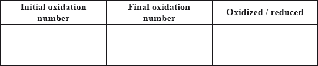
Considering the above equilibrium, predict, giving a reason, how adding more acid would affect the strength of the \({\text{Ti}}{{\text{O}}^{2 + }}\) ion as an oxidizing agent.
In the two experiments below, predict whether a reaction would occur and deduce an equation for any reaction that takes place. Refer to Table 14 of the Data Booklet if necessary.
KI(aq) is added to a solution containing \({\text{T}}{{\text{i}}^{3 + }}{\text{(aq)}}\) ions:
Zn (s) is added to a solution containing \({\text{Ti}}{{\text{O}}^{2 + }}{\text{(aq)}}\) and \({{\text{H}}^ + }{\text{(aq)}}\) ions:
Using Table 14 of the Data Booklet, state the balanced half-equation for the reaction that occurs at electrode A and whether it involves oxidation or reduction.
Calculate the cell potential in V.
On the diagram above label with an arrow
• the direction of electron flow in the wire
• the direction in which the positive ions flow in the salt bridge.
Compare the properties of the three oxides by completing the table below.

Sulfur dioxide is a significant contributor to acid deposition. Identify a major, man-made source of this pollutant.
As well as the oxide above, sodium forms a peroxide that contains the peroxide ion, \({\text{O}}_2^{2 - }\). Draw the Lewis (electron dot) structure of the peroxide ion.
Describe the differences in the hybridization of these group 4 elements and the precise nature of the bonds that they form with the oxygen atoms.
Xenon, although a noble gas, forms an oxide, \({\text{Xe}}{{\text{O}}_{\text{2}}}\), that has a structure related to that of \({\text{Si}}{{\text{O}}_{\text{2}}}\). Compare the geometry around the silicon atoms in \({\text{Si}}{{\text{O}}_{\text{2}}}\) with the geometry around the xenon atoms in \({\text{Xe}}{{\text{O}}_{\text{2}}}\), using the valence shell electron pair repulsion (VSEPR) theory.
Markscheme
potential of the half-cell / reduction half-reaction under standard conditions measured relative to standard hydrogen electrode/SHE;
Allow instead of standard conditions, solute concentration of 1 mol dm–3 or 1 bar/1 atm (pressure) for gases.
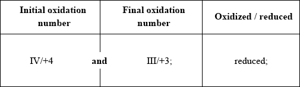
+ sign must be present. Do not award mark for incorrect notation 4, 4+, 3, 3+ etc.
Do not award M2 if inconsistent with M1.
increases / makes it stronger;
(more \({{\text{H}}^ + }\) would) drive/shift equilibrium to the right/towards products (accepting more electrons);
KI(aq) is added to a solution containing Ti3+(aq) ions:
no reaction;
Zn(s) is added to a solution containing TiO2+(aq) and H+(aq) ions:
\({\text{Zn(s)}} + {\text{2Ti}}{{\text{O}}^{2 + }}{\text{(aq)}} + {\text{4}}{{\text{H}}^ + }{\text{(aq)}} \to {\text{Z}}{{\text{n}}^{2 + }}{\text{(aq)}} + {\text{2T}}{{\text{i}}^{3 + }}{\text{(aq)}} + {\text{2}}{{\text{H}}_2}{\text{O(l)}}\)
correct reactants and products;
balanced equation;
Ignore state symbols.
\({\text{F}}{{\text{e}}^{3 + }}{\text{(aq)}} + {{\text{e}}^ - } \to {\text{F}}{{\text{e}}^{2 + }}{\text{(aq)}}\);
Ignore state symbols.
Accept equilibrium arrow.
reduction;
Do not apply ECF.
\(( + 0.77 - ( - 0.06)) = ( + )0.83{\text{ (V)}}\);
Do not accept –0.83 V.
wire and salt bridge both have arrows from B to A;
Accept arrows above or below each provided it is obvious which they refer to.
Apply ECF from part (i).

For any parts (properties) where mark not awarded, award [1] for every three correct responses.
(combustion of) coal / diesel;
Accept “burning of fossil fuels”, “industrial processes” or “combustion/car engines”.
Do not accept “Contact process”.

e-pairs correct;
charges in correct positions;
Accept lines, or pairs of dots or crosses, for electron pairs.
Accept  .
.
C is sp hybridized and Si is \({\text{s}}{{\text{p}}^{\text{3}}}\) hybridized;
C–O bond in \({\text{C}}{{\text{O}}_{\text{2}}}\) has one \(\sigma \)-bond and one \(\pi \)-bond;
Si–O bond in \({\text{Si}}{{\text{O}}_{\text{2}}}\) has one \(\sigma \)-bond only;
Award [1 max] for last two marking points for “C–O double bond and Si–O single bond”.
silicon-oxygen bonds will have a tetrahedral distribution;
xenon-oxygen bonds will have a square planar distribution;
xenon dioxide has two non-bonding/lone pairs of electrons;
Award any of the above marks if clearly indicated in suitable diagrams.
Examiners report
The required definition and the effect of acid on the oxidizing power of \({\text{Ti}}{{\text{O}}^{2 + }}\) was often well done, though it proved a challenge for some candidates, and most could interpret the change in terms of oxidation numbers. Very few candidates could use \({E^\Theta }\) values to predict whether a reaction with another half-cell would occur and even less could correctly combine the half-equations to produce a balanced equation for the overall reaction. Relatively few candidates managed to gain full marks for the questions relating to the voltaic cell illustrated, with the different parts appearing to be of approximately equal difficulty. The nature of the period 3 oxides was generally well appreciated, though often the effect on pH was expressed as, for example, “basic” rather than “increases”. In spite of the efficiency of modern plants many considered the contact process to be a major source of sulfur dioxide pollution, rather than combustion of coal and other “high sulfur” fossil fuels. The comparison of the structure of silicon dioxide to those of carbon and xenon dioxides was poorly done, the root cause often being a lack of awareness of the structure of silicon dioxide. Many candidates could however write correct equations for the reaction of silicon tetrachloride with water.
The required definition and the effect of acid on the oxidizing power of \({\text{Ti}}{{\text{O}}^{2 + }}\) was often well done, though it proved a challenge for some candidates, and most could interpret the change in terms of oxidation numbers. Very few candidates could use \({E^\Theta }\) values to predict whether a reaction with another half-cell would occur and even less could correctly combine the half-equations to produce a balanced equation for the overall reaction. Relatively few candidates managed to gain full marks for the questions relating to the voltaic cell illustrated, with the different parts appearing to be of approximately equal difficulty. The nature of the period 3 oxides was generally well appreciated, though often the effect on pH was expressed as, for example, “basic” rather than “increases”. In spite of the efficiency of modern plants many considered the contact process to be a major source of sulfur dioxide pollution, rather than combustion of coal and other “high sulfur” fossil fuels. The comparison of the structure of silicon dioxide to those of carbon and xenon dioxides was poorly done, the root cause often being a lack of awareness of the structure of silicon dioxide. Many candidates could however write correct equations for the reaction of silicon tetrachloride with water.
The required definition and the effect of acid on the oxidizing power of \({\text{Ti}}{{\text{O}}^{2 + }}\) was often well done, though it proved a challenge for some candidates, and most could interpret the change in terms of oxidation numbers. Very few candidates could use \({E^\Theta }\) values to predict whether a reaction with another half-cell would occur and even less could correctly combine the half-equations to produce a balanced equation for the overall reaction. Relatively few candidates managed to gain full marks for the questions relating to the voltaic cell illustrated, with the different parts appearing to be of approximately equal difficulty. The nature of the period 3 oxides was generally well appreciated, though often the effect on pH was expressed as, for example, “basic” rather than “increases”. In spite of the efficiency of modern plants many considered the contact process to be a major source of sulfur dioxide pollution, rather than combustion of coal and other “high sulfur” fossil fuels. The comparison of the structure of silicon dioxide to those of carbon and xenon dioxides was poorly done, the root cause often being a lack of awareness of the structure of silicon dioxide. Many candidates could however write correct equations for the reaction of silicon tetrachloride with water.
The required definition and the effect of acid on the oxidizing power of \({\text{Ti}}{{\text{O}}^{2 + }}\) was often well done, though it proved a challenge for some candidates, and most could interpret the change in terms of oxidation numbers. Very few candidates could use \({E^\Theta }\) values to predict whether a reaction with another half-cell would occur and even less could correctly combine the half-equations to produce a balanced equation for the overall reaction. Relatively few candidates managed to gain full marks for the questions relating to the voltaic cell illustrated, with the different parts appearing to be of approximately equal difficulty. The nature of the period 3 oxides was generally well appreciated, though often the effect on pH was expressed as, for example, “basic” rather than “increases”. In spite of the efficiency of modern plants many considered the contact process to be a major source of sulfur dioxide pollution, rather than combustion of coal and other “high sulfur” fossil fuels. The comparison of the structure of silicon dioxide to those of carbon and xenon dioxides was poorly done, the root cause often being a lack of awareness of the structure of silicon dioxide. Many candidates could however write correct equations for the reaction of silicon tetrachloride with water.
The required definition and the effect of acid on the oxidizing power of \({\text{Ti}}{{\text{O}}^{2 + }}\) was often well done, though it proved a challenge for some candidates, and most could interpret the change in terms of oxidation numbers. Very few candidates could use \({E^\Theta }\) values to predict whether a reaction with another half-cell would occur and even less could correctly combine the half-equations to produce a balanced equation for the overall reaction. Relatively few candidates managed to gain full marks for the questions relating to the voltaic cell illustrated, with the different parts appearing to be of approximately equal difficulty. The nature of the period 3 oxides was generally well appreciated, though often the effect on pH was expressed as, for example, “basic” rather than “increases”. In spite of the efficiency of modern plants many considered the contact process to be a major source of sulfur dioxide pollution, rather than combustion of coal and other “high sulfur” fossil fuels. The comparison of the structure of silicon dioxide to those of carbon and xenon dioxides was poorly done, the root cause often being a lack of awareness of the structure of silicon dioxide. Many candidates could however write correct equations for the reaction of silicon tetrachloride with water.
The required definition and the effect of acid on the oxidizing power of \({\text{Ti}}{{\text{O}}^{2 + }}\) was often well done, though it proved a challenge for some candidates, and most could interpret the change in terms of oxidation numbers. Very few candidates could use \({E^\Theta }\) values to predict whether a reaction with another half-cell would occur and even less could correctly combine the half-equations to produce a balanced equation for the overall reaction. Relatively few candidates managed to gain full marks for the questions relating to the voltaic cell illustrated, with the different parts appearing to be of approximately equal difficulty. The nature of the period 3 oxides was generally well appreciated, though often the effect on pH was expressed as, for example, “basic” rather than “increases”. In spite of the efficiency of modern plants many considered the contact process to be a major source of sulfur dioxide pollution, rather than combustion of coal and other “high sulfur” fossil fuels. The comparison of the structure of silicon dioxide to those of carbon and xenon dioxides was poorly done, the root cause often being a lack of awareness of the structure of silicon dioxide. Many candidates could however write correct equations for the reaction of silicon tetrachloride with water.
The required definition and the effect of acid on the oxidizing power of \({\text{Ti}}{{\text{O}}^{2 + }}\) was often well done, though it proved a challenge for some candidates, and most could interpret the change in terms of oxidation numbers. Very few candidates could use \({E^\Theta }\) values to predict whether a reaction with another half-cell would occur and even less could correctly combine the half-equations to produce a balanced equation for the overall reaction. Relatively few candidates managed to gain full marks for the questions relating to the voltaic cell illustrated, with the different parts appearing to be of approximately equal difficulty. The nature of the period 3 oxides was generally well appreciated, though often the effect on pH was expressed as, for example, “basic” rather than “increases”. In spite of the efficiency of modern plants many considered the contact process to be a major source of sulfur dioxide pollution, rather than combustion of coal and other “high sulfur” fossil fuels. The comparison of the structure of silicon dioxide to those of carbon and xenon dioxides was poorly done, the root cause often being a lack of awareness of the structure of silicon dioxide. Many candidates could however write correct equations for the reaction of silicon tetrachloride with water.
The required definition and the effect of acid on the oxidizing power of \({\text{Ti}}{{\text{O}}^{2 + }}\) was often well done, though it proved a challenge for some candidates, and most could interpret the change in terms of oxidation numbers. Very few candidates could use \({E^\Theta }\) values to predict whether a reaction with another half-cell would occur and even less could correctly combine the half-equations to produce a balanced equation for the overall reaction. Relatively few candidates managed to gain full marks for the questions relating to the voltaic cell illustrated, with the different parts appearing to be of approximately equal difficulty. The nature of the period 3 oxides was generally well appreciated, though often the effect on pH was expressed as, for example, “basic” rather than “increases”. In spite of the efficiency of modern plants many considered the contact process to be a major source of sulfur dioxide pollution, rather than combustion of coal and other “high sulfur” fossil fuels. The comparison of the structure of silicon dioxide to those of carbon and xenon dioxides was poorly done, the root cause often being a lack of awareness of the structure of silicon dioxide. Many candidates could however write correct equations for the reaction of silicon tetrachloride with water.
The required definition and the effect of acid on the oxidizing power of \({\text{Ti}}{{\text{O}}^{2 + }}\) was often well done, though it proved a challenge for some candidates, and most could interpret the change in terms of oxidation numbers. Very few candidates could use \({E^\Theta }\) values to predict whether a reaction with another half-cell would occur and even less could correctly combine the half-equations to produce a balanced equation for the overall reaction. Relatively few candidates managed to gain full marks for the questions relating to the voltaic cell illustrated, with the different parts appearing to be of approximately equal difficulty. The nature of the period 3 oxides was generally well appreciated, though often the effect on pH was expressed as, for example, “basic” rather than “increases”. In spite of the efficiency of modern plants many considered the contact process to be a major source of sulfur dioxide pollution, rather than combustion of coal and other “high sulfur” fossil fuels. The comparison of the structure of silicon dioxide to those of carbon and xenon dioxides was poorly done, the root cause often being a lack of awareness of the structure of silicon dioxide. Many candidates could however write correct equations for the reaction of silicon tetrachloride with water.
The required definition and the effect of acid on the oxidizing power of \({\text{Ti}}{{\text{O}}^{2 + }}\) was often well done, though it proved a challenge for some candidates, and most could interpret the change in terms of oxidation numbers. Very few candidates could use \({E^\Theta }\) values to predict whether a reaction with another half-cell would occur and even less could correctly combine the half-equations to produce a balanced equation for the overall reaction. Relatively few candidates managed to gain full marks for the questions relating to the voltaic cell illustrated, with the different parts appearing to be of approximately equal difficulty. The nature of the period 3 oxides was generally well appreciated, though often the effect on pH was expressed as, for example, “basic” rather than “increases”. In spite of the efficiency of modern plants many considered the contact process to be a major source of sulfur dioxide pollution, rather than combustion of coal and other “high sulfur” fossil fuels. The comparison of the structure of silicon dioxide to those of carbon and xenon dioxides was poorly done, the root cause often being a lack of awareness of the structure of silicon dioxide. Many candidates could however write correct equations for the reaction of silicon tetrachloride with water.
The required definition and the effect of acid on the oxidizing power of \({\text{Ti}}{{\text{O}}^{2 + }}\) was often well done, though it proved a challenge for some candidates, and most could interpret the change in terms of oxidation numbers. Very few candidates could use \({E^\Theta }\) values to predict whether a reaction with another half-cell would occur and even less could correctly combine the half-equations to produce a balanced equation for the overall reaction. Relatively few candidates managed to gain full marks for the questions relating to the voltaic cell illustrated, with the different parts appearing to be of approximately equal difficulty. The nature of the period 3 oxides was generally well appreciated, though often the effect on pH was expressed as, for example, “basic” rather than “increases”. In spite of the efficiency of modern plants many considered the contact process to be a major source of sulfur dioxide pollution, rather than combustion of coal and other “high sulfur” fossil fuels. The comparison of the structure of silicon dioxide to those of carbon and xenon dioxides was poorly done, the root cause often being a lack of awareness of the structure of silicon dioxide. Many candidates could however write correct equations for the reaction of silicon tetrachloride with water.
The required definition and the effect of acid on the oxidizing power of \({\text{Ti}}{{\text{O}}^{2 + }}\) was often well done, though it proved a challenge for some candidates, and most could interpret the change in terms of oxidation numbers. Very few candidates could use \({E^\Theta }\) values to predict whether a reaction with another half-cell would occur and even less could correctly combine the half-equations to produce a balanced equation for the overall reaction. Relatively few candidates managed to gain full marks for the questions relating to the voltaic cell illustrated, with the different parts appearing to be of approximately equal difficulty. The nature of the period 3 oxides was generally well appreciated, though often the effect on pH was expressed as, for example, “basic” rather than “increases”. In spite of the efficiency of modern plants many considered the contact process to be a major source of sulfur dioxide pollution, rather than combustion of coal and other “high sulfur” fossil fuels. The comparison of the structure of silicon dioxide to those of carbon and xenon dioxides was poorly done, the root cause often being a lack of awareness of the structure of silicon dioxide. Many candidates could however write correct equations for the reaction of silicon tetrachloride with water.
Antimony, Sb, forms a fluoride, \({\text{Sb}}{{\text{F}}_{\text{5}}}\).
The equilibrium that occurs when antimony(V) fluoride is dissolved in liquid hydrogen fluoride can be represented by the equation below.
\[{\text{Sb}}{{\text{F}}_5}{\text{(s)}} + {\text{2HF(l)}} \rightleftharpoons {\text{SbF}}_6^ - {\text{(sol)}} + {{\text{H}}_2}{{\text{F}}^ + }{\text{(sol)}}\]
Outline how the following factors account for the fact that HCl is a strong acid and HF is a weak acid.
Some students were provided with a \({\text{0.100 mol}}\,{\text{d}}{{\text{m}}^{ - 3}}\) solution of a monobasic acid, HQ, and given the problem of determining whether HQ was a weak acid or a strong acid.
The second problem set for the students was to determine the acid dissociation constant, \({K_{\text{a}}}\), of the acid HQ and its \({\text{p}}{K_{\text{a}}}\).
State the element that you would expect to have chemical properties most similar to those of antimony.
Describe the relationship between \({\text{Sb}}{{\text{F}}_{\text{5}}}\) and \({\text{SbF}}_6^ - \) in terms of the Lewis theory of acids.
Explain the behaviour of HF in terms of the Brønsted–Lowry theory of acids.
The strength of the hydrogen–halogen bond.
The interaction between an undissociated hydrogen halide molecule and a water molecule.
Neelu and Charles decided to solve the problem by determining the volume of \({\text{0.100 mol}}\,{\text{d}}{{\text{m}}^{ - 3}}\) sodium hydroxide solution needed to neutralize \({\text{25.0 c}}{{\text{m}}^{\text{3}}}\) of the acid. Outline whether this was a good choice.
Identify one indicator that could be used when titrating aqueous sodium hydroxide with both a strong acid and a weak acid, and outline the reason for your choice.
Indicator:
Reason:
Neelu and Charles decided to compare the volume of sodium hydroxide solution needed with those required by known \({\text{0.100 mol}}\,{\text{d}}{{\text{m}}^{ - 3}}\) strong and weak acids. Unfortunately they chose sulfuric acid as the strong acid. Outline why this was an unsuitable choice.
Francisco and Shamiso decided to measure the pH of the initial solution, HQ, and they found that its pH was 3.7. Deduce, giving a reason, the strength (weak or strong) of the acid HQ.
Explain how the \({\text{p}}{K_{\text{a}}}\) could be determined from a graph of pH against the volume of \({\text{0.100 mol}}\,{\text{d}}{{\text{m}}^{ - 3}}\) sodium hydroxide added.
Francisco and Shamiso found that the pH of the initial \({\text{0.100 mol}}\,{\text{d}}{{\text{m}}^{ - 3}}\) solution was 3.7. However, this reading was inaccurate because they forgot to wash the pH probe. Calculate the \({\text{p}}{K_{\text{a}}}\) of HQ using the reading they obtained.
Markscheme
arsenic/As;
Accept bismuth/Bi.
\({\text{Sb}}{{\text{F}}_{\text{5}}}\) accepts an electron pair (from \({{\text{F}}^ - }\)) / \({\text{SbF}}_6^ - \) donates an electron pair (to \(H_2F^ +\));
\({\text{Sb}}{{\text{F}}_{\text{5}}}\) acts as a Lewis acid / \({\text{SbF}}_6^ - \) acts as a Lewis base;
one HF donates a \({{\text{H}}^ + }\)/proton and the other accepts a \({{\text{H}}^ + }\)/proton;
HF acts as both a Brønsted–Lowry acid and a Brønsted–Lowry base;
Award [1 max] for correct description of HF acting as a Brønsted–Lowry acid or base.
H–F bond stronger than H–Cl bond / H–Cl bond weaker than H–F bond;
H–F can hydrogen bond to water and H–Cl cannot;
not a good choice / poor choice;
requires same volume of base / the amount/volume to react/for neutralization does not depend on the acid strength;
phenolphthalein / phenol red;
pH at equivalence point 7 or above;
Accept pH range for colour change/end-point corresponds to rapid change in pH.
sulfuric acid is diprotic/dibasic/liberates two protons/\({{\text{H}}^ + }\);
Accept “reacts with 2 moles of alkali/base”.
weak;
strong \({\text{0.100 mol}}\,{\text{d}}{{\text{m}}^{ - 3}}\) acid has a pH of 1/lower than that observed;
Accept “pH value of 3.7 means that it produces only 10–3.7/2.0 \( \times \) 10–4 [H+] in water”.
when volume of alkali is half equivalence volume/volume required for neutralization;
\({\text{p}}{K_{\text{a}}}\) is equal to the pH;
\([{{\text{H}}^ + }] = {10^{ - 3.7}} = 2.00 \times {10^{ - 4}}{\text{ }}({\text{mol}}\,{\text{d}}{{\text{m}}^{ - 3}})\);
\({K_{\text{a}}} = \frac{{[{{\text{H}}^ + }][{{\text{Q}}^ - }]}}{{[{\text{HQ}}]}} = \frac{{{{(2.00 \times {{10}^{ - 4}})}^2}}}{{0.100}}\);
\( = 3.98 \times {10^{ - 7}}\);
\({\text{p}}{K_{\text{a}}} = 6.4\);
Award [4] for correct final answer.
Examiners report
Most students could identify an element which would be expected to have similar properties to antimony and the reaction between its fluoride and hydrogen fluoride was generally well interpreted in terms of acid-base theories, though hardly any students realized that HF is acting as both a base (to give \({{\text{H}}_{\text{2}}}{{\text{F}}^ + }\)) and an acid (to give \({{\text{F}}^ - }\) which complexes with \({\text{As}}{{\text{F}}_{\text{5}}}\)). The significance of the strength of the hydrogen-halogen bond on the strength of the hydrogen halides was often appreciated though very few seemed to realize that HF hydrogen bonds to water whereas HCl does not. Many students think that weak acids require a smaller volume of alkali for neutralization than strong acids of equal concentration, though most could correctly identify an appropriate indicator for the titration and justify their choice. Most realized that sulfuric acid was dibasic, were aware of the significance of the pH at the half equivalence point and correctly identified HQ as a weak acid, though justifying this proved more of a challenge. Quite a few students gained full credit the calculation of the \({\text{p}}{K_{\text{a}}}\) from the initial pH and many gained some marks for the calculation of the pH of the buffer system.
Most students could identify an element which would be expected to have similar properties to antimony and the reaction between its fluoride and hydrogen fluoride was generally well interpreted in terms of acid-base theories, though hardly any students realized that HF is acting as both a base (to give \({{\text{H}}_{\text{2}}}{{\text{F}}^ + }\)) and an acid (to give \({{\text{F}}^ - }\) which complexes with \({\text{As}}{{\text{F}}_{\text{5}}}\)). The significance of the strength of the hydrogen-halogen bond on the strength of the hydrogen halides was often appreciated though very few seemed to realize that HF hydrogen bonds to water whereas HCl does not. Many students think that weak acids require a smaller volume of alkali for neutralization than strong acids of equal concentration, though most could correctly identify an appropriate indicator for the titration and justify their choice. Most realized that sulfuric acid was dibasic, were aware of the significance of the pH at the half equivalence point and correctly identified HQ as a weak acid, though justifying this proved more of a challenge. Quite a few students gained full credit the calculation of the \({\text{p}}{K_{\text{a}}}\) from the initial pH and many gained some marks for the calculation of the pH of the buffer system.
Most students could identify an element which would be expected to have similar properties to antimony and the reaction between its fluoride and hydrogen fluoride was generally well interpreted in terms of acid-base theories, though hardly any students realized that HF is acting as both a base (to give \({{\text{H}}_{\text{2}}}{{\text{F}}^ + }\)) and an acid (to give \({{\text{F}}^ - }\) which complexes with \({\text{As}}{{\text{F}}_{\text{5}}}\)). The significance of the strength of the hydrogen-halogen bond on the strength of the hydrogen halides was often appreciated though very few seemed to realize that HF hydrogen bonds to water whereas HCl does not. Many students think that weak acids require a smaller volume of alkali for neutralization than strong acids of equal concentration, though most could correctly identify an appropriate indicator for the titration and justify their choice. Most realized that sulfuric acid was dibasic, were aware of the significance of the pH at the half equivalence point and correctly identified HQ as a weak acid, though justifying this proved more of a challenge. Quite a few students gained full credit the calculation of the \({\text{p}}{K_{\text{a}}}\) from the initial pH and many gained some marks for the calculation of the pH of the buffer system.
Most students could identify an element which would be expected to have similar properties to antimony and the reaction between its fluoride and hydrogen fluoride was generally well interpreted in terms of acid-base theories, though hardly any students realized that HF is acting as both a base (to give \({{\text{H}}_{\text{2}}}{{\text{F}}^ + }\)) and an acid (to give \({{\text{F}}^ - }\) which complexes with \({\text{As}}{{\text{F}}_{\text{5}}}\)). The significance of the strength of the hydrogen-halogen bond on the strength of the hydrogen halides was often appreciated though very few seemed to realize that HF hydrogen bonds to water whereas HCl does not. Many students think that weak acids require a smaller volume of alkali for neutralization than strong acids of equal concentration, though most could correctly identify an appropriate indicator for the titration and justify their choice. Most realized that sulfuric acid was dibasic, were aware of the significance of the pH at the half equivalence point and correctly identified HQ as a weak acid, though justifying this proved more of a challenge. Quite a few students gained full credit the calculation of the \({\text{p}}{K_{\text{a}}}\) from the initial pH and many gained some marks for the calculation of the pH of the buffer system.
Most students could identify an element which would be expected to have similar properties to antimony and the reaction between its fluoride and hydrogen fluoride was generally well interpreted in terms of acid-base theories, though hardly any students realized that HF is acting as both a base (to give \({{\text{H}}_{\text{2}}}{{\text{F}}^ + }\)) and an acid (to give \({{\text{F}}^ - }\) which complexes with \({\text{As}}{{\text{F}}_{\text{5}}}\)). The significance of the strength of the hydrogen-halogen bond on the strength of the hydrogen halides was often appreciated though very few seemed to realize that HF hydrogen bonds to water whereas HCl does not. Many students think that weak acids require a smaller volume of alkali for neutralization than strong acids of equal concentration, though most could correctly identify an appropriate indicator for the titration and justify their choice. Most realized that sulfuric acid was dibasic, were aware of the significance of the pH at the half equivalence point and correctly identified HQ as a weak acid, though justifying this proved more of a challenge. Quite a few students gained full credit the calculation of the \({\text{p}}{K_{\text{a}}}\) from the initial pH and many gained some marks for the calculation of the pH of the buffer system.
Most students could identify an element which would be expected to have similar properties to antimony and the reaction between its fluoride and hydrogen fluoride was generally well interpreted in terms of acid-base theories, though hardly any students realized that HF is acting as both a base (to give \({{\text{H}}_{\text{2}}}{{\text{F}}^ + }\)) and an acid (to give \({{\text{F}}^ - }\) which complexes with \({\text{As}}{{\text{F}}_{\text{5}}}\)). The significance of the strength of the hydrogen-halogen bond on the strength of the hydrogen halides was often appreciated though very few seemed to realize that HF hydrogen bonds to water whereas HCl does not. Many students think that weak acids require a smaller volume of alkali for neutralization than strong acids of equal concentration, though most could correctly identify an appropriate indicator for the titration and justify their choice. Most realized that sulfuric acid was dibasic, were aware of the significance of the pH at the half equivalence point and correctly identified HQ as a weak acid, though justifying this proved more of a challenge. Quite a few students gained full credit the calculation of the \({\text{p}}{K_{\text{a}}}\) from the initial pH and many gained some marks for the calculation of the pH of the buffer system.
Most students could identify an element which would be expected to have similar properties to antimony and the reaction between its fluoride and hydrogen fluoride was generally well interpreted in terms of acid-base theories, though hardly any students realized that HF is acting as both a base (to give \({{\text{H}}_{\text{2}}}{{\text{F}}^ + }\)) and an acid (to give \({{\text{F}}^ - }\) which complexes with \({\text{As}}{{\text{F}}_{\text{5}}}\)). The significance of the strength of the hydrogen-halogen bond on the strength of the hydrogen halides was often appreciated though very few seemed to realize that HF hydrogen bonds to water whereas HCl does not. Many students think that weak acids require a smaller volume of alkali for neutralization than strong acids of equal concentration, though most could correctly identify an appropriate indicator for the titration and justify their choice. Most realized that sulfuric acid was dibasic, were aware of the significance of the pH at the half equivalence point and correctly identified HQ as a weak acid, though justifying this proved more of a challenge. Quite a few students gained full credit the calculation of the \({\text{p}}{K_{\text{a}}}\) from the initial pH and many gained some marks for the calculation of the pH of the buffer system.
Most students could identify an element which would be expected to have similar properties to antimony and the reaction between its fluoride and hydrogen fluoride was generally well interpreted in terms of acid-base theories, though hardly any students realized that HF is acting as both a base (to give \({{\text{H}}_{\text{2}}}{{\text{F}}^ + }\)) and an acid (to give \({{\text{F}}^ - }\) which complexes with \({\text{As}}{{\text{F}}_{\text{5}}}\)). The significance of the strength of the hydrogen-halogen bond on the strength of the hydrogen halides was often appreciated though very few seemed to realize that HF hydrogen bonds to water whereas HCl does not. Many students think that weak acids require a smaller volume of alkali for neutralization than strong acids of equal concentration, though most could correctly identify an appropriate indicator for the titration and justify their choice. Most realized that sulfuric acid was dibasic, were aware of the significance of the pH at the half equivalence point and correctly identified HQ as a weak acid, though justifying this proved more of a challenge. Quite a few students gained full credit the calculation of the \({\text{p}}{K_{\text{a}}}\) from the initial pH and many gained some marks for the calculation of the pH of the buffer system.
Most students could identify an element which would be expected to have similar properties to antimony and the reaction between its fluoride and hydrogen fluoride was generally well interpreted in terms of acid-base theories, though hardly any students realized that HF is acting as both a base (to give \({{\text{H}}_{\text{2}}}{{\text{F}}^ + }\)) and an acid (to give \({{\text{F}}^ - }\) which complexes with \({\text{As}}{{\text{F}}_{\text{5}}}\)). The significance of the strength of the hydrogen-halogen bond on the strength of the hydrogen halides was often appreciated though very few seemed to realize that HF hydrogen bonds to water whereas HCl does not. Many students think that weak acids require a smaller volume of alkali for neutralization than strong acids of equal concentration, though most could correctly identify an appropriate indicator for the titration and justify their choice. Most realized that sulfuric acid was dibasic, were aware of the significance of the pH at the half equivalence point and correctly identified HQ as a weak acid, though justifying this proved more of a challenge. Quite a few students gained full credit the calculation of the \({\text{p}}{K_{\text{a}}}\) from the initial pH and many gained some marks for the calculation of the pH of the buffer system.
Most students could identify an element which would be expected to have similar properties to antimony and the reaction between its fluoride and hydrogen fluoride was generally well interpreted in terms of acid-base theories, though hardly any students realized that HF is acting as both a base (to give \({{\text{H}}_{\text{2}}}{{\text{F}}^ + }\)) and an acid (to give \({{\text{F}}^ - }\) which complexes with \({\text{As}}{{\text{F}}_{\text{5}}}\)). The significance of the strength of the hydrogen-halogen bond on the strength of the hydrogen halides was often appreciated though very few seemed to realize that HF hydrogen bonds to water whereas HCl does not. Many students think that weak acids require a smaller volume of alkali for neutralization than strong acids of equal concentration, though most could correctly identify an appropriate indicator for the titration and justify their choice. Most realized that sulfuric acid was dibasic, were aware of the significance of the pH at the half equivalence point and correctly identified HQ as a weak acid, though justifying this proved more of a challenge. Quite a few students gained full credit the calculation of the \({\text{p}}{K_{\text{a}}}\) from the initial pH and many gained some marks for the calculation of the pH of the buffer system.
Most students could identify an element which would be expected to have similar properties to antimony and the reaction between its fluoride and hydrogen fluoride was generally well interpreted in terms of acid-base theories, though hardly any students realized that HF is acting as both a base (to give \({{\text{H}}_{\text{2}}}{{\text{F}}^ + }\)) and an acid (to give \({{\text{F}}^ - }\) which complexes with \({\text{As}}{{\text{F}}_{\text{5}}}\)). The significance of the strength of the hydrogen-halogen bond on the strength of the hydrogen halides was often appreciated though very few seemed to realize that HF hydrogen bonds to water whereas HCl does not. Many students think that weak acids require a smaller volume of alkali for neutralization than strong acids of equal concentration, though most could correctly identify an appropriate indicator for the titration and justify their choice. Most realized that sulfuric acid was dibasic, were aware of the significance of the pH at the half equivalence point and correctly identified HQ as a weak acid, though justifying this proved more of a challenge. Quite a few students gained full credit the calculation of the \({\text{p}}{K_{\text{a}}}\) from the initial pH and many gained some marks for the calculation of the pH of the buffer system.
The element boron has two naturally occurring isotopes, \(^{{\text{10}}}{\text{B}}\) and \(^{{\text{11}}}{\text{B}}\).
Phosphorus forms two chlorides, \({\text{PC}}{{\text{l}}_{\text{3}}}\) and \({\text{PC}}{{\text{l}}_{\text{5}}}\).
Apply the Aufbau principle to state the full electron configuration for an atom of phosphorus.
Deduce the Lewis structures for \({\text{PC}}{{\text{l}}_{\text{3}}}\) and \({\text{PC}}{{\text{l}}_{\text{5}}}\).
\({\text{PC}}{{\text{l}}_{\text{3}}}\)\(\quad \quad \quad \quad \quad \quad \quad \quad \quad \quad \)\({\text{PC}}{{\text{l}}_{\text{5}}}\)
Predict the shapes and the bond angles in the two molecules.

Identify the type of hybridization present in \({\text{PC}}{{\text{l}}_{\text{3}}}\).
Compare the melting points of \({\text{PC}}{{\text{l}}_{\text{3}}}\) and \({\text{PC}}{{\text{l}}_{\text{5}}}\) and explain the difference.
Define an acid according to the Lewis theory.
State and explain the acid–base character of \({\text{PC}}{{\text{l}}_{\text{3}}}\) according to the Lewis theory.
Explain the delocalization of \(\pi \) electrons using the \({{\text{O}}_{\text{3}}}\) molecule as an example, including two facts that support the delocalization.
Markscheme
\({\text{1}}{{\text{s}}^{\text{2}}}{\text{2}}{{\text{s}}^{\text{2}}}{\text{2}}{{\text{p}}^{\text{6}}}{\text{3}}{{\text{s}}^{\text{2}}}{\text{3}}{{\text{p}}^{\text{3}}}\);
 ;
;
Penalize missing lone pairs on chlorine only once.
Accept any combination of lines, dots or crosses to represent electron pairs.

Shape and bond angle must be consistent with the number of electron domains given in the diagram in (ii).
\({\text{s}}{{\text{p}}^{\text{3}}}\) (hybridization);
\({\text{PC}}{{\text{l}}_{\text{5}}}\) has higher melting point than \({\text{PC}}{{\text{l}}_{\text{3}}}\);
\({\text{PC}}{{\text{l}}_{\text{5}}}\) has stronger intermolecular/London/dispersion/van der Waals’ forces;
(because of) more electrons/greater mass;
Accept the opposite argument for PCl3.
Award [1 max] for answers suggesting PCl3 has higher melting point because it is polar and PCl5 is not.
electron pair acceptor;
Lewis base;
has non-bonding/lone pair of electrons;
No ECF from (i).
overlap of \(p\) orbitals / \(p\) electrons of double/\(\pi \) bond and non-bonding/lone pair on oxygen interact / OWTTE;
\(\pi \) electrons not localized / different resonance structures possible /
 ;
;
both bonds/O–O and O=O have equal length / OWTTE;
both bonds/O–O and O=O have equal bond energy / OWTTE;
Examiners report
The electron configuration of phosphorus was successfully answered (even by apparently weaker candidates) and there were many good answers for the Lewis structures. Candidates would do well to draw the “dots” clearly remembering that their answer will be scanned. They should group the electron dots neatly in pairs (much easier for the examiner to count, for one thing) or use a line to represent an electron pair. The usual errors occurred namely missing lone pairs on P and/or Cl atoms.
The electron configuration of phosphorus was successfully answered (even by apparently weaker candidates) and there were many good answers for the Lewis structures. Candidates would do well to draw the “dots” clearly remembering that their answer will be scanned. They should group the electron dots neatly in pairs (much easier for the examiner to count, for one thing) or use a line to represent an electron pair. The usual errors occurred namely missing lone pairs on P and/or Cl atoms.
The shapes and angles in (iii) were patchy but there were also some impressive answers.
About half knew that \({\text{s}}{{\text{p}}^{\text{3}}}\) was the answer to (iv) and in (v) about half based their explanation on the dipole moment in \({\text{PC}}{{\text{l}}_{\text{3}}}\). (One mark was allowed for those who recognized that \({\text{PC}}{{\text{l}}_{\text{3}}}\) would be polar whilst \({\text{PC}}{{\text{l}}_{\text{5}}}\) would not – thus suggesting that \({\text{PC}}{{\text{l}}_{\text{3}}}\) had the higher melting point.) Candidates were expected to know the order of melting points as this had been studied in 13.1.1. Very few were able to write a balanced equation for the reaction of \({\text{PC}}{{\text{l}}_{\text{5}}}\) with water.
About half knew that \({\text{s}}{{\text{p}}^{\text{3}}}\) was the answer to (iv) and in (v) about half based their explanation on the dipole moment in \({\text{PC}}{{\text{l}}_{\text{3}}}\). (One mark was allowed for those who recognized that \({\text{PC}}{{\text{l}}_{\text{3}}}\) would be polar whilst \({\text{PC}}{{\text{l}}_{\text{5}}}\) would not – thus suggesting that \({\text{PC}}{{\text{l}}_{\text{3}}}\) had the higher melting point.) Candidates were expected to know the order of melting points as this had been studied in 13.1.1. Very few were able to write a balanced equation for the reaction of \({\text{PC}}{{\text{l}}_{\text{5}}}\) with water.
Many failed to note that a Lewis acid is an electron pair acceptor and the definition was often muddled with that of Brønsted-Lowry.
Some, in (d) (ii), treated the P and Cl atoms separately.
In (e) there was little discussion of overlap of \(p\) orbitals, some of resonance but hardly any evidence in terms of equal bond length and equal bond strength. The bonding in an ozone molecule was not well-understood.
A class studied the equilibrium established when ethanoic acid and ethanol react together in the presence of a strong acid, using propanone as an inert solvent. The equation is given below.
\[{\text{C}}{{\text{H}}_{\text{3}}}{\text{COOH}} + {{\text{C}}_{\text{2}}}{{\text{H}}_{\text{5}}}{\text{OH}} \rightleftharpoons {\text{C}}{{\text{H}}_{\text{3}}}{\text{COO}}{{\text{C}}_{\text{2}}}{{\text{H}}_{\text{5}}} + {{\text{H}}_{\text{2}}}{\text{O}}\]
One group made the following initial mixture:
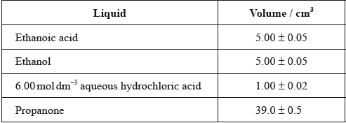
After one week, a \(5.00 \pm 0.05{\text{ c}}{{\text{m}}^{\text{3}}}\) sample of the final equilibrium mixture was pipetted out and titrated with \({\text{0.200 mol}}\,{\text{d}}{{\text{m}}^{ - 3}}\) aqueous sodium hydroxide to determine the amount of ethanoic acid remaining. The following titration results were obtained:

The density of ethanoic acid is \({\text{1.05 g}}\,{\text{c}}{{\text{m}}^{ - 3}}\). Determine the amount, in mol, of ethanoic acid present in the initial mixture.
The concentration of ethanoic acid can be calculated as \({\text{1.748 mol}}\,{\text{d}}{{\text{m}}^{ - 3}}\). Determine the percentage uncertainty of this value. (Neglect any uncertainty in the density and the molar mass.)
Calculate the absolute uncertainty of the titre for Titration 1 (\({\text{27.60 c}}{{\text{m}}^3}\)).
Suggest the average volume of alkali, required to neutralize the \({\text{5.00 c}}{{\text{m}}^{\text{3}}}\) sample, that the student should use.
\({\text{3.00 c}}{{\text{m}}^{\text{3}}}\) of the \({\text{0.200 mol}}\,{\text{d}}{{\text{m}}^{ - 3}}\) aqueous sodium hydroxide reacted with the hydrochloric acid present in the \({\text{5.00 c}}{{\text{m}}^{\text{3}}}\) sample. Determine the concentration of ethanoic acid in the final equilibrium mixture.
Deduce the equilibrium constant expression for the reaction.
The other concentrations in the equilibrium mixture were calculated as follows:

Use these data, along with your answer to part (iii), to determine the value of the equilibrium constant. (If you did not obtain an answer to part (iii), assume the concentrations of ethanol and ethanoic acid are equal, although this is not the case.)
Outline how you could establish that the system had reached equilibrium at the end of one week.
Outline why changing the temperature has only a very small effect on the value of the equilibrium constant for this equilibrium.
Outline how adding some ethyl ethanoate to the initial mixture would affect the amount of ethanoic acid converted to product.
Propanone is used as the solvent because one compound involved in the equilibrium is insoluble in water. Identify this compound and explain why it is insoluble in water.
Suggest one other reason why using water as a solvent would make the experiment less successful.
Markscheme
\({\text{M(C}}{{\text{H}}_{\text{3}}}{\text{COOH)}}\left( { = (4 \times 1.01) + (2 \times 12.01) + (2 \times 16.00)} \right) = 60.06{\text{ (g}}\,{\text{mo}}{{\text{l}}^{ - 1}})\);
Accept 60 (g mol–1).
\({\text{mass (C}}{{\text{H}}_3}{\text{COOH) }}( = 5.00 \times 1.05) = 5.25{\text{ (g)}}\);
\(\frac{{5.25}}{{60.06}} = 0.0874{\text{ (mol)}}\);
Award [3] for correct final answer.
Accept 0.0875 (comes from using Mr = 60 g mol–1).
percentage uncertainty in volume of ethanoic acid \( = 100 \times \frac{{0.05}}{{5.00}}{\text{ }} = 1\% \);
percentage uncertainty in total volume \( = 100 \times \frac{{0.62}}{{50}} = 1.24\% \);
total percentage uncertainty \( = 1 + 1.24 = 2.24\% \);
Accept rounding down to 2.2/2%.
\( \pm 0.1/0.10{\text{ }}({\text{c}}{{\text{m}}^3})\);
Do not accept without ±.
\({\text{26.00 (c}}{{\text{m}}^{\text{3}}}{\text{)}}\);
\(26.00 - 3.00 = 23.00{\text{ }}({\text{c}}{{\text{m}}^3})\);
If other methods used, award M1 for calculating amount of NaOH reacting with CH3COOH.
\(0.200 \times \frac{{23.00}}{{5.00}} = 0.920{\text{ }}({\text{mol}}\,{\text{d}}{{\text{m}}^{ - 3}})\);
Award [2] for correct final answer.
If (ii) given as mean titre (26.5 cm3) then ECF answer comes to 0.94 (mol dm–3).
\(({K_{\text{c}}} = )\frac{{{\text{[C}}{{\text{H}}_3}{\text{COO}}{{\text{C}}_2}{{\text{H}}_5}{\text{][}}{{\text{H}}_2}{\text{O]}}}}{{{\text{[}}{{\text{C}}_2}{{\text{H}}_5}{\text{OH][C}}{{\text{H}}_3}{\text{COOH]}}}}\);
Do not penalize minor errors in formulas.
Accept \(({K_{\text{c}}} = )\frac{{{\text{[}}esther{\text{][}}water{\text{]}}}}{{[ethanol/alcohol{\text{][(}}ethanoic{\text{) }}acid{\text{]}}}}\).
\(({K_c} = )\frac{{0.828 \times 1.80}}{{0.884 \times 0.920}} = 1.83\);
If assumed [CH3COOH] = 0.884 mol dm-3, answer is 1.91 – allow this even if an answer was obtained for (iii).
If (ii) given as mean titre (26.5 cm3) then ECF answer comes to 1.79.
repeat the titration a day/week later (and result should be the same) / OWTTE;
Accept “concentrations/physical properties/macroscopic properties of the system do not change”.
enthalpy change/\(\Delta H\) for the reaction is (very) small / OWTTE;
decreases (the amount of ethanoic acid converted);
Accept “increases amount of ethanoic acid present at equilibrium” / OWTTE.
(adding product) shifts position of equilibrium towards reactants/LHS / increases
the rate of the reverse reaction / OWTTE;
ethyl ethanoate/\({\text{C}}{{\text{H}}_{\text{3}}}{\text{COO}}{{\text{C}}_{\text{2}}}{{\text{H}}_{\text{5}}}\)/ester;
forms only weak hydrogen bonds (to water);
Allow “does not hydrogen bond to water” / “hydrocarbon sections too long” / OWTTE.
M2 can only be given only if M1 correct.
(large excess of) water will shift the position of equilibrium (far to the left) / OWTTE;
Accept any other chemically sound response, such as “dissociation of ethanoic acid would affect equilibrium”.
Examiners report
Generally candidates found this question quite challenging and some left quite a number of parts unanswered. The tradition is that the first question on the paper is a data response question, which often addresses many aspects of the syllabus, and unfortunately candidates, especially those of average or below average ability, seem to have difficulty in tackling questions of this nature. One other issue with data response questions is that, of necessity, the data appears at the beginning of the question whilst, mainly because of the space left for candidates to answer, the later parts of the question referring to these data may not appear until a number of pages into the paper.
Part (a) concerning density, volume and amount of substance was generally reasonably well answered, but the following parts, concerning uncertainties, were rarely answered correctly and a number confused precision (uncertainty, either absolute or as a percentage) and accuracy (percentage error in the value obtained). Many candidates also seemed to lack experimental common sense, simply taking an average that included an initial titre that was much larger than the concordant second and third titres, rather than excluding it. This lack of experimental “know how” was also evident in responses to (c) (iii) where it was unusual for the approach to the question to indicate the candidate had realised that the alkali was neutralising two different acids (HCl and \({\text{C}}{{\text{H}}_{\text{3}}}{\text{COOH}}\)) and again in part (d) where it was rare for the response to outline a practical solution to the problem, though quite a number of candidates suggested that the pH would become constant, presumably not realising that the pH would be dominated by the HCl catalyst. Most students could however carry out the more routine tasks of writing an equilibrium constant expression and determining its value from the data given. Many candidates were aware of Le Chatelier effects on the position of equilibrium, but a significant number failed to use this information to answer the question actually asked and the unusual approach to the effect of temperature disconcerted many. Whilst most students managed to identify the ester as the component of the mixture that was insoluble in water, the reasons given were usually couched in terms of the polarity of the molecule (many quite polar molecules, halogenoalkanes for example, are insoluble in water) rather than its inability to form strong hydrogen bonds to water, which is the critical factor. Quite a number of students came up with a valid reason why water would not be a suitable solvent, though some students appeared to have overlooked the fact the question stated “other reason”.
Generally candidates found this question quite challenging and some left quite a number of parts unanswered. The tradition is that the first question on the paper is a data response question, which often addresses many aspects of the syllabus, and unfortunately candidates, especially those of average or below average ability, seem to have difficulty in tackling questions of this nature. One other issue with data response questions is that, of necessity, the data appears at the beginning of the question whilst, mainly because of the space left for candidates to answer, the later parts of the question referring to these data may not appear until a number of pages into the paper.
Part (a) concerning density, volume and amount of substance was generally reasonably well answered, but the following parts, concerning uncertainties, were rarely answered correctly and a number confused precision (uncertainty, either absolute or as a percentage) and accuracy (percentage error in the value obtained). Many candidates also seemed to lack experimental common sense, simply taking an average that included an initial titre that was much larger than the concordant second and third titres, rather than excluding it. This lack of experimental “know how” was also evident in responses to (c) (iii) where it was unusual for the approach to the question to indicate the candidate had realised that the alkali was neutralising two different acids (HCl and \({\text{C}}{{\text{H}}_{\text{3}}}{\text{COOH}}\)) and again in part (d) where it was rare for the response to outline a practical solution to the problem, though quite a number of candidates suggested that the pH would become constant, presumably not realising that the pH would be dominated by the HCl catalyst. Most students could however carry out the more routine tasks of writing an equilibrium constant expression and determining its value from the data given. Many candidates were aware of Le Chatelier effects on the position of equilibrium, but a significant number failed to use this information to answer the question actually asked and the unusual approach to the effect of temperature disconcerted many. Whilst most students managed to identify the ester as the component of the mixture that was insoluble in water, the reasons given were usually couched in terms of the polarity of the molecule (many quite polar molecules, halogenoalkanes for example, are insoluble in water) rather than its inability to form strong hydrogen bonds to water, which is the critical factor. Quite a number of students came up with a valid reason why water would not be a suitable solvent, though some students appeared to have overlooked the fact the question stated “other reason”.
Generally candidates found this question quite challenging and some left quite a number of parts unanswered. The tradition is that the first question on the paper is a data response question, which often addresses many aspects of the syllabus, and unfortunately candidates, especially those of average or below average ability, seem to have difficulty in tackling questions of this nature. One other issue with data response questions is that, of necessity, the data appears at the beginning of the question whilst, mainly because of the space left for candidates to answer, the later parts of the question referring to these data may not appear until a number of pages into the paper.
Part (a) concerning density, volume and amount of substance was generally reasonably well answered, but the following parts, concerning uncertainties, were rarely answered correctly and a number confused precision (uncertainty, either absolute or as a percentage) and accuracy (percentage error in the value obtained). Many candidates also seemed to lack experimental common sense, simply taking an average that included an initial titre that was much larger than the concordant second and third titres, rather than excluding it. This lack of experimental “know how” was also evident in responses to (c) (iii) where it was unusual for the approach to the question to indicate the candidate had realised that the alkali was neutralising two different acids (HCl and \({\text{C}}{{\text{H}}_{\text{3}}}{\text{COOH}}\)) and again in part (d) where it was rare for the response to outline a practical solution to the problem, though quite a number of candidates suggested that the pH would become constant, presumably not realising that the pH would be dominated by the HCl catalyst. Most students could however carry out the more routine tasks of writing an equilibrium constant expression and determining its value from the data given. Many candidates were aware of Le Chatelier effects on the position of equilibrium, but a significant number failed to use this information to answer the question actually asked and the unusual approach to the effect of temperature disconcerted many. Whilst most students managed to identify the ester as the component of the mixture that was insoluble in water, the reasons given were usually couched in terms of the polarity of the molecule (many quite polar molecules, halogenoalkanes for example, are insoluble in water) rather than its inability to form strong hydrogen bonds to water, which is the critical factor. Quite a number of students came up with a valid reason why water would not be a suitable solvent, though some students appeared to have overlooked the fact the question stated “other reason”.
Generally candidates found this question quite challenging and some left quite a number of parts unanswered. The tradition is that the first question on the paper is a data response question, which often addresses many aspects of the syllabus, and unfortunately candidates, especially those of average or below average ability, seem to have difficulty in tackling questions of this nature. One other issue with data response questions is that, of necessity, the data appears at the beginning of the question whilst, mainly because of the space left for candidates to answer, the later parts of the question referring to these data may not appear until a number of pages into the paper.
Part (a) concerning density, volume and amount of substance was generally reasonably well answered, but the following parts, concerning uncertainties, were rarely answered correctly and a number confused precision (uncertainty, either absolute or as a percentage) and accuracy (percentage error in the value obtained). Many candidates also seemed to lack experimental common sense, simply taking an average that included an initial titre that was much larger than the concordant second and third titres, rather than excluding it. This lack of experimental “know how” was also evident in responses to (c) (iii) where it was unusual for the approach to the question to indicate the candidate had realised that the alkali was neutralising two different acids (HCl and \({\text{C}}{{\text{H}}_{\text{3}}}{\text{COOH}}\)) and again in part (d) where it was rare for the response to outline a practical solution to the problem, though quite a number of candidates suggested that the pH would become constant, presumably not realising that the pH would be dominated by the HCl catalyst. Most students could however carry out the more routine tasks of writing an equilibrium constant expression and determining its value from the data given. Many candidates were aware of Le Chatelier effects on the position of equilibrium, but a significant number failed to use this information to answer the question actually asked and the unusual approach to the effect of temperature disconcerted many. Whilst most students managed to identify the ester as the component of the mixture that was insoluble in water, the reasons given were usually couched in terms of the polarity of the molecule (many quite polar molecules, halogenoalkanes for example, are insoluble in water) rather than its inability to form strong hydrogen bonds to water, which is the critical factor. Quite a number of students came up with a valid reason why water would not be a suitable solvent, though some students appeared to have overlooked the fact the question stated “other reason”.
Generally candidates found this question quite challenging and some left quite a number of parts unanswered. The tradition is that the first question on the paper is a data response question, which often addresses many aspects of the syllabus, and unfortunately candidates, especially those of average or below average ability, seem to have difficulty in tackling questions of this nature. One other issue with data response questions is that, of necessity, the data appears at the beginning of the question whilst, mainly because of the space left for candidates to answer, the later parts of the question referring to these data may not appear until a number of pages into the paper.
Part (a) concerning density, volume and amount of substance was generally reasonably well answered, but the following parts, concerning uncertainties, were rarely answered correctly and a number confused precision (uncertainty, either absolute or as a percentage) and accuracy (percentage error in the value obtained). Many candidates also seemed to lack experimental common sense, simply taking an average that included an initial titre that was much larger than the concordant second and third titres, rather than excluding it. This lack of experimental “know how” was also evident in responses to (c) (iii) where it was unusual for the approach to the question to indicate the candidate had realised that the alkali was neutralising two different acids (HCl and \({\text{C}}{{\text{H}}_{\text{3}}}{\text{COOH}}\)) and again in part (d) where it was rare for the response to outline a practical solution to the problem, though quite a number of candidates suggested that the pH would become constant, presumably not realising that the pH would be dominated by the HCl catalyst. Most students could however carry out the more routine tasks of writing an equilibrium constant expression and determining its value from the data given. Many candidates were aware of Le Chatelier effects on the position of equilibrium, but a significant number failed to use this information to answer the question actually asked and the unusual approach to the effect of temperature disconcerted many. Whilst most students managed to identify the ester as the component of the mixture that was insoluble in water, the reasons given were usually couched in terms of the polarity of the molecule (many quite polar molecules, halogenoalkanes for example, are insoluble in water) rather than its inability to form strong hydrogen bonds to water, which is the critical factor. Quite a number of students came up with a valid reason why water would not be a suitable solvent, though some students appeared to have overlooked the fact the question stated “other reason”.
Generally candidates found this question quite challenging and some left quite a number of parts unanswered. The tradition is that the first question on the paper is a data response question, which often addresses many aspects of the syllabus, and unfortunately candidates, especially those of average or below average ability, seem to have difficulty in tackling questions of this nature. One other issue with data response questions is that, of necessity, the data appears at the beginning of the question whilst, mainly because of the space left for candidates to answer, the later parts of the question referring to these data may not appear until a number of pages into the paper.
Part (a) concerning density, volume and amount of substance was generally reasonably well answered, but the following parts, concerning uncertainties, were rarely answered correctly and a number confused precision (uncertainty, either absolute or as a percentage) and accuracy (percentage error in the value obtained). Many candidates also seemed to lack experimental common sense, simply taking an average that included an initial titre that was much larger than the concordant second and third titres, rather than excluding it. This lack of experimental “know how” was also evident in responses to (c) (iii) where it was unusual for the approach to the question to indicate the candidate had realised that the alkali was neutralising two different acids (HCl and \({\text{C}}{{\text{H}}_{\text{3}}}{\text{COOH}}\)) and again in part (d) where it was rare for the response to outline a practical solution to the problem, though quite a number of candidates suggested that the pH would become constant, presumably not realising that the pH would be dominated by the HCl catalyst. Most students could however carry out the more routine tasks of writing an equilibrium constant expression and determining its value from the data given. Many candidates were aware of Le Chatelier effects on the position of equilibrium, but a significant number failed to use this information to answer the question actually asked and the unusual approach to the effect of temperature disconcerted many. Whilst most students managed to identify the ester as the component of the mixture that was insoluble in water, the reasons given were usually couched in terms of the polarity of the molecule (many quite polar molecules, halogenoalkanes for example, are insoluble in water) rather than its inability to form strong hydrogen bonds to water, which is the critical factor. Quite a number of students came up with a valid reason why water would not be a suitable solvent, though some students appeared to have overlooked the fact the question stated “other reason”.
Generally candidates found this question quite challenging and some left quite a number of parts unanswered. The tradition is that the first question on the paper is a data response question, which often addresses many aspects of the syllabus, and unfortunately candidates, especially those of average or below average ability, seem to have difficulty in tackling questions of this nature. One other issue with data response questions is that, of necessity, the data appears at the beginning of the question whilst, mainly because of the space left for candidates to answer, the later parts of the question referring to these data may not appear until a number of pages into the paper.
Part (a) concerning density, volume and amount of substance was generally reasonably well answered, but the following parts, concerning uncertainties, were rarely answered correctly and a number confused precision (uncertainty, either absolute or as a percentage) and accuracy (percentage error in the value obtained). Many candidates also seemed to lack experimental common sense, simply taking an average that included an initial titre that was much larger than the concordant second and third titres, rather than excluding it. This lack of experimental “know how” was also evident in responses to (c) (iii) where it was unusual for the approach to the question to indicate the candidate had realised that the alkali was neutralising two different acids (HCl and \({\text{C}}{{\text{H}}_{\text{3}}}{\text{COOH}}\)) and again in part (d) where it was rare for the response to outline a practical solution to the problem, though quite a number of candidates suggested that the pH would become constant, presumably not realising that the pH would be dominated by the HCl catalyst. Most students could however carry out the more routine tasks of writing an equilibrium constant expression and determining its value from the data given. Many candidates were aware of Le Chatelier effects on the position of equilibrium, but a significant number failed to use this information to answer the question actually asked and the unusual approach to the effect of temperature disconcerted many. Whilst most students managed to identify the ester as the component of the mixture that was insoluble in water, the reasons given were usually couched in terms of the polarity of the molecule (many quite polar molecules, halogenoalkanes for example, are insoluble in water) rather than its inability to form strong hydrogen bonds to water, which is the critical factor. Quite a number of students came up with a valid reason why water would not be a suitable solvent, though some students appeared to have overlooked the fact the question stated “other reason”.
Generally candidates found this question quite challenging and some left quite a number of parts unanswered. The tradition is that the first question on the paper is a data response question, which often addresses many aspects of the syllabus, and unfortunately candidates, especially those of average or below average ability, seem to have difficulty in tackling questions of this nature. One other issue with data response questions is that, of necessity, the data appears at the beginning of the question whilst, mainly because of the space left for candidates to answer, the later parts of the question referring to these data may not appear until a number of pages into the paper.
Part (a) concerning density, volume and amount of substance was generally reasonably well answered, but the following parts, concerning uncertainties, were rarely answered correctly and a number confused precision (uncertainty, either absolute or as a percentage) and accuracy (percentage error in the value obtained). Many candidates also seemed to lack experimental common sense, simply taking an average that included an initial titre that was much larger than the concordant second and third titres, rather than excluding it. This lack of experimental “know how” was also evident in responses to (c) (iii) where it was unusual for the approach to the question to indicate the candidate had realised that the alkali was neutralising two different acids (HCl and \({\text{C}}{{\text{H}}_{\text{3}}}{\text{COOH}}\)) and again in part (d) where it was rare for the response to outline a practical solution to the problem, though quite a number of candidates suggested that the pH would become constant, presumably not realising that the pH would be dominated by the HCl catalyst. Most students could however carry out the more routine tasks of writing an equilibrium constant expression and determining its value from the data given. Many candidates were aware of Le Chatelier effects on the position of equilibrium, but a significant number failed to use this information to answer the question actually asked and the unusual approach to the effect of temperature disconcerted many. Whilst most students managed to identify the ester as the component of the mixture that was insoluble in water, the reasons given were usually couched in terms of the polarity of the molecule (many quite polar molecules, halogenoalkanes for example, are insoluble in water) rather than its inability to form strong hydrogen bonds to water, which is the critical factor. Quite a number of students came up with a valid reason why water would not be a suitable solvent, though some students appeared to have overlooked the fact the question stated “other reason”.
Generally candidates found this question quite challenging and some left quite a number of parts unanswered. The tradition is that the first question on the paper is a data response question, which often addresses many aspects of the syllabus, and unfortunately candidates, especially those of average or below average ability, seem to have difficulty in tackling questions of this nature. One other issue with data response questions is that, of necessity, the data appears at the beginning of the question whilst, mainly because of the space left for candidates to answer, the later parts of the question referring to these data may not appear until a number of pages into the paper.
Part (a) concerning density, volume and amount of substance was generally reasonably well answered, but the following parts, concerning uncertainties, were rarely answered correctly and a number confused precision (uncertainty, either absolute or as a percentage) and accuracy (percentage error in the value obtained). Many candidates also seemed to lack experimental common sense, simply taking an average that included an initial titre that was much larger than the concordant second and third titres, rather than excluding it. This lack of experimental “know how” was also evident in responses to (c) (iii) where it was unusual for the approach to the question to indicate the candidate had realised that the alkali was neutralising two different acids (HCl and \({\text{C}}{{\text{H}}_{\text{3}}}{\text{COOH}}\)) and again in part (d) where it was rare for the response to outline a practical solution to the problem, though quite a number of candidates suggested that the pH would become constant, presumably not realising that the pH would be dominated by the HCl catalyst. Most students could however carry out the more routine tasks of writing an equilibrium constant expression and determining its value from the data given. Many candidates were aware of Le Chatelier effects on the position of equilibrium, but a significant number failed to use this information to answer the question actually asked and the unusual approach to the effect of temperature disconcerted many. Whilst most students managed to identify the ester as the component of the mixture that was insoluble in water, the reasons given were usually couched in terms of the polarity of the molecule (many quite polar molecules, halogenoalkanes for example, are insoluble in water) rather than its inability to form strong hydrogen bonds to water, which is the critical factor. Quite a number of students came up with a valid reason why water would not be a suitable solvent, though some students appeared to have overlooked the fact the question stated “other reason”.
Generally candidates found this question quite challenging and some left quite a number of parts unanswered. The tradition is that the first question on the paper is a data response question, which often addresses many aspects of the syllabus, and unfortunately candidates, especially those of average or below average ability, seem to have difficulty in tackling questions of this nature. One other issue with data response questions is that, of necessity, the data appears at the beginning of the question whilst, mainly because of the space left for candidates to answer, the later parts of the question referring to these data may not appear until a number of pages into the paper.
Part (a) concerning density, volume and amount of substance was generally reasonably well answered, but the following parts, concerning uncertainties, were rarely answered correctly and a number confused precision (uncertainty, either absolute or as a percentage) and accuracy (percentage error in the value obtained). Many candidates also seemed to lack experimental common sense, simply taking an average that included an initial titre that was much larger than the concordant second and third titres, rather than excluding it. This lack of experimental “know how” was also evident in responses to (c) (iii) where it was unusual for the approach to the question to indicate the candidate had realised that the alkali was neutralising two different acids (HCl and \({\text{C}}{{\text{H}}_{\text{3}}}{\text{COOH}}\)) and again in part (d) where it was rare for the response to outline a practical solution to the problem, though quite a number of candidates suggested that the pH would become constant, presumably not realising that the pH would be dominated by the HCl catalyst. Most students could however carry out the more routine tasks of writing an equilibrium constant expression and determining its value from the data given. Many candidates were aware of Le Chatelier effects on the position of equilibrium, but a significant number failed to use this information to answer the question actually asked and the unusual approach to the effect of temperature disconcerted many. Whilst most students managed to identify the ester as the component of the mixture that was insoluble in water, the reasons given were usually couched in terms of the polarity of the molecule (many quite polar molecules, halogenoalkanes for example, are insoluble in water) rather than its inability to form strong hydrogen bonds to water, which is the critical factor. Quite a number of students came up with a valid reason why water would not be a suitable solvent, though some students appeared to have overlooked the fact the question stated “other reason”.
Generally candidates found this question quite challenging and some left quite a number of parts unanswered. The tradition is that the first question on the paper is a data response question, which often addresses many aspects of the syllabus, and unfortunately candidates, especially those of average or below average ability, seem to have difficulty in tackling questions of this nature. One other issue with data response questions is that, of necessity, the data appears at the beginning of the question whilst, mainly because of the space left for candidates to answer, the later parts of the question referring to these data may not appear until a number of pages into the paper.
Part (a) concerning density, volume and amount of substance was generally reasonably well answered, but the following parts, concerning uncertainties, were rarely answered correctly and a number confused precision (uncertainty, either absolute or as a percentage) and accuracy (percentage error in the value obtained). Many candidates also seemed to lack experimental common sense, simply taking an average that included an initial titre that was much larger than the concordant second and third titres, rather than excluding it. This lack of experimental “know how” was also evident in responses to (c) (iii) where it was unusual for the approach to the question to indicate the candidate had realised that the alkali was neutralising two different acids (HCl and \({\text{C}}{{\text{H}}_{\text{3}}}{\text{COOH}}\)) and again in part (d) where it was rare for the response to outline a practical solution to the problem, though quite a number of candidates suggested that the pH would become constant, presumably not realising that the pH would be dominated by the HCl catalyst. Most students could however carry out the more routine tasks of writing an equilibrium constant expression and determining its value from the data given. Many candidates were aware of Le Chatelier effects on the position of equilibrium, but a significant number failed to use this information to answer the question actually asked and the unusual approach to the effect of temperature disconcerted many. Whilst most students managed to identify the ester as the component of the mixture that was insoluble in water, the reasons given were usually couched in terms of the polarity of the molecule (many quite polar molecules, halogenoalkanes for example, are insoluble in water) rather than its inability to form strong hydrogen bonds to water, which is the critical factor. Quite a number of students came up with a valid reason why water would not be a suitable solvent, though some students appeared to have overlooked the fact the question stated “other reason”.
Generally candidates found this question quite challenging and some left quite a number of parts unanswered. The tradition is that the first question on the paper is a data response question, which often addresses many aspects of the syllabus, and unfortunately candidates, especially those of average or below average ability, seem to have difficulty in tackling questions of this nature. One other issue with data response questions is that, of necessity, the data appears at the beginning of the question whilst, mainly because of the space left for candidates to answer, the later parts of the question referring to these data may not appear until a number of pages into the paper.
Part (a) concerning density, volume and amount of substance was generally reasonably well answered, but the following parts, concerning uncertainties, were rarely answered correctly and a number confused precision (uncertainty, either absolute or as a percentage) and accuracy (percentage error in the value obtained). Many candidates also seemed to lack experimental common sense, simply taking an average that included an initial titre that was much larger than the concordant second and third titres, rather than excluding it. This lack of experimental “know how” was also evident in responses to (c) (iii) where it was unusual for the approach to the question to indicate the candidate had realised that the alkali was neutralising two different acids (HCl and \({\text{C}}{{\text{H}}_{\text{3}}}{\text{COOH}}\)) and again in part (d) where it was rare for the response to outline a practical solution to the problem, though quite a number of candidates suggested that the pH would become constant, presumably not realising that the pH would be dominated by the HCl catalyst. Most students could however carry out the more routine tasks of writing an equilibrium constant expression and determining its value from the data given. Many candidates were aware of Le Chatelier effects on the position of equilibrium, but a significant number failed to use this information to answer the question actually asked and the unusual approach to the effect of temperature disconcerted many. Whilst most students managed to identify the ester as the component of the mixture that was insoluble in water, the reasons given were usually couched in terms of the polarity of the molecule (many quite polar molecules, halogenoalkanes for example, are insoluble in water) rather than its inability to form strong hydrogen bonds to water, which is the critical factor. Quite a number of students came up with a valid reason why water would not be a suitable solvent, though some students appeared to have overlooked the fact the question stated “other reason”.
Ethanol has many industrial uses.
State an equation for the formation of ethanol from ethene and the necessary reaction conditions.
Equation:
Conditions:
Define the term average bond enthalpy.
Ethanol can be used as a fuel. Determine the enthalpy of combustion of ethanol at 298 K, in \({\text{kJ}}\,{\text{mo}}{{\text{l}}^{ - {\text{1}}}}\), using the values in table 10 of the data booklet, assuming all reactants and products are gaseous.
Students can also measure the enthalpy of combustion of ethanol in the laboratory using calorimetry. Suggest the major source of systematic error in these procedures.
State the equation for the acid-catalysed reaction of ethanol with propanoic acid and state the name of the organic product.
Equation:
Name of the organic product:
A polyester can be formed when ethane-1,2-diol reacts with benzene-1,4-dicarboxylic acid.
Deduce the structure of the repeating unit and state the other product formed.
Repeating unit:
Other product:
State the type of polymerization that occurs.
The standard enthalpy change of combustion, \(\Delta H_{\text{c}}^\Theta \), of propanoic acid is \( - 1527{\text{ kJ}}\,{\text{mo}}{{\text{l}}^{ - 1}}\). Determine the standard enthalpy change of formation of propanoic acid, in \({\text{kJ}}\,{\text{mo}}{{\text{l}}^{ - 1}}\), using this information and data from table 12 of the data booklet.
Deduce, giving a reason, the sign of the standard entropy change of the system for the formation of propanoic acid from its elements.
Identify three allotropes of carbon and describe their structures.
Markscheme
Equation:
\({\text{C}}{{\text{H}}_{\text{2}}}{\text{C}}{{\text{H}}_{\text{2}}} + {{\text{H}}_{\text{2}}}{\text{O}} \to {\text{C}}{{\text{H}}_{\text{3}}}{\text{C}}{{\text{H}}_{\text{2}}}{\text{OH/}}{{\text{C}}_2}{{\text{H}}_4} + {{\text{H}}_2}{\text{O}} \to {{\text{C}}_2}{{\text{H}}_5}{\text{OH}}\);
Conditions:
(concentrated) sulfuric acid/\({{\text{H}}_2}{\text{S}}{{\text{O}}_4}\);
Do not accept dilute sulfuric acid.
Accept phosphoric acid/\({H_3}P{O_4}\) (on pellets of silicon dioxide) (for industrial preparation).
heat / high temperature;
Do not accept warm.
Accept high pressure (for industrial preparation) for M3 only if \({H_3}P{O_4}\) is given for M2.
energy needed to break (1 mol of) a bond in the gaseous state/phase;
(averaged over) similar compounds;
Do not accept “similar bonds” instead of “similar compounds”.
Concept of “similar” is important for M2.
\({\text{C}}{{\text{H}}_3}{\text{C}}{{\text{H}}_2}{\text{OH}} + {\text{3}}{{\text{O}}_2} \to {\text{2C}}{{\text{O}}_2} + {\text{3}}{{\text{H}}_2}{\text{O}}\);
Bonds broken:
\(347 + (5 \times 413) + 358 + 464 + (3 \times 498)/4728{\text{ (kJ)}}/{\text{C–C}} + 5{\text{C–H}} + {\text{C–O}} + {\text{O–H}} + {\text{3O=O}}\);
Bonds made:
\((4 \times 746) + (6 \times 464) = 5768{\text{ (kJ)}}/{\text{4C = O}} + {\text{6O–H}}\);
\(\Delta H = (4728 - 5768 = ) - 1040{\text{ }}({\text{kJ}}\,{\text{mo}}{{\text{l}}^{ - 1}})\) / bonds broken − bonds formed;
Award [4] for correct final answer.
Award [3] for (+)1040 (\(kJ\,mo{l^{ - 1}}\)).
heat loss (to the surroundings);
\({\text{C}}{{\text{H}}_3}{\text{C}}{{\text{H}}_2}{\text{OH}} + {\text{C}}{{\text{H}}_3}{\text{C}}{{\text{H}}_2}{\text{COOH}} \rightleftharpoons {\text{C}}{{\text{H}}_3}{\text{C}}{{\text{H}}_2}{\text{OOCCH2C}}{{\text{H}}_3} + {{\text{H}}_2}{\text{O}}\);
ethyl propanoate;
Do not penalize if equilibrium arrow missing.
Repeating unit:
 ;
;
Continuation lines must be shown.
Ignore brackets and n.
Accept condensed formulas such as \(C{H_2}\) and \({C_6}{H_4}\).
Other product:
\({{\text{H}}_{\text{2}}}{\text{O}}\)/water;
condensation;
\({\text{3C(s)}} + {\text{3}}{{\text{H}}_2}{\text{(g)}} + {{\text{O}}_2}{\text{(g)}} \to {\text{C}}{{\text{H}}_{\text{3}}}{\text{C}}{{\text{H}}_{\text{2}}}{\text{COOH(l)}}\);
\(\Delta H_{\text{f}}^\Theta = \sum \Delta H_{\text{c}}^\Theta {\text{ (reactants)}} - \sum {\Delta H_{\text{c}}^\Theta {\text{ (products)}}} \);
Accept any suitable energy cycle.
\(\sum {\Delta H_{\text{c}}^\Theta {\text{ (reactants)}}} = 3 \times ( - 394) + 3 \times ( - 286)/ - 2040{\text{ (kJ}}\,{\text{mo}}{{\text{l}}^{ - 1}})\);
\((\Delta H_{\text{f}}^\Theta = [3 \times ( - 394) + 3 \times ( - 286)] - ( - 1527) = ) - 513{\text{ (kJ}}\,{\text{mo}}{{\text{l}}^{ - 1}})\);
OR
\({\text{C}}{{\text{H}}_3}{\text{C}}{{\text{H}}_2}{\text{COOH(l)}} + {\text{3.5}}{{\text{O}}_2}{\text{(g)}} \to {\text{3C}}{{\text{O}}_2}{\text{(g)}} + {\text{3}}{{\text{H}}_2}{\text{O(g)}}\);
\(\Delta H_{\text{c}}^\Theta = \sum {\Delta H_{\text{f}}^\Theta {\text{ }}(products)} - \sum {\Delta H_{\text{f}}^\Theta {\text{ }}(reactants)} \);
\(\sum {\Delta H_{\text{f}}^\Theta {\text{ (products)}}} = 3 \times ( - 394) + 3 \times ( - 286)/ - 2040{\text{ (kJ}}\,{\text{mo}}{{\text{l}}^{ - 1}}{\text{)}}\);
\({\text{(}}\Delta H_{\text{f}}^\Theta = [3 \times ( - 394) + 3 \times ( - 286)] - ( - 1527) = ) - 513{\text{ (kJ}}\,{\text{mo}}{{\text{l}}^{ - 1}}{\text{)}}\);
Ignore state symbols.
Award [4] for correct final answer.
negative;
reduction in the number of gaseous molecules;
Allotropes:
Any three allotropes for [1] from:
diamond
graphite
fullerene
graphene;
Allow (carbon) nanotubes for graphene.
Accept \({C_{{\text{60}}}}\)/\({C_{{\text{70}}}}\)/buckminsterfullerene/bucky balls for fullerene.
Structures:
Any three for [3] from:
Diamond:
tetrahedral arrangement of (carbon) atoms/each carbon bonded to four others / \({\text{s}}{{\text{p}}^{\text{3}}}\) and 3D/covalent network structure;
Graphite:
each carbon bonded to three others (in a trigonal planar arrangement) / \({\text{s}}{{\text{p}}^{\text{2}}}\) and 2D / layers of (carbon) atoms;
Fullerene:
each (carbon) atom bonded to three others (in a trigonal arrangement) / \({\text{s}}{{\text{p}}^{\text{2}}}\) and joined in a ball/cage/sphere/connected hexagons and pentagons;
Accept “trigonal planar” for “each carbon atom bonded to three others” part in M4.
Graphene:
each carbon bonded to three others (in a trigonal arrangement) / \({\text{s}}{{\text{p}}^{\text{2}}}\) and 2D structure;
Examiners report
There was poor understanding of the transformation in (a). When defining the average bond enthalpy in (b), the notion of “gaseous” was frequently omitted and very few mentioned the bonds being in similar compounds. In the calculation, many omitted the C–C bond and many did not work from a properly balanced equation which led to disaster. Nearly every candidate attempting this question was able to suggest “heat loss”. In (d) the usual errors were made; the name was the wrong way round, water was missing from the equation and wrong products (such as pentanoic acid) were suggested. In (e) (i) the diagrams were poor but water was usually given correctly. Most gave condensation as the type of polymerization. The key to gaining marks in questions such as (f) (i) is to start with a balanced equation, [1 mark], and then set the calculation out correctly and tidily. Part marks cannot be given if the examiner cannot follow what the candidate is doing. Many correctly gave “negative” in (ii) but the explanations lacked clarity. Most gained a mark in (g) for knowing three allotropes but the description of structures was poorly done. The [4] (marks) for this part gives some idea of the amount of detail expected.
There was poor understanding of the transformation in (a). When defining the average bond enthalpy in (b), the notion of “gaseous” was frequently omitted and very few mentioned the bonds being in similar compounds. In the calculation, many omitted the C–C bond and many did not work from a properly balanced equation which led to disaster. Nearly every candidate attempting this question was able to suggest “heat loss”. In (d) the usual errors were made; the name was the wrong way round, water was missing from the equation and wrong products (such as pentanoic acid) were suggested. In (e) (i) the diagrams were poor but water was usually given correctly. Most gave condensation as the type of polymerization. The key to gaining marks in questions such as (f) (i) is to start with a balanced equation, [1 mark], and then set the calculation out correctly and tidily. Part marks cannot be given if the examiner cannot follow what the candidate is doing. Many correctly gave “negative” in (ii) but the explanations lacked clarity. Most gained a mark in (g) for knowing three allotropes but the description of structures was poorly done. The [4] (marks) for this part gives some idea of the amount of detail expected.
There was poor understanding of the transformation in (a). When defining the average bond enthalpy in (b), the notion of “gaseous” was frequently omitted and very few mentioned the bonds being in similar compounds. In the calculation, many omitted the C–C bond and many did not work from a properly balanced equation which led to disaster. Nearly every candidate attempting this question was able to suggest “heat loss”. In (d) the usual errors were made; the name was the wrong way round, water was missing from the equation and wrong products (such as pentanoic acid) were suggested. In (e) (i) the diagrams were poor but water was usually given correctly. Most gave condensation as the type of polymerization. The key to gaining marks in questions such as (f) (i) is to start with a balanced equation, [1 mark], and then set the calculation out correctly and tidily. Part marks cannot be given if the examiner cannot follow what the candidate is doing. Many correctly gave “negative” in (ii) but the explanations lacked clarity. Most gained a mark in (g) for knowing three allotropes but the description of structures was poorly done. The [4] (marks) for this part gives some idea of the amount of detail expected.
There was poor understanding of the transformation in (a). When defining the average bond enthalpy in (b), the notion of “gaseous” was frequently omitted and very few mentioned the bonds being in similar compounds. In the calculation, many omitted the C–C bond and many did not work from a properly balanced equation which led to disaster. Nearly every candidate attempting this question was able to suggest “heat loss”. In (d) the usual errors were made; the name was the wrong way round, water was missing from the equation and wrong products (such as pentanoic acid) were suggested. In (e) (i) the diagrams were poor but water was usually given correctly. Most gave condensation as the type of polymerization. The key to gaining marks in questions such as (f) (i) is to start with a balanced equation, [1 mark], and then set the calculation out correctly and tidily. Part marks cannot be given if the examiner cannot follow what the candidate is doing. Many correctly gave “negative” in (ii) but the explanations lacked clarity. Most gained a mark in (g) for knowing three allotropes but the description of structures was poorly done. The [4] (marks) for this part gives some idea of the amount of detail expected.
There was poor understanding of the transformation in (a). When defining the average bond enthalpy in (b), the notion of “gaseous” was frequently omitted and very few mentioned the bonds being in similar compounds. In the calculation, many omitted the C–C bond and many did not work from a properly balanced equation which led to disaster. Nearly every candidate attempting this question was able to suggest “heat loss”. In (d) the usual errors were made; the name was the wrong way round, water was missing from the equation and wrong products (such as pentanoic acid) were suggested. In (e) (i) the diagrams were poor but water was usually given correctly. Most gave condensation as the type of polymerization. The key to gaining marks in questions such as (f) (i) is to start with a balanced equation, [1 mark], and then set the calculation out correctly and tidily. Part marks cannot be given if the examiner cannot follow what the candidate is doing. Many correctly gave “negative” in (ii) but the explanations lacked clarity. Most gained a mark in (g) for knowing three allotropes but the description of structures was poorly done. The [4] (marks) for this part gives some idea of the amount of detail expected.
There was poor understanding of the transformation in (a). When defining the average bond enthalpy in (b), the notion of “gaseous” was frequently omitted and very few mentioned the bonds being in similar compounds. In the calculation, many omitted the C–C bond and many did not work from a properly balanced equation which led to disaster. Nearly every candidate attempting this question was able to suggest “heat loss”. In (d) the usual errors were made; the name was the wrong way round, water was missing from the equation and wrong products (such as pentanoic acid) were suggested. In (e) (i) the diagrams were poor but water was usually given correctly. Most gave condensation as the type of polymerization. The key to gaining marks in questions such as (f) (i) is to start with a balanced equation, [1 mark], and then set the calculation out correctly and tidily. Part marks cannot be given if the examiner cannot follow what the candidate is doing. Many correctly gave “negative” in (ii) but the explanations lacked clarity. Most gained a mark in (g) for knowing three allotropes but the description of structures was poorly done. The [4] (marks) for this part gives some idea of the amount of detail expected.
There was poor understanding of the transformation in (a). When defining the average bond enthalpy in (b), the notion of “gaseous” was frequently omitted and very few mentioned the bonds being in similar compounds. In the calculation, many omitted the C–C bond and many did not work from a properly balanced equation which led to disaster. Nearly every candidate attempting this question was able to suggest “heat loss”. In (d) the usual errors were made; the name was the wrong way round, water was missing from the equation and wrong products (such as pentanoic acid) were suggested. In (e) (i) the diagrams were poor but water was usually given correctly. Most gave condensation as the type of polymerization. The key to gaining marks in questions such as (f) (i) is to start with a balanced equation, [1 mark], and then set the calculation out correctly and tidily. Part marks cannot be given if the examiner cannot follow what the candidate is doing. Many correctly gave “negative” in (ii) but the explanations lacked clarity. Most gained a mark in (g) for knowing three allotropes but the description of structures was poorly done. The [4] (marks) for this part gives some idea of the amount of detail expected.
There was poor understanding of the transformation in (a). When defining the average bond enthalpy in (b), the notion of “gaseous” was frequently omitted and very few mentioned the bonds being in similar compounds. In the calculation, many omitted the C–C bond and many did not work from a properly balanced equation which led to disaster. Nearly every candidate attempting this question was able to suggest “heat loss”. In (d) the usual errors were made; the name was the wrong way round, water was missing from the equation and wrong products (such as pentanoic acid) were suggested. In (e) (i) the diagrams were poor but water was usually given correctly. Most gave condensation as the type of polymerization. The key to gaining marks in questions such as (f) (i) is to start with a balanced equation, [1 mark], and then set the calculation out correctly and tidily. Part marks cannot be given if the examiner cannot follow what the candidate is doing. Many correctly gave “negative” in (ii) but the explanations lacked clarity. Most gained a mark in (g) for knowing three allotropes but the description of structures was poorly done. The [4] (marks) for this part gives some idea of the amount of detail expected.
There was poor understanding of the transformation in (a). When defining the average bond enthalpy in (b), the notion of “gaseous” was frequently omitted and very few mentioned the bonds being in similar compounds. In the calculation, many omitted the C–C bond and many did not work from a properly balanced equation which led to disaster. Nearly every candidate attempting this question was able to suggest “heat loss”. In (d) the usual errors were made; the name was the wrong way round, water was missing from the equation and wrong products (such as pentanoic acid) were suggested. In (e) (i) the diagrams were poor but water was usually given correctly. Most gave condensation as the type of polymerization. The key to gaining marks in questions such as (f) (i) is to start with a balanced equation, [1 mark], and then set the calculation out correctly and tidily. Part marks cannot be given if the examiner cannot follow what the candidate is doing. Many correctly gave “negative” in (ii) but the explanations lacked clarity. Most gained a mark in (g) for knowing three allotropes but the description of structures was poorly done. The [4] (marks) for this part gives some idea of the amount of detail expected.
There was poor understanding of the transformation in (a). When defining the average bond enthalpy in (b), the notion of “gaseous” was frequently omitted and very few mentioned the bonds being in similar compounds. In the calculation, many omitted the C–C bond and many did not work from a properly balanced equation which led to disaster. Nearly every candidate attempting this question was able to suggest “heat loss”. In (d) the usual errors were made; the name was the wrong way round, water was missing from the equation and wrong products (such as pentanoic acid) were suggested. In (e) (i) the diagrams were poor but water was usually given correctly. Most gave condensation as the type of polymerization. The key to gaining marks in questions such as (f) (i) is to start with a balanced equation, [1 mark], and then set the calculation out correctly and tidily. Part marks cannot be given if the examiner cannot follow what the candidate is doing. Many correctly gave “negative” in (ii) but the explanations lacked clarity. Most gained a mark in (g) for knowing three allotropes but the description of structures was poorly done. The [4] (marks) for this part gives some idea of the amount of detail expected.
Two hydrides of nitrogen are ammonia and hydrazine, \({{\text{N}}_{\text{2}}}{{\text{H}}_{\text{4}}}\). One derivative of ammonia is methanamine whose molecular structure is shown below.
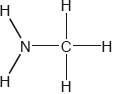
Hydrazine is used to remove oxygen from water used to generate steam or hot water.
\[{{\text{N}}_{\text{2}}}{{\text{H}}_{\text{4}}}{\text{(aq)}} + {{\text{O}}_{\text{2}}}{\text{(aq)}} \to {{\text{N}}_{\text{2}}}{\text{(g)}} + {\text{2}}{{\text{H}}_{\text{2}}}{\text{O(l)}}\]
The concentration of dissolved oxygen in a sample of water is \(8.0 \times {10^{ - 3}}{\text{ g}}\,{\text{d}}{{\text{m}}^{ - 3}}\).
Estimate the H−N−H bond angle in methanamine using VSEPR theory.
State the electron domain geometry around the nitrogen atom and its hybridization in methanamine.
Ammonia reacts reversibly with water.
\[{\text{N}}{{\text{H}}_{\text{3}}}{\text{(g)}} + {{\text{H}}_{\text{2}}}{\text{O(l)}} \rightleftharpoons {\text{NH}}_{\text{4}}^ + {\text{(aq)}} + {\text{O}}{{\text{H}}^ - }{\text{(aq)}}\]
Explain the effect of adding \({{\text{H}}^ + }{\text{(aq)}}\) ions on the position of the equilibrium.
Hydrazine reacts with water in a similar way to ammonia. (The association of a molecule of hydrazine with a second H+ is so small it can be neglected.)
\[{{\text{N}}_{\text{2}}}{{\text{H}}_{\text{4}}}{\text{(aq)}} + {{\text{H}}_{\text{2}}}{\text{O(l)}} \rightleftharpoons {{\text{N}}_{\text{2}}}{\text{H}}_{\text{5}}^ + {\text{(aq)}} + {\text{O}}{{\text{H}}^ - }{\text{(aq)}}\]
\[{\text{p}}{K_{\text{b}}}{\text{ (hydrazine)}} = 5.77\]
Calculate the pH of a \(0.0100{\text{ mol}}\,{\text{d}}{{\text{m}}^{ - 3}}\) solution of hydrazine.
Suggest a suitable indicator for the titration of hydrazine solution with dilute sulfuric acid using section 22 of the data booklet.
Outline, using an ionic equation, what is observed when magnesium powder is added to a solution of ammonium chloride.
Determine the enthalpy change of reaction, \(\Delta H\), in kJ, when 1.00 mol of gaseous hydrazine decomposes to its elements. Use bond enthalpy values in section 11 of the data booklet.
\[{{\text{N}}_{\text{2}}}{{\text{H}}_{\text{4}}}{\text{(g)}} \to {{\text{N}}_{\text{2}}}{\text{(g)}} + {\text{2}}{{\text{H}}_{\text{2}}}{\text{(g)}}\]
The standard enthalpy of formation of \({{\text{N}}_{\text{2}}}{{\text{H}}_{\text{4}}}{\text{(l)}}\) is \( + 50.6{\text{ kJ}}\,{\text{mo}}{{\text{l}}^{ - 1}}\). Calculate the enthalpy of vaporization, \(\Delta {H_{{\text{vap}}}}\), of hydrazine in \({\text{kJ}}\,{\text{mo}}{{\text{l}}^{ - 1}}\). \[{{\text{N}}_{\text{2}}}{{\text{H}}_{\text{4}}}{\text{(l)}} \to {{\text{N}}_{\text{2}}}{{\text{H}}_{\text{4}}}{\text{(g)}}\] (If you did not get an answer to (f), use \( - 85{\text{ kJ}}\) but this is not the correct answer.)
Calculate, showing your working, the mass of hydrazine needed to remove all the dissolved oxygen from \({\text{1000 d}}{{\text{m}}^{\text{3}}}\) of the sample.
Calculate the volume, in \({\text{d}}{{\text{m}}^{\text{3}}}\), of nitrogen formed under SATP conditions. (The volume of 1 mol of gas = \({\text{24.8 d}}{{\text{m}}^{\text{3}}}\) at SATP.)
Markscheme
107°
Accept 100° to < 109.5°.
Literature value = 105.8°
[1 mark]
tetrahedral
sp3
No ECF allowed.
[2 marks]
removes/reacts with \({\text{O}}{{\text{H}}^ - }\)
moves to the right/products «to replace \({\text{O}}{{\text{H}}^ - }\) ions»
Accept ionic equation for M1.
[2 marks]
Kb = 10–5.77 / 1.698 x 10–6
OR
\({K_{\text{b}}} = \frac{{\left[ {{{\text{N}}_{\text{2}}}{\text{H}}_5^ + } \right] \times \left[ {{\text{O}}{{\text{H}}^ - }} \right]}}{{\left[ {{{\text{N}}_{\text{2}}}{{\text{H}}_4}} \right]}}\)
[OH–]2 «= 1.698 × 10–6 × 0.0100» = 1.698 × 10–8
OR
[OH–] «\( = \sqrt {1.698 \times {{10}^{ - 8}}} \)» = 1.303 × 10–4 «mol dm–3»
pH «\( = - {\text{lo}}{{\text{g}}_{10}}\frac{{1 \times {{10}^{ - 14}}}}{{1.3 \times {{10}^{ - 4}}}}\)» = 10.1
Award [3] for correct final answer.
Give appropriate credit for other methods containing errors that do not yield correct final answer.
[3 marks]
methyl red
OR
bromocresol green
OR
bromophenol blue
OR
methyl orange
[1 mark]
bubbles
OR
gas
OR
magnesium disappears
\({\text{2NH}}_{\text{4}}^ + {\text{(aq)}} + {\text{Mg(s)}} \to {\text{M}}{{\text{g}}^{{\text{2}} + }}{\text{(aq)}} + {\text{2N}}{{\text{H}}_{\text{3}}}{\text{(aq)}} + {{\text{H}}_{\text{2}}}{\text{(g)}}\)
Do not accept “hydrogen” without reference to observed changes.
Accept "smell of ammonia".
Accept 2H+(aq) + Mg(s) \( \to \) Mg2+(aq) + H2(g)
Equation must be ionic.
[2 marks]
bonds broken:
E(N–N) + 4E(N–H)
OR
\(158{\text{ }}\ll {\text{kJ}}\,{\text{mo}}{{\text{l}}^{ - 1}}\gg + 4 \times 391{\text{ }}\ll {\text{kJ}}\,{\text{mo}}{{\text{l}}^{ - 1}}\gg /1722{\text{ }}\ll {\text{kJ}}\gg \)
bonds formed:
E(N\( \equiv \)N) + 2E(H–H)
OR
\(945{\text{ }}\ll {\text{kJ}}\,{\text{mo}}{{\text{l}}^{ - 1}}\gg + 2 \times 436{\text{ }}\ll {\text{kJ}}\,{\text{mo}}{{\text{l}}^{ - 1}}\gg /1817{\text{ }}\ll {\text{kJ}}\gg \)
\(\ll \Delta H = {\text{bonds broken}} - {\text{bonds formed}} = 1722 - 1817 = \gg - 95{\text{ }}\ll {\text{kJ}}\gg \)
Award [3] for correct final answer.
Award [2 max] for +95 «kJ».
[3 marks]

OR
\(\Delta {H_{{\text{vap}}}} = - 50.6{\text{ kJ}}\,{\text{mo}}{{\text{l}}^{ - 1}} - {\text{(}} - 95{\text{ kJ}}\,{\text{mo}}{{\text{l}}^{ - 1}}{\text{)}}\)
\(\ll \Delta {H_{vap}} = \gg + 44{\text{ }}\ll {\text{kJ}}\,{\text{mo}}{{\text{l}}^{ - 1}}\gg \)
Award [2] for correct final answer. Award [1 max] for –44 «kJ mol–1».
Award [2] for:
ΔHvap = –50.6 kJ mol–1 – (–85 J mol–1) = ＋34 «kJ mol–1».
Award [1 max] for –34 «kJ mol–1».
[2 marks]
total mass of oxygen \(\ll = 8.0 \times {10^{ - 3}}{\text{ g}}\,{\text{d}}{{\text{m}}^{ - 3}} \times 1000{\text{ d}}{{\text{m}}^3}\gg = 8.0{\text{ }}\ll {\text{g}}\gg \)
\({\text{n(}}{{\text{O}}_{\text{2}}}{\text{) }}\ll = \frac{{8.0{\text{ g}}}}{{32.00{\text{ g}}\,{\text{mo}}{{\text{l}}^{ - 1}}}} = \gg {\text{ }}0.25{\text{ }}\ll {\text{mol}}\gg \)
OR
\({\text{n(}}{{\text{N}}_{\text{2}}}{{\text{H}}_{\text{4}}}{\text{)}} = {\text{n(}}{{\text{O}}_{\text{2}}}{\text{)}}\)
\(\ll {\text{mass of hydrazine}} = 0.25{\text{ mol}} \times 32.06{\text{ g}}\,{\text{mo}}{{\text{l}}^{ - 1}} = \gg {\text{ }}8.0{\text{ }}\ll {\text{g}}\gg \)
Award [3] for correct final answer.
[3 marks]
\(\ll {\text{n(}}{{\text{N}}_{\text{2}}}{{\text{H}}_{\text{4}}}{\text{)}} = {\text{n(}}{{\text{O}}_{\text{2}}}{\text{)}} = \frac{{8.0{\text{ g}}}}{{32.00{\text{ g}}\,{\text{mo}}{{\text{l}}^{ - 1}}}} = \gg {\text{ }}0.25{\text{ }}\ll {\text{mol}}\gg \)
\(\ll {\text{volume of nitrogen}} = 0.25{\text{ mol}} \times 24.8{\text{ d}}{{\text{m}}^3}\,{\text{mo}}{{\text{l}}^{ - 1}}\gg = 6.2{\text{ }}\ll {\text{d}}{{\text{m}}^3}\gg \)
Award [1] for correct final answer.
[1 mark]
Examiners report
An organic compound, X, with a molar mass of approximately \({\text{88 g}}\,{\text{mo}}{{\text{l}}^{ - 1}}\) contains 54.5% carbon, 36.3% oxygen and 9.2% hydrogen by mass.
Predict and explain the bond lengths and bond strengths of the carbon-oxygen bonds in \({\text{C}}{{\text{H}}_{\text{3}}}{\text{C}}{{\text{H}}_{\text{2}}}{\text{CO}}{{\text{O}}^ - }\).
(i) State the meaning of the term hybridization.
(ii) Describe the hybridization of the carbon atom in methane and explain how the concept of hybridization can be used to explain the shape of the methane molecule.
(iii) Identify the hybridization of the carbon atoms in diamond and graphite and explain why graphite is an electrical conductor.
Aluminium chloride, \({\text{A}}{{\text{l}}_{\text{2}}}{\text{C}}{{\text{l}}_{\text{6}}}\), does not conduct electricity when molten but aluminium oxide, \({\text{A}}{{\text{l}}_{\text{2}}}{{\text{O}}_{\text{3}}}\), does. Explain this in terms of the structure and bonding of the two compounds.
\({\text{A}}{{\text{l}}_{\text{2}}}{\text{C}}{{\text{l}}_{\text{6}}}\):
\({\text{A}}{{\text{l}}_{\text{2}}}{{\text{O}}_{\text{3}}}\):
Markscheme
bond length and bond strength identical for both carbon to oxygen bonds;
intermediate between single and double bond length and strength;
due to delocalization of the electrons (in the p orbitals);
Accept use of Data Booklet values of bond lengths and bond enthalpies.
Accept diagram of delocalization or the two resonance structures for M3.
(i) mixing/joining together/combining/merging of (atomic) orbitals to form molecular/new orbitals (of equal energy);
(ii) \({\text{s}}{{\text{p}}^3}\);
isolated C atom electron configuration \({\text{1}}{{\text{s}}^2}{\text{2}}{{\text{s}}^2}{\text{2}}{{\text{p}}^2}\) / excited state C electron configuration is \({\text{1}}{{\text{s}}^2}2{{\text{s}}^{\text{1}}}{\text{2}}{{\text{p}}^{\text{3}}}\);
\({\text{2}}{{\text{s}}^{\text{1}}}{\text{2}}{{\text{p}}^{\text{3}}}\) electrons blend to form four identical hybrid orbitals;
hybrid orbitals lower in total energy than atomic orbitals;
repulsion of (identical hybrid) orbitals creates a tetrahedral shape;
Accept suitably annotated diagram for M2, M3 and M4.
(iii) diamond:
\({\text{s}}{{\text{p}}^{\text{3}}}\);
graphite:
\({\text{s}}{{\text{p}}^2}\);
(p) electrons delocalized (around layer);
Al2Cl6:
covalent bonding / dimer/molecular structure;
no free charges when molten so not an electrical conductor;
Al2O3:
ionic / lattice structure;
ions free to move/mobile in molten state;
Examiners report
Question 7 was a popular one and well-answered in general. Part (a) required definitions which were not well known but most candidates determined the empirical and molecular formulas and correctly drew the structural formula of the carboxylic acid. Fewer candidates could correctly draw the structural formula of an ester. Identification of the stronger and longer carbon-oxygen bond was answered correctly by nearly all candidates, but explaining the bond lengths in the propanoate ion was only answered correctly by the very best candidates. Even those who realized that the electrons are delocalized did not give a complete explanation and often scored only 2 marks out of 3.
In part (b) many candidates struggled to define hybridization, frequently referring to overlapping of orbitals. Most could state that the carbon atom in methane is \({\text{s}}{{\text{p}}^{\text{3}}}\) hybridized and that the molecule is tetrahedral, but few gave detailed responses about electron configurations or repulsion of electron pairs. However, most candidates correctly identified the hybridization of carbon in diamond and graphite, and explained why graphite conducts electric current.
In (c) few candidates knew that \({\text{A}}{{\text{l}}_{\text{2}}}{\text{C}}{{\text{l}}_{\text{6}}}\) is a covalent compound and that \({\text{A}}{{\text{l}}_{\text{2}}}{{\text{O}}_{\text{3}}}\) is ionic. Some answers mentioned many types of bonding for one compound.
In December 2010, researchers in Sweden announced the synthesis of N,N–dinitronitramide, \({\text{N(N}}{{\text{O}}_{\text{2}}}{{\text{)}}_{\text{3}}}\). They speculated that this compound, more commonly called trinitramide, may have significant potential as an environmentally friendly rocket fuel oxidant.
Methanol reacts with trinitramide to form nitrogen, carbon dioxide and water. Deduce the coefficients required to balance the equation for this reaction.
___ \({\text{N(N}}{{\text{O}}_2}{{\text{)}}_3}{\text{(g)}} + \) ___ \({\text{C}}{{\text{H}}_3}{\text{OH(l)}} \to \) ___ \({{\text{N}}_2}{\text{(g)}} + \) ___ \({\text{C}}{{\text{O}}_2}{\text{(g)}} + \) ___ \({{\text{H}}_2}{\text{O(l)}}\)
Calculate the enthalpy change, in \({\text{kJ}}\,{\text{mo}}{{\text{l}}^{ - 1}}\), when one mole of trinitramide decomposes to its elements, using bond enthalpy data from Table 10 of the Data Booklet. Assume that all the N–O bonds in this molecule have a bond enthalpy of \({\text{305 kJ}}\,{\text{mo}}{{\text{l}}^{ - 1}}\).
The entropy change, \(\Delta S\), for the decomposition of trinitramide has been estimated as \( + 700{\text{ J}}\,{{\text{K}}^{ - 1}}{\text{mo}}{{\text{l}}^{ - 1}}\). Comment on the sign of \(\Delta S\).
Using \( + 700{\text{ J}}\,{{\text{K}}^{ - 1}}{\text{mo}}{{\text{l}}^{ - 1}}\) as the value for the entropy change, along with your answer to part (c), calculate \(\Delta G\), in \({\text{kJ}}\,{\text{mo}}{{\text{l}}^{ - 1}}\), for this reaction at 300 K. (If you did not obtain an answer for part (c), then use the value \( - 1000{\text{ kJ}}\,{\text{mo}}{{\text{l}}^{ - 1}}\), but this is not the correct value.)
Explain how changing the temperature will affect whether or not the decomposition of trinitramide is spontaneous.
Outline how the length of the N–N bond in trinitramide compares with the N–N bond in nitrogen gas, \({{\text{N}}_{\text{2}}}\).
Deduce the N–N–N bond angle in trinitramide and explain your reasoning.
Predict, with an explanation, the polarity of the trinitramide molecule.
Markscheme
\(\underline {{\text{ (1) }}} {\text{N(N}}{{\text{O}}_2}{{\text{)}}_3}{\text{(g)}} + \underline {{\text{ 2 }}} {\text{C}}{{\text{H}}_3}{\text{OH(l)}} \to \underline {{\text{ 2 }}} {{\text{N}}_2}{\text{(g)}} + \underline {{\text{ 2 }}} {\text{C}}{{\text{O}}_2}{\text{(g)}} + \underline {{\text{ 4 }}} {{\text{H}}_2}{\text{O(l)}}\);
bonds broken: \((6 \times 305) + (3 \times 158) = 1830 + 474 = 2304{\text{ (kJ}}\,{\text{mo}}{{\text{l}}^{ - 1}})\);
bonds made: \((2 \times 945) + (3 \times 498) = 1890 + 1494 = 3384{\text{ }}({\text{kJ}}\,{\text{mo}}{{\text{l}}^{ - 1}})\);
enthalpy change: \(2304 - 3384 = - 1080{\text{ }}({\text{kJ}}\,{\text{mo}}{{\text{l}}^{ - 1}})\);
Award [3] for correct final answer.
Award [2 max] for +1080 (kJ mol–1).
Accept –234 kJ mol–1 which arise from students assuming that 305 kJ mol–1 refers to the strength of a single N–O bond. Students may then take N=O from the data book value (587 kJ mol–1).
bonds broken: (3 \( \times \) 305) + (3 \( \times \) 587) + (3 \( \times \) 158) = 915 + 1761 + 474 = 3150 (kJ mol–1)
bonds made: (2 \( \times \) 945) + (3 \( \times \) 498) = 1890 + 1494 = 3384(kJ mol–1)
enthalpy change: 3150 – 3384 = –234(kJ mol–1).
Award [2 max] for correct calculation of the enthalpy change of reaction for the equation in part (a), which gives –2160 (kJ mol–1).
Award [1] if the final answer is not –2160 but the candidate has correctly calculated the bonds broken in trinitramide as 2304 (kJ mol–1).
increase in the number of moles of gas;
gases have a greater entropy/degree of randomness (than liquids or solids);
Award [1 max] for answers stating that positive value indicates an increase in disorder/randomness.
\(\Delta G = \Delta H - T \times \Delta S\);
\( = - 1080 - 300 \times \frac{{700}}{{1000}}\);
\( - 1290{\text{ }}({\text{kJ}}\,{\text{mo}}{{\text{l}}^{ - 1}})\);
Award [3] for correct final answer.
Award [2 max] for incorrect conversions of units.
If no answer to part (c), using \(\Delta H\) = –1000 kJ mol–1, gives –1020 (kJ mol–1).
no change in spontaneity / temp has no effect on spontaneity / spontaneous at all temperatures;
\(\Delta G\) negative at all temperatures / exothermic/\(\Delta H\) negative and involves an increase in entropy/\(\Delta S\) positive;
(N–N bond in) trinitramide is longer/nitrogen (gas) is shorter / 0.145 nm in trinitramide versus 0.110 nm in nitrogen;
trinitramide has single (N–N) bond and nitrogen (gas) has triple bond;
106° – 108°;
Accept < 109°.
Any two for [2 max].
4 (negative) charge centres/electron pairs/electron domains around central nitrogen;
central nitrogen has a lone/non-bonding pair;
lone/non-bonding pairs repel more than bonding pairs;
molecule will be (trigonal/triangular) pyramidal;
(negative) charge centres/electron pairs/electron domains will be tetrahedrally arranged/orientated/ have tetrahedral geometry;
Do not apply ECF.
polar;
net dipole moment present in molecule / unsymmetrical distribution of charge / polar bonds do not cancel out / centre of negatively charged oxygen atoms does not coincide with positively charged nitrogen atom;
Marks may also be awarded for a suitably presented diagram showing net dipole moment.
Do not accept “unsymmetrical molecule”.
Apply ECF from part (h).
Examiners report
Most students could insert the coefficients to balance the equation provided and many recognized the benign nature of the products formed. Though the structure of trinitramide was not given this did not seem to hinder students in calculating the required enthalpy change. A worryingly high number of students however used bond enthalpies to calculate the enthalpy change in the part (a) equation rather than the much simpler decomposition asked for, so to allow them to gain some credit, the mark scheme was adjusted. The sections relating to entropy and free energy changes were generally well tackled, as was the comparative lengths of the N-N bonds. Predicting the shape and polarity of the trinitramide molecule often proved more difficult, especially explaining the polarity of the molecule. Explanations of the effect of external pressure on boiling point, in terms of vapour pressure, and of the effect of temperature, in terms of kinetic theory, often lacked clarity.
Most students could insert the coefficients to balance the equation provided and many recognized the benign nature of the products formed. Though the structure of trinitramide was not given this did not seem to hinder students in calculating the required enthalpy change. A worryingly high number of students however used bond enthalpies to calculate the enthalpy change in the part (a) equation rather than the much simpler decomposition asked for, so to allow them to gain some credit, the mark scheme was adjusted. The sections relating to entropy and free energy changes were generally well tackled, as was the comparative lengths of the N-N bonds. Predicting the shape and polarity of the trinitramide molecule often proved more difficult, especially explaining the polarity of the molecule. Explanations of the effect of external pressure on boiling point, in terms of vapour pressure, and of the effect of temperature, in terms of kinetic theory, often lacked clarity.
Most students could insert the coefficients to balance the equation provided and many recognized the benign nature of the products formed. Though the structure of trinitramide was not given this did not seem to hinder students in calculating the required enthalpy change. A worryingly high number of students however used bond enthalpies to calculate the enthalpy change in the part (a) equation rather than the much simpler decomposition asked for, so to allow them to gain some credit, the mark scheme was adjusted. The sections relating to entropy and free energy changes were generally well tackled, as was the comparative lengths of the N-N bonds. Predicting the shape and polarity of the trinitramide molecule often proved more difficult, especially explaining the polarity of the molecule. Explanations of the effect of external pressure on boiling point, in terms of vapour pressure, and of the effect of temperature, in terms of kinetic theory, often lacked clarity.
Most students could insert the coefficients to balance the equation provided and many recognized the benign nature of the products formed. Though the structure of trinitramide was not given this did not seem to hinder students in calculating the required enthalpy change. A worryingly high number of students however used bond enthalpies to calculate the enthalpy change in the part (a) equation rather than the much simpler decomposition asked for, so to allow them to gain some credit, the mark scheme was adjusted. The sections relating to entropy and free energy changes were generally well tackled, as was the comparative lengths of the N-N bonds. Predicting the shape and polarity of the trinitramide molecule often proved more difficult, especially explaining the polarity of the molecule. Explanations of the effect of external pressure on boiling point, in terms of vapour pressure, and of the effect of temperature, in terms of kinetic theory, often lacked clarity.
Most students could insert the coefficients to balance the equation provided and many recognized the benign nature of the products formed. Though the structure of trinitramide was not given this did not seem to hinder students in calculating the required enthalpy change. A worryingly high number of students however used bond enthalpies to calculate the enthalpy change in the part (a) equation rather than the much simpler decomposition asked for, so to allow them to gain some credit, the mark scheme was adjusted. The sections relating to entropy and free energy changes were generally well tackled, as was the comparative lengths of the N-N bonds. Predicting the shape and polarity of the trinitramide molecule often proved more difficult, especially explaining the polarity of the molecule. Explanations of the effect of external pressure on boiling point, in terms of vapour pressure, and of the effect of temperature, in terms of kinetic theory, often lacked clarity.
Most students could insert the coefficients to balance the equation provided and many recognized the benign nature of the products formed. Though the structure of trinitramide was not given this did not seem to hinder students in calculating the required enthalpy change. A worryingly high number of students however used bond enthalpies to calculate the enthalpy change in the part (a) equation rather than the much simpler decomposition asked for, so to allow them to gain some credit, the mark scheme was adjusted. The sections relating to entropy and free energy changes were generally well tackled, as was the comparative lengths of the N-N bonds. Predicting the shape and polarity of the trinitramide molecule often proved more difficult, especially explaining the polarity of the molecule. Explanations of the effect of external pressure on boiling point, in terms of vapour pressure, and of the effect of temperature, in terms of kinetic theory, often lacked clarity.
Most students could insert the coefficients to balance the equation provided and many recognized the benign nature of the products formed. Though the structure of trinitramide was not given this did not seem to hinder students in calculating the required enthalpy change. A worryingly high number of students however used bond enthalpies to calculate the enthalpy change in the part (a) equation rather than the much simpler decomposition asked for, so to allow them to gain some credit, the mark scheme was adjusted. The sections relating to entropy and free energy changes were generally well tackled, as was the comparative lengths of the N-N bonds. Predicting the shape and polarity of the trinitramide molecule often proved more difficult, especially explaining the polarity of the molecule. Explanations of the effect of external pressure on boiling point, in terms of vapour pressure, and of the effect of temperature, in terms of kinetic theory, often lacked clarity.
Most students could insert the coefficients to balance the equation provided and many recognized the benign nature of the products formed. Though the structure of trinitramide was not given this did not seem to hinder students in calculating the required enthalpy change. A worryingly high number of students however used bond enthalpies to calculate the enthalpy change in the part (a) equation rather than the much simpler decomposition asked for, so to allow them to gain some credit, the mark scheme was adjusted. The sections relating to entropy and free energy changes were generally well tackled, as was the comparative lengths of the N-N bonds. Predicting the shape and polarity of the trinitramide molecule often proved more difficult, especially explaining the polarity of the molecule. Explanations of the effect of external pressure on boiling point, in terms of vapour pressure, and of the effect of temperature, in terms of kinetic theory, often lacked clarity.
\({\text{B}}{{\text{F}}_{\text{3}}}{\text{(g)}}\) reacts with \({\text{N}}{{\text{H}}_{\text{3}}}{\text{(g)}}\) to form \({{\text{F}}_{\text{3}}}{\text{BN}}{{\text{H}}_{\text{3}}}{\text{(g)}}\) according to the equation below.
\[{\text{B}}{{\text{F}}_3}{\text{(g)}} + {\text{N}}{{\text{H}}_{\text{3}}}{\text{(g)}} \to {{\text{F}}_{\text{3}}}{\text{BN}}{{\text{H}}_{\text{3}}}{\text{(g)}}\]
The following is a proposed mechanism for the reaction of NO(g) with \({{\text{H}}_{\text{2}}}{\text{(g)}}\).
\[\begin{array}{*{20}{l}} {{\text{Step 1:}}}&{{\text{2NO(g)}} \to {{\text{N}}_{\text{2}}}{{\text{O}}_{\text{2}}}{\text{(g)}}} \\ {{\text{Step 2:}}}&{{{\text{N}}_2}{{\text{O}}_2}{\text{(g)}} + {{\text{H}}_2}{\text{(g)}} \to {{\text{N}}_2}{\text{O(g)}} + {{\text{H}}_2}{\text{O(g)}}} \end{array}\]
Identify the type of bond present between \({\text{B}}{{\text{F}}_{\text{3}}}\) and \({\text{N}}{{\text{H}}_{\text{3}}}\) in \({{\text{F}}_{\text{3}}}{\text{BN}}{{\text{H}}_{\text{3}}}{\text{(g)}}\) and state another example of a compound with this type of bonding.
The table below shows initial rates of reaction for different concentrations of each reactant for this reaction at temperature, \(T\).

Deduce the rate expression, the overall order of the reaction and determine the value of \(k\), the rate constant, with its units, using the data from Experiment 4.
Identify the intermediate in the reaction.
The observed rate expression is \({\text{rate}} = k{{\text{[NO]}}^2}{\text{[}}{{\text{H}}_2}{\text{]}}\). Assuming that the proposed mechanism is correct, comment on the relative speeds of the two steps.
The following two-step mechanism has been suggested for the reaction of \({\text{N}}{{\text{O}}_{\text{2}}}{\text{(g)}}\) with CO (g), where \({k_2} \gg {k_1}\).
\[\begin{array}{*{20}{l}} {{\text{Step 1}}}&{{\text{N}}{{\text{O}}_2}{\text{(g)}} + {\text{N}}{{\text{O}}_2}{\text{(g)}}\xrightarrow{{{k_1}}}{\text{NO(g)}} + {\text{N}}{{\text{O}}_3}{\text{(g)}}} \\ {{\text{Step 2:}}}&{{\text{N}}{{\text{O}}_3}{\text{(g)}} + {\text{CO(g)}}\xrightarrow{{{k_2}}}{\text{N}}{{\text{O}}_2}{\text{(g)}} + {\text{C}}{{\text{O}}_2}{\text{(g)}}} \\ {{\text{Overall:}}}&{{\text{N}}{{\text{O}}_2}{\text{(g)}} + {\text{CO(g)}}\xrightarrow{{}}{\text{NO(g)}} + {\text{C}}{{\text{O}}_2}{\text{(g)}}} \end{array}\]
The experimental rate expression is \({\text{rate}} = k{{\text{[N}}{{\text{O}}_2}{\text{]}}^2}\). Explain why this mechanism produces a rate expression consistent with the experimentally observed one.
HI(g) decomposes into \({{\text{H}}_2}{\text{(g)}}\) and \({{\text{I}}_{\text{2}}}{\text{(g)}}\) according to the reaction below.
\[{\text{2HI(g)}} \to {{\text{H}}_{\text{2}}}{\text{(g)}} + {{\text{I}}_{\text{2}}}{\text{(g)}}\]
The reaction was carried out at different temperatures and a value of the rate constant, \(k\), was obtained for each temperature. A graph of \(\ln k\) against \(\frac{1}{T}\) is shown below.
\(\frac{1}{T}/{10^{ - 3}}{\text{ }}{{\text{K}}^{ - 1}}\)

Calculate the activation energy, \({E_{\text{a}}}\), for the reaction using these data and Table 1 of the Data Booklet showing your working.
Markscheme
dative (covalent)/coordinate;
carbon monoxide/CO / hydronium (ion)/ \({{\text{H}}_3}{{\text{O}}^ + }\) / ammonium (ion)/\({\text{NH}}_4^ + \) / aluminium chloride/\({\text{A}}{{\text{l}}_{\text{2}}}{\text{C}}{{\text{l}}_{\text{6}}}\) / any relevant transition metal complex (e.g. \({{\text{[Ni(N}}{{\text{H}}_3}{{\text{)}}_6}{\text{]}}^{2 + }}\));
Accept AlCl3.
\({\text{rate}} = k{\text{[B}}{{\text{F}}_{\text{3}}}{\text{][N}}{{\text{H}}_{\text{3}}}{\text{]}}\);
second (order)/2°;
\(k = 3.40{\text{ d}}{{\text{m}}^{\text{3}}}{\text{mo}}{{\text{l}}^{ - 1}}{{\text{s}}^{ - 1}}\);
Allow units of L mol–1s–1 or M–1s–1.
Units required for mark.
\({{\text{N}}_2}{{\text{O}}_2}\);
(\({\text{[}}{{\text{H}}_2}{\text{]}}\) appears in rate expression so) step 2 rate-determining/rds/slow step;
Allow “since step 1 involves 2NO and step 2 involves H2 and as all 3 molecules are involved in rate expression, then two steps must have approximately same rate” / OWTTE.
(\({k_2} \gg {k_1}\) so) step 1 rate-determining/rds/slow step;
two molecules of \({\text{N}}{{\text{O}}_{\text{2}}}\) involved in step 1 consistent with rate expression / rate of overall reaction must equal rate of step 1 which is \({\text{rate}} = {k_1}{{\text{[N}}{{\text{O}}_{\text{2}}}{\text{]}}^{\text{2}}}\) / OWTTE;
\({E_{\text{a}}} = - R \times m\);
measurement of gradient from two points on line;
Accept a gradient in range –2.14 \( \times \) 104 K to –2.27 \( \times \) 104 (K).
correct answer for \({E_{\text{a}}}\);
correct units \({\text{kJ}}\,{\text{mo}}{{\text{l}}^{ - 1}}{\text{/J}}\,{\text{mo}}{{\text{l}}^{ - 1}}\) corresponding to answer;
Allow kJ or J.
A typical answer for Ea = 1.85 \( \times \) 102 kJ\(\,\)mol–1.
Allow answers for Ea in range 1.75 \( \times \) 102 kJ\(\,\)mol–1 to 1.91 \( \times \) 102 kJ\(\,\)mol–1.
Award [4] for correct final answer with some working shown.
Award [2 max] for correct final answer without any working shown.
Examiners report
(i) was usually well done.
some did not answer the question which asked for the overall order of the reaction. Some candidates also got their units incorrect. A few G2 comments mentioned the fact that the data was quite complicated as there was no experiment with \({\text{[N}}{{\text{H}}_{\text{3}}}{\text{]}}\) constant. It is true that the maths here may appear more challenging than normal, but candidates should be able to handle this type of data and in fact a significant number of the better candidates did score full marks on this question.
This was well answered.
This was well answered.
Although most candidates stated that the rds was step 1, many struggled with the explanation.
Although this question has been asked on a number of recent papers, candidates really struggled with this graphical based format. All sorts of mistakes were made, including gradients, units etc. Some did not even know how to approach the question.
Carboplatin used in the treatment of lung cancer has the following three-dimensional structure.

Elemental platinum has electrons occupying s, p, d and f atomic orbitals.
Identify the name of the functional group circled in the structure of carboplatin.
State the type of bonding between platinum and nitrogen in carboplatin.
Draw the shape of an s orbital and a px orbital. Label the x, y and z axes on each diagram.

State the maximum number of orbitals in the \(n = 4\) energy level.
A number of ruthenium-based anti-cancer drugs have also been developed. State the full electron configuration of the ruthenium(II) ion, \({\text{R}}{{\text{u}}^{2 + }}\).
Iron is in the same group in the periodic table as ruthenium.
Construct the orbital diagram (using the arrow-in-box notation) for iron, showing the electrons in the \(n = 3\) and \(n = 4\) energy levels only and label each sub-level on the diagram.

Markscheme
ester;
Do not accept just carbonyl.
Allow carboxylato (ligand)/carboxylate (ligand) but not carboxyl/carboxy.
dative (covalent) / coordinate;
Do not allow just covalent or co-dative.

symmetrical s orbital representation;
Do not penalize if axes are not labelled for s orbital.
x, y, z can be located in any direction.
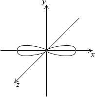
dumbbell-shaped px orbital representation with electron density located along x-axis;
x-axis must be labelled for px orbital.
Do not accept if py and pz are also drawn as question asks for orbital not sub-level.
16;
\({\text{1}}{{\text{s}}^{\text{2}}}{\text{2}}{{\text{s}}^{\text{2}}}{\text{2}}{{\text{p}}^{\text{6}}}{\text{3}}{{\text{s}}^{\text{2}}}{\text{3}}{{\text{p}}^{\text{6}}}{\text{4}}{{\text{s}}^{\text{2}}}{\text{3}}{{\text{d}}^{{\text{10}}}}{\text{4}}{{\text{p}}^{\text{6}}}{\text{4}}{{\text{d}}^{\text{6}}}\);
Order of 4s and 3d levels can be interchanged.
Do not accept other notation such as subscripts.
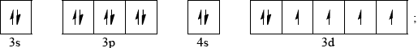
Allow full arrows instead of half-arrows in orbital diagram.
Sub-levels must be labelled for mark.
Examiners report
Many candidates identified the functional group but not the type of bond between Pt and N in carboplatin. A surprising number of candidates were unable to draw a px orbital or drew all p orbitals, or did not label the axis
Very few gave 16 as the answer.
Graphite has a layered structure of carbon atoms. A section of the structure is shown below.
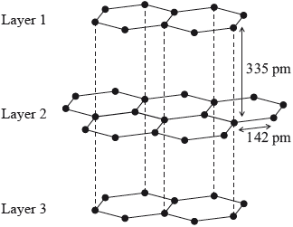
Identify the type of attraction represented by the dotted lines shown between the layers.
Graphite is used as a lubricant. Discuss two other uses of graphite with reference to its layered structure.
Markscheme
van der Waals’/vdW/London/dispersion (forces)/LDF / temporary/instantaneous/induced dipoles;
Two of the following pairs:
used as pencil (lead);
layers can flake off/slide off/break off/stick to paper / OWTTE;
M2 must contain concept of separation of layers, so do not award mark for phrases like "layers can slide over each other" on their own.
OR
used as carbon fibre / OWTTE;
bonding within layer is strong / layers are extensive / layers are strong;
OR
used as electrodes/conductor/in batteries;
has mobile/free/delocalized electrons (between layers) / electricity flows parallel to layers;
OR
used for thermal insulation;
vibrations are not easily passed between layers;
Accept other valid uses of graphite along with a suitable explanation.
Examiners report
Less than half the candidates recognized van der Waals’ forces between the layers in graphite. Some candidates identified the type of attraction as “electrostatic” and others as “intermolecular forces” which were too general and did not score the mark.
Well answered generally. Most candidates gave two uses (usually pencil lead and electrical conductor) and they were often able to explain the uses in terms of the structure.
A sample of magnesium contains three isotopes: magnesium-24, magnesium-25 and magnesium-26, with abundances of 77.44%, 10.00% and 12.56% respectively.
A graph of the successive ionization energies of magnesium is shown below.

The graph below shows pressure and volume data collected for a sample of carbon dioxide gas at 330 K.

(i) Calculate the relative atomic mass of this sample of magnesium correct to two decimal places.
(ii) Predict the relative atomic radii of the three magnesium isotopes, giving your reasons.
(i) Explain the increase in ionization energy values from the 3rd to the 8th electrons.
(ii) Explain the sharp increase in ionization energy values between the 10th and 11th electrons.
(i) Magnesium reacts with oxygen to form an ionic compound, magnesium oxide. Describe how the ions are formed, and the structure and bonding in magnesium oxide.
(ii) Carbon reacts with oxygen to form a covalent compound, carbon dioxide. Describe what is meant by a covalent bond.
(iii) State why magnesium and oxygen form an ionic compound while carbon and oxygen form a covalent compound.
(i) Predict the type of hybridization of the carbon and oxygen atoms in \({\text{C}}{{\text{O}}_{\text{2}}}\).
(ii) Sketch the orbitals of an oxygen atom in \({\text{C}}{{\text{O}}_{\text{2}}}\) on the energy level diagram provided, including the electrons that occupy each orbital.

(iii) Define the term electronegativity.
(iv) Explain why oxygen has a larger electronegativity than carbon.
(i) Draw a best-fit curve for the data on the graph.
(ii) Use the data point labelled X to determine the amount, in mol, of carbon dioxide gas in the sample.
(i) Most indicators are weak acids. Describe qualitatively how indicators work.
(ii) Identify a suitable indicator for a titration between a weak acid and a strong base, using Table 16 of the Data Booklet.
Markscheme
(i) \(\left( {\frac{{(77.44 \times 24) + (10.00 \times 25) + (12.56 \times 26)}}{{100}}} \right)\);
24.35;
Award [2] for correct final answer.
Two decimal places are required for M2.
Do not award any marks for 24.31 without showing method (as the value can be copied from the Data Booklet).
(ii) same atomic radii / 160 pm;
isotopes only differ by number of neutrons/size of nucleus / radius determined by electron shells and number of protons / OWTTE;
Accept neutrons do not affect distance of electrons / OWTTE.
(i) decreasing repulsion between electrons / radius decreases as electrons are removed;
Accept increasing positive charge on ion attracts electrons more strongly.
(ii) 10th electron is in second energy level/shell while 11th electron is in first energy level/shell / 10th is removing electron from electronic arrangement 2,1 while 11th ionization energy is removing electron from electronic arrangement 2;
11th electron removed is much closer to the nucleus / 11th electron removed from a (much) lower energy level/shell;
Accept opposite statement for 10th electron.
(i) magnesium (atom) gives two electrons to oxygen (atom) / oxygen (atom) takes two electrons from magnesium (atom) / magnesium (atom) loses two electrons and oxygen (atom) gains two electrons;
3-dimensional/3-D arrangement of ions / lattice of ions;
(electrostatic) attraction between oppositely charged ions/\({\text{M}}{{\text{g}}^{2 + }}\) and \({{\text{O}}^{2 - }}\);
(ii) electrostatic attraction between a pair of electrons and (positively charged) nuclei;
Accept a/two pairs of shared electrons.
(iii) difference in electronegativity is larger between Mg and O/smaller between C and O;
Accept reference to a numerical value of difference in electronegativity such as above and below 1.80.
(i) C: sp hybridization;
O: \({\text{s}}{{\text{p}}^{\text{2}}}\) hybridization;
Award [1] if the answer is sp without specifying C or O atoms.
(ii) 
three \({\text{s}}{{\text{p}}^{\text{2}}}\) orbitals and one p-orbital at higher energy;
\({\text{s}}{{\text{p}}^{\text{2}}}\) orbitals contain: two, two and one electron and p-orbital contains one electron;
Do not allow ECF from (d)(i).
(iii) ability of atom/nucleus to attract bonding/shared pair of electrons / attraction of nucleus for bonding/shared pair of electrons / OWTTE;
(iv) (same number of shells but) increase in nuclear charge/atomic number/number of protons increases electronegativity / O has more protons than C;
Accept oxygen has a higher effective nuclear charge.
decrease in radius along the period increases electronegativity / O has smaller radius than C;
(i) smooth curve through the data;
Do not accept a curve that passes through all of the points or an answer that joins the points using lines.
(ii) \(p = 21 \times {10^5}/2.1 \times {10^6}{\text{ (Pa)}}/2.1 \times {10^3}{\text{ (kPa)}}\) and
\(V = 50 \times {10^{ - 6}}/5.0 \times {10^{ - 5}}{\text{ }}({{\text{m}}^3})/5.0 \times {10^{ - 2}}{\text{ }}({\text{d}}{{\text{m}}^3})\);
\(\left( {n = \frac{{pV}}{{RT}}} \right)\frac{{2.1 \times {{10}^6} \times 5.0 \times {{10}^{ - 5}}}}{{8.31 \times 330}}\);
\(n = 0.038{\text{ (mol)}}\);
Award [3] for correct final answer.
For M3 apply ECF for correct computation of the equation the student has written, unless more than one mistake is made prior this point.
(i) equilibrium between HIn and \({\text{I}}{{\text{n}}^ - }/{\text{HIn}} \rightleftharpoons {\text{I}}{{\text{n}}^ - } + {{\text{H}}^ + }\);
the colours of HIn and \({\text{I}}{{\text{n}}^ - }\) are different;
if added to acid, the equilibrium shifts to the left and the colour of HIn is seen / OWTTE;
if added to base/alkali, the equilibrium shifts to the right and the colour of \({\text{I}}{{\text{n}}^ - }\) is seen / OWTTE;
(ii) phenolphthalein;
Accept phenol red.
Examiners report
(i) Most candidates were able to calculate the relative atomic mass to the correct number of decimal places.
(ii) Only strong candidates were able to predict the same radius for the isotopes and gave correct reasoning. However, the majority of candidates predicted that a larger number of neutrons resulted is a smaller radius, reflecting a poor understanding of atomic structure.
(i) Very few candidates were able to explain the increase in successive ionization energies for electrons removed from the same sub-shell. Many candidates gave incorrect reasoning.
(ii) The increase between the 10th and 11th ionization energies of magnesium was explained correctly by about half of the candidates. Few candidates scored the first mark by identifying the correct shells or sub-shells the electrons are removed from.
(i) Well answered by many candidates. A few candidates were confusing ionic with covalent bonding, and some referred to a linear MgO molecule in an ionic lattice.
(ii) Few candidates were able to describe the covalent bond precisely. Those who didn’t score usually didn’t make any reference to pairs of electrons.
(iii) Many candidates obtained this mark with satisfactory arguments. It was disappointing to see the abundance of answers based on “is a metal with a non-metal” or “both are non-metals”.
(i) A few candidates identified sp hybridization based on a linear structure. Only the strongest candidates were able to give the correct hybridization for oxygen as well.
(ii) This was the most challenging question on the paper. It was rare to see a correct answer. It seems candidates did not have a good understanding of hybridization.
(iii) Less than half the candidates were able to define electronegativity precisely. Many candidates did not relate it to the pair of electrons in a covalent bond, and simply talked about attracting electrons, which was not sufficient for the mark.
(iv) Many candidates gained the first mark by stating that oxygen has more protons than carbon. But very few candidates identified the second factor, which is the smaller radius of oxygen.
(i) More than half of the candidates drew a smooth curve that was central to the data points. Errors included straight lines, curves joining all data points, or a curve that was not central to the points.
(ii) A very well answered question. Some candidates converted the units of p and V incorrectly and others did not read the scales of the graph correctly.
(i) Many candidates could explain the behaviour of indicators, but there were also some poor answers that did not acknowledge the importance of equilibrium in the action of an indicator.
(ii) Most candidates suggested a suitable indicator.
Some reactions of but-2-ene are given below.
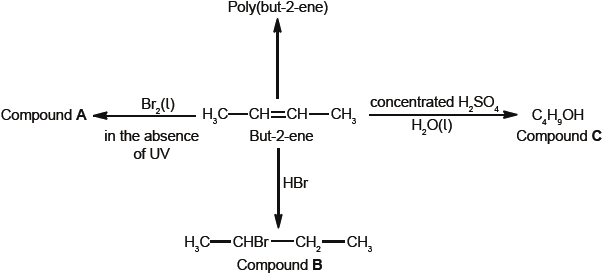
But-2-ene can exist as two geometrical isomers. Cis-trans is a form of stereoisomerism.
Deduce the full structural formula of compound A.
Apply IUPAC rules to name compound A.
Describe the colour change observed when excess but-2-ene reacts with bromine to form compound A.
(i) Outline two reasons why the polymerization of alkenes is of economic importance.
(ii) Identify the structure of the repeating unit of poly(but-2-ene).
Compound C, \({{\text{C}}_{\text{4}}}{{\text{H}}_{\text{9}}}{\text{OH}}\), can also be formed by reacting compound B, \({\text{C}}{{\text{H}}_{\text{3}}}{\text{CHBrC}}{{\text{H}}_{\text{2}}}{\text{C}}{{\text{H}}_{\text{3}}}\), with aqueous potassium hydroxide. This reaction proceeds by both \({{\text{S}}_{\text{N}}}{\text{1}}\) and \({{\text{S}}_{\text{N}}}{\text{2}}\) mechanisms. Explain the \({{\text{S}}_{\text{N}}}{\text{2}}\) mechanism, using curly arrows to represent the movement of electron pairs.
Explain why the hydroxide ion is a better nucleophile than water.
Compound C, \({{\text{C}}_{\text{4}}}{{\text{H}}_{\text{9}}}{\text{OH}}\), can be oxidized by acidified potassium dichromate(VI) to form compound F.
(i) State the name of the functional group present in compound F.
(ii) Deduce the structural formula of an alcohol which is a structural isomer of compound C and cannot be oxidized by acidified potassium dichromate(VI).
Explain why but-2-ene is more volatile than compound C.
Deduce the equation for the complete combustion of compound C.
Define the term stereoisomers.
State the conditions needed for a compound to show cis-trans.
Draw the structures of the two geometrical isomers of but-2-ene, clearly identifying each as cis or trans.
Markscheme
 ;
;
Accept bromine atoms cis to each other.
2,3-dibromobutane;
Do not penalize the incorrect use of spaces, comma or hyphen.
red/brown/orange/yellow to colourless/decolourized;
Do not accept clear.
Do not accept just “decolorized”.
(i) (synthesis of) plastics/polymers/organic materials not naturally available / synthetic materials;
wide range of uses/physical properties / versatile;
large industry / many tons of plastics consumed by society / OWTTE;
Do not accept “useful” for M2.
Award [1 max] if specific addition polymer and its use is given.
Penalize reference to condensation polymers once only.
(ii)  ;
;
Ignore n.
Brackets are not required for the mark, but continuation bonds are.
Do not penalize if methyl groups are trans to each other.

curly arrow going from lone pair/negative charge on O in \({\text{H}}{{\text{O}}^ - }\) to C;
Do not accept curly arrow originating on H in \(H{O^ - }\).
curly arrow showing Br leaving;
Accept curly arrow either going from bond between C and Br to Br in 2-bromobutane or in the transition state.
Accept if arrow goes from C–Br bond to/or beyond Br.
representation of transition state showing negative charge, square brackets and partial bonds;
Do not penalize if HO and Br are not at 180° to each other.
Do not award M3 if OH----C bond is represented.
formation of organic product \({\text{C}}{{\text{H}}_{\text{3}}}{\text{CHOHC}}{{\text{H}}_{\text{2}}}{\text{C}}{{\text{H}}_{\text{3}}}\) and \({\text{KBr/B}}{{\text{r}}^ - }\);
\({\text{O}}{{\text{H}}^ - }\) has a negative charge/higher electron density;
stronger attraction to the carbon atom with the partial positive charge / OWTTE;
Do not accept just stronger attraction.
Reference to carbon atom needed for M2.
(i) carbonyl;
Accept ketone.
(ii) 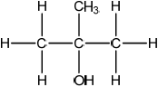 ;
Accept condensed or full structural formula.
hydrogen bonding in compound C;
dipole-dipole forces in C / C is more polar;
C has greater molar mass/more dispersion/London/instantaneous induced dipole-induced dipole forces/van der Waal forces;
Accept converse argument.
Award [1 max] for stronger intermolecular forces.
\({{\text{C}}_4}{{\text{H}}_9}{\text{OH(l)}} + {\text{6}}{{\text{O}}_2}{\text{(g)}} \to {\text{4C}}{{\text{O}}_2}{\text{(g)}} + {\text{5}}{{\text{H}}_{\text{2}}}{\text{O(l)}}\);
Ignore state symbols.
compounds with the same structural formula and different arrangement in space/3D structures;
Accept molecular formula instead of structural formula.
Do not accept “similar” instead of “same”.
restricted rotation around a (double) bond;
carbon atoms of the C=C/carbon-carbon double bond (in alkene)/carbon atoms of the C–C/carbon-carbon single bond (in cycloalkane) must have two different atoms/groups of atoms / OWTTE;
Do not accept “functional groups” for “groups of atoms” in M2.
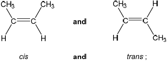
Award [1 max] if cis and trans isomers are correctly drawn and identified for alkene other than but-2-ene.
Award [1 max] if student draws and labels one structure correctly but not the other.
Examiners report
Most candidates were able to give the full structural formula but marks were lost by some as they gave the condensed formula rather than the full structural formula as demanded by the question. Most were able to apply IUPAC rules and name A but some omitted the “di” from dibromobutane. The colour change observed when but-2-ene reacts with bromine was well known, but knowledge of the economic importance of the polymerisation of alkenes was limited with many candidates restricting their answers to identifying specific plastics such a polythene. Many responses included incorrect references to nylon and margarine. Most candidates were able to identify the repeating unit of poly(but-2-ene). The explanation of the \({{\text{S}}_{\text{N}}}{\text{2}}\) mechanism was more successful than in previous sessions although a common error was a curly arrow originating from the hydrogen atom in the hydroxide ion rather than the oxygen. Most candidates were able to explain the higher reactivity of the hydroxide ion compared to the water molecule in terms of charge but only a minority referred to the attraction between the nucleophile and low electron density of the carbon atom. The naming of 2-methylbutanenitrile was generally well done although small errors were accepted and the reagents needed for the hydrogenation of 2-methylbutanenitrile were also generally known. A number of candidates omitted the branching methyl group in the amide formed with ethanoic acid and confused aldehydes with ketone and only a small minority referred to the carbonyl group. Most candidates identified only hydrogen bonds in compound C and did not refer to the dipole-dipole forces or van der Waals’ forces also present or explicitly compare the relative strength of the different intermolecular forces in the two molecules. Some incorrectly referred to covalent bonding in their explanation. The equation for the complete combustion of compound C was generally well known. The term stereoisomer was well understood but many candidates did not refer to the restricted rotation around a double bond. Most candidates were able draw the structures of cis and trans but-2-ene.
Most candidates were able to give the full structural formula but marks were lost by some as they gave the condensed formula rather than the full structural formula as demanded by the question. Most were able to apply IUPAC rules and name A but some omitted the “di” from dibromobutane. The colour change observed when but-2-ene reacts with bromine was well known, but knowledge of the economic importance of the polymerisation of alkenes was limited with many candidates restricting their answers to identifying specific plastics such a polythene. Many responses included incorrect references to nylon and margarine. Most candidates were able to identify the repeating unit of poly(but-2-ene). The explanation of the \({{\text{S}}_{\text{N}}}{\text{2}}\) mechanism was more successful than in previous sessions although a common error was a curly arrow originating from the hydrogen atom in the hydroxide ion rather than the oxygen. Most candidates were able to explain the higher reactivity of the hydroxide ion compared to the water molecule in terms of charge but only a minority referred to the attraction between the nucleophile and low electron density of the carbon atom. The naming of 2-methylbutanenitrile was generally well done although small errors were accepted and the reagents needed for the hydrogenation of 2-methylbutanenitrile were also generally known. A number of candidates omitted the branching methyl group in the amide formed with ethanoic acid and confused aldehydes with ketone and only a small minority referred to the carbonyl group. Most candidates identified only hydrogen bonds in compound C and did not refer to the dipole-dipole forces or van der Waals’ forces also present or explicitly compare the relative strength of the different intermolecular forces in the two molecules. Some incorrectly referred to covalent bonding in their explanation. The equation for the complete combustion of compound C was generally well known. The term stereoisomer was well understood but many candidates did not refer to the restricted rotation around a double bond. Most candidates were able draw the structures of cis and trans but-2-ene.
Most candidates were able to give the full structural formula but marks were lost by some as they gave the condensed formula rather than the full structural formula as demanded by the question. Most were able to apply IUPAC rules and name A but some omitted the “di” from dibromobutane. The colour change observed when but-2-ene reacts with bromine was well known, but knowledge of the economic importance of the polymerisation of alkenes was limited with many candidates restricting their answers to identifying specific plastics such a polythene. Many responses included incorrect references to nylon and margarine. Most candidates were able to identify the repeating unit of poly(but-2-ene). The explanation of the \({{\text{S}}_{\text{N}}}{\text{2}}\) mechanism was more successful than in previous sessions although a common error was a curly arrow originating from the hydrogen atom in the hydroxide ion rather than the oxygen. Most candidates were able to explain the higher reactivity of the hydroxide ion compared to the water molecule in terms of charge but only a minority referred to the attraction between the nucleophile and low electron density of the carbon atom. The naming of 2-methylbutanenitrile was generally well done although small errors were accepted and the reagents needed for the hydrogenation of 2-methylbutanenitrile were also generally known. A number of candidates omitted the branching methyl group in the amide formed with ethanoic acid and confused aldehydes with ketone and only a small minority referred to the carbonyl group. Most candidates identified only hydrogen bonds in compound C and did not refer to the dipole-dipole forces or van der Waals’ forces also present or explicitly compare the relative strength of the different intermolecular forces in the two molecules. Some incorrectly referred to covalent bonding in their explanation. The equation for the complete combustion of compound C was generally well known. The term stereoisomer was well understood but many candidates did not refer to the restricted rotation around a double bond. Most candidates were able draw the structures of cis and trans but-2-ene.
Most candidates were able to give the full structural formula but marks were lost by some as they gave the condensed formula rather than the full structural formula as demanded by the question. Most were able to apply IUPAC rules and name A but some omitted the “di” from dibromobutane. The colour change observed when but-2-ene reacts with bromine was well known, but knowledge of the economic importance of the polymerisation of alkenes was limited with many candidates restricting their answers to identifying specific plastics such a polythene. Many responses included incorrect references to nylon and margarine. Most candidates were able to identify the repeating unit of poly(but-2-ene). The explanation of the \({{\text{S}}_{\text{N}}}{\text{2}}\) mechanism was more successful than in previous sessions although a common error was a curly arrow originating from the hydrogen atom in the hydroxide ion rather than the oxygen. Most candidates were able to explain the higher reactivity of the hydroxide ion compared to the water molecule in terms of charge but only a minority referred to the attraction between the nucleophile and low electron density of the carbon atom. The naming of 2-methylbutanenitrile was generally well done although small errors were accepted and the reagents needed for the hydrogenation of 2-methylbutanenitrile were also generally known. A number of candidates omitted the branching methyl group in the amide formed with ethanoic acid and confused aldehydes with ketone and only a small minority referred to the carbonyl group. Most candidates identified only hydrogen bonds in compound C and did not refer to the dipole-dipole forces or van der Waals’ forces also present or explicitly compare the relative strength of the different intermolecular forces in the two molecules. Some incorrectly referred to covalent bonding in their explanation. The equation for the complete combustion of compound C was generally well known. The term stereoisomer was well understood but many candidates did not refer to the restricted rotation around a double bond. Most candidates were able draw the structures of cis and trans but-2-ene.
Most candidates were able to give the full structural formula but marks were lost by some as they gave the condensed formula rather than the full structural formula as demanded by the question. Most were able to apply IUPAC rules and name A but some omitted the “di” from dibromobutane. The colour change observed when but-2-ene reacts with bromine was well known, but knowledge of the economic importance of the polymerisation of alkenes was limited with many candidates restricting their answers to identifying specific plastics such a polythene. Many responses included incorrect references to nylon and margarine. Most candidates were able to identify the repeating unit of poly(but-2-ene). The explanation of the \({{\text{S}}_{\text{N}}}{\text{2}}\) mechanism was more successful than in previous sessions although a common error was a curly arrow originating from the hydrogen atom in the hydroxide ion rather than the oxygen. Most candidates were able to explain the higher reactivity of the hydroxide ion compared to the water molecule in terms of charge but only a minority referred to the attraction between the nucleophile and low electron density of the carbon atom. The naming of 2-methylbutanenitrile was generally well done although small errors were accepted and the reagents needed for the hydrogenation of 2-methylbutanenitrile were also generally known. A number of candidates omitted the branching methyl group in the amide formed with ethanoic acid and confused aldehydes with ketone and only a small minority referred to the carbonyl group. Most candidates identified only hydrogen bonds in compound C and did not refer to the dipole-dipole forces or van der Waals’ forces also present or explicitly compare the relative strength of the different intermolecular forces in the two molecules. Some incorrectly referred to covalent bonding in their explanation. The equation for the complete combustion of compound C was generally well known. The term stereoisomer was well understood but many candidates did not refer to the restricted rotation around a double bond. Most candidates were able draw the structures of cis and trans but-2-ene.
Most candidates were able to give the full structural formula but marks were lost by some as they gave the condensed formula rather than the full structural formula as demanded by the question. Most were able to apply IUPAC rules and name A but some omitted the “di” from dibromobutane. The colour change observed when but-2-ene reacts with bromine was well known, but knowledge of the economic importance of the polymerisation of alkenes was limited with many candidates restricting their answers to identifying specific plastics such a polythene. Many responses included incorrect references to nylon and margarine. Most candidates were able to identify the repeating unit of poly(but-2-ene). The explanation of the \({{\text{S}}_{\text{N}}}{\text{2}}\) mechanism was more successful than in previous sessions although a common error was a curly arrow originating from the hydrogen atom in the hydroxide ion rather than the oxygen. Most candidates were able to explain the higher reactivity of the hydroxide ion compared to the water molecule in terms of charge but only a minority referred to the attraction between the nucleophile and low electron density of the carbon atom. The naming of 2-methylbutanenitrile was generally well done although small errors were accepted and the reagents needed for the hydrogenation of 2-methylbutanenitrile were also generally known. A number of candidates omitted the branching methyl group in the amide formed with ethanoic acid and confused aldehydes with ketone and only a small minority referred to the carbonyl group. Most candidates identified only hydrogen bonds in compound C and did not refer to the dipole-dipole forces or van der Waals’ forces also present or explicitly compare the relative strength of the different intermolecular forces in the two molecules. Some incorrectly referred to covalent bonding in their explanation. The equation for the complete combustion of compound C was generally well known. The term stereoisomer was well understood but many candidates did not refer to the restricted rotation around a double bond. Most candidates were able draw the structures of cis and trans but-2-ene.
Most candidates were able to give the full structural formula but marks were lost by some as they gave the condensed formula rather than the full structural formula as demanded by the question. Most were able to apply IUPAC rules and name A but some omitted the “di” from dibromobutane. The colour change observed when but-2-ene reacts with bromine was well known, but knowledge of the economic importance of the polymerisation of alkenes was limited with many candidates restricting their answers to identifying specific plastics such a polythene. Many responses included incorrect references to nylon and margarine. Most candidates were able to identify the repeating unit of poly(but-2-ene). The explanation of the \({{\text{S}}_{\text{N}}}{\text{2}}\) mechanism was more successful than in previous sessions although a common error was a curly arrow originating from the hydrogen atom in the hydroxide ion rather than the oxygen. Most candidates were able to explain the higher reactivity of the hydroxide ion compared to the water molecule in terms of charge but only a minority referred to the attraction between the nucleophile and low electron density of the carbon atom. The naming of 2-methylbutanenitrile was generally well done although small errors were accepted and the reagents needed for the hydrogenation of 2-methylbutanenitrile were also generally known. A number of candidates omitted the branching methyl group in the amide formed with ethanoic acid and confused aldehydes with ketone and only a small minority referred to the carbonyl group. Most candidates identified only hydrogen bonds in compound C and did not refer to the dipole-dipole forces or van der Waals’ forces also present or explicitly compare the relative strength of the different intermolecular forces in the two molecules. Some incorrectly referred to covalent bonding in their explanation. The equation for the complete combustion of compound C was generally well known. The term stereoisomer was well understood but many candidates did not refer to the restricted rotation around a double bond. Most candidates were able draw the structures of cis and trans but-2-ene.
Most candidates were able to give the full structural formula but marks were lost by some as they gave the condensed formula rather than the full structural formula as demanded by the question. Most were able to apply IUPAC rules and name A but some omitted the “di” from dibromobutane. The colour change observed when but-2-ene reacts with bromine was well known, but knowledge of the economic importance of the polymerisation of alkenes was limited with many candidates restricting their answers to identifying specific plastics such a polythene. Many responses included incorrect references to nylon and margarine. Most candidates were able to identify the repeating unit of poly(but-2-ene). The explanation of the \({{\text{S}}_{\text{N}}}{\text{2}}\) mechanism was more successful than in previous sessions although a common error was a curly arrow originating from the hydrogen atom in the hydroxide ion rather than the oxygen. Most candidates were able to explain the higher reactivity of the hydroxide ion compared to the water molecule in terms of charge but only a minority referred to the attraction between the nucleophile and low electron density of the carbon atom. The naming of 2-methylbutanenitrile was generally well done although small errors were accepted and the reagents needed for the hydrogenation of 2-methylbutanenitrile were also generally known. A number of candidates omitted the branching methyl group in the amide formed with ethanoic acid and confused aldehydes with ketone and only a small minority referred to the carbonyl group. Most candidates identified only hydrogen bonds in compound C and did not refer to the dipole-dipole forces or van der Waals’ forces also present or explicitly compare the relative strength of the different intermolecular forces in the two molecules. Some incorrectly referred to covalent bonding in their explanation. The equation for the complete combustion of compound C was generally well known. The term stereoisomer was well understood but many candidates did not refer to the restricted rotation around a double bond. Most candidates were able draw the structures of cis and trans but-2-ene.
Most candidates were able to give the full structural formula but marks were lost by some as they gave the condensed formula rather than the full structural formula as demanded by the question. Most were able to apply IUPAC rules and name A but some omitted the “di” from dibromobutane. The colour change observed when but-2-ene reacts with bromine was well known, but knowledge of the economic importance of the polymerisation of alkenes was limited with many candidates restricting their answers to identifying specific plastics such a polythene. Many responses included incorrect references to nylon and margarine. Most candidates were able to identify the repeating unit of poly(but-2-ene). The explanation of the \({{\text{S}}_{\text{N}}}{\text{2}}\) mechanism was more successful than in previous sessions although a common error was a curly arrow originating from the hydrogen atom in the hydroxide ion rather than the oxygen. Most candidates were able to explain the higher reactivity of the hydroxide ion compared to the water molecule in terms of charge but only a minority referred to the attraction between the nucleophile and low electron density of the carbon atom. The naming of 2-methylbutanenitrile was generally well done although small errors were accepted and the reagents needed for the hydrogenation of 2-methylbutanenitrile were also generally known. A number of candidates omitted the branching methyl group in the amide formed with ethanoic acid and confused aldehydes with ketone and only a small minority referred to the carbonyl group. Most candidates identified only hydrogen bonds in compound C and did not refer to the dipole-dipole forces or van der Waals’ forces also present or explicitly compare the relative strength of the different intermolecular forces in the two molecules. Some incorrectly referred to covalent bonding in their explanation. The equation for the complete combustion of compound C was generally well known. The term stereoisomer was well understood but many candidates did not refer to the restricted rotation around a double bond. Most candidates were able draw the structures of cis and trans but-2-ene.
Most candidates were able to give the full structural formula but marks were lost by some as they gave the condensed formula rather than the full structural formula as demanded by the question. Most were able to apply IUPAC rules and name A but some omitted the “di” from dibromobutane. The colour change observed when but-2-ene reacts with bromine was well known, but knowledge of the economic importance of the polymerisation of alkenes was limited with many candidates restricting their answers to identifying specific plastics such a polythene. Many responses included incorrect references to nylon and margarine. Most candidates were able to identify the repeating unit of poly(but-2-ene). The explanation of the \({{\text{S}}_{\text{N}}}{\text{2}}\) mechanism was more successful than in previous sessions although a common error was a curly arrow originating from the hydrogen atom in the hydroxide ion rather than the oxygen. Most candidates were able to explain the higher reactivity of the hydroxide ion compared to the water molecule in terms of charge but only a minority referred to the attraction between the nucleophile and low electron density of the carbon atom. The naming of 2-methylbutanenitrile was generally well done although small errors were accepted and the reagents needed for the hydrogenation of 2-methylbutanenitrile were also generally known. A number of candidates omitted the branching methyl group in the amide formed with ethanoic acid and confused aldehydes with ketone and only a small minority referred to the carbonyl group. Most candidates identified only hydrogen bonds in compound C and did not refer to the dipole-dipole forces or van der Waals’ forces also present or explicitly compare the relative strength of the different intermolecular forces in the two molecules. Some incorrectly referred to covalent bonding in their explanation. The equation for the complete combustion of compound C was generally well known. The term stereoisomer was well understood but many candidates did not refer to the restricted rotation around a double bond. Most candidates were able draw the structures of cis and trans but-2-ene.
Most candidates were able to give the full structural formula but marks were lost by some as they gave the condensed formula rather than the full structural formula as demanded by the question. Most were able to apply IUPAC rules and name A but some omitted the “di” from dibromobutane. The colour change observed when but-2-ene reacts with bromine was well known, but knowledge of the economic importance of the polymerisation of alkenes was limited with many candidates restricting their answers to identifying specific plastics such a polythene. Many responses included incorrect references to nylon and margarine. Most candidates were able to identify the repeating unit of poly(but-2-ene). The explanation of the \({{\text{S}}_{\text{N}}}{\text{2}}\) mechanism was more successful than in previous sessions although a common error was a curly arrow originating from the hydrogen atom in the hydroxide ion rather than the oxygen. Most candidates were able to explain the higher reactivity of the hydroxide ion compared to the water molecule in terms of charge but only a minority referred to the attraction between the nucleophile and low electron density of the carbon atom. The naming of 2-methylbutanenitrile was generally well done although small errors were accepted and the reagents needed for the hydrogenation of 2-methylbutanenitrile were also generally known. A number of candidates omitted the branching methyl group in the amide formed with ethanoic acid and confused aldehydes with ketone and only a small minority referred to the carbonyl group. Most candidates identified only hydrogen bonds in compound C and did not refer to the dipole-dipole forces or van der Waals’ forces also present or explicitly compare the relative strength of the different intermolecular forces in the two molecules. Some incorrectly referred to covalent bonding in their explanation. The equation for the complete combustion of compound C was generally well known. The term stereoisomer was well understood but many candidates did not refer to the restricted rotation around a double bond. Most candidates were able draw the structures of cis and trans but-2-ene.
Most candidates were able to give the full structural formula but marks were lost by some as they gave the condensed formula rather than the full structural formula as demanded by the question. Most were able to apply IUPAC rules and name A but some omitted the “di” from dibromobutane. The colour change observed when but-2-ene reacts with bromine was well known, but knowledge of the economic importance of the polymerisation of alkenes was limited with many candidates restricting their answers to identifying specific plastics such a polythene. Many responses included incorrect references to nylon and margarine. Most candidates were able to identify the repeating unit of poly(but-2-ene). The explanation of the \({{\text{S}}_{\text{N}}}{\text{2}}\) mechanism was more successful than in previous sessions although a common error was a curly arrow originating from the hydrogen atom in the hydroxide ion rather than the oxygen. Most candidates were able to explain the higher reactivity of the hydroxide ion compared to the water molecule in terms of charge but only a minority referred to the attraction between the nucleophile and low electron density of the carbon atom. The naming of 2-methylbutanenitrile was generally well done although small errors were accepted and the reagents needed for the hydrogenation of 2-methylbutanenitrile were also generally known. A number of candidates omitted the branching methyl group in the amide formed with ethanoic acid and confused aldehydes with ketone and only a small minority referred to the carbonyl group. Most candidates identified only hydrogen bonds in compound C and did not refer to the dipole-dipole forces or van der Waals’ forces also present or explicitly compare the relative strength of the different intermolecular forces in the two molecules. Some incorrectly referred to covalent bonding in their explanation. The equation for the complete combustion of compound C was generally well known. The term stereoisomer was well understood but many candidates did not refer to the restricted rotation around a double bond. Most candidates were able draw the structures of cis and trans but-2-ene.
Phosphoryl chloride, \({\text{POC}}{{\text{l}}_{\text{3}}}\), is a dehydrating agent.
\({\text{POC}}{{\text{l}}_{\text{3}}}\left( {\text{g}} \right)\) decomposes according to the following equation.
\[{\text{2POC}}{{\text{l}}_3}{\text{(g)}} \to {\text{2PC}}{{\text{l}}_3}{\text{(g)}} + {{\text{O}}_2}{\text{(g)}}\]
POCl3 can be prepared by the reaction of phosphorus pentachloride, PCl5 , with tetraphosphorus decaoxide, P4O10.
PCl3 and Cl– can act as ligands in transition metal complexes such as Ni(PCl3)4 and [Cr(H2O)3Cl3].
Predict and explain the sign of the entropy change, \(\Delta S\), for this reaction.
Calculate the standard entropy change for the reaction, \(\Delta {S^\Theta }\), in \({\text{J}}\,{{\text{K}}^{ - 1}}{\text{mo}}{{\text{l}}^{ - 1}}\), using the data below.

Define the term standard enthalpy change of formation, \(\Delta H_{\text{f}}^\Theta \).
Calculate the standard enthalpy change for the reaction, \(\Delta {H^\Theta }\), in \({\text{kJ}}\,{\text{mo}}{{\text{l}}^{ - 1}}\), using the data below.

Determine the standard free energy change for the reaction, \(\Delta {G^\Theta }\), in \({\text{kJ}}\,{\text{mo}}{{\text{l}}^{ - 1}}\), at 298 K.
Deduce the temperature, in K, at which the reaction becomes spontaneous.
Deduce the Lewis (electron dot) structure of POCl3 (with P as the central element) and PCl3 and predict the shape of each molecule, using the valence shell electron pair repulsion theory (VSEPR).
State and explain the Cl–P–Cl bond angle in PCl3.
Deduce the Lewis (electron dot) structure of PCl5.
Predict the shape of this molecule, using the valence shell electron pair repulsion theory (VSEPR).
Identify all the different bond angles in PCl5.
PCl3Br2 has the same molecular shape as PCl5. Draw the three isomers of PCl3Br2 and deduce whether each isomer is polar or non-polar.
Define the term ligand.
Explain why the complex [Cr(H2O)3Cl3] is coloured.
Markscheme
2 mol (g) going to 3 mol (g)/increase in number of particles, therefore entropy increases/\(\Delta S\) positive / OWTTE;
Accept if numbers of moles of gas are given below the equation.
\(\left( {\Delta {S^\Theta } = [(2)(311.7) + (205.0)] - (2)(325.0) = } \right)( + )178.4{\text{ }}({\text{J}}\,{{\text{K}}^{ - 1}}{\text{mo}}{{\text{l}}^{ - 1}})\);
heat/enthalpy change/required/absorbed when 1 mol of a compound is formed from its elements in their standard states/at 100 kPa/105 Pa/1 bar;
Allow 1.01 \( \times \) 105 Pa/101 kPa/1 atm.
Allow under standard conditions or standard temperature and pressure.
Temperatures not required in definition, allow if quoted (for example, 298 K/ 25 °C – most common) but pressure value must be correct if stated.
\(\left( {\Delta {H^\Theta } = [(2)( - 288.1)] - [(2)( - 542.2)]) = } \right)( + )508.2{\text{ }}({\text{kJ}}\,{\text{mo}}{{\text{l}}^{ - 1}})\);
\(\left( {\Delta {G^\Theta } = \Delta {H^\Theta } - T\Delta {S^\Theta } = (508.2) - (298)\left( {\frac{{178.4}}{{1000}}} \right) = } \right){\text{ ( + )}}455.0{\text{ }}({\text{kJ}}\,{\text{mo}}{{\text{l}}^{ - 1}})\);
\(T > \left( {\frac{{\Delta {H^\Theta }}}{{\Delta {S^\Theta }}} = \frac{{508.2}}{{\left( {\frac{{178.4}}{{1000}}} \right)}} = } \right){\text{ }}2849{\text{ (K)}}/2576\) (°C);
Allow temperatures in the range 2848–2855 K.
Accept T = 2849(K) .
No ECF for temperatures T in the range 0–100 K.

allow any bond angle in the range 100° to less than 109° (experimental value is100°);
due to four negative charge centres/four electron pairs/four electron domains (one of which is a lone pair)/tetrahedral arrangement of electron pairs/domains;
extra repulsion due to lone pair electrons / lone pairs occupy more space (than bonding pairs) so Cl–P–Cl bond angle decreases from 109.5° / OWTTE;
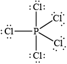 ;
Allow any combination of dots/crosses or lines to represent electron pairs.
Do not penalise missing lone pairs on Cl if already penalised in (b)(i).
trigonal/triangular bipyramidal;
Do not allow ECF from Lewis structures with incorrect number of negative charge centres.
120° and 90°/180°;
Ignore other bond angles such as 240° and 360°.
Apply list principle if some correct and incorrect angles given.

Award [1] for correct structure and molecular polarity.
Award [1 max] for correct representations of all three isomers.
Lone pairs not required.
species with lone/non-bonding pair (of electrons);
which bonds to metal ion (in complex) / which forms dative (covalent)/coordinate bond to metal ion (in complex);
unpaired electrons in d orbitals / d sub-level partially occupied;
d orbitals split (into two sets of different energies);
frequencies of (visible) light absorbed by electrons moving from lower to higher d levels;
colour due to remaining frequencies / complementary colour transmitted;
Allow wavelength as well as frequency.
Do not accept colour emitted.
Examiners report
Most candidates were able to calculate the entropy, enthalpy and free energy changes but made mistakes with the correct definition of enthalpy of formation’. Many referred to the gaseous state which suggests some confusion with bond enthalpies. Many were comfortable with writing Lewis structures and shapes of molecules, or some give incomplete explanations, not referring to the number of electron domains for example. Not many students could write a balanced equation for the reaction between PCl3 and H2O (A.S. 13.1.2 of the guide). In part (d) even though many knew that a ligand has a lone pair of electrons, they missed the second mark for ‘bonding to metal ion’.
Most candidates were able to calculate the entropy, enthalpy and free energy changes but made mistakes with the correct definition of enthalpy of formation’. Many referred to the gaseous state which suggests some confusion with bond enthalpies. Many were comfortable with writing Lewis structures and shapes of molecules, or some give incomplete explanations, not referring to the number of electron domains for example. Not many students could write a balanced equation for the reaction between PCl3 and H2O (A.S. 13.1.2 of the guide). In part (d) even though many knew that a ligand has a lone pair of electrons, they missed the second mark for ‘bonding to metal ion’.
Most candidates were able to calculate the entropy, enthalpy and free energy changes but made mistakes with the correct definition of enthalpy of formation’. Many referred to the gaseous state which suggests some confusion with bond enthalpies. Many were comfortable with writing Lewis structures and shapes of molecules, or some give incomplete explanations, not referring to the number of electron domains for example. Not many students could write a balanced equation for the reaction between PCl3 and H2O (A.S. 13.1.2 of the guide). In part (d) even though many knew that a ligand has a lone pair of electrons, they missed the second mark for ‘bonding to metal ion’.
Most candidates were able to calculate the entropy, enthalpy and free energy changes but made mistakes with the correct definition of enthalpy of formation’. Many referred to the gaseous state which suggests some confusion with bond enthalpies. Many were comfortable with writing Lewis structures and shapes of molecules, or some give incomplete explanations, not referring to the number of electron domains for example. Not many students could write a balanced equation for the reaction between PCl3 and H2O (A.S. 13.1.2 of the guide). In part (d) even though many knew that a ligand has a lone pair of electrons, they missed the second mark for ‘bonding to metal ion’.
Most candidates were able to calculate the entropy, enthalpy and free energy changes but made mistakes with the correct definition of enthalpy of formation’. Many referred to the gaseous state which suggests some confusion with bond enthalpies. Many were comfortable with writing Lewis structures and shapes of molecules, or some give incomplete explanations, not referring to the number of electron domains for example. Not many students could write a balanced equation for the reaction between PCl3 and H2O (A.S. 13.1.2 of the guide). In part (d) even though many knew that a ligand has a lone pair of electrons, they missed the second mark for ‘bonding to metal ion’.
Most candidates were able to calculate the entropy, enthalpy and free energy changes but made mistakes with the correct definition of enthalpy of formation’. Many referred to the gaseous state which suggests some confusion with bond enthalpies. Many were comfortable with writing Lewis structures and shapes of molecules, or some give incomplete explanations, not referring to the number of electron domains for example. Not many students could write a balanced equation for the reaction between PCl3 and H2O (A.S. 13.1.2 of the guide). In part (d) even though many knew that a ligand has a lone pair of electrons, they missed the second mark for ‘bonding to metal ion’.
Most candidates were able to calculate the entropy, enthalpy and free energy changes but made mistakes with the correct definition of enthalpy of formation’. Many referred to the gaseous state which suggests some confusion with bond enthalpies. Many were comfortable with writing Lewis structures and shapes of molecules, or some give incomplete explanations, not referring to the number of electron domains for example. Not many students could write a balanced equation for the reaction between PCl3 and H2O (A.S. 13.1.2 of the guide). In part (d) even though many knew that a ligand has a lone pair of electrons, they missed the second mark for ‘bonding to metal ion’.
Most candidates were able to calculate the entropy, enthalpy and free energy changes but made mistakes with the correct definition of enthalpy of formation’. Many referred to the gaseous state which suggests some confusion with bond enthalpies. Many were comfortable with writing Lewis structures and shapes of molecules, or some give incomplete explanations, not referring to the number of electron domains for example. Not many students could write a balanced equation for the reaction between PCl3 and H2O (A.S. 13.1.2 of the guide). In part (d) even though many knew that a ligand has a lone pair of electrons, they missed the second mark for ‘bonding to metal ion’.
Most candidates were able to calculate the entropy, enthalpy and free energy changes but made mistakes with the correct definition of enthalpy of formation’. Many referred to the gaseous state which suggests some confusion with bond enthalpies. Many were comfortable with writing Lewis structures and shapes of molecules, or some give incomplete explanations, not referring to the number of electron domains for example. Not many students could write a balanced equation for the reaction between PCl3 and H2O (A.S. 13.1.2 of the guide). In part (d) even though many knew that a ligand has a lone pair of electrons, they missed the second mark for ‘bonding to metal ion’.
Most candidates were able to calculate the entropy, enthalpy and free energy changes but made mistakes with the correct definition of enthalpy of formation’. Many referred to the gaseous state which suggests some confusion with bond enthalpies. Many were comfortable with writing Lewis structures and shapes of molecules, or some give incomplete explanations, not referring to the number of electron domains for example. Not many students could write a balanced equation for the reaction between PCl3 and H2O (A.S. 13.1.2 of the guide). In part (d) even though many knew that a ligand has a lone pair of electrons, they missed the second mark for ‘bonding to metal ion’.
Most candidates were able to calculate the entropy, enthalpy and free energy changes but made mistakes with the correct definition of enthalpy of formation’. Many referred to the gaseous state which suggests some confusion with bond enthalpies. Many were comfortable with writing Lewis structures and shapes of molecules, or some give incomplete explanations, not referring to the number of electron domains for example. Not many students could write a balanced equation for the reaction between PCl3 and H2O (A.S. 13.1.2 of the guide). In part (d) even though many knew that a ligand has a lone pair of electrons, they missed the second mark for ‘bonding to metal ion’.
Most candidates were able to calculate the entropy, enthalpy and free energy changes but made mistakes with the correct definition of enthalpy of formation’. Many referred to the gaseous state which suggests some confusion with bond enthalpies. Many were comfortable with writing Lewis structures and shapes of molecules, or some give incomplete explanations, not referring to the number of electron domains for example. Not many students could write a balanced equation for the reaction between PCl3 and H2O (A.S. 13.1.2 of the guide). In part (d) even though many knew that a ligand has a lone pair of electrons, they missed the second mark for ‘bonding to metal ion’.
Most candidates were able to calculate the entropy, enthalpy and free energy changes but made mistakes with the correct definition of enthalpy of formation’. Many referred to the gaseous state which suggests some confusion with bond enthalpies. Many were comfortable with writing Lewis structures and shapes of molecules, or some give incomplete explanations, not referring to the number of electron domains for example. Not many students could write a balanced equation for the reaction between PCl3 and H2O (A.S. 13.1.2 of the guide). In part (d) even though many knew that a ligand has a lone pair of electrons, they missed the second mark for ‘bonding to metal ion’.
Most candidates were able to calculate the entropy, enthalpy and free energy changes but made mistakes with the correct definition of enthalpy of formation’. Many referred to the gaseous state which suggests some confusion with bond enthalpies. Many were comfortable with writing Lewis structures and shapes of molecules, or some give incomplete explanations, not referring to the number of electron domains for example. Not many students could write a balanced equation for the reaction between PCl3 and H2O (A.S. 13.1.2 of the guide). In part (d) even though many knew that a ligand has a lone pair of electrons, they missed the second mark for ‘bonding to metal ion’.
Consider the structure and bonding in \({\text{MgC}}{{\text{l}}_{\text{2}}}\) and \({\text{PC}}{{\text{l}}_{\text{3}}}\).
Consider the molecules \({\text{PB}}{{\text{r}}_{\text{3}}}\) and \({\text{S}}{{\text{F}}_{\text{4}}}\).
The structure of cis-but-2-ene-1,4-dioic acid is shown below.

State and explain the electrical conductivities of these two chloride compounds in their liquid state.
Suggest, giving your reasons, the approximate pH values of the solutions formed by adding each chloride compound separately to distilled water.
\({\text{MgC}}{{\text{l}}_{\text{2}}}\)
\({\text{PC}}{{\text{l}}_{\text{3}}}\)
Identify the acid-base character of the oxides of each of the elements from sodium to chlorine in period 3.
State the equations for the separate reactions of sodium oxide and phosphorus(V) oxide with water.
Deduce the Lewis (electron dot) structure of both molecules.
Predict the shapes of the two molecules, giving the Br–P–Br bond angle in \({\text{PB}}{{\text{r}}_{\text{3}}}\) and the F–S–F bond angles in \({\text{S}}{{\text{F}}_{\text{4}}}\).

Explain why both \({\text{PB}}{{\text{r}}_{\text{3}}}\) and \({\text{S}}{{\text{F}}_{\text{4}}}\) are polar.
Describe the covalent bond between carbon and hydrogen in the molecule above and how it is formed.
Deduce the hybridization of the oxygen atoms labelled \(\alpha \) and \(\beta \).
\(\alpha \):
\(\beta \):
Describe sigma \((\sigma )\) and pi \((\pi )\) bonds between atoms.
\(\sigma \) bond:
\(\pi \) bond:
Identify the number of sigma \((\sigma )\) and pi \((\pi )\) bonds present in a molecule of cis-but-2-ene-1,4-dioic acid.
Markscheme
\({\text{MgC}}{{\text{l}}_{\text{2}}}\) conducts electricity and \({\text{PC}}{{\text{l}}_{\text{3}}}\) does not;
\({\text{MgC}}{{\text{l}}_{\text{2}}}\) is ionic and \({\text{PC}}{{\text{l}}_{\text{3}}}\) is covalent/molecular;
ions/charged particles can move in \({\text{MgC}}{{\text{l}}_{\text{2}}}\) / no free charged particles in \({\text{PC}}{{\text{l}}_{\text{3}}}\);
Award [1 max] if all three points correct for one substance but not other.
\(MgC{l_{\text{2}}}\):
\(4 \leqslant {\text{pH}} \leqslant 6.9\);
high charge density/high charge and small size of \({\text{M}}{{\text{g}}^{2 + }}\) makes \({[{\text{Mg}}{({{\text{H}}_{\text{2}}}{\text{O}})_{\text{6}}}{\text{]}}^{2 + }}\) hydrolyse / polarizes water to produce \({{\text{H}}^ + }\);
\(PC{l_3}\):
\(0 \leqslant {\text{pH}} \leqslant 4\);
(reacts with water to) form \({\text{H}}{{\text{C}}_{\text{l}}}{\text{/}}{{\text{H}}_{\text{3}}}{\text{P}}{{\text{O}}_{\text{3}}}\);
Do not accept \(H3P{O_4}\).
Na, Mg (oxides): basic
Al (oxide): amphoteric
Do not accept amphiprotic.
Si to Cl (oxides): acidic
Award [2] for all three listed sets correct.
Award [1] for one or two listed sets correct.
Award [1] for stating oxides become more acidic towards right/Cl or more basic towards left/Na.
Do not penalize if reference is to Ar instead of Cl.
Do not penalize for incorrect formulas of oxides.
\({\text{N}}{{\text{a}}_2}{\text{O}}({\text{s}}) + {{\text{H}}_2}{\text{O}}({\text{l}}) \to {\text{2NaOH(aq)}}\);
\({{\text{P}}_4}{{\text{O}}_{10}}({\text{s}}) + {\text{6}}{{\text{H}}_2}{\text{O}}({\text{l}}) \to {\text{4}}{{\text{H}}_3}{\text{P}}{{\text{O}}_4}{\text{(aq)}}\);
Ignore state symbols.
Accept \({P_2}{O_5}(s) + 3{H_2}O(l) \to 2{H_3}P{O_4}(aq)\).
Do not award marks if incorrect formulas of the oxides are used.
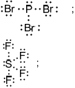
Penalize lone pairs missing on Br and F once only.
Accept any combination of lines, dots or crosses to represent electron pairs.

P–Br and S–F bonds are polar / bonds in both molecules are polar;
non-symmetrical distribution of electron cloud / polar bonds/dipoles do not cancel because of non-symmetrical shape;
M2 may also be scored with a suitable diagram showing the vectorial addition of the individual S–F dipole moments to show a net dipole moment centred along the axis between the \({F_{eq}}\)–S–\({F_{eq}}\) bond.
EITHER
(electrostatic) attraction between (positively charged) nuclei and a pair of electrons;
formed as a result of electron sharing (between the carbon and hydrogen nuclei);
OR
sigma bond formed by overlap of atomic orbitals;
s orbital from H and \({\text{p/s}}{{\text{p}}^{\text{2}}}\) from carbon;
\(\alpha \): \({\text{s}}{{\text{p}}^{\text{3}}}\) and \(\beta \): \({\text{s}}{{\text{p}}^{\text{2}}}\);
Accept if numbers are given as subscripts.
\(\sigma \) bond:
end-on / axial overlap of two orbitals;
\(\pi \) bond:
sideways overlap of two (parallel) p orbitals;
Accept suitable diagrams for both marks.
11 \(\sigma \) and 3 \(\pi \);
Examiners report
Most candidates knew about the relative conductivities of magnesium chloride and phosphorous trichloride and were able to relate it to bonding. The third mark was however more problematic as many continue to equate conductivity to mobile electrons rather than ions. The pH of solutions of aqueous chlorides was not generally well known with only a small number of candidates gaining full marks. An explanation of the acidity of magnesium in terms of the charge density of the \({\text{M}}{{\text{g}}^{2 + }}\) ion proved to be particularly challenging. One teacher commented that the reaction of \({\text{PC}}{{\text{l}}_{\text{3}}}\) and water is not mentioned in the guide but it is included in the teacher note to Assessment statement 13.1.1 of the current guide (although it is not in the new guide which will be assessed for the first time in May 2016). The acidity of the period 3 oxides was generally well known but many struggled to give balanced equations to describe the reactions of sodium and phosphorous(V) oxide with water, with many confusing the reaction of sodium oxide with that of sodium giving hydrogen as a product. Most candidates were able to give correct Lewis structure and shapes and bond angles but marks were lost, as in previous session due to missing lone pairs either on the central atoms or the Br and F atoms. It should be noted that it is difficult to award ECF marks in these questions so students need to avoid careless errors. Many struggled to give a complete explanation of the polarity of the two compounds as although the molecule was identified as being asymmetrical, few stated that the P–Br and S–F bonds are polar. Only a minority of students stated that a covalent bond was an attraction between nuclei and a pair of electrons and many were unable to identify the s-orbital from hydrogen and the \({\text{p/s}}{{\text{p}}^{\text{2}}}\) orbital from carbon as the overlapping orbitals in the covalent bond. The hybridisation of oxygen was generally well known as was sigma and pi bonding.
Most candidates knew about the relative conductivities of magnesium chloride and phosphorous trichloride and were able to relate it to bonding. The third mark was however more problematic as many continue to equate conductivity to mobile electrons rather than ions. The pH of solutions of aqueous chlorides was not generally well known with only a small number of candidates gaining full marks. An explanation of the acidity of magnesium in terms of the charge density of the \({\text{M}}{{\text{g}}^{2 + }}\) ion proved to be particularly challenging. One teacher commented that the reaction of \({\text{PC}}{{\text{l}}_{\text{3}}}\) and water is not mentioned in the guide but it is included in the teacher note to Assessment statement 13.1.1 of the current guide (although it is not in the new guide which will be assessed for the first time in May 2016). The acidity of the period 3 oxides was generally well known but many struggled to give balanced equations to describe the reactions of sodium and phosphorous(V) oxide with water, with many confusing the reaction of sodium oxide with that of sodium giving hydrogen as a product. Most candidates were able to give correct Lewis structure and shapes and bond angles but marks were lost, as in previous session due to missing lone pairs either on the central atoms or the Br and F atoms. It should be noted that it is difficult to award ECF marks in these questions so students need to avoid careless errors. Many struggled to give a complete explanation of the polarity of the two compounds as although the molecule was identified as being asymmetrical, few stated that the P–Br and S–F bonds are polar. Only a minority of students stated that a covalent bond was an attraction between nuclei and a pair of electrons and many were unable to identify the s-orbital from hydrogen and the \({\text{p/s}}{{\text{p}}^{\text{2}}}\) orbital from carbon as the overlapping orbitals in the covalent bond. The hybridisation of oxygen was generally well known as was sigma and pi bonding.
Most candidates knew about the relative conductivities of magnesium chloride and phosphorous trichloride and were able to relate it to bonding. The third mark was however more problematic as many continue to equate conductivity to mobile electrons rather than ions. The pH of solutions of aqueous chlorides was not generally well known with only a small number of candidates gaining full marks. An explanation of the acidity of magnesium in terms of the charge density of the \({\text{M}}{{\text{g}}^{2 + }}\) ion proved to be particularly challenging. One teacher commented that the reaction of \({\text{PC}}{{\text{l}}_{\text{3}}}\) and water is not mentioned in the guide but it is included in the teacher note to Assessment statement 13.1.1 of the current guide (although it is not in the new guide which will be assessed for the first time in May 2016). The acidity of the period 3 oxides was generally well known but many struggled to give balanced equations to describe the reactions of sodium and phosphorous(V) oxide with water, with many confusing the reaction of sodium oxide with that of sodium giving hydrogen as a product. Most candidates were able to give correct Lewis structure and shapes and bond angles but marks were lost, as in previous session due to missing lone pairs either on the central atoms or the Br and F atoms. It should be noted that it is difficult to award ECF marks in these questions so students need to avoid careless errors. Many struggled to give a complete explanation of the polarity of the two compounds as although the molecule was identified as being asymmetrical, few stated that the P–Br and S–F bonds are polar. Only a minority of students stated that a covalent bond was an attraction between nuclei and a pair of electrons and many were unable to identify the s-orbital from hydrogen and the \({\text{p/s}}{{\text{p}}^{\text{2}}}\) orbital from carbon as the overlapping orbitals in the covalent bond. The hybridisation of oxygen was generally well known as was sigma and pi bonding.
Most candidates knew about the relative conductivities of magnesium chloride and phosphorous trichloride and were able to relate it to bonding. The third mark was however more problematic as many continue to equate conductivity to mobile electrons rather than ions. The pH of solutions of aqueous chlorides was not generally well known with only a small number of candidates gaining full marks. An explanation of the acidity of magnesium in terms of the charge density of the \({\text{M}}{{\text{g}}^{2 + }}\) ion proved to be particularly challenging. One teacher commented that the reaction of \({\text{PC}}{{\text{l}}_{\text{3}}}\) and water is not mentioned in the guide but it is included in the teacher note to Assessment statement 13.1.1 of the current guide (although it is not in the new guide which will be assessed for the first time in May 2016). The acidity of the period 3 oxides was generally well known but many struggled to give balanced equations to describe the reactions of sodium and phosphorous(V) oxide with water, with many confusing the reaction of sodium oxide with that of sodium giving hydrogen as a product. Most candidates were able to give correct Lewis structure and shapes and bond angles but marks were lost, as in previous session due to missing lone pairs either on the central atoms or the Br and F atoms. It should be noted that it is difficult to award ECF marks in these questions so students need to avoid careless errors. Many struggled to give a complete explanation of the polarity of the two compounds as although the molecule was identified as being asymmetrical, few stated that the P–Br and S–F bonds are polar. Only a minority of students stated that a covalent bond was an attraction between nuclei and a pair of electrons and many were unable to identify the s-orbital from hydrogen and the \({\text{p/s}}{{\text{p}}^{\text{2}}}\) orbital from carbon as the overlapping orbitals in the covalent bond. The hybridisation of oxygen was generally well known as was sigma and pi bonding.
Most candidates knew about the relative conductivities of magnesium chloride and phosphorous trichloride and were able to relate it to bonding. The third mark was however more problematic as many continue to equate conductivity to mobile electrons rather than ions. The pH of solutions of aqueous chlorides was not generally well known with only a small number of candidates gaining full marks. An explanation of the acidity of magnesium in terms of the charge density of the \({\text{M}}{{\text{g}}^{2 + }}\) ion proved to be particularly challenging. One teacher commented that the reaction of \({\text{PC}}{{\text{l}}_{\text{3}}}\) and water is not mentioned in the guide but it is included in the teacher note to Assessment statement 13.1.1 of the current guide (although it is not in the new guide which will be assessed for the first time in May 2016). The acidity of the period 3 oxides was generally well known but many struggled to give balanced equations to describe the reactions of sodium and phosphorous(V) oxide with water, with many confusing the reaction of sodium oxide with that of sodium giving hydrogen as a product. Most candidates were able to give correct Lewis structure and shapes and bond angles but marks were lost, as in previous session due to missing lone pairs either on the central atoms or the Br and F atoms. It should be noted that it is difficult to award ECF marks in these questions so students need to avoid careless errors. Many struggled to give a complete explanation of the polarity of the two compounds as although the molecule was identified as being asymmetrical, few stated that the P–Br and S–F bonds are polar. Only a minority of students stated that a covalent bond was an attraction between nuclei and a pair of electrons and many were unable to identify the s-orbital from hydrogen and the \({\text{p/s}}{{\text{p}}^{\text{2}}}\) orbital from carbon as the overlapping orbitals in the covalent bond. The hybridisation of oxygen was generally well known as was sigma and pi bonding.
Most candidates knew about the relative conductivities of magnesium chloride and phosphorous trichloride and were able to relate it to bonding. The third mark was however more problematic as many continue to equate conductivity to mobile electrons rather than ions. The pH of solutions of aqueous chlorides was not generally well known with only a small number of candidates gaining full marks. An explanation of the acidity of magnesium in terms of the charge density of the \({\text{M}}{{\text{g}}^{2 + }}\) ion proved to be particularly challenging. One teacher commented that the reaction of \({\text{PC}}{{\text{l}}_{\text{3}}}\) and water is not mentioned in the guide but it is included in the teacher note to Assessment statement 13.1.1 of the current guide (although it is not in the new guide which will be assessed for the first time in May 2016). The acidity of the period 3 oxides was generally well known but many struggled to give balanced equations to describe the reactions of sodium and phosphorous(V) oxide with water, with many confusing the reaction of sodium oxide with that of sodium giving hydrogen as a product. Most candidates were able to give correct Lewis structure and shapes and bond angles but marks were lost, as in previous session due to missing lone pairs either on the central atoms or the Br and F atoms. It should be noted that it is difficult to award ECF marks in these questions so students need to avoid careless errors. Many struggled to give a complete explanation of the polarity of the two compounds as although the molecule was identified as being asymmetrical, few stated that the P–Br and S–F bonds are polar. Only a minority of students stated that a covalent bond was an attraction between nuclei and a pair of electrons and many were unable to identify the s-orbital from hydrogen and the \({\text{p/s}}{{\text{p}}^{\text{2}}}\) orbital from carbon as the overlapping orbitals in the covalent bond. The hybridisation of oxygen was generally well known as was sigma and pi bonding.
Most candidates knew about the relative conductivities of magnesium chloride and phosphorous trichloride and were able to relate it to bonding. The third mark was however more problematic as many continue to equate conductivity to mobile electrons rather than ions. The pH of solutions of aqueous chlorides was not generally well known with only a small number of candidates gaining full marks. An explanation of the acidity of magnesium in terms of the charge density of the \({\text{M}}{{\text{g}}^{2 + }}\) ion proved to be particularly challenging. One teacher commented that the reaction of \({\text{PC}}{{\text{l}}_{\text{3}}}\) and water is not mentioned in the guide but it is included in the teacher note to Assessment statement 13.1.1 of the current guide (although it is not in the new guide which will be assessed for the first time in May 2016). The acidity of the period 3 oxides was generally well known but many struggled to give balanced equations to describe the reactions of sodium and phosphorous(V) oxide with water, with many confusing the reaction of sodium oxide with that of sodium giving hydrogen as a product. Most candidates were able to give correct Lewis structure and shapes and bond angles but marks were lost, as in previous session due to missing lone pairs either on the central atoms or the Br and F atoms. It should be noted that it is difficult to award ECF marks in these questions so students need to avoid careless errors. Many struggled to give a complete explanation of the polarity of the two compounds as although the molecule was identified as being asymmetrical, few stated that the P–Br and S–F bonds are polar. Only a minority of students stated that a covalent bond was an attraction between nuclei and a pair of electrons and many were unable to identify the s-orbital from hydrogen and the \({\text{p/s}}{{\text{p}}^{\text{2}}}\) orbital from carbon as the overlapping orbitals in the covalent bond. The hybridisation of oxygen was generally well known as was sigma and pi bonding.
Most candidates knew about the relative conductivities of magnesium chloride and phosphorous trichloride and were able to relate it to bonding. The third mark was however more problematic as many continue to equate conductivity to mobile electrons rather than ions. The pH of solutions of aqueous chlorides was not generally well known with only a small number of candidates gaining full marks. An explanation of the acidity of magnesium in terms of the charge density of the \({\text{M}}{{\text{g}}^{2 + }}\) ion proved to be particularly challenging. One teacher commented that the reaction of \({\text{PC}}{{\text{l}}_{\text{3}}}\) and water is not mentioned in the guide but it is included in the teacher note to Assessment statement 13.1.1 of the current guide (although it is not in the new guide which will be assessed for the first time in May 2016). The acidity of the period 3 oxides was generally well known but many struggled to give balanced equations to describe the reactions of sodium and phosphorous(V) oxide with water, with many confusing the reaction of sodium oxide with that of sodium giving hydrogen as a product. Most candidates were able to give correct Lewis structure and shapes and bond angles but marks were lost, as in previous session due to missing lone pairs either on the central atoms or the Br and F atoms. It should be noted that it is difficult to award ECF marks in these questions so students need to avoid careless errors. Many struggled to give a complete explanation of the polarity of the two compounds as although the molecule was identified as being asymmetrical, few stated that the P–Br and S–F bonds are polar. Only a minority of students stated that a covalent bond was an attraction between nuclei and a pair of electrons and many were unable to identify the s-orbital from hydrogen and the \({\text{p/s}}{{\text{p}}^{\text{2}}}\) orbital from carbon as the overlapping orbitals in the covalent bond. The hybridisation of oxygen was generally well known as was sigma and pi bonding.
Most candidates knew about the relative conductivities of magnesium chloride and phosphorous trichloride and were able to relate it to bonding. The third mark was however more problematic as many continue to equate conductivity to mobile electrons rather than ions. The pH of solutions of aqueous chlorides was not generally well known with only a small number of candidates gaining full marks. An explanation of the acidity of magnesium in terms of the charge density of the \({\text{M}}{{\text{g}}^{2 + }}\) ion proved to be particularly challenging. One teacher commented that the reaction of \({\text{PC}}{{\text{l}}_{\text{3}}}\) and water is not mentioned in the guide but it is included in the teacher note to Assessment statement 13.1.1 of the current guide (although it is not in the new guide which will be assessed for the first time in May 2016). The acidity of the period 3 oxides was generally well known but many struggled to give balanced equations to describe the reactions of sodium and phosphorous(V) oxide with water, with many confusing the reaction of sodium oxide with that of sodium giving hydrogen as a product. Most candidates were able to give correct Lewis structure and shapes and bond angles but marks were lost, as in previous session due to missing lone pairs either on the central atoms or the Br and F atoms. It should be noted that it is difficult to award ECF marks in these questions so students need to avoid careless errors. Many struggled to give a complete explanation of the polarity of the two compounds as although the molecule was identified as being asymmetrical, few stated that the P–Br and S–F bonds are polar. Only a minority of students stated that a covalent bond was an attraction between nuclei and a pair of electrons and many were unable to identify the s-orbital from hydrogen and the \({\text{p/s}}{{\text{p}}^{\text{2}}}\) orbital from carbon as the overlapping orbitals in the covalent bond. The hybridisation of oxygen was generally well known as was sigma and pi bonding.
Most candidates knew about the relative conductivities of magnesium chloride and phosphorous trichloride and were able to relate it to bonding. The third mark was however more problematic as many continue to equate conductivity to mobile electrons rather than ions. The pH of solutions of aqueous chlorides was not generally well known with only a small number of candidates gaining full marks. An explanation of the acidity of magnesium in terms of the charge density of the \({\text{M}}{{\text{g}}^{2 + }}\) ion proved to be particularly challenging. One teacher commented that the reaction of \({\text{PC}}{{\text{l}}_{\text{3}}}\) and water is not mentioned in the guide but it is included in the teacher note to Assessment statement 13.1.1 of the current guide (although it is not in the new guide which will be assessed for the first time in May 2016). The acidity of the period 3 oxides was generally well known but many struggled to give balanced equations to describe the reactions of sodium and phosphorous(V) oxide with water, with many confusing the reaction of sodium oxide with that of sodium giving hydrogen as a product. Most candidates were able to give correct Lewis structure and shapes and bond angles but marks were lost, as in previous session due to missing lone pairs either on the central atoms or the Br and F atoms. It should be noted that it is difficult to award ECF marks in these questions so students need to avoid careless errors. Many struggled to give a complete explanation of the polarity of the two compounds as although the molecule was identified as being asymmetrical, few stated that the P–Br and S–F bonds are polar. Only a minority of students stated that a covalent bond was an attraction between nuclei and a pair of electrons and many were unable to identify the s-orbital from hydrogen and the \({\text{p/s}}{{\text{p}}^{\text{2}}}\) orbital from carbon as the overlapping orbitals in the covalent bond. The hybridisation of oxygen was generally well known as was sigma and pi bonding.
Most candidates knew about the relative conductivities of magnesium chloride and phosphorous trichloride and were able to relate it to bonding. The third mark was however more problematic as many continue to equate conductivity to mobile electrons rather than ions. The pH of solutions of aqueous chlorides was not generally well known with only a small number of candidates gaining full marks. An explanation of the acidity of magnesium in terms of the charge density of the \({\text{M}}{{\text{g}}^{2 + }}\) ion proved to be particularly challenging. One teacher commented that the reaction of \({\text{PC}}{{\text{l}}_{\text{3}}}\) and water is not mentioned in the guide but it is included in the teacher note to Assessment statement 13.1.1 of the current guide (although it is not in the new guide which will be assessed for the first time in May 2016). The acidity of the period 3 oxides was generally well known but many struggled to give balanced equations to describe the reactions of sodium and phosphorous(V) oxide with water, with many confusing the reaction of sodium oxide with that of sodium giving hydrogen as a product. Most candidates were able to give correct Lewis structure and shapes and bond angles but marks were lost, as in previous session due to missing lone pairs either on the central atoms or the Br and F atoms. It should be noted that it is difficult to award ECF marks in these questions so students need to avoid careless errors. Many struggled to give a complete explanation of the polarity of the two compounds as although the molecule was identified as being asymmetrical, few stated that the P–Br and S–F bonds are polar. Only a minority of students stated that a covalent bond was an attraction between nuclei and a pair of electrons and many were unable to identify the s-orbital from hydrogen and the \({\text{p/s}}{{\text{p}}^{\text{2}}}\) orbital from carbon as the overlapping orbitals in the covalent bond. The hybridisation of oxygen was generally well known as was sigma and pi bonding.
The oxides and chlorides of period 3 elements exhibit periodicity.
Chlorine gas, \({\text{C}}{{\text{l}}_{\text{2}}}{\text{(g)}}\), is bubbled through separate solutions of aqueous bromine, \({\text{B}}{{\text{r}}_{\text{2}}}{\text{(aq)}}\), and potassium bromide, \({\text{KBr(aq)}}\).
The hydrogen halides do not show perfect periodicity. A bar chart of boiling points shows that the boiling point of hydrogen fluoride, HF, is much higher than periodic trends would indicate.

Transition metals form complex ions which are usually coloured.
(i) State the changes in the acid-base nature of the oxides across period 3 (from \({\text{N}}{{\text{a}}_2}{\text{O}}\) to \({\text{C}}{{\text{l}}_{\text{2}}}{{\text{O}}_{\text{7}}}\)), including equations for the reactions of \({\text{N}}{{\text{a}}_2}{\text{O}}\) and \({\text{S}}{{\text{O}}_{\text{3}}}\) with water.
(ii) State whether or not molten aluminium chloride, \({\text{A}}{{\text{l}}_{\text{2}}}{\text{C}}{{\text{l}}_{\text{6}}}\), and molten aluminium oxide, \({\text{A}}{{\text{l}}_{\text{2}}}{{\text{O}}_{\text{3}}}\), conduct electricity. Explain this behaviour in terms of the structure and bonding of the two compounds.
(iii) State the equation for the reaction of \({\text{C}}{{\text{l}}_{\text{2}}}\) with water.
(i) Predict any changes that may be observed in each case.
\({\text{B}}{{\text{r}}_{\text{2}}}{\text{(aq)}}\):
\({\text{KBr(aq)}}\):
(ii) State the half-equations for the reactions that occur.
(i) Explain why the boiling point of HF is much higher than the boiling points of the other hydrogen halides.
(ii) Explain the trend in the boiling points of HCl, HBr and HI.
State the full electron configurations of Cr and \({\text{C}}{{\text{r}}^{3 + }}\).
Cr:
\({\text{C}}{{\text{r}}^{3 + }}\):
\({\text{C}}{{\text{r}}^{3 + }}\) ions and water molecules bond together to form the complex ion \({{\text{[Cr(}}{{\text{H}}_{\text{2}}}{\text{O}}{{\text{)}}_{\text{6}}}{\text{]}}^{3 + }}\).
Describe how the water acts and how it forms the bond, identifying the acid-base character of the reaction.
Explain why the \({{\text{[Cr(}}{{\text{H}}_{\text{2}}}{\text{O}}{{\text{)}}_{\text{6}}}{\text{]}}^{3 + }}\) ion is coloured.
Outline, including a relevant equation, whether the \({{\text{[Cr(}}{{\text{H}}_{\text{2}}}{\text{O}}{{\text{)}}_{\text{6}}}{\text{]}}^{3 + }}\) ion is acidic, basic or neutral.
Explain how the number of electrons in the outer main energy level of phosphorus, P, can be determined using the data of successive ionization energies.
Markscheme
(i) basic to acidic;
\({\text{N}}{{\text{a}}_{\text{2}}}{\text{O(s)}} + {{\text{H}}_{\text{2}}}{\text{O(l)}} \to {\text{2NaOH(aq)}}\);
\({\text{S}}{{\text{O}}_3}{\text{(g)}} + {{\text{H}}_2}{\text{O(l)}} \to {{\text{H}}_2}{\text{S}}{{\text{O}}_4}{\text{(aq)}}\);
Ignore state symbols.
(ii) molten \({\text{A}}{{\text{l}}_2}{\text{C}}{{\text{l}}_6}\) does not conduct electricity and molten \({\text{A}}{{\text{l}}_{\text{2}}}{{\text{O}}_{\text{3}}}\) does;
\({\text{A}}{{\text{l}}_2}{\text{C}}{{\text{l}}_6}\) is a covalent molecule and has no free charged particles to conduct electricity;
\({\text{A}}{{\text{l}}_2}{{\text{O}}_3}\) is ionic/has ions which are free to move when molten;
(iii) \({\text{C}}{{\text{l}}_2}{\text{(g)}} + {{\text{H}}_2}{\text{O(l)}} \rightleftharpoons {\text{HCl(aq)}} + {\text{HClO(aq)}}\);
Ignore state symbols.
Allow \( \to \).
(i) \({\text{B}}{{\text{r}}_2}{\text{(aq)}}\): no change;
\({\text{KBr(aq)}}\): colour change / from colourless to red/yellow/orange/brown;
(ii) \({\text{2B}}{{\text{r}}^ - }{\text{(aq)}} \to {\text{B}}{{\text{r}}_2}{\text{(aq)}} + {\text{2}}{{\text{e}}^ - }\);
\({\text{C}}{{\text{l}}_2}{\text{(g)}} + {\text{2}}{{\text{e}}^ - } \to {\text{2C}}{{\text{l}}^ - }{\text{(aq)}}\);
Ignore state symbols.
Accept e instead of e–.
(i) HF has hydrogen bonds (between molecules);
(ii) strength of van der Waals’/London/dispersion forces increases;
as mass/size/number of electrons of halogen atom/molecule increases;
Cr: \({\text{1}}{{\text{s}}^{\text{2}}}{\text{2}}{{\text{s}}^{\text{2}}}{\text{2}}{{\text{p}}^{\text{6}}}{\text{3}}{{\text{s}}^{\text{2}}}{\text{3}}{{\text{p}}^{\text{6}}}{\text{4}}{{\text{s}}^{\text{1}}}{\text{3}}{{\text{d}}^{\text{5}}}/{\text{1}}{{\text{s}}^{\text{2}}}{\text{2}}{{\text{s}}^{\text{2}}}{\text{2}}{{\text{p}}^{\text{6}}}{\text{3}}{{\text{s}}^{\text{2}}}{\text{3}}{{\text{p}}^{\text{6}}}{\text{3}}{{\text{d}}^{\text{5}}}{\text{4}}{{\text{s}}^{\text{1}}}\);
Cr3+: \({\text{1}}{{\text{s}}^{\text{2}}}{\text{2}}{{\text{s}}^{\text{2}}}{\text{2}}{{\text{p}}^{\text{6}}}{\text{3}}{{\text{s}}^{\text{2}}}{\text{3}}{{\text{p}}^{\text{6}}}{\text{3}}{{\text{d}}^{\text{3}}}\);
\({{\text{H}}_2}{\text{O}}\) is a ligand / has lone (electron) pair;
forms dative (covalent)/coordinate bond / donates a lone (electron) pair ;
ligand is Lewis base / \({\text{C}}{{\text{r}}^{3 + }}\) is Lewis acid;
\({\text{C}}{{\text{r}}^{3 + }}\) has partially filled d orbitals;
d orbitals split into two levels / three lower energy and two higher energy levels;
energy difference is in visible part of spectrum;
electrons absorb visible light / one colour/frequency/wavelength;
electron transitions occur from lower to higher energy level within d sub-level;
complementary colour/colour not absorbed is seen;
acidic because \({{\text{[Cr(}}{{\text{H}}_2}{\text{O}}{{\text{)}}_6}{\text{]}}^{3 + }}{\text{(aq)}} \to {{\text{[Cr(}}{{\text{H}}_2}{\text{O}}{{\text{)}}_5}{\text{(OH)]}}^{2 + }}{\text{(aq)}} + {{\text{H}}^ + }{\text{(aq)}}\);
Allow answers with further equations.
Accept any other valid equations.
Ignore state symbols.
successive ionization energy values increase with removal of each electron;
large increase in ionization energy when sixth electron is removed;
as electron is one energy level/shell closer to the nucleus;
Accept a suitably annotated diagram.
Examiners report
There appeared to be some significant gaps in knowledge within this question, the various parts either scored very well or not at all.
In a(ii) there was a poor understanding of the nature of bonding in aluminium chloride and aluminium oxide. Candidates are still confusing electrical conductivity in compounds with that in metals, and often refer to the inability to conduct being down to a lack of mobile electrons in compounds.
Balancing equations, both full, as in parts a(i) and a(iii), and half equations as in b(ii), showed poor knowledge both of the reactants and products and in the ability to balance them in both atoms and charge. It should be expected that higher level candidates would be comfortable with these processes. The ability to deduce and predict what they would see during a reaction is a skill required of all chemists, it was missing in the attempts to answer b(ii). Parts c and d(i), (ii) and (iii) showed good knowledge, but in part d(iv) the understanding of the acid nature of some d block complex ions was lacking. Part e was rarely given credit, as many appeared to misread the question, and discussed the changes in first ionisation energies across Period 3.
There appeared to be some significant gaps in knowledge within this question, the various parts either scored very well or not at all.
In a(ii) there was a poor understanding of the nature of bonding in aluminium chloride and aluminium oxide. Candidates are still confusing electrical conductivity in compounds with that in metals, and often refer to the inability to conduct being down to a lack of mobile electrons in compounds.
Balancing equation,s both full, as in parts a(i) and a(iii), and half equations as in b(ii), showed poor knowledge both of the reactants and products and in the ability to balance them in both atoms and charge. It should be expected that higher level candidates would be comfortable with these processes. The ability to deduce and predict what they would see during a reaction is a skill required of all chemists, it was missing in the attempts to answer b(ii). Parts c and d(i), ii) and iii) showed good knowledge, but in part d(iv) the understanding of the acid nature of some d block complex ions was lacking. Part e was rarely given credit, as many appeared to misread the question, and discussed the changes in first ionisation energies across Period 3.
There appeared to be some significant gaps in knowledge within this question, the various parts either scored very well or not at all.
In a(ii) there was a poor understanding of the nature of bonding in aluminium chloride and aluminium oxide. Candidates are still confusing electrical conductivity in compounds with that in metals, and often refer to the inability to conduct being down to a lack of mobile electrons in compounds.
Balancing equations, both full, as in parts a(i) and a(iii), and half equations as in b(ii), showed poor knowledge both of the reactants and products and in the ability to balance them in both atoms and charge. It should be expected that higher level candidates would be comfortable with these processes. The ability to deduce and predict what they would see during a reaction is a skill required of all chemists, it was missing in the attempts to answer b(ii). Parts c and d(i), ii) and iii) showed good knowledge, but in part d(iv) the understanding of the acid nature of some d block complex ions was lacking. Part e was rarely given credit, as many appeared to misread the question, and discussed the changes in first ionisation energies across Period 3.
There appeared to be some significant gaps in knowledge within this question, the various parts either scored very well or not at all.
In a(ii) there was a poor understanding of the nature of bonding in aluminium chloride and aluminium oxide. Candidates are still confusing electrical conductivity in compounds with that in metals, and often refer to the inability to conduct being down to a lack of mobile electrons in compounds.
Balancing equations, both full, as in parts a(i) and a(iii), and half equations as in b(ii), showed poor knowledge both of the reactants and products and in the ability to balance them in both atoms and charge. It should be expected that higher level candidates would be comfortable with these processes. The ability to deduce and predict what they would see during a reaction is a skill required of all chemists, it was missing in the attempts to answer b(ii). Parts c and d(i), ii) and iii) showed good knowledge, but in part d(iv) the understanding of the acid nature of some d block complex ions was lacking. Part e was rarely given credit, as many appeared to misread the question, and discussed the changes in first ionisation energies across Period 3.
There appeared to be some significant gaps in knowledge within this question, the various parts either scored very well or not at all.
In a(ii) there was a poor understanding of the nature of bonding in aluminium chloride and aluminium oxide. Candidates are still confusing electrical conductivity in compounds with that in metals, and often refer to the inability to conduct being down to a lack of mobile electrons in compounds.
Balancing equations, both full, as in parts a(i) and a(iii), and half equations as in b(ii), showed poor knowledge both of the reactants and products and in the ability to balance them in both atoms and charge. It should be expected that higher level candidates would be comfortable with these processes. The ability to deduce and predict what they would see during a reaction is a skill required of all chemists, it was missing in the attempts to answer b(ii). Parts c and d(i), ii) and iii) showed good knowledge, but in part d(iv) the understanding of the acid nature of some d block complex ions was lacking. Part e was rarely given credit, as many appeared to misread the question, and discussed the changes in first ionisation energies across Period 3.
There appeared to be some significant gaps in knowledge within this question, the various parts either scored very well or not at all.
In a(ii) there was a poor understanding of the nature of bonding in aluminium chloride and aluminium oxide. Candidates are still confusing electrical conductivity in compounds with that in metals, and often refer to the inability to conduct being down to a lack of mobile electrons in compounds.
Balancing equations, both full, as in parts a(i) and a(iii), and half equations as in b(ii), showed poor knowledge both of the reactants and products and in the ability to balance them in both atoms and charge. It should be expected that higher level candidates would be comfortable with these processes. The ability to deduce and predict what they would see during a reaction is a skill required of all chemists, it was missing in the attempts to answer b(ii). Parts c and d(i), ii) and iii) showed good knowledge, but in part d(iv) the understanding of the acid nature of some d block complex ions was lacking. Part e was rarely given credit, as many appeared to misread the question, and discussed the changes in first ionisation energies across Period 3.
There appeared to be some significant gaps in knowledge within this question, the various parts either scored very well or not at all.
In a(ii) there was a poor understanding of the nature of bonding in aluminium chloride and aluminium oxide. Candidates are still confusing electrical conductivity in compounds with that in metals, and often refer to the inability to conduct being down to a lack of mobile electrons in compounds.
Balancing equations, both full, as in parts a(i) and a(iii), and half equations as in b(ii), showed poor knowledge both of the reactants and products and in the ability to balance them in both atoms and charge. It should be expected that higher level candidates would be comfortable with these processes. The ability to deduce and predict what they would see during a reaction is a skill required of all chemists, it was missing in the attempts to answer b(ii). Parts c and d(i), ii) and iii) showed good knowledge, but in part d(iv) the understanding of the acid nature of some d block complex ions was lacking. Part e was rarely given credit, as many appeared to misread the question, and discussed the changes in first ionisation energies across Period 3.
There appeared to be some significant gaps in knowledge within this question, the various parts either scored very well or not at all.
In a(ii) there was a poor understanding of the nature of bonding in aluminium chloride and aluminium oxide. Candidates are still confusing electrical conductivity in compounds with that in metals, and often refer to the inability to conduct being down to a lack of mobile electrons in compounds.
Balancing equations, both full, as in parts a(i) and a(iii), and half equations as in b(ii) showed poor knowledge both of the reactants and products and in the ability to balance them in both atoms and charge. It should be expected that higher level candidates would be comfortable with these processes. The ability to deduce and predict what they would see during a reaction is a skill required of all chemists, it was missing in the attempts to answer b(ii). Parts c and d(i), ii) and iii) showed good knowledge, but in part d(iv) the understanding of the acid nature of some d block complex ions was lacking. Part e was rarely given credit, as many appeared to misread the question, and discussed the changes in first ionisation energies across Period 3.
This question is about the compounds of some period 3 elements.
State the equations for the reactions of sodium oxide with water and phosphorus(V) oxide with water.
Explain why the melting point of phosphorus(V) oxide is lower than that of sodium oxide in terms of their bonding and structure.
Predict whether phosphorus(V) oxide and sodium oxide conduct electricity in their solid and molten states. Complete the boxes with “yes” or “no”.

Predict and explain the pH of the following aqueous solutions, using equations to support your answer.
Ammonium chloride, \({\text{N}}{{\text{H}}_{\text{4}}}{\text{Cl(aq)}}\):
Sodium methanoate, \({\text{HCOONa(aq)}}\):
Markscheme
\({\text{N}}{{\text{a}}_{\text{2}}}{\text{O(s)}} + {{\text{H}}_{\text{2}}}{\text{O(l)}} \to {\text{2NaOH(aq);}}\)
Accept \(N{a_2}O(s) + {H_2}O(l) \to 2N{a^ + }(aq) + 2O{H^ - }(aq)\).
\({{\text{P}}_4}{{\text{O}}_{10}}{\text{(s)}} + {\text{6}}{{\text{H}}_2}{\text{O(l)}} \to {\text{4}}{{\text{H}}_3}{\text{P}}{{\text{O}}_4}{\text{(aq)}}\);
Accept \({P_2}{O_5}(s) + 3{H_2}O(l) \to 2{H_3}P{O_4}(aq)\).
Accept \({P_4}{O_{10}}(s) + 6{H_2}O(l) \to 4{H^ + }(aq) + 4{H_2}PO_4^ - (aq)\).
Ignore state symbols.
\({\text{N}}{{\text{a}}_{\text{2}}}{\text{O}}\) ionic and \({{\text{P}}_{\text{4}}}{{\text{O}}_{{\text{10}}}}\) covalent (within molecule);
\({\text{N}}{{\text{a}}_{\text{2}}}{\text{O}}\) in giant/3D/network/lattice structure with strong (ionic) bonds and \({{\text{P}}_{\text{4}}}{{\text{O}}_{{\text{10}}}}\) has a (simple) molecular structure/weak intermolecular forces (between molecules);
Award [1] for stating that bonds require more energy to break in \(N{a_2}O\) than in \({P_4}{O_{10}}\).
 ;
;
Award [2] for four correct.
Award [1] for two or three correct.
Ammonium chloride:
Accept any value in the range: \(3 < {\text{pH}} < 7\);
\({\text{NH}}_4^ + {\text{(aq)}} \rightleftharpoons {\text{N}}{{\text{H}}_3}{\text{(aq)}} + {{\text{H}}^ + }{\text{(aq)}}\);
Sodium methanoate:
\(7 < {\text{pH}} < 11\);
\({\text{HCO}}{{\text{O}}^ - }{\text{(aq)}} + {{\text{H}}_2}{\text{O(l)}} \rightleftharpoons {\text{HCOOH(aq)}} + {\text{O}}{{\text{H}}^ - }{\text{(aq)}}\);
Award [1 max] for both M1 and M3 combined if stated “pH < 7/acidic for ammonium chloride and pH > 7/alkaline/basic for sodium methanoate”.
Accept alternative suitable equations.
Award [1 max] for two correct explanations, such as “salt of weak acid and strong base” or “salt of weak base and strong acid”, without equations.
Penalize missing equilibrium sign once only.
Ignore state symbols.
Examiners report
In (a) sodium oxide was answered better than phosphorus(V) oxide (a direct reference to Assessment Statement 13.1.1) although there were many instances of NaO. In (b) there were the usual suggestions that covalent bonds are weaker than ionic bonds. Candidates find the distinction between inter- and intra-molecular bonding very difficult to grasp. Some didn’t realize that \({\text{N}}{{\text{a}}_{\text{2}}}{\text{O}}\) is ionic. Answers about electrical conductivity usually gained one of the two marks available so there may have been an element of guesswork here. Many answers to (c) gained only one mark for knowing that one would be acidic and the other basic. There was very poor understanding of the equations needed and the explanation of the equilibria involved.
In (a) sodium oxide was answered better than phosphorus(V) oxide (a direct reference to Assessment Statement 13.1.1) although there were many instances of NaO. In (b) there were the usual suggestions that covalent bonds are weaker than ionic bonds. Candidates find the distinction between inter- and intra-molecular bonding very difficult to grasp. Some didn’t realize that \({\text{N}}{{\text{a}}_{\text{2}}}{\text{O}}\) is ionic. Answers about electrical conductivity usually gained one of the two marks available so there may have been an element of guesswork here. Many answers to (c) gained only one mark for knowing that one would be acidic and the other basic. There was very poor understanding of the equations needed and the explanation of the equilibria involved.
In (a) sodium oxide was answered better than phosphorus(V) oxide (a direct reference to Assessment Statement 13.1.1) although there were many instances of NaO. In (b) there were the usual suggestions that covalent bonds are weaker than ionic bonds. Candidates find the distinction between inter- and intra-molecular bonding very difficult to grasp. Some didn’t realize that \({\text{N}}{{\text{a}}_{\text{2}}}{\text{O}}\) is ionic. Answers about electrical conductivity usually gained one of the two marks available so there may have been an element of guesswork here. Many answers to (c) gained only one mark for knowing that one would be acidic and the other basic. There was very poor understanding of the equations needed and the explanation of the equilibria involved.
In (a) sodium oxide was answered better than phosphorus(V) oxide (a direct reference to Assessment Statement 13.1.1) although there were many instances of NaO. In (b) there were the usual suggestions that covalent bonds are weaker than ionic bonds. Candidates find the distinction between inter- and intra-molecular bonding very difficult to grasp. Some didn’t realize that \({\text{N}}{{\text{a}}_{\text{2}}}{\text{O}}\) is ionic. Answers about electrical conductivity usually gained one of the two marks available so there may have been an element of guesswork here. Many answers to (c) gained only one mark for knowing that one would be acidic and the other basic. There was very poor understanding of the equations needed and the explanation of the equilibria involved.
Consider the structure and bonding in \({\text{MgC}}{{\text{l}}_{\text{2}}}\) and \({\text{PC}}{{\text{l}}_{\text{5}}}\).
For each of the species \({\text{PB}}{{\text{r}}_{\text{3}}}\) and \({\text{S}}{{\text{F}}_{\text{6}}}\):
State and explain the difference in the electrical conductivity in the liquid state of the two chlorides.
(i) deduce the Lewis structure.
(ii) predict the shape and bond angle.
(iii) predict and explain the molecular polarity.

Compare the formation of sigma (\(\sigma \)) and pi (\(\pi \)) bonds between the carbon atoms in a molecule of ethyne.
Markscheme
\({\text{MgC}}{{\text{l}}_2}\) conducts and \({\text{PC}}{{\text{l}}_5}\) does not;
\({\text{MgC}}{{\text{l}}_2}\) ionic and \({\text{PC}}{{\text{l}}_5}\) covalent/molecular/(consists of) molecules;
Award [1 max] for MgCl2 conducts and ionic.
Award [1 max] for PCl5 does not conduct and covalent/molecular/(consists of molecules).
ions can move in liquid (in \({\text{MgC}}{{\text{l}}_2}\)) / OWTTE;

Do not allow ECF in this question from incorrect Lewis structure.
Allow [1 max] for stating that PBr3 is polar and SF6 is non-polar without giving a reason or if explanations are incorrect.
Allow polar bonds do not cancel for PBr3 and polar bonds cancel for SF6.
Do not allow asymmetric molecule as reason for PBr3 or symmetric molecule for SF6 as reason alone.
\(\sigma \) bond:
end-on/axial overlap with electron density between the two carbon atoms/nuclei / end-on/axial overlap of orbitals so shared electrons are between atoms / OWTTE;
\(\pi \) bond:
sideways/parallel overlap of p orbitals with electron density above and below internuclear axis/\(\sigma \) bond / sideways/parallel overlap of p orbitals so shared electrons are above and below internuclear axis/\(\sigma \) bond / OWTTE;
Marks can be scored from a suitable diagram.
Award [1 max] for stating end-on/axial overlap for \(\sigma \) and sideways/parallel overlap for \(\pi \) only i.e. without mentioning electron density OR stating electron density between the two atoms/nuclei for \(\sigma \) and above and below internuclear axis for \(\pi \).

Examiners report
This was usually well answered.
The Lewis structures were usually well drawn but some omitted the lone pairs. The shapes were also usually correct, though some stated that the shape of \({\text{PB}}{{\text{r}}_{\text{3}}}\) is tetrahedral which is incorrect. The electron domain geometry of \({\text{PB}}{{\text{r}}_{\text{3}}}\) is tetrahedral as there are four negative charge centres or four electron domains, but the molecular geometry and hence the shape is trigonal/triangular pyramidal. It is worth emphasising this difference between electron domain geometry and molecular geometry in discussions of shape in VSEPR Theory. As regards the bond angles, a few forgot the fact that the lone pair on the P occupies more space and hence the angle drops below 109.5 degrees. Many simply wrote 107 degrees, which is the bond angle in ammonia. An important point to make here is that every trigonal pyramidal geometry does not have a bond angle equivalent to that of ammonia, 107 degrees, which is a point often misunderstood by candidates. In fact, many factors can come into play here including lone pairs and electronegativity considerations. In fact, the experimental bond angle for \({\text{PB}}{{\text{r}}_{\text{3}}}\) is 101 degrees and candidates would have scored the mark if they gave any value in the range 100 to less than 109.5 degrees. Candidates are not required to know experimental values but should not make sweeping conclusions that all trigonal pyramidal geometries have 107 degree bond angles, which certainly is not the case. For \({\text{S}}{{\text{F}}_{\text{6}}}\), 90 and 120 bond angles were often incorrectly given. The most disappointing part of this sub-section however was the poor explanations of polarity. Some of the top candidates did however give complete explanations and referred to the polar PBr bonds and the fact that as the molecule is not symmetrical there is an asymmetric distribution of the electron cloud. It was nice to see vectorial addition of bond dipoles supporting this type of explanation resulting in a clearly defined and drawn net dipole moment in the case of \({\text{PB}}{{\text{r}}_{\text{3}}}\) leading to its polar nature and similar arguments and drawings in the case of the non-polar of \({\text{S}}{{\text{F}}_{\text{6}}}\).
Very few candidates scored both marks on sigma and pi bonds.
Bleaches in which chlorine is the active ingredient are the most common, although some environmental groups have concerns about their use.
In aqueous chlorine the equilibrium below produces chloric(I) acid (hypochlorous acid), HOCl, the active bleach.
\[{\text{C}}{{\text{l}}_2}{\text{(aq)}} + {{\text{H}}_2}{\text{O(l)}} \rightleftharpoons {\text{HOCl(aq)}} + {{\text{H}}^ + }{\text{(aq)}} + {\text{C}}{{\text{l}}^ - }{\text{(aq)}}\]
Aqueous sodium chlorate(I), NaOCl, the most common active ingredient in chlorine based bleaches, oxidizes coloured materials to colourless products while being reduced to the chloride ion. It will also oxidize sulfur dioxide to the sulfate ion.
The standard electrode potential for the reduction of the chlorate(V) ion to the chloride ion is \( + 1.49{\text{ V}}\).
(i) Describe the colour change that occurs when aqueous chlorine is added to aqueous sodium bromide.
(ii) Outline, with the help of a chemical equation, why this reaction occurs.
Chloric(I) acid is a weak acid, but hydrochloric acid is a strong acid. Outline how this is indicated in the equation above.
State a balanced equation for the reaction of chloric(I) acid with water.
Outline, in terms of the equilibrium in aqueous chlorine, why it is dangerous to use an acidic toilet cleaner in combination with this kind of bleach.
Suggest why a covalent molecule, such as chloric(I) acid, is readily soluble in water.
Partial neutralization of chloric(I) acid creates a buffer solution. Given that the \({\text{p}}{K_{\text{a}}}\) of chloric(I) acid is 7.53, determine the pH of a solution that has \({\text{[HOCl]}} = 0.100{\text{ mol}}\,{\text{d}}{{\text{m}}^{ - 3}}\) and \({\text{[Cl}}{{\text{O}}^ - }{\text{]}} = 0.0500{\text{ mol}}\,{\text{d}}{{\text{m}}^{ - 3}}\).
Describe, using HIn to represent the indicator in its acid form, why an indicator changes colour when excess alkali is added.
(i) Deduce a balanced equation for the reaction between the chlorate(I) ion and sulfur dioxide from the appropriate half-equations.
(ii) State the initial and final oxidation numbers of both chlorine and sulfur in the final equation.

(i) Define the term standard electrode potential.
(ii) Referring to Table 14 of the Data Booklet, deduce, giving a reason, whether the oxidation of the chromium(III) ion to the dichromate(VI) ion by the chlorate(V) ion is energetically feasible.
Markscheme
(i) from (pale) green/colourless to yellow/orange/brown;
Initial colour must be stated.
Do not accept “clear/transparent” instead of “colourless”.
(ii) chlorine more reactive/more powerful oxidizing agent (than bromine);
Accept opposite statements for bromine.
Accept “chloride ion a weaker reducing agent” / “bromide ion a stronger reducing agent”.
Accept “chlorine more electronegative than bromine”.
\({\text{C}}{{\text{l}}_2}{\text{(aq)}} + {\text{2NaBr(aq)}} \to {\text{B}}{{\text{r}}_2}{\text{(aq)}} + {\text{2NaCl(aq)}}/{\text{C}}{{\text{l}}_2}{\text{(aq)}} + {\text{2B}}{{\text{r}}^ - }{\text{(aq)}} \to {\text{B}}{{\text{r}}_2}{\text{(aq)}} + {\text{2C}}{{\text{l}}^ - }{\text{(aq)}}\);
Ignore state symbols.
Do not accept with equilibrium sign.
chloric(I) acid (shown as) a molecule/molecular, but hydrochloric acid (shown as being) split into ions / OWTTE;
Accept “chloric(I) acid is partially dissociated and hydrochloric acid is fully dissociated”.
Reference needed to both acids for mark.
\({\text{HOCl(aq)}} \rightleftharpoons {{\text{H}}^ + }{\text{(aq)}} + {\text{Cl}}{{\text{O}}^ - }{\text{(aq)}}/{\text{HOCl(aq)}} + {{\text{H}}_2}{\text{O(l)}} \rightleftharpoons {{\text{H}}_3}{{\text{O}}^ + }{\text{(aq)}} + {\text{Cl}}{{\text{O}}^ - }{\text{(aq)}}\);
Equilibrium sign required for the mark.
Ignore state symbols.
acid displaces the equilibrium to the left (to form chlorine);
chlorine is toxic/poisonous/harmful/lung irritant;
Accept answers that refer to the (b) (ii) equilibrium.
chloric(I) acid has –OH group / hydrogen attached to a very electronegative atom;
Accept polar molecule.
can form hydrogen bonds to water;
hydrogen bonding to water increases its solubility;
(as a weak acid it is) in equilibrium with ions;
\({K_{\text{a}}} = {10^{ - 7.53}} = 2.95 \times {10^{ - 8}}{\text{ (mol}}\,{\text{d}}{{\text{m}}^{ - 3}})\);
\({K_{\text{a}}} = \frac{{{\text{[}}{{\text{H}}^ + }{\text{][Cl}}{{\text{O}}^ - }{\text{]}}}}{{{\text{[HOCl]}}}} = \frac{{{\text{[}}{{\text{H}}^ + }{\text{](0.05)}}}}{{{\text{(0.1)}}}} \approx \frac{{{\text{[}}{{\text{H}}^ + }{\text{]}}}}{2} = {\text{2.95}} \times {\text{1}}{{\text{0}}^{ - 8}}{\text{ (mol}}\,{\text{d}}{{\text{m}}^{ - 3}}{\text{)}}\);
\({\text{[}}{{\text{H}}^ + }{\text{]}} = 2 \times 2.95 \times {10^{ - 8}} = 5.9 \times {10^{ - 8}}{\text{ (mol}}\,{\text{d}}{{\text{m}}^{ - 3}}{\text{)}}\);
\({\text{pH}} = - \log (5.9 \times {10^{ - 8}}) = 7.23\);
Accept other methods of carrying out the calculation.
Award [4] for correct final answer.
\({\text{HIn}} \rightleftharpoons {{\text{H}}^ + } + {\text{I}}{{\text{n}}^ - }\);
Do not accept equation without equilibrium arrow.
(weak acid in which the) acid/HIn and conjugate base/In– have different colours / OWTTE;
excess alkali shifts the equilibrium to the RHS/towards the conjugate base;
(i) \({\text{Cl}}{{\text{O}}^ - }{\text{(aq)}} + {\text{2}}{{\text{H}}^ + }{\text{(aq)}} + {\text{2}}{{\text{e}}^ - } \rightleftharpoons {{\text{H}}_2}{\text{O(l)}} + {\text{C}}{{\text{l}}^ - }{\text{(aq)}}\);
\({\text{SO}}_4^{2 - }{\text{(aq)}} + {\text{4}}{{\text{H}}^ + }{\text{(aq)}} + {\text{2}}{{\text{e}}^ - } \rightleftharpoons {\text{S}}{{\text{O}}_2}{\text{(aq)}} + {\text{2}}{{\text{H}}_2}{\text{O(l)}}\);
Accept SO42–(aq) + 4H+(aq) + 2e– \( \rightleftharpoons \) H2SO3(aq) + H2O(l).
For final equation:
\({\text{Cl}}{{\text{O}}^ - }{\text{(aq)}} + {\text{S}}{{\text{O}}_2}{\text{(aq)}} + {{\text{H}}_2}{\text{O(l)}} \rightleftharpoons {\text{SO}}_4^{2 - }{\text{(aq)}} + {\text{2}}{{\text{H}}^ + }{\text{(aq)}} + {\text{C}}{{\text{l}}^ - }{\text{(aq)}}\)
Accept ClO–(aq) + H2SO3(aq) \( \rightleftharpoons \) SO42–(aq) + 2H+(aq) + Cl–(aq).
correct reactants and products;
balancing and cancelling \({{\text{e}}^ - }\), \({{\text{H}}^ + }\) and \({{\text{H}}_2}{\text{O}}\);
Apply ECF if incorrect half-equations written.
Ignore state symbols and absence of equilibrium arrow for all equations and accept inclusion of Na+ in any equation.
(ii) Award [2] for all correct, [1] for 2 or 3 correct.

Remember to apply ECF from final (c) (i) equation.
Penalise incorrect notation (eg, 4 or 4+ rather than +4) once only, so award [1] for a fully correct answer in an incorrect format.
(i) potential (of reduction half-reaction) under standard conditions measured
relative to standard hydrogen electrode/SHE / OWTTE;
Allow “solute concentration of 1 mol dm–3” or “1 bar/1 atm (pressure) for gases” instead of “standard conditions”.
(ii) yes / energetically feasible;
would have a positive \({E_{{\text{cell}}}}\) / chlorate(V) ion stronger oxidizing agent than dichromate(VI) ion / OWTTE;
Examiners report
Though it was the least popular question on the paper, it was still answered, though not very well, by a significant number of students. Correct responses to the colour change required in the first part were rare, though more students could write an appropriate equation and outline why the reaction occurred, even though this was often phrased in terms of electronegativity, rather than reactivity or electrode potential. In part (b) many students seemed to be aware of the difference between strong and weak acids, but few could use this to answer the question asked and frequently, even having displayed this knowledge, were unable to write an equation for the required reaction in water. Unfortunately changes in pagination meant that the phrase “the equilibrium above” in part (b) (iii) may have confused candidates with regard to which particular equilibrium the question referred to. Fortunately both of the equilibria that it could have referred to change in the same direction and students scored well on this, and both would eventually result in the release of chlorine, that a number recognized as a toxic gas. In contrast to Question 1, many students could correctly identify the hydrogen bonding, resulting from the –OH group, as being the reason for the solubility of HOCl in water. An encouraging number of students gained full marks for calculating the pH of the buffer, usually by memorizing the Henderson-Hasselbalch equation and substituting in this. An even greater number of students could accurately explain the mode of action of acid-base indicators. In part (c) very few students could write, much less combine, appropriate half equations, even though the reactants and products were given, but far more could correctly deduce the oxidation numbers of the species involved. In the final part most students had some general idea of what a standard electrode potential was, but in many cases the definitions lacked the detail required. Quite a few students correctly deduced that the oxidation of chromium(III) to dichromate(VI) was energetically feasible and give valid reasons to support this.
Though it was the least popular question on the paper, it was still answered, though not very well, by a significant number of students. Correct responses to the colour change required in the first part were rare, though more students could write an appropriate equation and outline why the reaction occurred, even though this was often phrased in terms of electronegativity, rather than reactivity or electrode potential. In part (b) many students seemed to be aware of the difference between strong and weak acids, but few could use this to answer the question asked and frequently, even having displayed this knowledge, were unable to write an equation for the required reaction in water. Unfortunately changes in pagination meant that the phrase “the equilibrium above” in part (b) (iii) may have confused candidates with regard to which particular equilibrium the question referred to. Fortunately both of the equilibria that it could have referred to change in the same direction and students scored well on this, and both would eventually result in the release of chlorine, that a number recognized as a toxic gas. In contrast to Question 1, many students could correctly identify the hydrogen bonding, resulting from the –OH group, as being the reason for the solubility of HOCl in water. An encouraging number of students gained full marks for calculating the pH of the buffer, usually by memorizing the Henderson-Hasselbalch equation and substituting in this. An even greater number of students could accurately explain the mode of action of acid-base indicators. In part (c) very few students could write, much less combine, appropriate half equations, even though the reactants and products were given, but far more could correctly deduce the oxidation numbers of the species involved. In the final part most students had some general idea of what a standard electrode potential was, but in many cases the definitions lacked the detail required. Quite a few students correctly deduced that the oxidation of chromium(III) to dichromate(VI) was energetically feasible and give valid reasons to support this.
Though it was the least popular question on the paper, it was still answered, though not very well, by a significant number of students. Correct responses to the colour change required in the first part were rare, though more students could write an appropriate equation and outline why the reaction occurred, even though this was often phrased in terms of electronegativity, rather than reactivity or electrode potential. In part (b) many students seemed to be aware of the difference between strong and weak acids, but few could use this to answer the question asked and frequently, even having displayed this knowledge, were unable to write an equation for the required reaction in water. Unfortunately changes in pagination meant that the phrase “the equilibrium above” in part (b) (iii) may have confused candidates with regard to which particular equilibrium the question referred to. Fortunately both of the equilibria that it could have referred to change in the same direction and students scored well on this, and both would eventually result in the release of chlorine, that a number recognized as a toxic gas. In contrast to Question 1, many students could correctly identify the hydrogen bonding, resulting from the –OH group, as being the reason for the solubility of HOCl in water. An encouraging number of students gained full marks for calculating the pH of the buffer, usually by memorizing the Henderson-Hasselbalch equation and substituting in this. An even greater number of students could accurately explain the mode of action of acid-base indicators. In part (c) very few students could write, much less combine, appropriate half equations, even though the reactants and products were given, but far more could correctly deduce the oxidation numbers of the species involved. In the final part most students had some general idea of what a standard electrode potential was, but in many cases the definitions lacked the detail required. Quite a few students correctly deduced that the oxidation of chromium(III) to dichromate(VI) was energetically feasible and give valid reasons to support this.
Though it was the least popular question on the paper, it was still answered, though not very well, by a significant number of students. Correct responses to the colour change required in the first part were rare, though more students could write an appropriate equation and outline why the reaction occurred, even though this was often phrased in terms of electronegativity, rather than reactivity or electrode potential. In part (b) many students seemed to be aware of the difference between strong and weak acids, but few could use this to answer the question asked and frequently, even having displayed this knowledge, were unable to write an equation for the required reaction in water. Unfortunately changes in pagination meant that the phrase “the equilibrium above” in part (b) (iii) may have confused candidates with regard to which particular equilibrium the question referred to. Fortunately both of the equilibria that it could have referred to change in the same direction and students scored well on this, and both would eventually result in the release of chlorine, that a number recognized as a toxic gas. In contrast to Question 1, many students could correctly identify the hydrogen bonding, resulting from the –OH group, as being the reason for the solubility of HOCl in water. An encouraging number of students gained full marks for calculating the pH of the buffer, usually by memorizing the Henderson-Hasselbalch equation and substituting in this. An even greater number of students could accurately explain the mode of action of acid-base indicators. In part (c) very few students could write, much less combine, appropriate half equations, even though the reactants and products were given, but far more could correctly deduce the oxidation numbers of the species involved. In the final part most students had some general idea of what a standard electrode potential was, but in many cases the definitions lacked the detail required. Quite a few students correctly deduced that the oxidation of chromium(III) to dichromate(VI) was energetically feasible and give valid reasons to support this.
Though it was the least popular question on the paper, it was still answered, though not very well, by a significant number of students. Correct responses to the colour change required in the first part were rare, though more students could write an appropriate equation and outline why the reaction occurred, even though this was often phrased in terms of electronegativity, rather than reactivity or electrode potential. In part (b) many students seemed to be aware of the difference between strong and weak acids, but few could use this to answer the question asked and frequently, even having displayed this knowledge, were unable to write an equation for the required reaction in water. Unfortunately changes in pagination meant that the phrase “the equilibrium above” in part (b) (iii) may have confused candidates with regard to which particular equilibrium the question referred to. Fortunately both of the equilibria that it could have referred to change in the same direction and students scored well on this, and both would eventually result in the release of chlorine, that a number recognized as a toxic gas. In contrast to Question 1, many students could correctly identify the hydrogen bonding, resulting from the –OH group, as being the reason for the solubility of HOCl in water. An encouraging number of students gained full marks for calculating the pH of the buffer, usually by memorizing the Henderson-Hasselbalch equation and substituting in this. An even greater number of students could accurately explain the mode of action of acid-base indicators. In part (c) very few students could write, much less combine, appropriate half equations, even though the reactants and products were given, but far more could correctly deduce the oxidation numbers of the species involved. In the final part most students had some general idea of what a standard electrode potential was, but in many cases the definitions lacked the detail required. Quite a few students correctly deduced that the oxidation of chromium(III) to dichromate(VI) was energetically feasible and give valid reasons to support this.
Though it was the least popular question on the paper, it was still answered, though not very well, by a significant number of students. Correct responses to the colour change required in the first part were rare, though more students could write an appropriate equation and outline why the reaction occurred, even though this was often phrased in terms of electronegativity, rather than reactivity or electrode potential. In part (b) many students seemed to be aware of the difference between strong and weak acids, but few could use this to answer the question asked and frequently, even having displayed this knowledge, were unable to write an equation for the required reaction in water. Unfortunately changes in pagination meant that the phrase “the equilibrium above” in part (b) (iii) may have confused candidates with regard to which particular equilibrium the question referred to. Fortunately both of the equilibria that it could have referred to change in the same direction and students scored well on this, and both would eventually result in the release of chlorine, that a number recognized as a toxic gas. In contrast to Question 1, many students could correctly identify the hydrogen bonding, resulting from the –OH group, as being the reason for the solubility of HOCl in water. An encouraging number of students gained full marks for calculating the pH of the buffer, usually by memorizing the Henderson-Hasselbalch equation and substituting in this. An even greater number of students could accurately explain the mode of action of acid-base indicators. In part (c) very few students could write, much less combine, appropriate half equations, even though the reactants and products were given, but far more could correctly deduce the oxidation numbers of the species involved. In the final part most students had some general idea of what a standard electrode potential was, but in many cases the definitions lacked the detail required. Quite a few students correctly deduced that the oxidation of chromium(III) to dichromate(VI) was energetically feasible and give valid reasons to support this.
Though it was the least popular question on the paper, it was still answered, though not very well, by a significant number of students. Correct responses to the colour change required in the first part were rare, though more students could write an appropriate equation and outline why the reaction occurred, even though this was often phrased in terms of electronegativity, rather than reactivity or electrode potential. In part (b) many students seemed to be aware of the difference between strong and weak acids, but few could use this to answer the question asked and frequently, even having displayed this knowledge, were unable to write an equation for the required reaction in water. Unfortunately changes in pagination meant that the phrase “the equilibrium above” in part (b) (iii) may have confused candidates with regard to which particular equilibrium the question referred to. Fortunately both of the equilibria that it could have referred to change in the same direction and students scored well on this, and both would eventually result in the release of chlorine, that a number recognized as a toxic gas. In contrast to Question 1, many students could correctly identify the hydrogen bonding, resulting from the –OH group, as being the reason for the solubility of HOCl in water. An encouraging number of students gained full marks for calculating the pH of the buffer, usually by memorizing the Henderson-Hasselbalch equation and substituting in this. An even greater number of students could accurately explain the mode of action of acid-base indicators. In part (c) very few students could write, much less combine, appropriate half equations, even though the reactants and products were given, but far more could correctly deduce the oxidation numbers of the species involved. In the final part most students had some general idea of what a standard electrode potential was, but in many cases the definitions lacked the detail required. Quite a few students correctly deduced that the oxidation of chromium(III) to dichromate(VI) was energetically feasible and give valid reasons to support this.
Though it was the least popular question on the paper, it was still answered, though not very well, by a significant number of students. Correct responses to the colour change required in the first part were rare, though more students could write an appropriate equation and outline why the reaction occurred, even though this was often phrased in terms of electronegativity, rather than reactivity or electrode potential. In part (b) many students seemed to be aware of the difference between strong and weak acids, but few could use this to answer the question asked and frequently, even having displayed this knowledge, were unable to write an equation for the required reaction in water. Unfortunately changes in pagination meant that the phrase “the equilibrium above” in part (b) (iii) may have confused candidates with regard to which particular equilibrium the question referred to. Fortunately both of the equilibria that it could have referred to change in the same direction and students scored well on this, and both would eventually result in the release of chlorine, that a number recognized as a toxic gas. In contrast to Question 1, many students could correctly identify the hydrogen bonding, resulting from the –OH group, as being the reason for the solubility of HOCl in water. An encouraging number of students gained full marks for calculating the pH of the buffer, usually by memorizing the Henderson-Hasselbalch equation and substituting in this. An even greater number of students could accurately explain the mode of action of acid-base indicators. In part (c) very few students could write, much less combine, appropriate half equations, even though the reactants and products were given, but far more could correctly deduce the oxidation numbers of the species involved. In the final part most students had some general idea of what a standard electrode potential was, but in many cases the definitions lacked the detail required. Quite a few students correctly deduced that the oxidation of chromium(III) to dichromate(VI) was energetically feasible and give valid reasons to support this.
Though it was the least popular question on the paper, it was still answered, though not very well, by a significant number of students. Correct responses to the colour change required in the first part were rare, though more students could write an appropriate equation and outline why the reaction occurred, even though this was often phrased in terms of electronegativity, rather than reactivity or electrode potential. In part (b) many students seemed to be aware of the difference between strong and weak acids, but few could use this to answer the question asked and frequently, even having displayed this knowledge, were unable to write an equation for the required reaction in water. Unfortunately changes in pagination meant that the phrase “the equilibrium above” in part (b) (iii) may have confused candidates with regard to which particular equilibrium the question referred to. Fortunately both of the equilibria that it could have referred to change in the same direction and students scored well on this, and both would eventually result in the release of chlorine, that a number recognized as a toxic gas. In contrast to Question 1, many students could correctly identify the hydrogen bonding, resulting from the –OH group, as being the reason for the solubility of HOCl in water. An encouraging number of students gained full marks for calculating the pH of the buffer, usually by memorizing the Henderson-Hasselbalch equation and substituting in this. An even greater number of students could accurately explain the mode of action of acid-base indicators. In part (c) very few students could write, much less combine, appropriate half equations, even though the reactants and products were given, but far more could correctly deduce the oxidation numbers of the species involved. In the final part most students had some general idea of what a standard electrode potential was, but in many cases the definitions lacked the detail required. Quite a few students correctly deduced that the oxidation of chromium(III) to dichromate(VI) was energetically feasible and give valid reasons to support this.
2-methylbutan-2-ol, \({{\text{(C}}{{\text{H}}_{\text{3}}}{\text{)}}_{\text{2}}}{\text{C(OH)C}}{{\text{H}}_{\text{2}}}{\text{C}}{{\text{H}}_{\text{3}}}\), is a liquid with a smell of camphor that was formerly used as a sedative. One way of producing it starts with 2-methylbut-2-ene.
As well as 2-methylbutan-2-ol, the reaction also produces a small quantity of an optically active isomer, X.
2-methylbutan-2-ol can also be produced by the hydrolysis of 2-chloro-2-methylbutane, \({{\text{(C}}{{\text{H}}_{\text{3}}}{\text{)}}_{\text{2}}}{\text{CCl}}{{\text{C}}_{\text{2}}}{{\text{H}}_{\text{5}}}\), with aqueous sodium hydroxide.
2-chloro-2-methylbutane contains some molecules with a molar mass of approximately \({\text{106 g}}\,{\text{mo}}{{\text{l}}^{ - 1}}\) and some with a molar mass of approximately \({\text{108 g}}\,{\text{mo}}{{\text{l}}^{ - 1}}\).
2-chloro-2-methylbutane can also be converted into compound Z by a two-stage reaction via compound Y:
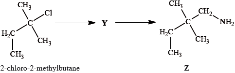
State the other substances required to convert 2-methylbut-2-ene to 2-methylbutan-2-ol.
Explain whether you would expect 2-methylbutan-2-ol to react with acidified potassium dichromate(VI).
State what is meant by optical activity.
State what optical activity indicates about the structure of the molecule.
Optical activity can be detected using a polarimeter. Explain how this works.
Deduce the structural formula of X.
Explain why 2-methylbut-2-ene is less soluble in water than 2-methylbutan-2-ol.
Explain the mechanism of this reaction using curly arrows to represent the movement of electron pairs.
State the rate expression for this reaction and the units of the rate constant.
Suggest why, for some other halogenoalkanes, this hydrolysis is much more effective in alkaline rather than in neutral conditions.
Outline why there are molecules with different molar masses.
Draw the structure of Y.
State the reagent and any catalyst required for both the formation of Y and the conversion of Y into Z.
Formation of Y:
Conversion of Y into Z:
Markscheme
water/\({{\text{H}}_{\text{2}}}{\text{O}}\);
Accept steam.
(concentrated) sulfuric acid/\({{\text{H}}_{\text{2}}}{\text{S}}{{\text{O}}_{\text{4}}}\) (catalyst);
Accept phosphoric acid/H3PO4.
Award [2] for HBr and NaOH (two-stage process via the halogenoalkane).
not react;
tertiary alcohol (not easily oxidized);
rotates the plane (of polarization) of plane polarized light;
Accept answers in which one of the “plane”s is missing.
two isomers that are enantiomers/chiral/non-superimposable mirror images;
Accept “contains an asymmetric/chiral carbon” or “contains a carbon bonded to four different groups”.
polarizes light / polarized light source;
light passed through sample;
analyser / second polarizer detects whether plane of polarization rotated;
 ;
;
Accept C3H7–CH(OH)–CH3, but not CH3–CH2–CH2–CH(OH)–CH3.
2-methylbutan-2-ol has hydroxyl/OH group;
Do not accept “hydroxide group”.
Allow 2-methylbutan-2-ol is an alcohol.
2-methylbutan-2-ol can form H-bonds (to water) / 2-methylbut-2-ene cannot form H-bonds (to water);

curly arrow showing \({\text{C}}{{\text{l}}^ - }\) leaving;
representation of tertiary carbocation;
curly arrow going from lone pair/negative charge on O in \({\text{H}}{{\text{O}}^ - }\) to \({{\text{C}}^ + }\);
Do not allow arrow originating on H in HO–.
formation of organic product \({\text{C}}{{\text{H}}_{\text{3}}}{\text{C}}{{\text{H}}_{\text{2}}}{\text{C(C}}{{\text{H}}_{\text{3}}}{{\text{)}}_{\text{2}}}{\text{OH}}\) and \({\text{C}}{{\text{l}}^ - }\)/NaCl
(somewhere in mechanism);
Award [3 max] if a candidate gives a fully correct SN2 mechanism.
\({\text{rate}} = {\text{k}} \times \) [2-chloro-2-methylbutane]/\({\text{[C}}{{\text{H}}_{\text{3}}}{\text{C}}{{\text{H}}_{\text{2}}}{\text{C(C}}{{\text{H}}_{\text{3}}}{{\text{)}}_{\text{2}}}{\text{Cl]}}\)/[halogenoalkane]
/[R–Cl];
\({{\text{s}}^{ - 1}}\);
hydroxide ion/\({\text{O}}{{\text{H}}^ - }\) is a better nucleophile than water / hydroxide ion/\({\text{O}}{{\text{H}}^ - }\) has negative charge;
undergo \({{\text{S}}_{\text{N}}}{\text{2}}\) hydrolysis / RDS depends on attack of \({\text{O}}{{\text{H}}^ - }\)/hydroxide ion (nucleophile);
Accept other suggestions that are chemically valid.
chlorine can be \(^{{\text{35}}}{\text{Cl}}\)/Cl–35 or \(^{{\text{37}}}{\text{Cl}}\)/Cl–37;
Accept “chlorine can exist as two isotopes”.
Answer must refer to chlorine rather than isotopes in general.
 ;
;
Do not accept condensed formulas such as CH3CH2C(CH3)2CN.
Accept the cyanide group as –CN without showing the triple bond.
Formation of Y:
cyanide ion/\({\text{C}}{{\text{N}}^ - }\) / potassium cyanide/KCN;
Accept hydrogen cyanide/HCN.
Conversion of Y into Z:
hydrogen/\({{\text{H}}_{\text{2}}}\);
nickel/Ni / platinum/Pt / palladium/Pd (catalyst);
Examiners report
Many students could recall the reagents for the hydration of an alkene and recognize the alcohol as a tertiary alcohol that would not undergo oxidation. Statements regarding optical activity often lacked precision and betrayed confusion with chirality. Very few could correctly describe how a polarimeter worked, especially the second rotating sheet of polaroid, and students frequently drew the structure of 2-methylbutan-2-ol rather than its chiral isomer. Most students stated that the alcohol was more polar than the alkene, but fewer mentioned that it could form hydrogen bonds to water and even less linked this to the presence of the hydroxyl group. Almost all students recognized that the hydrolysis was \({{\text{S}}_{\text{N}}}{\text{1}}\), with an encouraging number being able to write reasonable mechanisms, though many still lost marks through a lack of precision in where their curly arrows started and ended. Many candidates also stated an appropriate rate equation along with the units of the rate constant. Very few students linked the difference of two molar mass units to the presence in the molecule of chlorine, with its naturally occurring isotopes, and the discussion of any effect on the hydrolysis rate often revealed a lack of clear thinking. In contrast many students correctly identified the nitrile as the intermediate in the chain extension reaction and reagents for its formation and hydrogenation were generally well known.
Many students could recall the reagents for the hydration of an alkene and recognize the alcohol as a tertiary alcohol that would not undergo oxidation. Statements regarding optical activity often lacked precision and betrayed confusion with chirality. Very few could correctly describe how a polarimeter worked, especially the second rotating sheet of polaroid, and students frequently drew the structure of 2-methylbutan-2-ol rather than its chiral isomer. Most students stated that the alcohol was more polar than the alkene, but fewer mentioned that it could form hydrogen bonds to water and even less linked this to the presence of the hydroxyl group. Almost all students recognized that the hydrolysis was \({{\text{S}}_{\text{N}}}{\text{1}}\), with an encouraging number being able to write reasonable mechanisms, though many still lost marks through a lack of precision in where their curly arrows started and ended. Many candidates also stated an appropriate rate equation along with the units of the rate constant. Very few students linked the difference of two molar mass units to the presence in the molecule of chlorine, with its naturally occurring isotopes, and the discussion of any effect on the hydrolysis rate often revealed a lack of clear thinking. In contrast many students correctly identified the nitrile as the intermediate in the chain extension reaction and reagents for its formation and hydrogenation were generally well known.
Many students could recall the reagents for the hydration of an alkene and recognize the alcohol as a tertiary alcohol that would not undergo oxidation. Statements regarding optical activity often lacked precision and betrayed confusion with chirality. Very few could correctly describe how a polarimeter worked, especially the second rotating sheet of polaroid, and students frequently drew the structure of 2-methylbutan-2-ol rather than its chiral isomer. Most students stated that the alcohol was more polar than the alkene, but fewer mentioned that it could form hydrogen bonds to water and even less linked this to the presence of the hydroxyl group. Almost all students recognized that the hydrolysis was \({{\text{S}}_{\text{N}}}{\text{1}}\), with an encouraging number being able to write reasonable mechanisms, though many still lost marks through a lack of precision in where their curly arrows started and ended. Many candidates also stated an appropriate rate equation along with the units of the rate constant. Very few students linked the difference of two molar mass units to the presence in the molecule of chlorine, with its naturally occurring isotopes, and the discussion of any effect on the hydrolysis rate often revealed a lack of clear thinking. In contrast many students correctly identified the nitrile as the intermediate in the chain extension reaction and reagents for its formation and hydrogenation were generally well known.
Many students could recall the reagents for the hydration of an alkene and recognize the alcohol as a tertiary alcohol that would not undergo oxidation. Statements regarding optical activity often lacked precision and betrayed confusion with chirality. Very few could correctly describe how a polarimeter worked, especially the second rotating sheet of polaroid, and students frequently drew the structure of 2-methylbutan-2-ol rather than its chiral isomer. Most students stated that the alcohol was more polar than the alkene, but fewer mentioned that it could form hydrogen bonds to water and even less linked this to the presence of the hydroxyl group. Almost all students recognized that the hydrolysis was \({{\text{S}}_{\text{N}}}{\text{1}}\), with an encouraging number being able to write reasonable mechanisms, though many still lost marks through a lack of precision in where their curly arrows started and ended. Many candidates also stated an appropriate rate equation along with the units of the rate constant. Very few students linked the difference of two molar mass units to the presence in the molecule of chlorine, with its naturally occurring isotopes, and the discussion of any effect on the hydrolysis rate often revealed a lack of clear thinking. In contrast many students correctly identified the nitrile as the intermediate in the chain extension reaction and reagents for its formation and hydrogenation were generally well known.
Many students could recall the reagents for the hydration of an alkene and recognize the alcohol as a tertiary alcohol that would not undergo oxidation. Statements regarding optical activity often lacked precision and betrayed confusion with chirality. Very few could correctly describe how a polarimeter worked, especially the second rotating sheet of polaroid, and students frequently drew the structure of 2-methylbutan-2-ol rather than its chiral isomer. Most students stated that the alcohol was more polar than the alkene, but fewer mentioned that it could form hydrogen bonds to water and even less linked this to the presence of the hydroxyl group. Almost all students recognized that the hydrolysis was \({{\text{S}}_{\text{N}}}{\text{1}}\), with an encouraging number being able to write reasonable mechanisms, though many still lost marks through a lack of precision in where their curly arrows started and ended. Many candidates also stated an appropriate rate equation along with the units of the rate constant. Very few students linked the difference of two molar mass units to the presence in the molecule of chlorine, with its naturally occurring isotopes, and the discussion of any effect on the hydrolysis rate often revealed a lack of clear thinking. In contrast many students correctly identified the nitrile as the intermediate in the chain extension reaction and reagents for its formation and hydrogenation were generally well known.
Many students could recall the reagents for the hydration of an alkene and recognize the alcohol as a tertiary alcohol that would not undergo oxidation. Statements regarding optical activity often lacked precision and betrayed confusion with chirality. Very few could correctly describe how a polarimeter worked, especially the second rotating sheet of polaroid, and students frequently drew the structure of 2-methylbutan-2-ol rather than its chiral isomer. Most students stated that the alcohol was more polar than the alkene, but fewer mentioned that it could form hydrogen bonds to water and even less linked this to the presence of the hydroxyl group. Almost all students recognized that the hydrolysis was \({{\text{S}}_{\text{N}}}{\text{1}}\), with an encouraging number being able to write reasonable mechanisms, though many still lost marks through a lack of precision in where their curly arrows started and ended. Many candidates also stated an appropriate rate equation along with the units of the rate constant. Very few students linked the difference of two molar mass units to the presence in the molecule of chlorine, with its naturally occurring isotopes, and the discussion of any effect on the hydrolysis rate often revealed a lack of clear thinking. In contrast many students correctly identified the nitrile as the intermediate in the chain extension reaction and reagents for its formation and hydrogenation were generally well known.
Many students could recall the reagents for the hydration of an alkene and recognize the alcohol as a tertiary alcohol that would not undergo oxidation. Statements regarding optical activity often lacked precision and betrayed confusion with chirality. Very few could correctly describe how a polarimeter worked, especially the second rotating sheet of polaroid, and students frequently drew the structure of 2-methylbutan-2-ol rather than its chiral isomer. Most students stated that the alcohol was more polar than the alkene, but fewer mentioned that it could form hydrogen bonds to water and even less linked this to the presence of the hydroxyl group. Almost all students recognized that the hydrolysis was \({{\text{S}}_{\text{N}}}{\text{1}}\), with an encouraging number being able to write reasonable mechanisms, though many still lost marks through a lack of precision in where their curly arrows started and ended. Many candidates also stated an appropriate rate equation along with the units of the rate constant. Very few students linked the difference of two molar mass units to the presence in the molecule of chlorine, with its naturally occurring isotopes, and the discussion of any effect on the hydrolysis rate often revealed a lack of clear thinking. In contrast many students correctly identified the nitrile as the intermediate in the chain extension reaction and reagents for its formation and hydrogenation were generally well known.
Many students could recall the reagents for the hydration of an alkene and recognize the alcohol as a tertiary alcohol that would not undergo oxidation. Statements regarding optical activity often lacked precision and betrayed confusion with chirality. Very few could correctly describe how a polarimeter worked, especially the second rotating sheet of polaroid, and students frequently drew the structure of 2-methylbutan-2-ol rather than its chiral isomer. Most students stated that the alcohol was more polar than the alkene, but fewer mentioned that it could form hydrogen bonds to water and even less linked this to the presence of the hydroxyl group. Almost all students recognized that the hydrolysis was \({{\text{S}}_{\text{N}}}{\text{1}}\), with an encouraging number being able to write reasonable mechanisms, though many still lost marks through a lack of precision in where their curly arrows started and ended. Many candidates also stated an appropriate rate equation along with the units of the rate constant. Very few students linked the difference of two molar mass units to the presence in the molecule of chlorine, with its naturally occurring isotopes, and the discussion of any effect on the hydrolysis rate often revealed a lack of clear thinking. In contrast many students correctly identified the nitrile as the intermediate in the chain extension reaction and reagents for its formation and hydrogenation were generally well known.
Many students could recall the reagents for the hydration of an alkene and recognize the alcohol as a tertiary alcohol that would not undergo oxidation. Statements regarding optical activity often lacked precision and betrayed confusion with chirality. Very few could correctly describe how a polarimeter worked, especially the second rotating sheet of polaroid, and students frequently drew the structure of 2-methylbutan-2-ol rather than its chiral isomer. Most students stated that the alcohol was more polar than the alkene, but fewer mentioned that it could form hydrogen bonds to water and even less linked this to the presence of the hydroxyl group. Almost all students recognized that the hydrolysis was \({{\text{S}}_{\text{N}}}{\text{1}}\), with an encouraging number being able to write reasonable mechanisms, though many still lost marks through a lack of precision in where their curly arrows started and ended. Many candidates also stated an appropriate rate equation along with the units of the rate constant. Very few students linked the difference of two molar mass units to the presence in the molecule of chlorine, with its naturally occurring isotopes, and the discussion of any effect on the hydrolysis rate often revealed a lack of clear thinking. In contrast many students correctly identified the nitrile as the intermediate in the chain extension reaction and reagents for its formation and hydrogenation were generally well known.
Many students could recall the reagents for the hydration of an alkene and recognize the alcohol as a tertiary alcohol that would not undergo oxidation. Statements regarding optical activity often lacked precision and betrayed confusion with chirality. Very few could correctly describe how a polarimeter worked, especially the second rotating sheet of polaroid, and students frequently drew the structure of 2-methylbutan-2-ol rather than its chiral isomer. Most students stated that the alcohol was more polar than the alkene, but fewer mentioned that it could form hydrogen bonds to water and even less linked this to the presence of the hydroxyl group. Almost all students recognized that the hydrolysis was \({{\text{S}}_{\text{N}}}{\text{1}}\), with an encouraging number being able to write reasonable mechanisms, though many still lost marks through a lack of precision in where their curly arrows started and ended. Many candidates also stated an appropriate rate equation along with the units of the rate constant. Very few students linked the difference of two molar mass units to the presence in the molecule of chlorine, with its naturally occurring isotopes, and the discussion of any effect on the hydrolysis rate often revealed a lack of clear thinking. In contrast many students correctly identified the nitrile as the intermediate in the chain extension reaction and reagents for its formation and hydrogenation were generally well known.
Many students could recall the reagents for the hydration of an alkene and recognize the alcohol as a tertiary alcohol that would not undergo oxidation. Statements regarding optical activity often lacked precision and betrayed confusion with chirality. Very few could correctly describe how a polarimeter worked, especially the second rotating sheet of polaroid, and students frequently drew the structure of 2-methylbutan-2-ol rather than its chiral isomer. Most students stated that the alcohol was more polar than the alkene, but fewer mentioned that it could form hydrogen bonds to water and even less linked this to the presence of the hydroxyl group. Almost all students recognized that the hydrolysis was \({{\text{S}}_{\text{N}}}{\text{1}}\), with an encouraging number being able to write reasonable mechanisms, though many still lost marks through a lack of precision in where their curly arrows started and ended. Many candidates also stated an appropriate rate equation along with the units of the rate constant. Very few students linked the difference of two molar mass units to the presence in the molecule of chlorine, with its naturally occurring isotopes, and the discussion of any effect on the hydrolysis rate often revealed a lack of clear thinking. In contrast many students correctly identified the nitrile as the intermediate in the chain extension reaction and reagents for its formation and hydrogenation were generally well known.
Many students could recall the reagents for the hydration of an alkene and recognize the alcohol as a tertiary alcohol that would not undergo oxidation. Statements regarding optical activity often lacked precision and betrayed confusion with chirality. Very few could correctly describe how a polarimeter worked, especially the second rotating sheet of polaroid, and students frequently drew the structure of 2-methylbutan-2-ol rather than its chiral isomer. Most students stated that the alcohol was more polar than the alkene, but fewer mentioned that it could form hydrogen bonds to water and even less linked this to the presence of the hydroxyl group. Almost all students recognized that the hydrolysis was \({{\text{S}}_{\text{N}}}{\text{1}}\), with an encouraging number being able to write reasonable mechanisms, though many still lost marks through a lack of precision in where their curly arrows started and ended. Many candidates also stated an appropriate rate equation along with the units of the rate constant. Very few students linked the difference of two molar mass units to the presence in the molecule of chlorine, with its naturally occurring isotopes, and the discussion of any effect on the hydrolysis rate often revealed a lack of clear thinking. In contrast many students correctly identified the nitrile as the intermediate in the chain extension reaction and reagents for its formation and hydrogenation were generally well known.
Many students could recall the reagents for the hydration of an alkene and recognize the alcohol as a tertiary alcohol that would not undergo oxidation. Statements regarding optical activity often lacked precision and betrayed confusion with chirality. Very few could correctly describe how a polarimeter worked, especially the second rotating sheet of polaroid, and students frequently drew the structure of 2-methylbutan-2-ol rather than its chiral isomer. Most students stated that the alcohol was more polar than the alkene, but fewer mentioned that it could form hydrogen bonds to water and even less linked this to the presence of the hydroxyl group. Almost all students recognized that the hydrolysis was \({{\text{S}}_{\text{N}}}{\text{1}}\), with an encouraging number being able to write reasonable mechanisms, though many still lost marks through a lack of precision in where their curly arrows started and ended. Many candidates also stated an appropriate rate equation along with the units of the rate constant. Very few students linked the difference of two molar mass units to the presence in the molecule of chlorine, with its naturally occurring isotopes, and the discussion of any effect on the hydrolysis rate often revealed a lack of clear thinking. In contrast many students correctly identified the nitrile as the intermediate in the chain extension reaction and reagents for its formation and hydrogenation were generally well known.
Nitrogen and silicon belong to different groups in the periodic table.
Draw the Lewis structures, state the shapes and predict the bond angles for the following species.
Consider the molecule \({\text{HCON}}{{\text{H}}_{\text{2}}}\).
Distinguish in terms of electronic structure, between the terms group and period.
State the maximum number of orbitals in the \(n = 2\) energy level.
\({\text{SiF}}_6^{2 - }\)
\({\text{NO}}_2^ + \)
Explain, using diagrams, why \({\text{N}}{{\text{O}}_{\text{2}}}\) is a polar molecule but \({\text{C}}{{\text{O}}_{\text{2}}}\) is a non-polar molecule.
Explain the term hybridization.
Describe how \(\sigma \) and \(\pi \) bonds form.
State the type of hybridization of the carbon and nitrogen atoms in \({\text{HCON}}{{\text{H}}_{\text{2}}}\).
Markscheme
Group: number of valence/outer energy level electrons same;
Period: electrons are in same valence/outer energy level;
Accept number of energy levels containing electrons occupied.
Accept shell for energy level.
4;
Allow the mark if the correct individual orbitals (e.g. 2s etc.) are listed.
 ;
;
octahedral/octahedron/square bipyramidal;
90° / 90° and 180°;
 ;
;
linear;
180°;
Allow dots, crosses or lines in Lewis structures.
Penalize missing charge, missing bracket once only in (i) and (ii).
Lone pairs required for BOTH (i) and (ii).
\(N{O_2}\):

Award [1] for correct representation of the bent shape and [1] for showing the net dipole moment, or explaining it in words (unsymmetrical distribution of charge).
\(C{O_2}\):

Award [1] for correct representation of the linear shape and for showing the two equal but opposite dipoles or explaining it in words (symmetrical distribution of charge).
For both species, allow either arrow or arrow with bar for representation of dipole moment.
Allow correct partial charges instead of the representation of the vector dipole moment.
Ignore incorrect bonds.
Lone pairs not needed.
mixing/joining together/combining/merging of atomic orbitals to form molecular /new orbitals / orbitals of equal energy;
\(sigma \) bond:
end-on/axial overlap with electron density between the two atoms/nuclei;
\(\pi \) bond:
sideways/parallel overlap with electron density above and below internuclear axis/\(sigma \) bond;
Marks can be scored from a suitable diagram.
Award [1 max] for stating end-on/axial overlap for \(sigma \) and sideways/parallel overlap for \(\pi \) only i.e. without mentioning electron density OR stating electron density between the two atoms/nuclei for \(sigma \) above and below internuclear axis/\(sigma \) bond for \(\pi \) i.e. without mentioning overlap.

Correct answer is actually sp2 for nitrogen because of delocalization/planar geometry.
Accept sp3.
Examiners report
Part (a) was very poorly answered which was surprising at HL. Most candidates described groups correctly but only a small majority stated that for a period the electrons are in the same valence level.
Part (ii) was well answered.
For (b) VSEPR theory in general was well answered. The most common mistakes involved candidates failing to include square brackets or lone pairs of electrons or charges. Four G2 comments stated that expanded octets are not on the syllabus. However, AS 14.1.1 states explicitly that candidates should be able to predict the shape and bond angles of species of five and six negative charge centres. Four examples are included in the teachers note, including \({\text{S}}{{\text{F}}_{\text{6}}}\), but it has to emphasized again, as in previous subject reports that examples should not be confined in teaching programmes to just these four examples. Even \({\text{S}}{{\text{F}}_{\text{6}}}\) is a clear example of an expanded octet type structure, as is \({\text{SiF}}_6^{2 - }\), as asked in this question.
There were five other G2 comments again stating the fact that \({\text{NO}}_2^ + \) is off-syllabus. Based on AS 4.2.7, this example is clearly on the syllabus as the AS states that candidates should be able to predict the shape and bond angles of species of two, three and four negative charge centres. All the examples in the teachers note should be covered at a minimum in the teaching programme, but these are not the only examples.
There were seven G2 comments referring to (d); some respondents felt that the candidates had to answer the question by determining the shape of both \({\text{N}}{{\text{O}}_{\text{2}}}\) and\({\text{C}}{{\text{O}}_{\text{2}}}\) using VSEPR Theory. This is a classic example of candidates reading the question carefully and not making unnecessary assumptions in relation to what is being asked. Only three marks are allocated to this question and hence this should be another clue as to suggest that the answer can be given in a concise manner. All candidates had to do was determine the fact that both species are XY2 species (not XYZ even) and hence can only be one of two geometries, either linear or bent. \({\text{C}}{{\text{O}}_{\text{2}}}\) must be non-polar since it is a linear geometry and hence the two dipole moments cancel each other out, yielding a net dipole moment of zero. In the case of \({\text{N}}{{\text{O}}_{\text{2}}}\), the geometry must be bent, and therefore there is a net dipole moment meaning it is a polar molecule. A simple diagram of the two species with the two bond dipole moments in each case and the resultant net dipole moment (in the case of \({\text{N}}{{\text{O}}_{\text{2}}}\)) would have scored both marks. There was no need to show lone pairs of electrons or isolated electrons etc. to answer this question, as candidates were not asked to write Lewis structures etc. Some candidates wasted time here trying to work these out and even some candidates thought that there might even be a mistake in the question and tried to answer the question with \({\text{NO}}_2^ - \), because this is an example given in the teachers note in AS 14.3.1, based on delocalization.
The very best candidates did draw dipole moments, as the question did ask for diagrams, when explaining polarity, as opposed to simply a description in words.
Hybridization was usually well answered in part (ii), but sometimes candidates did not score the mark due to lack of specific subject vocabulary.
Although candidates often had some understanding of sigma and pi bonding, very few mentioned electron density in (iii).
For (iv) one G2 comment stated that the hybridization of N in \({\text{HCON}}{{\text{H}}_{\text{2}}}\) will in fact be \({\text{s}}{{\text{p}}^{\text{2}}}\) due to the planar nature of the \({\text{N}}{{\text{H}}_{\text{2}}}\) group here in this example, which is in fact correct, although it is unlikely that candidates at this level would know this. Nearly all candidates gave \({\text{s}}{{\text{p}}^{\text{3}}}\) hybridization for N, which they based on a perceived pyramidal type geometry, like in ammonia. For this reason, during GA, we decided to allow both hybridizations, even though the correct answer is actually \({\text{s}}{{\text{p}}^{\text{2}}}\) in this example.
Ozone, \({{\text{O}}_{\text{3}}}\), in the upper atmosphere prevents harmful UV radiation reaching the surface of the Earth.
State the shape of the ozone molecule and estimate the bond angle.
Shape:
Bond angle:
State the hybridization of the central oxygen atom.
In terms of \(\sigma \) and \(\pi \) bonds, describe the two oxygen-oxygen bonds in the Lewis structure.
The two oxygen-oxygen bonds in ozone are in fact of equal length. Deduce why this is the case and how the length of these would compare to oxygen-oxygen bond lengths in hydrogen peroxide, \({{\text{H}}_{\text{2}}}{{\text{O}}_{\text{2}}}\), and in the oxygen molecule, \({{\text{O}}_{\text{2}}}\).
Markscheme
Shape: non-linear / bent / v-shaped / angular;
Bond angle: 117°;
Accept values from 115° to 119° / just/slightly less than 120°.
\({\text{s}}{{\text{p}}^{\text{2}}}\);
one is just one \(\sigma \) and one has one \(\sigma \) and one \(\pi \);
Accept “both bonds comprise one \(\sigma \) and a shared \(\pi \) “/ OWTTE.
delocalization occurs / delocalized \(\pi \)-bond / (has two) resonance structures / it is a resonance hybrid;
length intermediate between \({{\text{H}}_2}{{\text{O}}_2}\) and \({{\text{O}}_2}\) / OWTTE;
Examiners report
Many students scored well on this because, in order that candidates were not too heavily penalised, ECF was applied to the later parts of the question based on the number of electron domains and bonding represented by the Lewis diagram drawn in part (a). Hence, although quite a few students incorrectly tried to reflect the delocalization of ozone in their Lewis structures in part (a), their answers to the later parts of the question were correct. In the final part quite a number of students appeared unable to deduce that hydrogen peroxide contains a single O–O bond.
Many students scored well on this because, in order that candidates were not too heavily penalised, ECF was applied to the later parts of the question based on the number of electron domains and bonding represented by the Lewis diagram drawn in part (a). Hence, although quite a few students incorrectly tried to reflect the delocalization of ozone in their Lewis structures in part (a), their answers to the later parts of the question were correct. In the final part quite a number of students appeared unable to deduce that hydrogen peroxide contains a single O–O bond.
Many students scored well on this because, in order that candidates were not too heavily penalised, ECF was applied to the later parts of the question based on the number of electron domains and bonding represented by the Lewis diagram drawn in part (a). Hence, although quite a few students incorrectly tried to reflect the delocalization of ozone in their Lewis structures in part (a), their answers to the later parts of the question were correct. In the final part quite a number of students appeared unable to deduce that hydrogen peroxide contains a single O–O bond.
Many students scored well on this because, in order that candidates were not too heavily penalised, ECF was applied to the later parts of the question based on the number of electron domains and bonding represented by the Lewis diagram drawn in part (a). Hence, although quite a few students incorrectly tried to reflect the delocalization of ozone in their Lewis structures in part (a), their answers to the later parts of the question were correct. In the final part quite a number of students appeared unable to deduce that hydrogen peroxide contains a single O–O bond.
Hydrazine, N2H4, is a valuable rocket fuel.
The equation for the reaction between hydrazine and oxygen is given below.
\[{{\text{N}}_2}{{\text{H}}_4}({\text{l)}} + {{\text{O}}_2}({\text{g)}} \to {{\text{N}}_2}({\text{g)}} + 2{{\text{H}}_2}{\text{O(l)}}\]
The reaction between \({{\text{N}}_2}{{\text{H}}_4}({\text{aq)}}\) and \({\text{HCl(aq)}}\) can be represented by the following equation.
\[{{\text{N}}_2}{{\text{H}}_4}({\text{aq)}} + 2{\text{HCl(aq)}} \to {{\text{N}}_2}{\text{H}}_6^{2 + }({\text{aq)}} + 2{\text{C}}{{\text{l}}^ - }({\text{aq)}}\]
(i) Draw the Lewis (electron dot) structure for N2H4 showing all valence electrons.
(ii) State and explain the H–N–H bond angle in hydrazine.
Hydrazine and ethene, C2H4, are hydrides of adjacent elements in the periodic table. The boiling point of hydrazine is much higher than that of ethene. Explain this difference in terms of the intermolecular forces in each compound.
(i) The enthalpy change of formation, \(\Delta H_{\text{f}}^\Theta \), of liquid hydrazine is \({\text{50.6 kJ}}\,{\text{mo}}{{\text{l}}^{ - 1}}\). Use this value, together with data from Table 12 of the Data Booklet, to calculate the enthalpy change for this reaction.
(ii) Use the bond enthalpy values from Table 10 of the Data Booklet to determine the enthalpy change for this reaction.
(iii) Identify the calculation that produces the most accurate value for the enthalpy change for the reaction given and explain your choice.
(iv) Calculate \(\Delta {S^\Theta }\) for the reaction using the data below and comment on its magnitude.

(v) Calculate \(\Delta {G^\Theta }\) for the reaction at 298 K.
(vi) Predict, giving a reason, the spontaneity of the reaction above at both high and low temperatures.
The reaction between \({{\text{N}}_{\text{2}}}{{\text{H}}_{\text{4}}}{\text{(aq)}}\) and HCl(aq) can be represented by the following equation.
\[{{\text{N}}_2}{{\text{H}}_4}({\text{aq)}} + 2{\text{HCl(aq)}} \to {{\text{N}}_2}{\text{H}}_6^{2 + }({\text{aq)}} + 2{\text{C}}{{\text{l}}^ - }({\text{aq)}}\]
(i) Identify the type of reaction that occurs.
(ii) Predict the value of the H–N–H bond angle in \({{\text{N}}_{\text{2}}}{\text{H}}_{\text{6}}^{{\text{2}} + }\).
(iii) Suggest the type of hybridization shown by the nitrogen atoms in \({{\text{N}}_{\text{2}}}{\text{H}}_{\text{6}}^{{\text{2}} + }\).
Markscheme
(i)  ;
;
Accept x’s, dots or lines for electron pairs
(ii) H–N–H \( < \) 109 / any angle between 104° and 109°;
due to four centres of electron charge / four electron pairs (one of which is a lone \({{\text{e}}^ - }\) pair);
extra repulsion due to lone electron pairs;
Do not allow ECF for wrong Lewis structures.
weaker van der Waals’/London/dispersion/intermolecular forces in ethene;
stronger (intermolecular) hydrogen bonding in hydrazine;
If no comparison between strengths then [1 max].
(i) \(\Delta H_{\text{r}}^\Theta = \Sigma \Delta H_{\text{f}}^\Theta {\text{ products}} - \Sigma \Delta H_{\text{f}}^\Theta {\text{ reactants}}\);
Can be implied by working.
\(\Delta H_{\text{f}}^\Theta {\text{(}}{{\text{H}}_2}{\text{O(l))}} = - 286{\text{ (kJ)}}\);
\(\Delta H_{\text{r}}^\Theta = 2( - 286) - 50.6 = - 622.6{\text{ (kJ)}}\);
(ii) bonds broken: 4N–H, N–N, O=O / \( + {\text{2220 (kJ}}\,{\text{mo}}{{\text{l}}^{ - 1}}{\text{)}}\);
bonds formed: N\(\equiv\)N, 4O-H / \( - 2801{\text{ (kJ}}\,{\text{mo}}{{\text{l}}^{ - 1}}{\text{)}}\);
\( - 581{\text{ (kJ}}\,{\text{mo}}{{\text{l}}^{ - 1}}{\text{)}}\);
Award [3] for correct final answer.
(iii) value based on \(\Delta {H_{\text{f}}}\) more accurate;
\(\Delta {H_{\text{f}}}\) accurate for compounds in reaction;
bond energy calculation assumes average bond energies;
(bond energy calculation) only applies to gaseous states / ignores intermolecular bonds;
(iv) \(\Delta {S^\Theta } = \Sigma {S^\Theta }{\text{ (products)}} - \Sigma {S^\Theta }{\text{ (reactants)}}\);
Can be implied by working.
\( = 191 + (2 \times 69.9) - 205 - 121 = + 4.8{\text{ (J}}\,{{\text{K}}^{ - 1}}{\text{mo}}{{\text{l}}^{ - 1}}{\text{)}}\);
small value since number of mol of g on both sides the same;
(v) \(\Delta {G^\Theta } = - 622.6 - 298(0.0048)\);
\( = - 624.0{\text{ (kJ}}\,{\text{mo}}{{\text{l}}^{ - 1}}{\text{)}}\);
Allow 623.9 to 624.1.
(vi) all reactions are spontaneous;
\(\Delta G\) is negative (at high temperatures and low temperatures);
(i) acid-base/neutralization;
(ii) 109°/109.5°;
(iii) sp3;
No ECF if bond angle incorrect in (ii).
Examiners report
The Lewis structure for hydrazine proved to be difficult for some in (a). Incorrect answers had double bonds appearing between the two nitrogen atoms or lone pairs missing. Those who could draw the correct structure in (i) gave the correct bond angle, but the explanation was often incomplete. Few mentioned either the four electron domains around the central atom or the extra repulsion of the lone pair.
In part (b) most candidates knew that hydrogen bonding was present in hydrazine and Van der Waals‟ forces in ethene but failed to give a comparison of the relative strength of the intermolecular forces.
Some candidates struggled to calculate the enthalpy changes from enthalpy changes of formation in (c) (i) as they were unable to relate the enthalpy change of combustion of hydrogen to the enthalpy change of formation of water.
The bond energy and entropy calculations were more successful with many candidates benefitting from ECF from their incorrect Lewis structures in (a). It was encouraging to see many correct unit conversions for the calculation of \(\Delta G\). A number of candidates incorrectly described the combination of hydrazine and hydrochloric acid as a redox reaction, but many were able to identify the bond angle and hybridization in \({{\text{N}}_{\text{2}}}{\text{H}}_{\text{6}}^{{\text{2}} + }\).
Carbon and silicon belong to the same group of the periodic table.
Describe the delocalization of pi (\(\pi \)) electrons and explain how this can account for the structure and stability of the carbonate ion, \({\text{CO}}_3^{2 - }\).
Explain the meaning of the term hybridization. State the type of hybridization shown by the carbon atoms in carbon dioxide, diamond, graphite and the carbonate ion.
Explain the electrical conductivity of molten sodium oxide and liquid sulfur trioxide.
Samples of sodium oxide and solid sulfur trioxide are added to separate beakers of water. Deduce the equation for each reaction and predict the electrical conductivity of each of the solutions formed.
Markscheme
\(^{{\text{60}}}{\text{Co}}\)/Co-60/cobalt-60 and radiotherapy/sterilization of medical supplies/radiation treatment of food sterilizations/industrial radiography/density measurements in industry/(medical/radioactive) tracer;
Allow treatment of cancer.
Do not allow “just used in medicine”.
OR
\(^{{\text{57}}}{\text{Co}}\)/Co-57/cobalt-57 and medical tests/label for vitamin B12 uptake;
Do not allow “just used in medicine”.
mixing/combining/merging of (atomic) orbitals to form new orbitals (for bonding);
Allow molecular or hybrid instead of new.
Do not allow answers such as changing shape/symmetries of atomic orbitals.
Carbon dioxide: sp;
Diamond: \({\text{s}}{{\text{p}}^{\text{3}}}\);
Graphite: \({\text{s}}{{\text{p}}^{\text{2}}}\);
Carbonate ion: \({\text{s}}{{\text{p}}^{\text{2}}}\);
Molten sodium oxide: conducts because of free moving/mobile ions in molten state;
Sulfur trioxide: doesn’t conduct because no free moving/mobile charged particles/it has neutral molecules;
Award [1 max] for stating molten sodium oxide conducts but sulfur trioxide doesn’t.
Do not award M2 for “just sulfur trioxide does not conduct because it is molecular.”
\({\text{N}}{{\text{a}}_2}{\text{O(s)}} + {{\text{H}}_2}{\text{O(l)}} \to {\text{2NaOH(aq)}}\);
\({\text{S}}{{\text{O}}_3}{\text{(l)}} + {{\text{H}}_2}{\text{O(l)}} \to {{\text{H}}_2}{\text{S}}{{\text{O}}_4}{\text{(aq)}}\);
both solutions conduct;
Ignore state symbols.
Examiners report
(d) was poorly answered since candidates were unable to logically structure their response often a description of pi bonding alone was given.
(e) usually was well done, although the precise meaning of hybridization was rarely given. Sometimes an incorrect hybridization of \({\text{s}}{{\text{p}}^{\text{4}}}\) was given for diamond.
In (f), most candidates were unable to state that molten sodium oxide is able to conduct electricity because the current is carried by mobile ions (not delocalized electrons). Most did not realise that molten sulfur trioxide consists of neutral molecules and therefore does not conduct an electric current.
Most were able to write the balanced chemical equations but then were not able to state that both solutions conduct. Many often gave the incorrect formula for sodium oxide.
Bromine is a member of group 7, the halogens.
Iron is a transition metal.
Freshly prepared iron(II) bromide can be electrolysed both in the liquid state and in aqueous solution.
Explain the trend in reactivity of the halogens.
Deduce, using equations where appropriate, if bromine reacts with sodium chloride solution and with sodium iodide solution.
Describe the bonding in metals and explain their malleability.
List three characteristic properties of transition elements.
Identify the type of bonding between iron and cyanide in \({{\text{[Fe(CN}}{{\text{)}}_{\text{6}}}{\text{]}}^{3 - }}\).
Deduce the oxidation number of iron in \({{\text{[Fe(CN}}{{\text{)}}_{\text{6}}}{\text{]}}^{3 - }}\).
Draw the abbreviated orbital diagram for an iron atom using the arrow-in-box notation to represent electrons.
Draw the abbreviated orbital diagram for the iron ion in [Fe(CN)6]3– using the arrow-in-box notation to represent electrons.
Describe, using a diagram, the essential components of an electrolytic cell.
Describe the two ways in which current is conducted in an electrolytic cell.
Predict and explain the products of electrolysis of a dilute iron(II) bromide solution.
Identify another product that is formed if the solution of iron(II) bromide is concentrated.
Explain why this other product is formed.
Markscheme
reactivity decreases down group;
as atomic radius increases / more electron shells;
attraction of nucleus on electrons decreases / electron affinity decreases;
Accept opposite argument for “up the group”.
no reaction with NaCl;
\({\text{B}}{{\text{r}}_2}{\text{(aq)}} + {\text{2NaI(aq)}} \to {\text{2NaBr(aq)}} + {{\text{I}}_2}{\text{(aq)}}\);
Accept ionic equation.
Ignore state symbols.
(electrostatic attraction between a) lattice of positive ions/cations and delocalized/sea of electrons;
Accept suitable diagram.
atoms/ions/layers (of positive ions) can slide over each other / OWTTE;
without change in the bonding forces / OWTTE;
variable oxidation numbers/valency
form complex (ions)
form coloured compounds/ions
catalytic (behaviour)
Award [2] for any three, [1] for any two.
dative (covalent)/coordinate;
III / \( + 3\);
Penalize incorrect format such as 3+ only if not penalized in 4 (b).

Penalise missing [Ar] only once in (v) and (vi).
Do not accept full orbital diagram; penalise only once in (v) and (vi).
Accept full or half-arrows in (v) and (vi).
Ignore absence of labels 4s and 3d.
 ;
;
Accept empty 4s box in (vi).
No ECF from (iv).

clear diagram containing all elements (power supply, connecting wires,
electrodes, container and electrolyte);
Accept power supply if shown as conventional long/short lines (as in diagram above) or clearly labelled DC power supply.
labelled positive electrode/anode and negative electrode/cathode;
Accept positive and negative by correct symbols near power supply.
labelled electrolyte/FeBr2(l)/FeBr2(aq);
State must be included for FeBr2.
Electrolyte: positive ions/cations move to negative electrode/cathode and negative ions/anions to positive electrode/anode;
Conductors: electrons flow from negative pole of battery to positive pole of battery / OWTTE;
Look at diagram in (i) for possible clarification of electron flow.
Award [1 max] for “electrons in wire/external circuit and ions in solution”.
Negative electrode/cathode:
\({{\text{H}}_{\text{2}}}\);
\({E^\Theta }{\text{(}}{{\text{H}}_{\text{2}}}{\text{)}}\) is less negative than \({E^\Theta }{\text{(Fe)}}\) / Fe is more reactive than \({{\text{H}}_{\text{2}}}\) / \({{\text{H}}_{\text{2}}}\) is lower in reactivity series / \({{\text{H}}^ + }\) more easily reduced than Fe2+ / OWTTE;
Positive electrode/anode:
\({{\text{O}}_{\text{2}}}\);
\({E^\Theta }{\text{(}}{{\text{O}}_{\text{2}}}{\text{)}}\) is less positive than \({E^\Theta }{\text{(B}}{{\text{r}}_{\text{2}}}{\text{)}}\) / in a dilute \({\text{B}}{{\text{r}}^ - }\) solution \({\text{O}}{{\text{H}}^ - }{\text{/}}{{\text{H}}_{\text{2}}}{\text{O}}\) is
preferably discharged / OWTTE;
Award [3 max] if electrodes reversed or omitted.
\({\text{B}}{{\text{r}}_{\text{2}}}\);
Accept Fe.
\({\text{2B}}{{\text{r}}^ - } \rightleftharpoons {\text{B}}{{\text{r}}_2} + {\text{2}}{{\text{e}}^ - }\) shifts to the right;
Accept similar reason for Fe.
Examiners report
This was the least popular of the Section B questions. In (a) (i) the trend was generally correctly identified but the reasons were not clear, many confusing electronegativity with electron affinity. Most knew about the reactions (or lack thereof) of bromine but the equations were sometimes unbalanced or included halogen atoms rather than molecules.
This was the least popular of the Section B questions. In (a) (i) the trend was generally correctly identified but the reasons were not clear, many confusing electronegativity with electron affinity. Most knew about the reactions (or lack thereof) of bromine but the equations were sometimes unbalanced or included halogen atoms rather than molecules.
There was a tendency to describe the bonding of metals in terms of nuclei rather than cations and malleability was not well understood.
The properties in (b) (ii) were surprisingly poor. Many suggested that the metals themselves are coloured rather than the compounds, for instance.
The bonding in (iii) was not well known but the oxidation number was generally answered correctly.
In (v), some candidates gave the full orbital diagram, some omitted [Ar] – and some just got it wrong!
The diagrams in (c) were poorly presented and often inaccurate (much confusion with a voltaic cell) and there was little understanding of how current was transmitted.
The diagrams in (c) were poorly presented and often inaccurate (much confusion with a voltaic cell) and there was little understanding of how current was transmitted.
In (iii), few candidates correctly predicted the products of electrolysis of dilute iron bromide, with many seeming to ignore the presence of hydrogen ions/hydroxide ions/water; correct explanations in terms of electrode potentials or preferential discharge were rare.
In (iii), few candidates correctly predicted the products of electrolysis of dilute iron bromide, with many seeming to ignore the presence of hydrogen ions/hydroxide ions/water; correct explanations in terms of electrode potentials or preferential discharge were rare. Despite this, bromine was often correctly identified in (iv).
In (v), few understood the impact of concentrating the electrolyte.
Copper is a metal that has been used by humans for thousands of years.
State the full electron configuration of \(^{{\text{65}}}{\text{Cu}}\).
State one difference in the physical properties of the isotopes \(^{{\text{63}}}{\text{Cu}}\) and \(^{{\text{65}}}{\text{Cu}}\) and explain why their chemical properties are the same.
Physical:
Chemical:
Describe the bonding in solid copper.
Markscheme
\({\text{1}}{{\text{s}}^{\text{2}}}{\text{2}}{{\text{s}}^{\text{2}}}{\text{2}}{{\text{p}}^{\text{6}}}{\text{3}}{{\text{s}}^{\text{2}}}{\text{3}}{{\text{p}}^{\text{6}}}{\text{3}}{{\text{d}}^{{\text{10}}}}{\text{4}}{{\text{s}}^{\text{1}}}{\text{/1}}{{\text{s}}^{\text{2}}}{\text{2}}{{\text{s}}^{\text{2}}}{\text{2}}{{\text{p}}^{\text{6}}}{\text{3}}{{\text{s}}^{\text{2}}}{\text{3}}{{\text{p}}^{\text{6}}}{\text{4}}{{\text{s}}^{{\text{13}}}}{{\text{d}}^{{\text{10}}}}\);
Physical:
\(^{{\text{63}}}{\text{Cu}}\) lower boiling point/melting point/density/greater rate of diffusion than \(^{{\text{65}}}{\text{Cu}}\);
Accept converse argument.
Do not accept “different mass”.
Chemical:
(properties identical because) same electron configuration/arrangement of electrons;
Accept “same number of protons and electrons”.
Do not accept “same number of electrons” OR “same valence (electrons)” OR “same atomic number” only.
electrostatic attraction;
between (a lattice of) cations/positive ions and delocalized/sea of electrons;
Do not award any mark for only stating “metallic bonding”.
Examiners report
Most were able to quote the electron configuration of copper correctly; but some gave [Ar] \({\text{4}}{{\text{s}}^{\text{1}}}\,{\text{3}}{{\text{d}}^{\text{9}}}\) when they were specifically asked for the full configuration. A few, inevitably gave \({\text{3}}{{\text{d}}^{\text{9}}}\,{\text{4}}{{\text{s}}^{\text{2}}}\). In (b), few related the difference in mass to a property and most did not give the comparison; “the same number of electrons and protons” was more popular than “the same electron configuration”. The descriptions of metallic bonding were disappointing; the mark for electrostatic attraction was rarely scored and many confused “nuclei” with “cations/positive ions”.
Most were able to quote the electron configuration of copper correctly; but some gave [Ar] \({\text{4}}{{\text{s}}^{\text{1}}}\,{\text{3}}{{\text{d}}^{\text{9}}}\) when they were specifically asked for the full configuration. A few, inevitably gave \({\text{3}}{{\text{d}}^{\text{9}}}\,{\text{4}}{{\text{s}}^{\text{2}}}\). In (b), few related the difference in mass to a property and most did not give the comparison; “the same number of electrons and protons” was more popular than “the same electron configuration”. The descriptions of metallic bonding were disappointing; the mark for electrostatic attraction was rarely scored and many confused “nuclei” with “cations/positive ions”.
Most were able to quote the electron configuration of copper correctly; but some gave [Ar] \({\text{4}}{{\text{s}}^{\text{1}}}\,{\text{3}}{{\text{d}}^{\text{9}}}\) when they were specifically asked for the full configuration. A few, inevitably gave \({\text{3}}{{\text{d}}^{\text{9}}}\,{\text{4}}{{\text{s}}^{\text{2}}}\). In (b), few related the difference in mass to a property and most did not give the comparison; “the same number of electrons and protons” was more popular than “the same electron configuration”. The descriptions of metallic bonding were disappointing; the mark for electrostatic attraction was rarely scored and many confused “nuclei” with “cations/positive ions”.
Titanium and vanadium are consecutive elements in the first transition metal series.
\({\text{TiC}}{{\text{l}}_{\text{4}}}\) reacts with water and the resulting titanium(IV) oxide can be used as a smoke screen.
Describe the bonding in metals.
Titanium exists as several isotopes. The mass spectrum of a sample of titanium gave the following data:

Calculate the relative atomic mass of titanium to two decimal places.
State the number of protons, neutrons and electrons in the \(_{{\text{22}}}^{{\text{48}}}{\text{Ti}}\) atom.

State the full electron configuration of the \(_{{\text{22}}}^{{\text{48}}}{\text{T}}{{\text{i}}^{2 + }}\) ion.
Suggest why the melting point of vanadium is higher than that of titanium.
Sketch a graph of the first six successive ionization energies of vanadium on the axes provided.

Explain why an aluminium-titanium alloy is harder than pure aluminium.
Describe, in terms of the electrons involved, how the bond between a ligand and a central metal ion is formed.
Outline why transition metals form coloured compounds.
State the type of bonding in potassium chloride which melts at 1043 K.
A chloride of titanium, \({\text{TiC}}{{\text{l}}_{\text{4}}}\), melts at 248 K. Suggest why the melting point is so much lower than that of KCl.
Formulate an equation for this reaction.
Suggest one disadvantage of using this smoke in an enclosed space.
Markscheme
electrostatic attraction
between «a lattice of» metal/positive ions/cations AND «a sea of» delocalized electrons
Accept “mobile electrons”.
Do not accept “metal atoms/nuclei”.
[2 marks]
\(\frac{{(46 \times 7.98){\text{ + }}(47 \times 7.32){\text{ + }}(48 \times 73.99){\text{ + }}(49 \times 5.46){\text{ + }}(50 \times 5.25)}}{{100}} = 47.93\)
Answer must have two decimal places with a value from 47.90 to 48.00.
Award [2] for correct final answer.
Award [0] for 47.87 (data booklet value).
[2 marks]
Protons: 22 AND Neutrons: 26 AND Electrons: 22
[1 mark]
\({\text{1}}{{\text{s}}^{\text{2}}}{\text{2}}{{\text{s}}^{\text{2}}}{\text{2}}{{\text{p}}^{\text{6}}}{\text{3}}{{\text{s}}^{\text{2}}}{\text{3}}{{\text{p}}^{\text{6}}}{\text{3}}{{\text{d}}^{\text{2}}}\)
[1 mark]
vanadium has smaller ionic radius «leading to stronger metallic bonding»
Accept vanadium has «one» more valence electron«s» «leading to stronger metallic bonding».
Accept “atomic” for “ionic”.
[1 mark]
![]()
![]()
regular increase for first five AND sharp increase to the 6th
A log graph is acceptable.
Accept log plot on given axes (without amendment of y-axis).
Award mark if gradient of 5 to 6 is greater than “best fit line” of 1 to 5.
[1 mark]
titanium atoms/ions distort the regular arrangement of atoms/ions
OR
titanium atoms/ions are a different size to aluminium «atoms/ions»
prevent layers sliding over each other
Accept diagram showing different sizes of atoms/ions.
[2 marks]
pair of electrons provided by the ligand
Do not accept “dative” or “coordinate bonding” alone.
[1 mark]
partially filled d-orbitals
«ligands cause» d-orbitals «to» split
light is absorbed as electrons transit to a higher energy level «in d–d transitions»
OR
light is absorbed as electrons are promoted
energy gap corresponds to light in the visible region of the spectrum
colour observed is the complementary colour
[4 marks]
ionic
OR
«electrostatic» attraction between oppositely charged ions
[1 mark]
«simple» molecular structure
OR
weak«er» intermolecular bonds
OR
weak«er» bonds between molecules
Accept specific examples of weak bonds such as London/dispersion and van der Waals.
Do not accept “covalent”.
[1 mark]
\({\text{TiC}}{{\text{l}}_{\text{4}}}{\text{(l)}} + {\text{2}}{{\text{H}}_{\text{2}}}{\text{O(l)}} \to {\text{Ti}}{{\text{O}}_{\text{2}}}{\text{(s)}} + {\text{4HCl(aq)}}\) correct products
correct balancing
Accept ionic equation.
Award M2 if products are HCl and a compound of Ti and O.
[2 marks]
HCl causes breathing/respiratory problems
OR
HCl is an irritant
OR
HCl is toxic
OR
HCl has acidic vapour
OR
HCl is corrosive
Accept TiO2 causes breathing
problems/is an irritant.
Accept “harmful” for both HCl and TiO2.
Accept “smoke is asphyxiant”.
[1 mark]
Examiners report
The concentration of a solution of a weak acid, such as ethanedioic acid, can be determined
by titration with a standard solution of sodium hydroxide, NaOH (aq).
5.00 g of an impure sample of hydrated ethanedioic acid, (COOH)2•2H2O, was dissolved in water to make 1.00 dm3 of solution. 25.0 cm3 samples of this solution were titrated against a 0.100 mol dm-3 solution of sodium hydroxide using a suitable indicator.
(COOH)2 (aq) + 2NaOH (aq) → (COONa)2 (aq) + 2H2O (l)
The mean value of the titre was 14.0 cm3.
(i) Suggest a suitable indicator for this titration. Use section 22 of the data booklet.
(ii) Calculate the amount, in mol, of NaOH in 14.0 cm3 of 0.100 mol dm-3 solution.
(iii) Calculate the amount, in mol, of ethanedioic acid in each 25.0 cm3 sample.
(iv) Determine the percentage purity of the hydrated ethanedioic acid sample.
Draw the Lewis (electron dot) structure of the ethanedioate ion, –OOCCOO–.
Outline why all the C–O bond lengths in the ethanedioate ion are the same length and suggest a value for them. Use section 10 of the data booklet.
Explain how ethanedioate ions act as ligands.
Markscheme
i
phenolphthalein
OR
phenol red
ii
«n(NaOH) = \(\left( {\frac{{14.0}}{{1000}}} \right)\) dm3 × 0.100 mol dm-3 =» 1.40 × 10-3 «mol»
iii
«\(\frac{1}{2}\) × 1.40 × 10-3 =» 7.00 × 10-4 «mol»
iv
ALTERNATIVE 1:
«mass of pure hydrated ethanedioic acid in each titration = 7.00 × 10-4 mol × 126.08 g mol-1 =» 0.0883 / 8.83 × 10-2 «g»
mass of sample in each titration = «\(\frac{{25}}{{1000}}\) × 5.00 g =» 0.125 «g»
«% purity = \(\frac{{0.0883{\rm{g}}}}{{0.125{\rm{g}}}}\) × 100 =» 70.6 «%»
ALTERNATIVE 2:
«mol of pure hydrated ethanedioic acid in 1 dm3 solution = 7.00 × 10-4 × \(\frac{{1000}}{{25}}\)=» 2.80 × 10-2 «mol»
«mass of pure hydrated ethanedioic acid in sample = 2.80 × 10-2 mol × 126.08 g mol-1 =» 3.53 «g»
«% purity = \(\frac{{3.53{\rm{g}}}}{{5.00{\rm{g}}}}\) × 100 =» 70.6 «%»
ALTERNATIVE 3:
mol of hydrated ethanedioic acid (assuming sample to be pure) = \(\frac{{5.00{\rm{g}}}}{{126.08{\rm{gmo}}{{\rm{l}}^{{\rm{ - 1}}}}}}\) = 0.03966 «mol»
actual amount of hydrated ethanedioic acid = «7.00 × 10-4 × \(\frac{{1000}}{{25}}\) =» 2.80 × 10-2 «mol»
«% purity = \(\frac{{2.80 \times {{10}^{ - 2}}}}{{0.03966}}\) × 100 =» 70.6 «%»
Award suitable part marks for alternative methods.
Award [3] for correct final answer.
Award [2 max] for 50.4 % if anhydrous ethanedioic acid assumed.
![]()
Accept single negative charges on two O atoms singly bonded to C.
Do not accept resonance structures.
Allow any combination of dots/crosses or lines to represent electron pairs.
electrons delocalized «across the O–C–O system»
OR
resonance occurs
Accept delocalized π-bond(s).
No ECF from (d).
122 «pm» < C–O < 143 «pm»
Accept any answer in range 123 «pm» to 142 «pm».
Accept “bond intermediate between single and double bond” or “bond order 1.5”.
coordinate/dative/covalent bond from O to «transition» metal «ion»
OR
acts as a Lewis base/nucleophile
can occupy two positions
OR
provide two electron pairs from different «O» atoms
OR
form two «coordinate/dative/covalent» bonds «with the metal ion»
OR
chelate «metal/ion»
Examiners report
Bonds can be formed in many ways.
Bonds can be formed in many ways.
The equilibrium for a mixture of NO2 and N2O4 gases is represented as:
2NO2(g) \( \rightleftharpoons \) N2O4(g)
At 100°C, the equilibrium constant, Kc, is 0.21.
Discuss the bonding in the resonance structures of ozone.
Deduce one resonance structure of ozone and the corresponding formal charges on each oxygen atom.
The first six ionization energies, in kJ mol–1, of an element are given below.
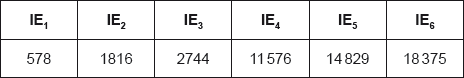
Explain the large increase in ionization energy from IE3 to IE4.
At a given time, the concentration of NO2(g) and N2O4(g) were 0.52 and \(0.10{\text{ mol}}\,{\text{d}}{{\text{m}}^{ - 3}}\) respectively.
Deduce, showing your reasoning, if the forward or the reverse reaction is favoured at this time.
Comment on the value of ΔG when the reaction quotient equals the equilibrium constant, Q = K.
Markscheme
lone pair on p orbital «of O atom» overlaps/delocalizes with pi electrons «from double bond»
both O–O bonds have equal bond length
OR
both O–O bonds have same/1.5 bond order
OR
both O–O are intermediate between O–O AND O=O
both O–O bonds have equal bond energy
Accept “p/pi/\(\pi \) electrons are delocalized/not localized”.
[3 marks]
ALTERNATIVE 1:
![]()
FC: –1 AND +1 AND 0
ALTERNATIVE 2:
![]()
FC: 0 AND +1 AND –1
Accept any combination of lines, dots or crosses to represent electrons.
Do not accept structure that represents 1.5 bonds.
Do not penalize missing lone pairs if already penalized in 3(b).
If resonance structure is incorrect, no ECF.
Any one of the structures with correct formal charges for [2 max].
[2 marks]
Any two of:
IE4: electron in lower/inner shell/energy level
OR
IE4: more stable/full electron shell
IE4: electron closer to nucleus
OR
IE4: electron more tightly held by nucleus
IE4: less shielding by complete inner shells
Accept “increase in effective nuclear charge” for M2.
[2 marks]
«Qc = \(\frac{{0.10}}{{{{0.52}^2}}}\) =» 0.37
reaction proceeds to the left/NO2(g) «until Q = Kc»
OR
reverse reaction «favoured»
Do not award M2 without a calculation for M1 but remember to apply ECF.
[2 marks]
ΔG = 0
reaction at equilibrium
OR
rate of forward and reverse reaction is the same
OR
constant macroscopic properties
[2 marks]
Examiners report
Some physical properties of molecular substances result from the different types of forces between their molecules.
Resonance structures exist when a molecule can be represented by more than one Lewis structure.
Carbon dioxide can be represented by at least two resonance structures, I and II.

Calculate the formal charge on each oxygen atom in the two structures.
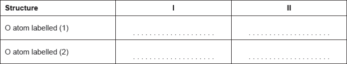
Deduce, giving a reason, the more likely structure.
Absorption of UV light in the ozone layer causes the dissociation of oxygen and ozone.
Identify, in terms of bonding, the molecule that requires a longer wavelength to dissociate.
Carbon and silicon are elements in group 14.
Explain why CO2 is a gas but SiO2 is a solid at room temperature.
Markscheme

Award [1] for any two correctly filled cells.
[2 marks]
structure I AND no formal charges
OR
structure I AND no charge transfer «between atoms»
[1 mark]
O3 has bond between single and double bond AND O2 has double bond
OR
O3 has bond order of 1.5 AND O2 has bond order of 2
OR
bond in O3 is weaker/longer than in O2
O3 requires longer wavelength
M1: Do not accept “ozone has one single and one double bond”.
[2 marks]
CO2 «non-polar» «weak» London/dispersion forces/instantaneous induced dipole-induced dipole forces between molecules
SiO2 network/lattice/3D/giant «covalent» structure
M1: The concept of “between” is essential.
[2 marks]
Examiners report
There are several structural isomers with the molecular formula \({{\text{C}}_{\text{5}}}{{\text{H}}_{{\text{11}}}}{\text{Br}}\).
All the isomers react when warmed with a dilute aqueous solution of sodium hydroxide according to the equation below.
\[{{\text{C}}_5}{{\text{H}}_{11}}{\text{Br}} + {\text{NaOH}} \to {{\text{C}}_5}{{\text{H}}_{11}}{\text{OH}} + {\text{NaBr}}\]
Deduce the name of one of the isomers which can exist as enantiomers and draw three-dimensional representations of its two enantiomers.
The reaction with 1-bromopentane proceeds by an \({{\text{S}}_{\text{N}}}{\text{2}}\) mechanism. Describe this mechanism using structural formulas and curly arrows to represent the movement of electron pairs.
The reaction with 2-bromo-2-methylbutane proceeds by an \({{\text{S}}_{\text{N}}}{\text{1}}\) mechanism. Describe this mechanism using structural formulas and curly arrows to represent the movement of electron pairs.
Explain why 1-bromopentane reacts by an \({{\text{S}}_{\text{N}}}{\text{2}}\) mechanism whereas 2-bromo-2-methylbutane reacts by an \({{\text{S}}_{\text{N}}}{\text{1}}\) mechanism.
Explain whether the boiling point of 1-bromopentane will be higher, lower or the same as that of 2-bromo-2-methylbutane.
The product \({{\text{C}}_{\text{5}}}{{\text{H}}_{{\text{11}}}}{\text{OH}}\) formed from the reaction with 1-bromopentane is warmed with ethanoic acid in the presence of a few drops of concentrated sulfuric acid. State the name of the type of reaction taking place and the structural formula of the organic product.
Markscheme
2-bromopentane 
OR
1-bromo-2-methylbutane 
OR
2-bromo-3-methylbutane 
correct isomer 3D structure;
correct name;
correct enantiomer 3D structure;
If compound incorrectly named award [2 max] for two correct 3D enantiomers,
and [1 max] for a correct structure of an enantiomer not shown in 3D.
If non-optically active isomers given (e.g. 2-bromo-2-methyl-butane) award [1 max]
if name and 3D structure are correct.
Accept condensed form for alkyl chain throughout.

curly arrow going from lone pair/negative charge on O in \({\text{H}}{{\text{O}}^ - }\) to C bonded to Br;
Do not allow curly arrow originating on H in \(H{O^ - }\) (e.g. originating on negative charge on H i.e. lone pair/negative charge must be on O).
curly arrow from C–Br bond to form \({\text{B}}{{\text{r}}^ - }\) (this can also be shown in transition state);
transition state showing overall negative charge;
Accept condensed formulas as long as curly arrows can still be shown e.g.

Accept 
If wrong formula used for halogenoalkane, e.g. 1-bromobutane award [2 max].

curly arrow from C–Br bond to form \({\text{B}}{{\text{r}}^ - }\);
correct structure of tertiary carbocation;
curly arrow going from lone pair/negative charge on O in \({\text{H}}{{\text{O}}^ - }\) to \({{\text{C}}^ + }\);
If non-bonding pair not shown then arrow must originate from negative sign on O or the minus sign.
Only penalize arrow from H once in (b).
If wrong formula is used for 2-bromo-2-methylbutane award [2 max].
the C bonded to the Br in 1-bromopentane is also bonded to two H atoms so can accommodate five groups around it in the transition state / OWTTE;
the C bonded to the Br in 2-bromo-2-methylbutane has three other (bulky) groups bonded to it so cannot accommodate five groups around it in the transition state / OWTTE;
2-bromo-2-methylbutane forms a tertiary carbocation which is stabilized by the positive inductive effect of the three alkyl groups / OWTTE;
1-bromopentane would form a primary carbocation (if it went by \({{\text{S}}_{\text{N}}}{\text{2}}\)) which is much less stable as there is only one alkyl group exerting a positive inductive effect / OWTTE;
the boiling point of 1-bromopentane is higher than the boiling point of 2-bromo-2-methylbutane;
2-bromo-2-methylbutane is more spherical in shape / less surface area in contact between molecules of 2-bromo-2-methylbutane than between molecules of 1-bromopentane / OWTTE;
hence weaker intermolecular forces of attraction/van der Waals’ forces of attraction between molecules of 2-bromo-2-methylbutane / OWTTE;
esterification / condensation;
\({\text{C}}{{\text{H}}_3}{\text{–CO–O–(C}}{{\text{H}}_2}{{\text{)}}_4}{\text{C}}{{\text{H}}_3}/{\text{C}}{{\text{H}}_3}{\text{COO(C}}{{\text{H}}_2}{{\text{)}}_4}{\text{C}}{{\text{H}}_3}/\)
\({\text{C}}{{\text{H}}_3}{\text{COOC}}{{\text{H}}_2}{\text{C}}{{\text{H}}_2}{\text{C}}{{\text{H}}_2}{\text{C}}{{\text{H}}_2}{\text{C}}{{\text{H}}_3}/\)
 ;
;
Accept CH3–CO–O–C5H11
Examiners report
Although the least popular question, candidates were generally well prepared particularly in drawing enantiomers and describing the mechanisms for the two nucleophilic substitution reactions.
The representation of the \({{\text{S}}_{\text{N}}}{\text{1}}\) and \({{\text{S}}_{\text{N}}}{\text{2}}\) mechanisms using curly arrows has significantly improved from previous sessions but mistakes are still being made.
Common errors in the \({{\text{S}}_{\text{N}}}{\text{2}}\) mechanism include the curly arrow originating from the H in the hydroxide ion instead of the lone pair on the oxygen and the omission of the negative charge or square brackets from the transition state.
It was also disappointing to see H–C bonds in the transition state and HO–C–Br angles of less than 180°. If a candidate fully understood that the attack must be on the opposite side from the leaving group than this type of mistake would not appear. Explanations of why primary halogenoalkanes undergo \({{\text{S}}_{\text{N}}}{\text{2}}\) reactions and why primary structures favour \({{\text{S}}_{\text{N}}}{\text{1}}\) reactions in terms of steric hindrance and carbocation stability were often incomplete with few candidates gaining full marks. Students should note that when asked to compare two molecules, their answers should refer explicitly to both; i.e. they had to mention that a tertiary compound halogenoalkane did have steric hindrance and a primary compound did not have steric hindrance. Some candidates also struggled to gave a full explanation of the higher boiling point of 1-bromopentane in terms of the greater surface contact between neighbouring molecules. Most candidates were familiar with the esterification reaction and able to give the structural formula of pentyl ethanoate. The prediction of the organic products of the elimination reaction proved to be beyond many, as candidates struggled to apply their knowledge in an unfamiliar context. Similarly, many were unable to give the equation for the condensation polymerisation reaction between benzene-1,4-dicarboxylc acid and pentane-1,5-diol. A significant number of students misread the question and attempted to describe a reaction between the acid and 1,5-dibromopentane instead.
It was also disappointing to see H–C bonds in the transition state and HO–C–Br angles of less than 180°. If a candidate fully understood that the attack must be on the opposite side from the leaving group than this type of mistake would not appear. Explanations of why primary halogenoalkanes undergo \({{\text{S}}_{\text{N}}}{\text{2}}\) reactions and why primary structures favour \({{\text{S}}_{\text{N}}}{\text{1}}\) reactions in terms of steric hindrance and carbocation stability were often incomplete with few candidates gaining full marks. Students should note that when asked to compare two molecules, their answers should refer explicitly to both; i.e. they had to mention that a tertiary compound halogenoalkane did have steric hindrance and a primary compound did not have steric hindrance. Some candidates also struggled to gave a full explanation of the higher boiling point of 1-bromopentane in terms of the greater surface contact between neighbouring molecules. Most candidates were familiar with the esterification reaction and able to give the structural formula of pentyl ethanoate. The prediction of the organic products of the elimination reaction proved to be beyond many, as candidates struggled to apply their knowledge in an unfamiliar context. Similarly, many were unable to give the equation for the condensation polymerisation reaction between benzene-1,4-dicarboxylc acid and pentane-1,5-diol. A significant number of students misread the question and attempted to describe a reaction between the acid and 1,5-dibromopentane instead.
It was also disappointing to see H–C bonds in the transition state and HO–C–Br angles of less than 180°. If a candidate fully understood that the attack must be on the opposite side from the leaving group than this type of mistake would not appear. Explanations of why primary halogenoalkanes undergo \({{\text{S}}_{\text{N}}}{\text{2}}\) reactions and why primary structures favour \({{\text{S}}_{\text{N}}}{\text{1}}\) reactions in terms of steric hindrance and carbocation stability were often incomplete with few candidates gaining full marks. Students should note that when asked to compare two molecules, their answers should refer explicitly to both; i.e. they had to mention that a tertiary compound halogenoalkane did have steric hindrance and a primary compound did not have steric hindrance. Some candidates also struggled to gave a full explanation of the higher boiling point of 1-bromopentane in terms of the greater surface contact between neighbouring molecules. Most candidates were familiar with the esterification reaction and able to give the structural formula of pentyl ethanoate. The prediction of the organic products of the elimination reaction proved to be beyond many, as candidates struggled to apply their knowledge in an unfamiliar context. Similarly, many were unable to give the equation for the condensation polymerisation reaction between benzene-1,4-dicarboxylc acid and pentane-1,5-diol. A significant number of students misread the question and attempted to describe a reaction between the acid and 1,5-dibromopentane instead.
It was also disappointing to see H–C bonds in the transition state and HO–C–Br angles of less than 180°. If a candidate fully understood that the attack must be on the opposite side from the leaving group than this type of mistake would not appear. Explanations of why primary halogenoalkanes undergo \({{\text{S}}_{\text{N}}}{\text{2}}\) reactions and why primary structures favour \({{\text{S}}_{\text{N}}}{\text{1}}\) reactions in terms of steric hindrance and carbocation stability were often incomplete with few candidates gaining full marks. Students should note that when asked to compare two molecules, their answers should refer explicitly to both; i.e. they had to mention that a tertiary compound halogenoalkane did have steric hindrance and a primary compound did not have steric hindrance. Some candidates also struggled to gave a full explanation of the higher boiling point of 1-bromopentane in terms of the greater surface contact between neighbouring molecules. Most candidates were familiar with the esterification reaction and able to give the structural formula of pentyl ethanoate. The prediction of the organic products of the elimination reaction proved to be beyond many, as candidates struggled to apply their knowledge in an unfamiliar context. Similarly, many were unable to give the equation for the condensation polymerisation reaction between benzene-1,4-dicarboxylc acid and pentane-1,5-diol. A significant number of students misread the question and attempted to describe a reaction between the acid and 1,5-dibromopentane instead.
Consider the following reactions.

State the IUPAC names of each of the compounds, D, E, F and G.
D:
E:
F:
G:
State the reagents and reaction conditions used to convert D to E and D to F directly.
Discuss the volatility of E compared to F.
Markscheme
D: 4-methylpentan-1-ol;
Allow 4-methyl-1-pentanol.
E: 4-methylpentanal;
F: 4-methylpentanoic acid;
G: 4-methylpentyl ethanoate;
Allow 4-methylpentyl acetate.
Award [2] for all four correct, [1 max] for two or three correct.
Award [1 max] if all suffices correct but prefix (4-methyl or pent) not correct.
For both reactions reagents:
named suitable acidified oxidizing agent;
Suitable oxidizing agents are potassium dichromate(VI)/K2Cr2O7 / sodium dichromate(VI)/Na2Cr2O7 / dichromate/Cr2O72– / potassium manganate(VII)/potassium permanganate/KMnO4 / permanganate/manganate(VII)/MnO4–.
Accept H+/H2SO4 instead of sulfuric acid and acidified.
Allow potassium dichromate or sodium dichromate (i.e. without (VI)) or potassium manganate (i.e. without (VII).
Conditions:
distillation for D to E and reflux for D to F;
Award [1 max] if correct reagents and conditions identified for one process only.
Volatility:
E more volatile than F;
hydrogen bonding in carboxylic acid/F;
Accept converse argument.
Examiners report
Many candidates only scored one mark.
Distillation often was not mentioned.
(iv) was very well answered.
Lithium and boron are elements in period 2 of the periodic table. Lithium occurs in group 1 (the alkali metals) and boron occurs in group 3. Isotopes exist for both elements.
The electron configuration of boron is \({\text{1}}{{\text{s}}^{\text{2}}}{\text{2}}{{\text{s}}^{\text{2}}}{\text{2}}{{\text{p}}^{\text{1}}}\). Draw the shape of an s orbital and a \({{\text{p}}_x}\) orbital on the axes below.
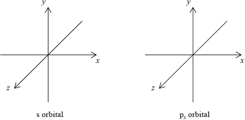
(ii) Cobalt is a transition metal. One common ion of cobalt is \({\text{C}}{{\text{o}}^{3 + }}\). Draw the orbital diagram (using the arrow-in-box notation) for the \({\text{C}}{{\text{o}}^{3 + }}\) ion.

(iii) State the other most common ion of cobalt.
(iv) Explain why the complex \({\text{[Co(N}}{{\text{H}}_{\text{3}}}{{\text{)}}_{\text{6}}}{\text{]C}}{{\text{l}}_{\text{3}}}\) is coloured.
Markscheme
symmetrical shape of s orbital and dumbbell-shaped p orbital with electron density along x-axis;

(ii) 
Allow full arrows instead of half-arrows for example \( \uparrow \downarrow \).
Do not allow arrows with the same spin for example \( \uparrow \uparrow \) or \( \downarrow \downarrow \) in the same orbital.
Do not allow an orbital diagram with a \(4{s^1}3{d^5}\) configuration.
(iii) \({\text{C}}{{\text{o}}^{2 + }}\);
Accept +2, 2+, cobalt(II), II.
(iv) partially filled/incomplete d subshell/sub-level/orbitals;
d orbitals split (into two sets of different energies);
(colour due to) electron transition between (split) d orbitals / d to d transitions / frequencies of visible light absorbed by electrons moving from lower to higher d levels ;
colour due to remaining frequencies / complementary colour seen;
Allow wavelength as well as frequency.
Examiners report
In part (iii), a common mistake involved candidates drawing the lobe of electron density around the y or z axes for the \({{\text{p}}_x}\) orbital. Some candidates drew three dumbells for the s-orbital. Other candidates incorrectly drew hybrid orbitals.
The orbital diagram in (ii) also proved to be quite a good discriminating question. Many candidates failed to realise that the electrons are removed from the 4s level before the 3d for a first-row transition metal ion. In addition, a significant number of candidates showed poor understanding of Hund‟s Rule of Maximum Multiplicity which states that when degenerate orbitals are available, electrons fill the orbitals singly before filling them in pairs. Hence, in many cases incorrect representations were seen for the 3d which involved three pairs of electrons of opposite spin being inserted in three 3d orbitals. Most candidates stated the \({\text{C}}{{\text{o}}^{2 + }}\) ion, though a common incorrect answer was \({\text{C}}{{\text{o}}^{4 + }}\). Part (iv) involved candidates having to explain why the complex \({\text{[Co(N}}{{\text{H}}_{\text{3}}}{{\text{)}}_{\text{6}}}{\text{]C}}{{\text{l}}_{\text{3}}}\) is coloured. This question was asked a number of times in previous examinations and previously was typically really very poorly answered. In N12, the explanations certainly were better though some candidates mixed up the principles of the line emission spectrum of hydrogen with the d to d transitions involved in the explanation of colour pertaining to a transition metal complex.
Two chemistry students wished to determine the enthalpy of hydration of anhydrous magnesium sulfate. They measured the initial and the highest temperature reached when anhydrous magnesium sulfate, \({\text{MgS}}{{\text{O}}_{\text{4}}}{\text{(s)}}\), was dissolved in water. They presented their results in the table below.

The students repeated the experiment using 6.16 g of solid hydrated magnesium sulfate, \({\text{MgS}}{{\text{O}}_{\text{4}}} \bullet {\text{7}}{{\text{H}}_{\text{2}}}{\text{O(s)}}\), and \({\text{50.0 c}}{{\text{m}}^{\text{3}}}\) of water. They found the enthalpy change, \(\Delta {H_2}\) , to be \( + {\text{18 kJ}}\,{\text{mo}}{{\text{l}}^{ - 1}}\).
The enthalpy of hydration of solid anhydrous magnesium sulfate is difficult to determine experimentally, but can be determined using the diagram below.

(i) Calculate the amount, in mol, of anhydrous magnesium sulfate.
(ii) Calculate the enthalpy change, \(\Delta {H_1}\), for anhydrous magnesium sulfate dissolving in water, in \({\text{kJ}}\,{\text{mo}}{{\text{l}}^{ - 1}}\). State your answer to the correct number of significant figures.
(i) Determine the enthalpy change, \(\Delta H\), in \({\text{kJ}}\,{\text{mo}}{{\text{l}}^{ - 1}}\), for the hydration of solid anhydrous magnesium sulfate, \({\text{MgS}}{{\text{O}}_{\text{4}}}\).
(ii) The literature value for the enthalpy of hydration of anhydrous magnesium sulfate is \( - 103{\text{ kJ}}\,{\text{mo}}{{\text{l}}^{ - 1}}\). Calculate the percentage difference between the literature value and the value determined from experimental results, giving your answer to one decimal place. (If you did not obtain an answer for the experimental value in (b)(i) then use the value of \( - 100{\text{ kJ}}\,{\text{mo}}{{\text{l}}^{ - 1}}\), but this is not the correct value.)
Another group of students experimentally determined an enthalpy of hydration of \( - 95{\text{ kJ}}\,{\text{mo}}{{\text{l}}^{ - 1}}\). Outline two reasons which may explain the variation between the experimental and literature values.
Magnesium sulfate is one of the products formed when acid rain reacts with dolomitic limestone. This limestone is a mixture of magnesium carbonate and calcium carbonate.
(i) State the equation for the reaction of sulfuric acid with magnesium carbonate.
(ii) Deduce the Lewis (electron dot) structure of the carbonate ion, giving the shape and the oxygen-carbon-oxygen bond angle.
Lewis (electron dot) structure:
Shape:
Bond angle:
(iii) There are three possible Lewis structures that can be drawn for the carbonate ion, which lead to a resonance structure. Explain, with reference to the electrons, why all carbon-oxygen bonds have the same length.
(iv) Deduce the hybridization of the carbon atom in the carbonate ion.
Markscheme
(i) \(n{\text{(MgS}}{{\text{O}}_4}{\text{)}} = \left( {\frac{{3.01}}{{120.37}} = } \right)0.0250{\text{ (mol)}}\);
(ii) energy released \( = 50.0 \times 4.18 \times 9.7 \times 2027{\text{ (J)}}/2.027{\text{ (kJ)}}\);
\(\Delta {H_1} = - 81{\text{ (kJ}}\,{\text{mo}}{{\text{l}}^{ - 1}}{\text{)}}\);
Award [2] for correct answer.
Award [2] if 53.01 is used giving an answer of –86 (kJ mol–1).
Award [1 max] for +81/81/+86/86 (kJ mol−1).
Award [1 max] for –81000/–86000 if units are stated as J mol−1.
Allow answers to 3 significant figures.
(i) \(\Delta H{\text{ (}} = \Delta {H_1} - \Delta {H_2}{\text{)}} = - 99{\text{ (kJ}}\,{\text{mo}}{{\text{l}}^{ - 1}}{\text{)}}\);
Award [1] if –86 is used giving an answer of –104 (kJ mol–1).
(ii) \(\frac{{(103 - 99)}}{{103}} \times 100 = 3.9\% \);
Accept answer of 2.9% if –100 used but only if a value for (b)(i) is not present.
Award [1] if –104 is used giving an answer of 1.0% .
Accept correct answers which are not to 1 decimal place.
\({\text{MgS}}{{\text{O}}_{\text{4}}}\) not completely anhydrous / OWTTE;
\({\text{MgS}}{{\text{O}}_{\text{4}}}\) is impure;
heat loss to the atmosphere/surroundings;
specific heat capacity of solution is taken as that of pure water;
experiment was done once only so it is not scientific;
density of solution is taken to be \({\text{1 g}}\,{\text{c}}{{\text{m}}^{ - 3}}\);
mass of \({\text{7}}{{\text{H}}_2}{\text{O}}\) ignored in calculation;
uncertainty of thermometer is high so temperature change is unreliable;
literature values determined under standard conditions, but this experiment is not;
all solid not dissolved;
(i) \({{\text{H}}_2}{\text{S}}{{\text{O}}_4}{\text{(aq)}} + {\text{MgC}}{{\text{O}}_3}{\text{(s)}} \to {\text{MgS}}{{\text{O}}_4}{\text{(aq)}} + {\text{C}}{{\text{O}}_2}{\text{(g)}} + {{\text{H}}_2}{\text{O(l)}}\);
Ignore state symbols.
Do not accept H2CO3.
(ii) 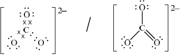 ;
Accept crosses, lines or dots as electron pairs.
Accept any correct resonance structure.
Award [0] if structure is drawn without brackets and charge.
Award [0] if lone pairs not shown on O atoms.
shape: trigonal/triangular planar;
bond angle: 120° ;
Accept answers trigonal/triangular planar and 120° if M1 incorrect, but no other answers should be given credit.
(iii) (pi/\(\pi \)) electrons are delocalized/spread over more than two nuclei / charge spread (equally) over all three oxygens;
(iv) \({\text{s}}{{\text{p}}^{\text{2}}}\);
Examiners report
The use of 3.01 for the mass in the expression in \(Q = mc\Delta T\) was common, candidates were able to score in the subsequent parts and many did so, although there was often a confusion between the value Q and the required answer for \(\Delta H\). In part c) most candidates understood the error due to heat loss, but few scored the second mark, usually quoting an answer involving an error generally that was far too vague. The inability to construct a balanced equation was disappointing, many lost credit for giving \({{\text{H}}_{\text{2}}}{\text{C}}{{\text{O}}_{\text{3}}}\) as a product. The score for the structure of the carbonate ion was often lost due to the failure to show that a charge is present on the ion, however, the shape and bond angle were known well, as was delocalisation and hybridisation.
The use of 3.01 for the mass in the expression in \(Q = mc\Delta T\) was common, candidates were able to score in the subsequent parts and many did so, although there was often a confusion between the value Q and the required answer for \(\Delta H\). In part c) most candidates understood the error due to heat loss, but few scored the second mark, usually quoting an answer involving an error generally that was far too vague. The inability to construct a balanced equation was disappointing, many lost credit for giving \({{\text{H}}_{\text{2}}}{\text{C}}{{\text{O}}_{\text{3}}}\) as a product. The score for the structure of the carbonate ion was often lost due to the failure to show that a charge is present on the ion, however, the shape and bond angle were known well, as was delocalisation and hybridisation.
The use of 3.01 for the mass in the expression in \(Q = mc\Delta T\) was common, candidates were able to score in the subsequent parts and many did so, although there was often a confusion between the value Q and the required answer for \(\Delta H\). In part c) most candidates understood the error due to heat loss, but few scored the second mark, usually quoting an answer involving an error generally that was far too vague. The inability to construct a balanced equation was disappointing, many lost credit for giving \({{\text{H}}_{\text{2}}}{\text{C}}{{\text{O}}_{\text{3}}}\) as a product. The score for the structure of the carbonate ion was often lost due to the failure to show that a charge is present on the ion, however, the shape and bond angle were known well, as was delocalisation and hybridisation.
The use of 3.01 for the mass in the expression in \(Q = mc\Delta T\) was common, candidates were able to score in the subsequent parts and many did so, although there was often a confusion between the value Q and the required answer for \(\Delta H\). In part c) most candidates understood the error due to heat loss, but few scored the second mark, usually quoting an answer involving an error generally that was far too vague. The inability to construct a balanced equation was disappointing, many lost credit for giving \({{\text{H}}_{\text{2}}}{\text{C}}{{\text{O}}_{\text{3}}}\) as a product. The score for the structure of the carbonate ion was often lost due to the failure to show that a charge is present on the ion, however, the shape and bond angle were known well, as was delocalisation and hybridisation.
Calcium nitrate contains both covalent and ionic bonds.
Nitrogen also forms oxides, which are atmospheric pollutants.
State the formula of both ions present and the nature of the force between these ions.
Ions:
Nature of force:
State which atoms are covalently bonded.
Bonding in the nitrate ion involves electron delocalization. Explain the meaning of electron delocalization and how it affects the ion.
Outline the source of these oxides.
State one product formed from their reaction with water.
State one environmental problem caused by these atmospheric pollutants.
Markscheme
\({\text{C}}{{\text{a}}^{2 + }}\) and \({\text{NO}}_3^ - \);
electrostatic (attraction);
Do not accept ionic.
nitrogen/N and oxygen/O;
Do not accept nitrate/NO3–.
Accept atoms in nitrate/NO3–
pi/\(\underline \pi \)-electrons shared by more than two atoms/nuclei / a pi/\(\underline \pi \)-bond/overlapping p-orbitals that extends over more than two atoms/nuclei;
all (N–O) bonds equal length/strength/bond-order / charge on all oxygen/O atoms equal / increases stability/lowers PE (of the ion);
Accept a diagram that clearly shows one or both points.
produced by high temperature combustion;
Accept combustion/jet/car engines / car exhaust/emissions / lightning / action of bacteria/microorganisms.
Do not accept combustion/burning, cars, planes, jets, factories, power plants etc.
nitric acid/\({\text{HN}}{{\text{O}}_{\text{3}}}\) / nitrous acid/nitric(III) acid/\({\text{HN}}{{\text{O}}_{\text{2}}}\);
Accept “form acidic solutions / acid rain”.
acid deposition/rain / respiratory problems / corrosion problems / decomposition of ozone layer / photochemical smog / acidification/pollution of lakes / damage to plants/ trees;
Accept “acid rain” in either part (ii) or part (iii) but not both.
Do not accept air pollution.
Examiners report
It was distressing how many students taking HL Chemistry (over 50%?) do not know the formula of the nitrate ion! Many students also gave the type of bonding present between the ions, rather than the nature of the force asked for, though almost all could correctly identify the covalently bonded atoms. Hardly any could explain delocalization in terms of the overlap of p-orbitals, or the extension of a \(\pi \)-bond, over more than two atoms, though its effect on structure and stability were better known. In part (c), which tested Aim 8 of the syllabus, most managed to gain some of the marks available for atmospheric pollution from oxides of nitrogen. Inevitably, owing to some overlap in assessment statements these concepts would be more familiar to those studying the Environmental Chemistry option, but undoubtedly studying other options assists in other areas, such as organic chemistry.
It was distressing how many students taking HL Chemistry (over 50%?) do not know the formula of the nitrate ion! Many students also gave the type of bonding present between the ions, rather than the nature of the force asked for, though almost all could correctly identify the covalently bonded atoms. Hardly any could explain delocalization in terms of the overlap of p-orbitals, or the extension of a \(\pi \)-bond, over more than two atoms, though its effect on structure and stability were better known. In part (c), which tested Aim 8 of the syllabus, most managed to gain some of the marks available for atmospheric pollution from oxides of nitrogen. Inevitably, owing to some overlap in assessment statements these concepts would be more familiar to those studying the Environmental Chemistry option, but undoubtedly studying other options assists in other areas, such as organic chemistry.
It was distressing how many students taking HL Chemistry (over 50%?) do not know the formula of the nitrate ion! Many students also gave the type of bonding present between the ions, rather than the nature of the force asked for, though almost all could correctly identify the covalently bonded atoms. Hardly any could explain delocalization in terms of the overlap of p-orbitals, or the extension of a \(\pi \)-bond, over more than two atoms, though its effect on structure and stability were better known. In part (c), which tested Aim 8 of the syllabus, most managed to gain some of the marks available for atmospheric pollution from oxides of nitrogen. Inevitably, owing to some overlap in assessment statements these concepts would be more familiar to those studying the Environmental Chemistry option, but undoubtedly studying other options assists in other areas, such as organic chemistry.
It was distressing how many students taking HL Chemistry (over 50%?) do not know the formula of the nitrate ion! Many students also gave the type of bonding present between the ions, rather than the nature of the force asked for, though almost all could correctly identify the covalently bonded atoms. Hardly any could explain delocalization in terms of the overlap of p-orbitals, or the extension of a \(\pi \)-bond, over more than two atoms, though its effect on structure and stability were better known. In part (c), which tested Aim 8 of the syllabus, most managed to gain some of the marks available for atmospheric pollution from oxides of nitrogen. Inevitably, owing to some overlap in assessment statements these concepts would be more familiar to those studying the Environmental Chemistry option, but undoubtedly studying other options assists in other areas, such as organic chemistry.
It was distressing how many students taking HL Chemistry (over 50%?) do not know the formula of the nitrate ion! Many students also gave the type of bonding present between the ions, rather than the nature of the force asked for, though almost all could correctly identify the covalently bonded atoms. Hardly any could explain delocalization in terms of the overlap of p-orbitals, or the extension of a \(\pi \)-bond, over more than two atoms, though its effect on structure and stability were better known. In part (c), which tested Aim 8 of the syllabus, most managed to gain some of the marks available for atmospheric pollution from oxides of nitrogen. Inevitably, owing to some overlap in assessment statements these concepts would be more familiar to those studying the Environmental Chemistry option, but undoubtedly studying other options assists in other areas, such as organic chemistry.
It was distressing how many students taking HL Chemistry (over 50%?) do not know the formula of the nitrate ion! Many students also gave the type of bonding present between the ions, rather than the nature of the force asked for, though almost all could correctly identify the covalently bonded atoms. Hardly any could explain delocalization in terms of the overlap of p-orbitals, or the extension of a \(\pi \)-bond, over more than two atoms, though its effect on structure and stability were better known. In part (c), which tested Aim 8 of the syllabus, most managed to gain some of the marks available for atmospheric pollution from oxides of nitrogen. Inevitably, owing to some overlap in assessment statements these concepts would be more familiar to those studying the Environmental Chemistry option, but undoubtedly studying other options assists in other areas, such as organic chemistry.
Magnesium, a reactive metal found in many common minerals, is also an essential nutrient for both plants and animals.
Successive ionization energies of magnesium are given in the table below.

Magnesium metal is mainly used as a component in lightweight alloys, particularly in combination with aluminium and titanium.
Magnesium is usually produced by the electrolysis of molten magnesium chloride.
Define the term first ionization energy.
(i) Explain why the second ionization energy is greater than the first ionization energy.
(ii) Explain why the third ionization energy is much greater than the second ionization energy.
Although magnesium is usually found as \({\text{M}}{{\text{g}}^{2 + }}\) in its compounds, it is possible to use the Born-Haber cycle to investigate the possibility of \({\text{M}}{{\text{g}}^ + }\) being able to form stable compounds.
Use the ionization energy data from part (b), along with the other data provided below, to determine the enthalpy change of formation of MgCl(s). Assume that, because \({\text{M}}{{\text{g}}^ + }\) would be similar in size to \({\text{N}}{{\text{a}}^ + }\), MgCl would have a similar lattice enthalpy to NaCl.
Enthalpy of atomization of Mg \( + 146{\text{ kJ}}\,{\text{mo}}{{\text{l}}^{ - 1}}\)
Bond enthalpy in \({\text{C}}{{\text{l}}_{\text{2}}}\) \( + 243{\text{ kJ}}\,{\text{mo}}{{\text{l}}^{ - 1}}\)
Electron affinity of Cl \( + 349{\text{ kJ}}\,{\text{mo}}{{\text{l}}^{ - 1}}\)
Lattice enthalpy of NaCl \( + 790{\text{ kJ}}\,{\text{mo}}{{\text{l}}^{ - 1}}\)
Consider the lattice enthalpies of \({\text{Mg}}{{\text{F}}_{\text{2}}}\), \({\text{MgC}}{{\text{l}}_2}\) and \({\text{CaC}}{{\text{l}}_{\text{2}}}\). List these from the most endothermic to the least endothermic and explain your order.
\({\text{Most endothermic}} \to {\text{Least endothermic}}\)
Magnesium hydroxide, \({\text{Mg(OH}}{{\text{)}}_{\text{2}}}\), is only sparingly soluble in water and the equilibrium below exists when excess solid is in contact with a saturated solution.
\[{\text{Mg(OH}}{{\text{)}}_2}{\text{(s)}} \rightleftharpoons {\text{M}}{{\text{g}}^{2 + }}{\text{(aq)}} + {\text{2O}}{{\text{H}}^ - }{\text{(aq)}}\]
Outline how the solubility of magnesium hydroxide will vary with pH.
(i) Describe the bonding present in magnesium metal.
(ii) Suggest why magnesium is harder than sodium.
(iii) Outline why alloys are generally less malleable than their component metals.
(i) Draw a labelled diagram of a suitable apparatus for the electrolysis.
(ii) State equations for the reactions that take place at the electrodes.
Negative electrode (cathode) reaction:
Positive electrode (anode) reaction:
(iii) When dilute aqueous magnesium chloride is used as the electrolyte, the reactions at both electrodes are different. State equations for the reactions that occur in aqueous solution.
Negative electrode (cathode) reaction:
Positive electrode (anode) reaction:
(iv) Outline why magnesium metal is not produced in the electrolysis of aqueous magnesium chloride.
Markscheme
minimum energy required to remove one electron / energy required to remove most loosely bound/outermost electron;
from gaseous/isolated atom;
Accept “gaseous state”.
More extensive definitions involving one mole may be given.
(i) electrons lost in same orbital/valence shell;
(second) electron/electron (being lost from \({\text{M}}{{\text{g}}^ + }\) is) closer to the nucleus;
(second) electron/electron (being lost from \({\text{M}}{{\text{g}}^ + }\)) not subject to e-e repulsion from others in same level;
Apply OWTTE for all marking points.
Do not accept “less electrons to share the charge” or answers employing this concept.
(ii) electron in lower energy level / more stable electron shell;
electron closer to nucleus;
less shielding by complete inner shells / increase in effective nuclear charge;
Apply OWTTE for all marking points.
\(\Delta {H_{{\text{at}}}}{\text{(Cl)}} = \frac{1}{2} \times 243{\text{ (kJ}}\,{\text{mo}}{{\text{l}}^{ - 1}}{\text{)}}\);
Correct calculation of atomization enthalpy of Cl.
\(\Delta {H_{\text{f}}} = + 146 + \frac{1}{2}243 + 738 + ( - 349) + ( - 790)\);
Correct sign and magnitude of all terms.
\( = - {\text{134 (kJ}}\,{\text{mo}}{{\text{l}}^{ - 1}}{\text{)}}\);
Award [3] for correct final answer.
Final mark involves correct computation of equation the student has produced.
Award [2] for –12 (bond enthalpy of Cl not halved) or +134 (signs wrong).
Award [1] for +12 (bond enthalpy of Cl not halved and signs wrong).
\({\text{Mg}}{{\text{F}}_2}\) –\({\text{MgC}}{{\text{l}}_2}\) –\({\text{CaC}}{{\text{l}}_2}\);
\({{\text{F}}^ - }\) smaller (ionic radius) than \({\text{C}}{{\text{l}}^ - }\) / \({\text{C}}{{\text{l}}^ - }\) larger (ionic radius) than \({{\text{F}}^ - }\);
\({\text{M}}{{\text{g}}^{2 + }}\) smaller (ionic radius) than \({\text{C}}{{\text{a}}^{2 + }}\) / \({\text{C}}{{\text{a}}^{2 + }}\) larger (ionic radius) than \({\text{M}}{{\text{g}}^{2 + }}\);
Accept use of atomic radius rather than ionic radius.
more soluble at low pH / less soluble at high pH;
higher pH / \({\text{O}}{{\text{H}}^ - }\) will shift the equilibrium to the left / lower pH / \({{\text{H}}^ + }\) will (react with \({\text{O}}{{\text{H}}^ - }\) and) shift the equilibrium to the right;
(i) lattice/layers/framework of cations/magnesium ions/\({\text{M}}{{\text{g}}^{2 + }}\);
surrounded by delocalized electrons / in a sea/flux of delocalized electrons;
Accept “mobile” instead of “delocalized”.
(ii) Mg has more delocalized electrons (than Na);
Accept “Mg has more valence electrons than Na” / “Mg is Mg2+ but Na is only Na+”.
(iii) layers of ions/atoms/particles cannot slide over each other so easily (as different sized ions/atoms/particles) / OWTTE;
(i) 
Diagram:
two electrodes connected to a power pack/battery and immersed in an electrolyte;
Do not award mark if salt bridge included in diagram.
Labelling:
anode/positive electrode, cathode/negative electrode, molten magnesium chloride/MgCl2 (l)/electrolyte correctly labelled;
Check candidates know which end of a battery symbol is which charge.
(ii) Negative electrode (cathode): \({\text{M}}{{\text{g}}^{2 + }}{\text{(l)}} + {\text{2}}{{\text{e}}^ - } \to {\text{Mg (s)}}\);
Positive electrode (anode): \[{\text{2C}}{{\text{l}}^ - }{\text{(l)}} \to {\text{C}}{{\text{l}}_2}{\text{(g)}} + {\text{2}}{{\text{e}}^ - }\];
Accept \(C{l^ - }(l) \to \frac{1}{2}C{l_2}(g) + {e^ - }\).
Ignore state symbols.
Allow e instead of e–.
If both correct equations are given for the wrong electrodes award [1 max].
(iii) Negative electrode (cathode):
\({\text{2}}{{\text{H}}_2}{\text{O(l)}} + {\text{2}}{{\text{e}}^ - } \to {{\text{H}}_2}{\text{(g)}} + {\text{2O}}{{\text{H}}^ - }{\text{(aq)}}/{\text{2}}{{\text{H}}^ + }{\text{(aq)}} + {\text{2}}{{\text{e}}^ - } \to {{\text{H}}_2}{\text{(g)}}\);
Accept \(4{H_2}O(l) + 4{e^ - } \to 2{H_2}(g) + 4O{H^ - }(aq) / 4{H^ + }(aq) + 4{e^ - } \to 2{H_2}(g)\) / \({H_2}O(l) + {e^ - } \to \frac{1}{2}{H_2}(g) + O{H^ - }(aq)/{H^ + }(aq) + {e^ - } \to \frac{1}{2}{H_2}(g)\).
Positive electrode (anode):
\({\text{2}}{{\text{H}}_2}{\text{O(l)}} \to {{\text{O}}_2}{\text{(g)}} + {\text{4}}{{\text{H}}^ + }{\text{(aq)}} + {\text{4}}{{\text{e}}^ - }/{\text{4O}}{{\text{H}}^ - }{\text{(aq)}} \to {{\text{O}}_2}{\text{(g)}} + {\text{2}}{{\text{H}}_2}{\text{O(l)}} + {\text{4}}{{\text{e}}^ - }\);
Accept \({H_2}O(l) \to \frac{1}{2}{O_2}(g) + 2{H^ + }(aq) + 2{e^ - } / 2O{H^ - }(aq) \to \frac{1}{2}{O_2}(g) + {H_2}O(l) + 2{e^ - }\).
State symbols not required.
Allow e instead of e–.
If both correct equations are given for the wrong electrodes award [1 max].
(iv) water/hydrogen ions more easily reduced/better oxidizing agents/have a more positive \({E^\Theta }\) (than magnesium ions);
Accept converse statements for magnesium ions.
Accept “magnesium is very reactive/high in reactivity series” / OWTTE.
Examiners report
This was the most popular of the Section B questions, which was surprising because it was often not well answered. Most students were aware of the change involved in ionization, some realised this relates to the most easily lost electron, some that it refers to gas phase changes and a few both. Explanations of the changes in the values of successive ionization energies in terms of the attraction of the nucleus and the repulsion from other electrons were generally weak, however candidates quite often recognised that the third electron lost had to come from a more stable electron energy level. Very few were able to correctly sum the enthalpy terms involved in the Born-Haber cycle, in addition candidates rarely halved the bond enthalpy of chlorine and a significant number appeared not to realise the question referred to MgCl rather than \({\text{MgC}}{{\text{l}}_2}\). There were some G2 comments that space should have been left for students to draw a cycle, but this would have implied that such a drawing was required, hence it is better to train students to use additional paper for any background support they may require. Quite a lot of students correctly deduced the order of lattice enthalpy of the group (II) halides, and a number correctly explained this in terms of ionic radii, though many incorrectly invoked electronegativities. Many students could correctly explain the effect of pH on the solubility of \({\text{Mg(OH}}{{\text{)}}_{\text{2}}}\), though a significant number attempted to answer the opposite question; how pH would depend on the concentration of dissolved \({\text{Mg(OH}}{{\text{)}}_{\text{2}}}\)! It was surprising how few students could correctly describe metallic bonding, how it is affected by the number of delocalized electrons per cation and the way it leads to malleability. Alloys are not specifically mentioned in the syllabus but the mark scheme gave credit for answers that indicated the student was aware that malleability is associated with layers of metal atoms/cations sliding over each other. Most students were able to draw appropriately labelled diagrams of electrolysis apparatus, though sometimes the labelling of the polarity of the electrodes did not correspond to the polarity of the battery symbol drawn. Quite a few candidates could quote equations for the reactions occurring the electrodes in both the liquid and aqueous state; both seemed to be equally well answered which was perhaps a little surprisingly. Many could also give good explanations as to why electrolysis of the aqueous solution did not produce magnesium metal, though confusions in terminology (such as hydrogen rather than hydrogen ions being reduced) were not uncommon.
This was the most popular of the Section B questions, which was surprising because it was often not well answered. Most students were aware of the change involved in ionization, some realised this relates to the most easily lost electron, some that it refers to gas phase changes and a few both. Explanations of the changes in the values of successive ionization energies in terms of the attraction of the nucleus and the repulsion from other electrons were generally weak, however candidates quite often recognised that the third electron lost had to come from a more stable electron energy level. Very few were able to correctly sum the enthalpy terms involved in the Born-Haber cycle, in addition candidates rarely halved the bond enthalpy of chlorine and a significant number appeared not to realise the question referred to MgCl rather than \({\text{MgC}}{{\text{l}}_2}\). There were some G2 comments that space should have been left for students to draw a cycle, but this would have implied that such a drawing was required, hence it is better to train students to use additional paper for any background support they may require. Quite a lot of students correctly deduced the order of lattice enthalpy of the group (II) halides, and a number correctly explained this in terms of ionic radii, though many incorrectly invoked electronegativities. Many students could correctly explain the effect of pH on the solubility of \({\text{Mg(OH}}{{\text{)}}_{\text{2}}}\), though a significant number attempted to answer the opposite question; how pH would depend on the concentration of dissolved \({\text{Mg(OH}}{{\text{)}}_{\text{2}}}\)! It was surprising how few students could correctly describe metallic bonding, how it is affected by the number of delocalized electrons per cation and the way it leads to malleability. Alloys are not specifically mentioned in the syllabus but the mark scheme gave credit for answers that indicated the student was aware that malleability is associated with layers of metal atoms/cations sliding over each other. Most students were able to draw appropriately labelled diagrams of electrolysis apparatus, though sometimes the labelling of the polarity of the electrodes did not correspond to the polarity of the battery symbol drawn. Quite a few candidates could quote equations for the reactions occurring the electrodes in both the liquid and aqueous state; both seemed to be equally well answered which was perhaps a little surprisingly. Many could also give good explanations as to why electrolysis of the aqueous solution did not produce magnesium metal, though confusions in terminology (such as hydrogen rather than hydrogen ions being reduced) were not uncommon.
This was the most popular of the Section B questions, which was surprising because it was often not well answered. Most students were aware of the change involved in ionization, some realised this relates to the most easily lost electron, some that it refers to gas phase changes and a few both. Explanations of the changes in the values of successive ionization energies in terms of the attraction of the nucleus and the repulsion from other electrons were generally weak, however candidates quite often recognised that the third electron lost had to come from a more stable electron energy level. Very few were able to correctly sum the enthalpy terms involved in the Born-Haber cycle, in addition candidates rarely halved the bond enthalpy of chlorine and a significant number appeared not to realise the question referred to MgCl rather than \({\text{MgC}}{{\text{l}}_2}\). There were some G2 comments that space should have been left for students to draw a cycle, but this would have implied that such a drawing was required, hence it is better to train students to use additional paper for any background support they may require. Quite a lot of students correctly deduced the order of lattice enthalpy of the group (II) halides, and a number correctly explained this in terms of ionic radii, though many incorrectly invoked electronegativities. Many students could correctly explain the effect of pH on the solubility of \({\text{Mg(OH}}{{\text{)}}_{\text{2}}}\), though a significant number attempted to answer the opposite question; how pH would depend on the concentration of dissolved \({\text{Mg(OH}}{{\text{)}}_{\text{2}}}\)! It was surprising how few students could correctly describe metallic bonding, how it is affected by the number of delocalized electrons per cation and the way it leads to malleability. Alloys are not specifically mentioned in the syllabus but the mark scheme gave credit for answers that indicated the student was aware that malleability is associated with layers of metal atoms/cations sliding over each other. Most students were able to draw appropriately labelled diagrams of electrolysis apparatus, though sometimes the labelling of the polarity of the electrodes did not correspond to the polarity of the battery symbol drawn. Quite a few candidates could quote equations for the reactions occurring the electrodes in both the liquid and aqueous state; both seemed to be equally well answered which was perhaps a little surprisingly. Many could also give good explanations as to why electrolysis of the aqueous solution did not produce magnesium metal, though confusions in terminology (such as hydrogen rather than hydrogen ions being reduced) were not uncommon.
This was the most popular of the Section B questions, which was surprising because it was often not well answered. Most students were aware of the change involved in ionization, some realised this relates to the most easily lost electron, some that it refers to gas phase changes and a few both. Explanations of the changes in the values of successive ionization energies in terms of the attraction of the nucleus and the repulsion from other electrons were generally weak, however candidates quite often recognised that the third electron lost had to come from a more stable electron energy level. Very few were able to correctly sum the enthalpy terms involved in the Born-Haber cycle, in addition candidates rarely halved the bond enthalpy of chlorine and a significant number appeared not to realise the question referred to MgCl rather than \({\text{MgC}}{{\text{l}}_2}\). There were some G2 comments that space should have been left for students to draw a cycle, but this would have implied that such a drawing was required, hence it is better to train students to use additional paper for any background support they may require. Quite a lot of students correctly deduced the order of lattice enthalpy of the group (II) halides, and a number correctly explained this in terms of ionic radii, though many incorrectly invoked electronegativities. Many students could correctly explain the effect of pH on the solubility of \({\text{Mg(OH}}{{\text{)}}_{\text{2}}}\), though a significant number attempted to answer the opposite question; how pH would depend on the concentration of dissolved \({\text{Mg(OH}}{{\text{)}}_{\text{2}}}\)! It was surprising how few students could correctly describe metallic bonding, how it is affected by the number of delocalized electrons per cation and the way it leads to malleability. Alloys are not specifically mentioned in the syllabus but the mark scheme gave credit for answers that indicated the student was aware that malleability is associated with layers of metal atoms/cations sliding over each other. Most students were able to draw appropriately labelled diagrams of electrolysis apparatus, though sometimes the labelling of the polarity of the electrodes did not correspond to the polarity of the battery symbol drawn. Quite a few candidates could quote equations for the reactions occurring the electrodes in both the liquid and aqueous state; both seemed to be equally well answered which was perhaps a little surprisingly. Many could also give good explanations as to why electrolysis of the aqueous solution did not produce magnesium metal, though confusions in terminology (such as hydrogen rather than hydrogen ions being reduced) were not uncommon.
This was the most popular of the Section B questions, which was surprising because it was often not well answered. Most students were aware of the change involved in ionization, some realised this relates to the most easily lost electron, some that it refers to gas phase changes and a few both. Explanations of the changes in the values of successive ionization energies in terms of the attraction of the nucleus and the repulsion from other electrons were generally weak, however candidates quite often recognised that the third electron lost had to come from a more stable electron energy level. Very few were able to correctly sum the enthalpy terms involved in the Born-Haber cycle, in addition candidates rarely halved the bond enthalpy of chlorine and a significant number appeared not to realise the question referred to MgCl rather than \({\text{MgC}}{{\text{l}}_2}\). There were some G2 comments that space should have been left for students to draw a cycle, but this would have implied that such a drawing was required, hence it is better to train students to use additional paper for any background support they may require. Quite a lot of students correctly deduced the order of lattice enthalpy of the group (II) halides, and a number correctly explained this in terms of ionic radii, though many incorrectly invoked electronegativities. Many students could correctly explain the effect of pH on the solubility of \({\text{Mg(OH}}{{\text{)}}_{\text{2}}}\), though a significant number attempted to answer the opposite question; how pH would depend on the concentration of dissolved \({\text{Mg(OH}}{{\text{)}}_{\text{2}}}\)! It was surprising how few students could correctly describe metallic bonding, how it is affected by the number of delocalized electrons per cation and the way it leads to malleability. Alloys are not specifically mentioned in the syllabus but the mark scheme gave credit for answers that indicated the student was aware that malleability is associated with layers of metal atoms/cations sliding over each other. Most students were able to draw appropriately labelled diagrams of electrolysis apparatus, though sometimes the labelling of the polarity of the electrodes did not correspond to the polarity of the battery symbol drawn. Quite a few candidates could quote equations for the reactions occurring the electrodes in both the liquid and aqueous state; both seemed to be equally well answered which was perhaps a little surprisingly. Many could also give good explanations as to why electrolysis of the aqueous solution did not produce magnesium metal, though confusions in terminology (such as hydrogen rather than hydrogen ions being reduced) were not uncommon.
This was the most popular of the Section B questions, which was surprising because it was often not well answered. Most students were aware of the change involved in ionization, some realised this relates to the most easily lost electron, some that it refers to gas phase changes and a few both. Explanations of the changes in the values of successive ionization energies in terms of the attraction of the nucleus and the repulsion from other electrons were generally weak, however candidates quite often recognised that the third electron lost had to come from a more stable electron energy level. Very few were able to correctly sum the enthalpy terms involved in the Born-Haber cycle, in addition candidates rarely halved the bond enthalpy of chlorine and a significant number appeared not to realise the question referred to MgCl rather than \({\text{MgC}}{{\text{l}}_2}\). There were some G2 comments that space should have been left for students to draw a cycle, but this would have implied that such a drawing was required, hence it is better to train students to use additional paper for any background support they may require. Quite a lot of students correctly deduced the order of lattice enthalpy of the group (II) halides, and a number correctly explained this in terms of ionic radii, though many incorrectly invoked electronegativities. Many students could correctly explain the effect of pH on the solubility of \({\text{Mg(OH}}{{\text{)}}_{\text{2}}}\), though a significant number attempted to answer the opposite question; how pH would depend on the concentration of dissolved \({\text{Mg(OH}}{{\text{)}}_{\text{2}}}\)! It was surprising how few students could correctly describe metallic bonding, how it is affected by the number of delocalized electrons per cation and the way it leads to malleability. Alloys are not specifically mentioned in the syllabus but the mark scheme gave credit for answers that indicated the student was aware that malleability is associated with layers of metal atoms/cations sliding over each other. Most students were able to draw appropriately labelled diagrams of electrolysis apparatus, though sometimes the labelling of the polarity of the electrodes did not correspond to the polarity of the battery symbol drawn. Quite a few candidates could quote equations for the reactions occurring the electrodes in both the liquid and aqueous state; both seemed to be equally well answered which was perhaps a little surprisingly. Many could also give good explanations as to why electrolysis of the aqueous solution did not produce magnesium metal, though confusions in terminology (such as hydrogen rather than hydrogen ions being reduced) were not uncommon.
This was the most popular of the Section B questions, which was surprising because it was often not well answered. Most students were aware of the change involved in ionization, some realised this relates to the most easily lost electron, some that it refers to gas phase changes and a few both. Explanations of the changes in the values of successive ionization energies in terms of the attraction of the nucleus and the repulsion from other electrons were generally weak, however candidates quite often recognised that the third electron lost had to come from a more stable electron energy level. Very few were able to correctly sum the enthalpy terms involved in the Born-Haber cycle, in addition candidates rarely halved the bond enthalpy of chlorine and a significant number appeared not to realise the question referred to MgCl rather than \({\text{MgC}}{{\text{l}}_2}\). There were some G2 comments that space should have been left for students to draw a cycle, but this would have implied that such a drawing was required, hence it is better to train students to use additional paper for any background support they may require. Quite a lot of students correctly deduced the order of lattice enthalpy of the group (II) halides, and a number correctly explained this in terms of ionic radii, though many incorrectly invoked electronegativities. Many students could correctly explain the effect of pH on the solubility of \({\text{Mg(OH}}{{\text{)}}_{\text{2}}}\), though a significant number attempted to answer the opposite question; how pH would depend on the concentration of dissolved \({\text{Mg(OH}}{{\text{)}}_{\text{2}}}\)! It was surprising how few students could correctly describe metallic bonding, how it is affected by the number of delocalized electrons per cation and the way it leads to malleability. Alloys are not specifically mentioned in the syllabus but the mark scheme gave credit for answers that indicated the student was aware that malleability is associated with layers of metal atoms/cations sliding over each other. Most students were able to draw appropriately labelled diagrams of electrolysis apparatus, though sometimes the labelling of the polarity of the electrodes did not correspond to the polarity of the battery symbol drawn. Quite a few candidates could quote equations for the reactions occurring the electrodes in both the liquid and aqueous state; both seemed to be equally well answered which was perhaps a little surprisingly. Many could also give good explanations as to why electrolysis of the aqueous solution did not produce magnesium metal, though confusions in terminology (such as hydrogen rather than hydrogen ions being reduced) were not uncommon.
An equilibrium exists between nitrosyl chloride, NOCl, nitrogen oxide, NO, and chlorine, \({\text{C}}{{\text{l}}_{\text{2}}}\).
\[{\text{2NOCl(g)}} \rightleftharpoons {\text{2NO(g)}} + {\text{C}}{{\text{l}}_2}{\text{(g)}}\]
\({\text{20.0 c}}{{\text{m}}^{\text{3}}}\) of hexane, \({{\text{C}}_{\text{6}}}{{\text{H}}_{{\text{14}}}}\), and \({\text{20.0 c}}{{\text{m}}^{\text{3}}}\) of pentan-1-ol, \({{\text{C}}_{\text{5}}}{{\text{H}}_{{\text{11}}}}{\text{OH}}\), were placed separately into two closed containers at 298 K and allowed to reach equilibrium.
Ammonia is a weak base.
(i) Deduce the equilibrium constant expression for this reaction.
(ii) Explain the effect on the position of equilibrium and the value of \({K_{\text{c}}}\) when pressure is decreased and temperature is kept constant.
(iii) 2.00 mol of NOCl was placed in a \({\text{1.00 d}}{{\text{m}}^{\text{3}}}\) container and allowed to reach equilibrium at 298 K. At equilibrium, 0.200 mol of NO was present. Determine the equilibrium concentrations of NOCl and \({\text{C}}{{\text{l}}_{\text{2}}}\), and hence calculate the value of \({K_{\text{c}}}\) at this temperature.
(iv) The value of \({K_{\text{c}}}\) is \(1.60 \times {10^{ - 5}}\) at 318 K. State and explain whether the forward reaction is exothermic or endothermic.
(i) Compare the two liquids in terms of their boiling points, enthalpies of vaporization and vapour pressures.
(ii) Explain your answer given for part (b)(i).
Calculate the pH of a \({\text{1.50 mol}}\,{\text{d}}{{\text{m}}^{ - 3}}\) solution of ammonia at 298 K to two decimal places, using Table 15 of the Data Booklet.
A buffer solution is made using \({\text{25.0 c}}{{\text{m}}^{\text{3}}}\) of \({\text{0.500 mol}}\,{\text{d}}{{\text{m}}^{ - 3}}\) hydrochloric acid, HCl (aq), and \({\text{20.0 c}}{{\text{m}}^{\text{3}}}\) of \({\text{1.50 mol}}\,{\text{d}}{{\text{m}}^{ - 3}}\) ammonia solution, \({\text{N}}{{\text{H}}_{\text{3}}}{\text{(aq)}}\).
Describe the meaning of the term buffer solution.
Determine the pH of the buffer solution at 298 K.
A \({\text{1.50 mol}}\,{\text{d}}{{\text{m}}^{ - 3}}\) solution of ammonia is added to \({\text{25.0 c}}{{\text{m}}^{\text{3}}}\) of a \({\text{0.500 mol}}\,{\text{d}}{{\text{m}}^{ - 3}}\) hydrochloric acid solution in a titration experiment.
Calculate the total volume of the solution at the equivalence point.
Calculate the pH of the solution at the equivalence point, using Table 15 of the Data Booklet.
Identify a suitable indicator for this titration, using Table 16 of the Data Booklet.
Markscheme
(i) \(({K_{\text{c}}} = )\frac{{{\text{[C}}{{\text{l}}_2}{\text{(g)][NO(g)}}{{\text{]}}^2}}}{{{{{\text{[NOCl(g)]}}}^2}}}\);
Ignore state symbols.
(ii) equilibrium shifts to right as there are more moles (of gas) on product side;
no change to \({K_{\text{c}}}\) as it is a constant at fixed temperature / OWTTE;
(iii) \({\text{[NOCl(g)]}} = 1.80{\text{ (mol}}\,{\text{d}}{{\text{m}}^{ - 3}}{\text{)}}\);
\({\text{[C}}{{\text{l}}_2}{\text{(g)]}} = 0.100{\text{ (mol}}\,{\text{d}}{{\text{m}}^{ - 3}}{\text{)}}\);
\({K_{\text{c}}} = \left( {\frac{{0.100 \times {{(0.200)}^2}}}{{{{(1.80)}^2}}}} \right)1.23 \times {10^{ - 3}}{\text{ (mol}}\,{\text{d}}{{\text{m}}^{ - 3}}{\text{)}}\);
Award [3] for correct final answer.
(iv) exothermic as \({K_{\text{c}}}\) is lower at higher temperature;
(i) hexane has lower boiling point and enthalpy of vaporization than pentan-1-ol / OWTTE;
hexane has higher vapour pressure than pentan-1-ol / OWTTE;
(ii) hexane is non-polar / has only van der Waals’/London/dispersion forces / has weaker intermolecular forces than pentan-1-ol;
pentan-1-ol has hydrogen bonding between molecules;
\({\text{[O}}{{\text{H}}^ - }{\text{]}} = \sqrt {1.50 \times 1.78 \times {{10}^{ - 5}}} = 5.17 \times {10^{ - 3}}{\text{ (mol}}\,{\text{d}}{{\text{m}}^{ - 3}}{\text{)}}\);
\({\text{pH}} = (14 - {\text{pOH}} = 14 - 2.29 = ){\text{ }}11.71\);
Award [2] for correct final answer.
Accept correct answer with more than 2 decimal places.
solution which resists change in pH / changes pH slightly / OWTTE;
when small amounts of acid or base are added;
\({\text{[N}}{{\text{H}}_3}{\text{] = }}\left( {\frac{{(1.50 \times 0.0200) - (0.500 \times 0.0250)}}{{0.0450}} = } \right){\text{ }}0.389{\text{ (mol}}\,{\text{d}}{{\text{m}}^{ - 3}}{\text{)}}\);
\({\text{[NH}}_4^ + {\text{]}} = \left( {\frac{{(0.500 \times 0.0250)}}{{0.0450}} = } \right){\text{ }}0.278{\text{ (mol}}\,{\text{d}}{{\text{m}}^{ - 3}}{\text{)}}\);
\({\text{[O}}{{\text{H}}^ - }{\text{]}} = \left( {\frac{{{K_b}{\text{[N}}{{\text{H}}_3}{\text{]}}}}{{{\text{[NH}}_4^ + {\text{]}}}} = } \right){\text{ }}\frac{{1.78 \times {{10}^{ - 5}} \times 0.389}}{{0.278}} = 2.49 \times {10^{ - 5}}{\text{ (mol}}\,{\text{d}}{{\text{m}}^{ - 3}}{\text{)}}\);
\({\text{pH}} = (14.0 - {\text{pOH}} = 14.0 - 4.60 = ){\text{ }}9.40\);
OR
\({\text{pOH}} = {\text{p}}{K_b} + \log \frac{{[{\text{NH}}_4^ + ]}}{{{\text{[N}}{{\text{H}}_3}]}}{\text{ = p}}{K_{\text{b}}} + \log \frac{{(12.5/1000)}}{{(17.5/1000)}}\);
\({\text{pOH}} = 4.75 + \log \left( {\frac{{12.5}}{{17.5}}} \right) = 4.75 - 0.146 = 4.604\);
\({\text{pH}} = 14.0 - 4.604 = 9.40\);
Award [4] for the correct final answer.
\(\left( {{\text{V(N}}{{\text{H}}_{\text{3}}}{\text{)}} = \frac{{25.0 \times 0.500}}{{1.50}} = 8.33{\text{ c}}{{\text{m}}^3}} \right)\)
\({\text{V}} = {\text{V(N}}{{\text{H}}_3}{\text{)}} + {\text{V(HCl)}} = 8.33 + 25.0 = 33.3{\text{ c}}{{\text{m}}^3}/0.0333{\text{ d}}{{\text{m}}^3}\);
(\({\text{NH}}_{\text{4}}^ + \) ions are present at equivalence point \({\text{N}}{{\text{H}}_3} + {\text{HCl}} \to {\text{NH}}_4^ + + {\text{C}}{{\text{l}}^ - }\) at equivalence \({\text{n}}({\text{NH}}_4^ + {\text{ produced}}) = {\text{n}}({\text{N}}{{\text{H}}_3}{\text{ added}}) = {\text{n(HCl)}}\))
\([{\text{NH}}_4^ + ] = \frac{{0.500 \times 0.0250}}{{0.0333}} = 0.375{\text{ (mol}}\,{\text{d}}{{\text{m}}^{ - 3}})\);
\({\text{(NH}}_4^ + {\text{(aq)}} \rightleftharpoons {\text{N}}{{\text{H}}_3}{\text{(aq)}} + {{\text{H}}^ + }{\text{(aq)}}/{\text{NH}}_4^ + {\text{(aq)}} + {{\text{H}}_2}{\text{O(l)}} \rightleftharpoons {\text{N}}{{\text{H}}_3}{\text{(aq)}} + {{\text{H}}_3}{{\text{O}}^ + }{\text{(aq)}}\)
\({\text{p}}{K_{\text{a}}}{\text{(NH}}_4^ + ) = 14 - {\text{p}}{K_{\text{b}}}{\text{(N}}{{\text{H}}_3}) = 14.00 - 4.75 = 9.25)\)
\({K_{\text{a}}} = \frac{{{\text{[N}}{{\text{H}}_3}{\text{(aq)][}}{{\text{H}}^ + }{\text{(aq)]}}}}{{{\text{[NH}}_4^ + {\text{(aq)]}}}} = 5.62 \times {10^{ - 10}}\);
\({\text{[}}{{\text{H}}^ + }{\text{(aq)]}} = \sqrt {5.62 \times {{10}^{ - 10}} \times 0.375} = 1.45 \times {10^{ - 5}}{\text{ (mol}}\,{\text{d}}{{\text{m}}^{ - 3}}{\text{)}}\);
\({\text{pH}} = 4.84\);
Award [4] for the correct final answer.
bromocresol green / methyl red;
ECF for answer in 7(c)(v) if pH given is below 7.
Examiners report
The construction and use of equilibrium expressions for \({K_{\text{c}}}\) showed good understanding. The prediction of the effect of increasing pressure on the position of equilibria by applying Le Chatelier’s principle was good, but the fact that \({K_{\text{c}}}\) remains constant at fixed temperatures was less well known.
pH calculations in c(i), c(ii) and c(v) tended to be very good or completely incorrect.
The construction and use of equilibrium expressions for \({K_{\text{c}}}\) showed good understanding. The prediction of the effect of increasing pressure on the position of equilibria by applying Le Chatelier’s principle was good, but the fact that \({K_{\text{c}}}\) remains constant at fixed temperatures was less well known.
pH calculations in c(i), c(ii) and c(v) tended to be very good or completely incorrect.
The construction and use of equilibrium expressions for \({K_{\text{c}}}\) showed good understanding. The prediction of the effect of increasing pressure on the position of equilibria by applying Le Chatelier’s principle was good, but the fact that \({K_{\text{c}}}\) remains constant at fixed temperatures was less well known.
pH calculations in c(i), c(ii) and c(v) tended to be very good or completely incorrect.
The construction and use of equilibrium expressions for \({K_{\text{c}}}\) showed good understanding. The prediction of the effect of increasing pressure on the position of equilibria by applying Le Chatelier’s principle was good, but the fact that \({K_{\text{c}}}\) remains constant at fixed temperatures was less well known.
pH calculations in c(i), c(ii) and c(v) tended to be very good or completely incorrect.
The construction and use of equilibrium expressions for \({K_{\text{c}}}\) showed good understanding. The prediction of the effect of increasing pressure on the position of equilibria by applying Le Chatelier’s principle was good, but the fact that \({K_{\text{c}}}\) remains constant at fixed temperatures was less well known.
pH calculations in c(i), c(ii) and c(v) tended to be very good or completely incorrect.
The construction and use of equilibrium expressions for \({K_{\text{c}}}\) showed good understanding. The prediction of the effect of increasing pressure on the position of equilibria by applying Le Chatelier’s principle was good, but the fact that \({K_{\text{c}}}\) remains constant at fixed temperatures was less well known.
pH calculations in c(i), c(ii) and c(v) tended to be very good or completely incorrect.
The construction and use of equilibrium expressions for \({K_{\text{c}}}\) showed good understanding. The prediction of the effect of increasing pressure on the position of equilibria by applying Le Chatelier’s principle was good, but the fact that \({K_{\text{c}}}\) remains constant at fixed temperatures was less well known.
pH calculations in c(i), c(ii) and c(v) tended to be very good or completely incorrect.
The construction and use of equilibrium expressions for \({K_{\text{c}}}\) showed good understanding. The prediction of the effect of increasing pressure on the position of equilibria by applying Le Chatelier’s principle was good, but the fact that \({K_{\text{c}}}\) remains constant at fixed temperatures was less well known.
pH calculations in c(i), c(ii) and c(v) tended to be very good or completely incorrect.
Draw the Lewis structures, state the shape and predict the bond angles for the following species.
Consider the following Born-Haber cycle:

The magnitudes for each of the enthalpy changes (a to e) are given in \({\text{kJ}}\,{\text{mo}}{{\text{l}}^{ - 1}}\) but their signs (+ or –) have been omitted.
\({\text{PC}}{{\text{l}}_{\text{3}}}\)
\({\text{NH}}_2^ - \)
\({\text{Xe}}{{\text{F}}_{\text{4}}}\)
State the names for the enthalpy changes c and d.
Deduce which two of the enthalpy changes a to e have negative signs.
Determine the value for the enthalpy of formation of potassium bromide.
Explain why the quantitative value for the lattice enthalpy of calcium bromide is larger than the value for the lattice enthalpy of potassium bromide.
Compare the formation of a sigma \((\sigma )\) and a pi \((\pi )\) bond between two carbon atoms in a molecule.
Identify how many sigma and pi bonds are present in propene, \({{\text{C}}_{\text{3}}}{{\text{H}}_{\text{6}}}\).
Deduce all the bond angles present in propene.
Explain how the concept of hybridization can be used to explain the bonding in the triple bond present in propyne.
Markscheme
 ;
;
trigonal pyramid;
in the range of 100–108°;
 ;
;
Must include minus sign for the mark.
bent/V–shaped;
in the range of 100–106°;
 ;
;
square planar;
90°;
Penalize once only if electron pairs are missed off outer atoms.
c: atomization (enthalpy);
d: electron affinity;
d and e;
\(\Delta {H_{\text{f}}} = 90.0 + 418 + 112 + (-342) + ( - 670)\);
\( = - 392{\text{ kJ}}\,{\text{mo}}{{\text{l}}^{ - 1}}\);
\({\text{C}}{{\text{a}}^{2 + }}\) is smaller than \({{\text{K}}^ + }\) and \({\text{C}}{{\text{a}}^{2 + }}\) has more charge than \({{\text{K}}^ + }\) / \({\text{C}}{{\text{a}}^{2 + }}\) has a greater charge density;
so the attractive forces between the ions are stronger;
Do not accept ‘stronger ionic bonds’
Award [1 max] if reference is made to atoms or molecules instead of ions.
sigma bonds are formed by end on/axial overlap of orbitals with electron density between the two atoms/nuclei;
pi bonds are formed by sideways overlap of parallel p orbitals with electron density above and below internuclear axis/\(\sigma \) bond;
Accept suitably annotated diagrams
8 sigma/\(\sigma \) ;
1 pi/\(\pi \) ;
109°/109.5°;
120°;
sp hybridization;
1 sigma and 2 pi;
sigma bond formed by overlap between the two sp hybrid orbitals (on each of the two carbon atoms) / pi bonds formed by overlap between remaining p orbitals (on each of the two carbon atoms) / diagram showing 2 sp hybrid orbitals and 2 p orbitals;
Examiners report
This question was the most popular of the Section B questions. Part (a) was generally well answered with many candidates drawing clear Lewis structures and applying their knowledge of VSEPR theory well. Common errors included the omission of lone electron pairs on outer atoms, and the omission of a bracket and charge on the ion. Incorrect angular values were common. Some candidates described shapes and bond angles in terms of the ‘parent shape’. Good candidates explained the answers well and scored full marks. Weaker candidates simply wrote two answers; for example, ‘tetrahedral bent’ and could not be awarded marks.
This question was the most popular of the Section B questions. Part (a) was generally well answered with many candidates drawing clear Lewis structures and applying their knowledge of VSEPR theory well. Common errors included the omission of lone electron pairs on outer atoms, and the omission of a bracket and charge on the ion. Incorrect angular values were common. Some candidates described shapes and bond angles in terms of the ‘parent shape’. Good candidates explained the answers well and scored full marks. Weaker candidates simply wrote two answers; for example, ‘tetrahedral bent’ and could not be awarded marks.
This question was the most popular of the Section B questions. Part (a) was generally well answered with many candidates drawing clear Lewis structures and applying their knowledge of VSEPR theory well. Common errors included the omission of lone electron pairs on outer atoms, and the omission of a bracket and charge on the ion. Incorrect angular values were common. Some candidates described shapes and bond angles in terms of the ‘parent shape’. Good candidates explained the answers well and scored full marks. Weaker candidates simply wrote two answers; for example, ‘tetrahedral bent’ and could not be awarded marks.
In part (b) many candidates incorrectly identified the process converting liquid bromine molecules to gaseous bromine atoms as vaporization.
Deducing the enthalpy changes with negative signs proved challenging for many although, with follow through marks credit was earned for the calculation of the enthalpy of formation of potassium bromide.
Some teachers commented on the G2 forms that the energy cycle diagram was strange, however, the stages of the Born-Haber cycle were clearly given and candidates should be familiar with those.
Very few candidates could explain why calcium bromide has a larger lattice enthalpy than potassium bromide. Many referred to atoms instead of ions, and tried to answer this in terms of the electronegativity of the metals.
Part (c) was answered well by some candidates who produced clear and well annotated diagrams as part of their answers. Many candidates however omitted mention of orbitals when trying to describe the formation of sigma and pi bonds or to explain hybridization. There were many diagrams which had no annotations and were difficult to interpret.
Part (c) was answered well by some candidates who produced clear and well annotated diagrams as part of their answers. Many candidates however omitted mention of orbitals when trying to describe the formation of sigma and pi bonds or to explain hybridization. There were many diagrams which had no annotations and were difficult to interpret.
Part (c) was answered well by some candidates who produced clear and well annotated diagrams as part of their answers. Many candidates however omitted mention of orbitals when trying to describe the formation of sigma and pi bonds or to explain hybridization. There were many diagrams which had no annotations and were difficult to interpret.
Part (c) was answered well by some candidates who produced clear and well annotated diagrams as part of their answers. Many candidates however omitted mention of orbitals when trying to describe the formation of sigma and pi bonds or to explain hybridization. There were many diagrams which had no annotations and were difficult to interpret.
Iron rusts in the presence of oxygen and water. Rusting is a redox process involving several steps that produces hydrated iron(III) oxide, \({\text{F}}{{\text{e}}_{\text{2}}}{{\text{O}}_{\text{3}}} \bullet {\text{n}}{{\text{H}}_{\text{2}}}{\text{O}}\), as the final product.
The half-equations involved for the first step of rusting are given below.
Half-equation 1: \({\text{Fe(s)}} \to {\text{F}}{{\text{e}}^{2 + }}{\text{(aq)}} + {\text{2}}{{\text{e}}^ - }\)
Half-equation 2: \({{\text{O}}_{\text{2}}}{\text{(aq)}} + {\text{4}}{{\text{e}}^ - } + {\text{2}}{{\text{H}}_{\text{2}}}{\text{O(l)}} \to {\text{4O}}{{\text{H}}^ - }{\text{(aq)}}\)
(i) Identify whether half-equation 1 represents oxidation or reduction, giving a reason for your answer.
(ii) Identify the oxidation number of each atom in the three species in half-equation 2.

(iii) Deduce the overall redox equation for the first step of rusting by combining half-equations 1 and 2.
(iv) Identify the reducing agent in the redox equation in part (iii).
The oxygen in half-equation 2 is atmospheric oxygen that is found dissolved in water in very small concentrations. Explain, in terms of intermolecular forces, why oxygen is not very soluble in water.
State the relationship between the electron arrangement of an element and its group and period in the periodic table.
Transition metals and their compounds often catalyse reactions. The catalyzed decomposition of hydrogen peroxide by CuO is an example. State two other examples of catalyzed reactions giving the transition metal or its compound acting as catalyst.
(i) State a chemical equation for the partial dissociation of water into ions, including state symbols.
(ii) The dissociation of water into ions is reversible. State the expression for the ionic product constant of water.
(iii) The ionic product constant of water was measured at three different temperatures.

Deduce whether the ionization of water is exothermic or endothermic, giving your reason.
(iv) Use the data in part (iii) to determine the pH of water at 373 K, correct to two decimal places.
(i) An aqueous solution of sodium chloride is electrolysed using inert electrodes. Explain which product is obtained at the positive electrode (anode) if the concentration of sodium chloride is high.
(ii) State the half-equations occurring at the electrodes during the electrolysis of the concentrated aqueous solution of sodium chloride.
Negative electrode (cathode):
Positive electrode (anode):
Describe how electrolysis can be used to electroplate a bracelet with a layer of silver metal. Include the choice of electrodes and electrolyte needed in your description.
Markscheme
(i) oxidation and (iron/Fe) loses electrons/increases in oxidation number/state;
(ii)  ;
;
Award [2] for five correct.
Award [1] for four correct.
Accept use of oxidation states (0, +1, –2, –2, +1) for oxidation numbers.
Penalize once for incorrect notation (eg, 2, 2–).
(iii) \({{\text{O}}_2}{\text{(aq)}} + {\text{2}}{{\text{H}}_2}{\text{O(l)}} + {\text{2Fe(s)}} \to {\text{2F}}{{\text{e}}^{2 + }}{\text{(aq)}} + {\text{4O}}{{\text{H}}^ - }{\text{(aq)}}\);
Ignore state symbols.
(iv) Fe/iron;
needs to break strong hydrogen bonds/H–bonds between water molecules (to dissolve) / oxygen cannot form hydrogen bonds/H–bonds with water;
oxygen can only form (weak) van der Waals’/vdW/LDF/London/dispersion forces with water;
groups indicate the number of electrons in the highest energy level/outer/valence shell;
periods indicate the number of (occupied) energy levels/shells (in the atom);
\({{\text{V}}_{\text{2}}}{{\text{O}}_{\text{5}}}\) catalyses oxidation of \({\text{S}}{{\text{O}}_{\text{2}}}\) / \({{\text{V}}_{\text{2}}}{{\text{O}}_{\text{5}}}\) is a catalyst in the Contact Process;
Fe catalyses the reaction between \({{\text{N}}_{\text{2}}}\) and \({{\text{H}}_{\text{2}}}\) / Fe is a catalyst in the Haber Process;
Ni/Pd/Pt catalyses hydrogenation / manufacture of margarine / addition of hydrogen to C=C / conversion of alkenes to alkanes;
Pd/Pt is a catalyst in catalytic converters / Pd/Pt catalyzes reaction of \({\text{N}}{{\text{O}}_{\text{2}}}\) and CO/\({\text{N}}{{\text{O}}_{\text{2}}}\) and (unburnt) fuel/exhaust gases;
Accept other correct examples.
Accept formulas or names of substances.
(i) \({{\text{H}}_2}{\text{O(l)}} \rightleftharpoons {{\text{H}}^ + }{\text{(aq)}} + {\text{O}}{{\text{H}}^ - }{\text{(aq)}}/{\text{2}}{{\text{H}}_2}{\text{O(l)}} \rightleftharpoons {{\text{H}}_3}{{\text{O}}^ + }{\text{(aq)}} + {\text{O}}{{\text{H}}^ - }{\text{(aq)}}\);
\( \rightleftharpoons \) and state symbols are necessary for the mark.
(ii) \({K_w} = {\text{[}}{{\text{H}}^ + }{\text{][O}}{{\text{H}}^ - }{\text{]}}/{K_w} = {\text{[}}{{\text{H}}_3}{{\text{O}}^ + }{\text{][O}}{{\text{H}}^ - }{\text{]}}\);
(iii) at higher temperatures ionization increases / at higher temperatures equilibrium shifts to right;
ionization is endothermic;
Do not allow ECF for M2.
(iv) \({\text{5.13}} \times {\text{1}}{{\text{0}}^{ - 13}} = {{\text{[}}{{\text{H}}_3}{{\text{O}}^ + }{\text{]}}^2}/{{\text{[}}{{\text{H}}^ + }{\text{]}}^2}/{\text{[}}{{\text{H}}_3}{{\text{O}}^ + }{\text{]}}/{\text{[}}{{\text{H}}^ + }{\text{]}} = {\text{7.16}} \times {\text{1}}{{\text{0}}^{ - 7}}{\text{ (mol}}\,{\text{d}}{{\text{m}}^{ - 3}}{\text{)}}\);
\({\text{pH}} = 6.14/6.15\);
Award [2] for correct final answer.
(i) chlorine/\({\text{C}}{{\text{l}}_{\text{2}}}\) (is produced at the positive electrode/anode);
according to electrochemical series/ \(E^\circ \) values/ease of oxidation \({\text{O}}{{\text{H}}^ - }\)/\({{\text{H}}_{\text{2}}}{\text{O}}\) reacts/oxygen is released / OWTTE / at low chloride concentration \({\text{O}}{{\text{H}}^ - }\)/\({{\text{H}}_{\text{2}}}{\text{O}}\) reacts/oxygen is released;
high concentration makes \({\text{C}}{{\text{l}}^ - }\) oxidize/react in preference to \({\text{O}}{{\text{H}}^ - }\)/\({{\text{H}}_{\text{2}}}{\text{O}}\) / OWTTE;
(ii) Negative electrode (cathode):
\({\text{2}}{{\text{H}}^ + }{\text{(aq)}} + {\text{2}}{{\text{e}}^ - } \to {{\text{H}}_2}{\text{(g)}}/{{\text{H}}^ + }{\text{(aq)}} + {{\text{e}}^ - } \to \frac{1}{2}{{\text{H}}_2}{\text{(g)}}/{\text{2}}{{\text{H}}_2}{\text{O(l)}} + {\text{2}}{{\text{e}}^ - } \to {{\text{H}}_2}{\text{(g)}} + {\text{2O}}{{\text{H}}^ - }{\text{(aq)}}\);
Positive electrode (anode):
\({\text{2C}}{{\text{l}}^ - }{\text{(aq)}} \to {\text{C}}{{\text{l}}_2}{\text{(g)}} + {\text{2}}{{\text{e}}^ - }/{\text{C}}{{\text{l}}^ - }{\text{(aq)}} \to \frac{1}{2}{\text{C}}{{\text{l}}_2}{\text{(g)}} + {{\text{e}}^ - }/{\text{2C}}{{\text{l}}^ - }{\text{(aq)}} - {\text{2}}{{\text{e}}^ - } \to {\text{C}}{{\text{l}}_2}{\text{(g)}}/\)
\({\text{C}}{{\text{l}}^ - }{\text{(aq)}} - {{\text{e}}^ - } \to \frac{1}{2}{\text{C}}{{\text{l}}_2}{\text{(g)}}\);
Ignore state symbols.
Accept e instead of e–.
Award [1] if half-equations are correct but placed at the wrong electrodes.
bracelet/object to be electroplated is the cathode/negative electrode;
silver anode/positive electrode;
Accept Pt anode.
Electrolyte: liquid \({\text{Na[Ag(C}}{{\text{N}}_{\text{2}}}{\text{)]}}\)/sodium dicyanoargentate/\({{\text{[Ag(CN}}{{\text{)}}_{\text{2}}}{\text{]}}^ - }\)/ solution of an appropriate silver salt;
Accept AgNO3/silver nitrate.
All marks can be scored with a labelled diagram.
Examiners report
(i) Very well answered.
(ii) Most candidates answered correctly. The most common mistakes were doubling the oxidation number of H in \({{\text{H}}_{\text{2}}}{\text{O}}\), and entering a wrong oxidation number for elemental oxygen.
(iii) A well-answered question.
The aqueous solubility of oxygen gas was often poorly explained, with the discussion focussing on the intermolecular forces found in each substance separately and then stating that “like dissolves like”.
Well answered by most candidates.
The majority of candidates were able to give two valid examples of transition metals or their compounds acting as catalysts.
(i) Very well answered.
(ii) Well answered.
(iii) About half of the candidates were able to gain full marks. Some candidates found difficulty in connecting the increase in \({K_{\text{w}}}\) to the position of equilibrium.
(iv) About half of the candidates were able to calculate the pH from the \({K_{\text{w}}}\) value.
(i) Many candidates identified chlorine as the product, but the other two marks were more discriminating. Some candidates clarified that \({\text{C}}{{\text{l}}^ - }\) was oxidized in preference to OH- because of its high concentration, but very few related the situation to the electrochemical series.
(ii) This was poorly answered by many candidates. Common mistakes included releasing sodium at the cathode, reversing electrodes and unbalanced redox half-reactions where the electrons were sometimes on the wrong side of the equation.
Very well answered. Most candidates determined both electrodes correctly. The main difficulty for some candidates was choosing a suitable electrolyte.
EUK-134, the structure of which is shown below, is a complex ion of manganese(III) that is used in expensive sun-protection products because of its powerful antioxidant properties.

State the electron configuration of the manganese ion in EUK-134.
State the name given to species that bond to a central metal ion, and identify the type of bond present.
Name given:
Type of bond:
Transition metals have certain characteristic properties. State two properties that are involved in EUK-134 rapidly decreasing the concentration of oxidizing agents.
Substances like EUK-134 are often coloured. Explain why compounds of transition metals absorb visible radiation.
Markscheme
\({\text{1}}{{\text{s}}^{\text{2}}}{\text{2}}{{\text{s}}^{\text{2}}}{\text{2}}{{\text{p}}^{\text{6}}}{\text{3}}{{\text{s}}^{\text{2}}}{\text{3}}{{\text{p}}^{\text{6}}}{\text{3}}{{\text{d}}^{\text{4}}}\) / \({\text{[Ar]3}}{{\text{d}}^{\text{4}}}\);
ligand;
dative/coordinate (covalent);
Do not accept “covalent”.
variable oxidation state/number;
catalytic properties;
d sublevel/orbitals split (into two levels by ligands);
electrons absorb light/photons and move to the higher energy orbital;
frequency of light/photons absorbed in the visible region;
Examiners report
Very few candidates could interpret the electron structure of manganese from its oxidation state, though the term “ligand” and the nature of its bond to metal ions were almost universally known. The general properties of transition metals seemed to have been well memorized, even though they were not always correctly applied. The splitting of the d sub-shell was generally known, though a worrying number of students believe that transition metal ions emit coloured light.
Very few candidates could interpret the electron structure of manganese from its oxidation state, though the term “ligand” and the nature of its bond to metal ions were almost universally known. The general properties of transition metals seemed to have been well memorized, even though they were not always correctly applied. The splitting of the d sub-shell was generally known, though a worrying number of students believe that transition metal ions emit coloured light.
Very few candidates could interpret the electron structure of manganese from its oxidation state, though the term “ligand” and the nature of its bond to metal ions were almost universally known. The general properties of transition metals seemed to have been well memorized, even though they were not always correctly applied. The splitting of the d sub-shell was generally known, though a worrying number of students believe that transition metal ions emit coloured light.
Very few candidates could interpret the electron structure of manganese from its oxidation state, though the term “ligand” and the nature of its bond to metal ions were almost universally known. The general properties of transition metals seemed to have been well memorized, even though they were not always correctly applied. The splitting of the d sub-shell was generally known, though a worrying number of students believe that transition metal ions emit coloured light.
But-2-ene is a straight-chain alkene with formula \({{\text{C}}_{\text{4}}}{{\text{H}}_{\text{8}}}\). The molecule contains both \(\sigma \) and \(\pi \) bonds.

The polymerization of the alkenes is one of the most significant reactions of the twentieth century.
(i) Explain the formation of the \(\pi \) bond.
(ii) For each of the carbon atoms, C(1) and C(2), identify the type of hybridization shown.
C(1):
C(2):
But-2-ene shows geometrical isomerism. Draw the structural formula and state the name of the other geometrical isomer.
Identify the structural formula of an isomer of but-2-ene which does not decolourize bromine water, Br2(aq).
(i) Outline two reasons why the polymers of the alkenes are of economic importance.
(ii) State the type of polymerization reaction shown by the alkene in part (a).
(iii) Deduce the structure of the resulting polymer showing three repeating units.
(iv) Explain why monomers are often gases or volatile liquids, but polymers are solids.
Markscheme
(i) (bond formed by) sideways overlap;
(of) p orbitals;
Marks awarded either from sketch or from explanation.
(ii) C(l) is sp3 and C(2) is sp2;
 ;
;
cis but-2-ene/Z-but-2-ene;
 ;
;
(i) synthesis of materials not naturally available/plastics;
chemically unreactive materials produced;
wide range of uses/physical properties / versatile;
cheap;
large industry;
uses a limited natural resource;
Award [2] for any two.
(ii) addition;
(iii)  ;
;
Must show continuation bonds.
Ignore bracket around the 6 carbons.
Must have 6 carbons joined to each other along chain.
(iv) monomers are smaller molecules / have smaller surface area than polymers;
Accept monomers have lower molecular mass.
with weaker intermolecular/Van der Waals’/London/dispersion forces;
Accept opposite argument for polymers.
Examiners report
This question was generally well answered and many high scores were seen. Most candidates were able to explain the formation of \(\pi \) bonds in (a) and identify the type of hybridization present.
Many candidates drew structures which were not geometric isomers in (b) with but-1-ene a common incorrect answer.
In (c) only the best candidates were able to identify a cycloalkane as a saturated isomer and it was fairly common to find structures that included double bonds despite the guidance in the question.
The economic importance of addition polymers was well known in (d) with most candidates stating that they were plastics with versatile properties and low cost.
Addition polymerisation was well recalled but a large number of candidates made mistakes with the structure of the polymer. Continuation bonds, for example, were often missing from the ends. Many understood in terms of molecular size, why polymers have higher boiling points than monomers but not all correctly attributed it to the stronger van der Waals forces between the molecules.
Chromium is a transition metal with many uses.
A voltaic cell is constructed as follows. One half-cell contains a chromium electrode immersed in a solution containing \({\text{C}}{{\text{r}}^{3 + }}{\text{(aq)}}\) ions. The other half-cell contains a copper electrode immersed in a solution containing \({\text{C}}{{\text{u}}^{2 + }}{\text{(aq)}}\) ions. The two electrodes are connected to a voltmeter and the two solutions by a salt bridge.

Draw an orbital diagram (using the arrow-in-box notation) showing the electrons in the 4s and 3d sub-levels in chromium metal.
Outline the nature of the metallic bonding present in chromium.
Explain why chromium metal is malleable.
State the name of \({\text{C}}{{\text{r}}_{\text{2}}}{{\text{O}}_{\text{3}}}\).
Describe the ionic bonding present in \({\text{C}}{{\text{r}}_{\text{2}}}{{\text{O}}_{\text{3}}}\) and how the ions are formed.
Suggest why solid \({\text{C}}{{\text{r}}_{\text{2}}}{{\text{O}}_{\text{3}}}\) does not conduct electricity.
Chromium forms the complex ion \({[{\text{Cr}}{({\text{N}}{{\text{H}}_{\text{3}}})_{\text{4}}}{\text{C}}{{\text{l}}_2}]^ + }\).
Deduce the oxidation number of chromium in this complex.
Chromium forms the complex ion \({[{\text{Cr}}{({\text{N}}{{\text{H}}_{\text{3}}})_{\text{4}}}{\text{C}}{{\text{l}}_2}]^ + }\).
Describe the nature of the ligand-chromium ion bonds in terms of acid-base theory.
Chromium forms the complex ion \({[{\text{Cr}}{({\text{N}}{{\text{H}}_{\text{3}}})_{\text{4}}}{\text{C}}{{\text{l}}_2}]^ + }\).
Explain why \({[{\text{Cr}}{({\text{N}}{{\text{H}}_{\text{3}}})_{\text{4}}}{\text{C}}{{\text{l}}_{\text{2}}}{\text{]}}^ + }\) is coloured.
Chromium forms the complex ion \({[{\text{Cr}}{({\text{N}}{{\text{H}}_{\text{3}}})_{\text{4}}}{\text{C}}{{\text{l}}_2}]^ + }\).
Draw the structures of two possible isomers of this complex ion.
The dichromate ion, \({\text{C}}{{\text{r}}_{\text{2}}}{\text{O}}_{\text{7}}^{2 - }{\text{(aq)}}\), and the iodide ion, \({{\text{I}}^ - }{\text{(aq)}}\), react together in the presence of an acid to form \({\text{C}}{{\text{r}}^{3 + }}{\text{(aq)}}\) and \({\text{IO}}_3^ - {\text{(aq)}}\) ions. Deduce the half-equation for the reaction of \({{\text{I}}^ - }\) to \({\text{IO}}_3^ - \) and the overall equation for this reaction.
Half-equation:
Overall equation:
Explain in terms of oxidation numbers whether iodine is oxidized or reduced in part (d) (i).
Define the term standard electrode potential.
Calculate the cell potential, in V, under standard conditions, for this voltaic cell, using table 14 of the data booklet and \({\text{E}}_{{\text{C}}{{\text{r}}^{3 + }}/{\text{Cr}}}^\Theta = -0.74{\text{ V}}\).
Predict the balanced equation for the spontaneous reaction which will produce a current in this voltaic cell.
Identify the negative and the positive electrodes in this cell.
Predict the direction of movement of electrons in the external circuit.
State the directions in which the negative ions (anions) and the positive ions (cations) flow in the salt bridge.
Markscheme

Accept full-arrows.
Accept boxes in reverse order or at different energy levels.
Do not award the mark if sub-levels are incorrectly labelled or if no boxes are drawn.
(electrostatic) attraction between (lattice of) cations/positive/\({\text{C}}{{\text{r}}^{3 + }}\) ions and delocalized electrons;
(delocalized electrons allows) the layers/rows of cations/positive/\({\text{C}}{{\text{r}}^{3 + }}\) ions to slide past each other (without disrupting the metallic bonding);
Accept atoms instead of ions.
chromium(III) oxide;
Do not award the mark for chromium oxide.
(electrostatic) attraction between positive and negative ions/oppositely charged ions/\({\text{C}}{{\text{r}}^{3 + }}\) and \({{\text{O}}^{2 - }}\);
formed as a result of electron transfer from chromium atoms to oxygen atoms / OWTTE;
Ignore reference to number of electrons transferred or charges of ion for M2.
ions are not free to move (when solid) / ions in rigid lattice / OWTTE;
III / +3;
Do not accept incorrect notation such as 3+/3.
ligand has lone/non-bonding electron pair /
dative (covalent)/coordinate/coordination bond forms;
ligand is Lewis base / ion is Lewis acid;
partially filled/incomplete d sub levels/orbitals;
d orbitals split into two levels;
energy difference is in visible part of spectrum / electrons absorb visible light/one colour/frequency/wavelength;
electron transitions occur from lower to higher energy level (within d sub-level);
complementary colour/colour not absorbed is seen;
Do not accept complementary colour "emitted".
 ;
;
Accept any other octahedral arrangement of ligands.
Ignore missing square brackets and charge.
Half equation:
\({{\text{I}}^ - }{\text{(aq)}} + {\text{3}}{{\text{H}}_2}{\text{O(l)}} \to {\text{IO}}_3^ - {\text{(aq)}} + {\text{6}}{{\text{H}}^ + }{\text{(aq)}} + {\text{6}}{{\text{e}}^ - }\);
Accept e instead of \({e^ - }\).
Accept reversible arrows.
Overall equation:
\({\text{C}}{{\text{r}}_2}{\text{O}}_7^{2 - }{\text{(aq)}} + {{\text{I}}^ - }{\text{(aq)}} + {\text{8}}{{\text{H}}^ + }{\text{(aq)}} \to {\text{2C}}{{\text{r}}^{3 + }}{\text{(aq)}} + {\text{IO}}_3^ - {\text{(aq)}} + {\text{4}}{{\text{H}}_2}{\text{O(l)}}\);
Ignore state symbols.
oxidized and increase (in oxidation number) of 6/from –1/–I to +5/+V;
potential (of reduction half-reaction) under standard conditions measured relative to standard hydrogen electrode/SHE / OWTTE;
Accept “solute concentration of 1 \(mol\,d{m^{ - 3}}\)” or “1 bar/1 atm (pressure) for gases” instead of “standard conditions”.
Accept voltage/emf for potential.
\(( + )1.08{\text{ (V)}}\);
\({\text{2Cr(s)}} + {\text{3C}}{{\text{u}}^{2 + }}{\text{(aq)}} \to {\text{2C}}{{\text{r}}^{3 + }}{\text{(aq)}} + {\text{3Cu(s)}}\);
Ignore state symbols.
Do not accept reversible arrows.
Negative electrode: chromium/Cr and Positive electrode: copper/Cu;
Accept “Cr is the anode and Cu the cathode”.
from chromium/Cr to copper/Cu;
Accept “from negative electrode/anode to positive electrode/cathode” if electrodes correctly identified in (iv).
negative ions/anions towards the chromium(III) solution and positive ions/cations towards the copper(II) solution / OWTTE;
Examiners report
Most candidates were able to draw an arrow in the box diagram for the electron configuration of chromium, but few gave a complete description of the nature of metallic bonding and did not refer to the attraction between the \({\text{C}}{{\text{r}}^{3 + }}\) cations and the delocalized electrons. Candidates were more successful in explaining malleability in terms of \({\text{C}}{{\text{r}}^{3 + }}\) cations sliding over one another. Most candidates were able to use oxidation numbers in naming \({\text{C}}{{\text{r}}_{\text{2}}}{{\text{O}}_{\text{3}}}\) but the explanation of ionic bonding was incomplete with only limited reference to the electrostatic attraction between the oppositely charged ions. Students continue to struggle to understand that conductivity of molten ionic compounds is due to mobile ions not electrons. Most candidates were able to deduce the oxidation number in the complex ion and give the answer using the correct notation. The nature of the ligand-chromium bond was well known and the explanation of the colour of transition metal complexes was stronger than in previous sessions with only a minority referring to the emission of light. Some teachers have commented that trans/cis-isomers of the complex ions is not specifically stated in the guide but many students were able draw two possible isomers. The representation of 3D structures could have been clearer although this was not explicitly penalized. Redox half-reactions continue to challenge many with only the stronger students being able to gain both marks and deduce the correct overall equation. Some teachers commented that the question was too demanding as students had to construct two half-equations in order to get to the overall redox equation, but the \({\text{C}}{{\text{r}}_{\text{2}}}{\text{O}}_{\text{7}}^{{\text{2}} - }{\text{/C}}{{\text{r}}^{3 + }}\) half-reaction is given in table 14 of the current data booklet. The majority of candidates identified the conversion of \({{\text{I}}^ - }\) to \({\text{I}}{{\text{O}}^{3 - }}\) as oxidation and many able to identify the increase in oxidation number. The workings of a voltaic cell was generally well understood but the definition of the term standard electrode potential was often incomplete with the reference to standard conditions of the hydrogen electrode often missing.
Most candidates were able to draw an arrow in the box diagram for the electron configuration of chromium, but few gave a complete description of the nature of metallic bonding and did not refer to the attraction between the \({\text{C}}{{\text{r}}^{3 + }}\) cations and the delocalized electrons. Candidates were more successful in explaining malleability in terms of \({\text{C}}{{\text{r}}^{3 + }}\) cations sliding over one another. Most candidates were able to use oxidation numbers in naming \({\text{C}}{{\text{r}}_{\text{2}}}{{\text{O}}_{\text{3}}}\) but the explanation of ionic bonding was incomplete with only limited reference to the electrostatic attraction between the oppositely charged ions. Students continue to struggle to understand that conductivity of molten ionic compounds is due to mobile ions not electrons. Most candidates were able to deduce the oxidation number in the complex ion and give the answer using the correct notation. The nature of the ligand-chromium bond was well known and the explanation of the colour of transition metal complexes was stronger than in previous sessions with only a minority referring to the emission of light. Some teachers have commented that trans/cis-isomers of the complex ions is not specifically stated in the guide but many students were able draw two possible isomers. The representation of 3D structures could have been clearer although this was not explicitly penalized. Redox half-reactions continue to challenge many with only the stronger students being able to gain both marks and deduce the correct overall equation. Some teachers commented that the question was too demanding as students had to construct two half-equations in order to get to the overall redox equation, but the \({\text{C}}{{\text{r}}_{\text{2}}}{\text{O}}_{\text{7}}^{{\text{2}} - }{\text{/C}}{{\text{r}}^{3 + }}\) half-reaction is given in table 14 of the current data booklet. The majority of candidates identified the conversion of \({{\text{I}}^ - }\) to \({\text{I}}{{\text{O}}^{3 - }}\) as oxidation and many able to identify the increase in oxidation number. The workings of a voltaic cell was generally well understood but the definition of the term standard electrode potential was often incomplete with the reference to standard conditions of the hydrogen electrode often missing.
Most candidates were able to draw an arrow in the box diagram for the electron configuration of chromium, but few gave a complete description of the nature of metallic bonding and did not refer to the attraction between the \({\text{C}}{{\text{r}}^{3 + }}\) cations and the delocalized electrons. Candidates were more successful in explaining malleability in terms of \({\text{C}}{{\text{r}}^{3 + }}\) cations sliding over one another. Most candidates were able to use oxidation numbers in naming \({\text{C}}{{\text{r}}_{\text{2}}}{{\text{O}}_{\text{3}}}\) but the explanation of ionic bonding was incomplete with only limited reference to the electrostatic attraction between the oppositely charged ions. Students continue to struggle to understand that conductivity of molten ionic compounds is due to mobile ions not electrons. Most candidates were able to deduce the oxidation number in the complex ion and give the answer using the correct notation. The nature of the ligand-chromium bond was well known and the explanation of the colour of transition metal complexes was stronger than in previous sessions with only a minority referring to the emission of light. Some teachers have commented that trans/cis-isomers of the complex ions is not specifically stated in the guide but many students were able draw two possible isomers. The representation of 3D structures could have been clearer although this was not explicitly penalized. Redox half-reactions continue to challenge many with only the stronger students being able to gain both marks and deduce the correct overall equation. Some teachers commented that the question was too demanding as students had to construct two half-equations in order to get to the overall redox equation, but the \({\text{C}}{{\text{r}}_{\text{2}}}{\text{O}}_{\text{7}}^{{\text{2}} - }{\text{/C}}{{\text{r}}^{3 + }}\) half-reaction is given in table 14 of the current data booklet. The majority of candidates identified the conversion of \({{\text{I}}^ - }\) to \({\text{I}}{{\text{O}}^{3 - }}\) as oxidation and many able to identify the increase in oxidation number. The workings of a voltaic cell was generally well understood but the definition of the term standard electrode potential was often incomplete with the reference to standard conditions of the hydrogen electrode often missing.
Most candidates were able to draw an arrow in the box diagram for the electron configuration of chromium, but few gave a complete description of the nature of metallic bonding and did not refer to the attraction between the \({\text{C}}{{\text{r}}^{3 + }}\) cations and the delocalized electrons. Candidates were more successful in explaining malleability in terms of \({\text{C}}{{\text{r}}^{3 + }}\) cations sliding over one another. Most candidates were able to use oxidation numbers in naming \({\text{C}}{{\text{r}}_{\text{2}}}{{\text{O}}_{\text{3}}}\) but the explanation of ionic bonding was incomplete with only limited reference to the electrostatic attraction between the oppositely charged ions. Students continue to struggle to understand that conductivity of molten ionic compounds is due to mobile ions not electrons. Most candidates were able to deduce the oxidation number in the complex ion and give the answer using the correct notation. The nature of the ligand-chromium bond was well known and the explanation of the colour of transition metal complexes was stronger than in previous sessions with only a minority referring to the emission of light. Some teachers have commented that trans/cis-isomers of the complex ions is not specifically stated in the guide but many students were able draw two possible isomers. The representation of 3D structures could have been clearer although this was not explicitly penalized. Redox half-reactions continue to challenge many with only the stronger students being able to gain both marks and deduce the correct overall equation. Some teachers commented that the question was too demanding as students had to construct two half-equations in order to get to the overall redox equation, but the \({\text{C}}{{\text{r}}_{\text{2}}}{\text{O}}_{\text{7}}^{{\text{2}} - }{\text{/C}}{{\text{r}}^{3 + }}\) half-reaction is given in table 14 of the current data booklet. The majority of candidates identified the conversion of \({{\text{I}}^ - }\) to \({\text{I}}{{\text{O}}^{3 - }}\) as oxidation and many able to identify the increase in oxidation number. The workings of a voltaic cell was generally well understood but the definition of the term standard electrode potential was often incomplete with the reference to standard conditions of the hydrogen electrode often missing.
Most candidates were able to draw an arrow in the box diagram for the electron configuration of chromium, but few gave a complete description of the nature of metallic bonding and did not refer to the attraction between the \({\text{C}}{{\text{r}}^{3 + }}\) cations and the delocalized electrons. Candidates were more successful in explaining malleability in terms of \({\text{C}}{{\text{r}}^{3 + }}\) cations sliding over one another. Most candidates were able to use oxidation numbers in naming \({\text{C}}{{\text{r}}_{\text{2}}}{{\text{O}}_{\text{3}}}\) but the explanation of ionic bonding was incomplete with only limited reference to the electrostatic attraction between the oppositely charged ions. Students continue to struggle to understand that conductivity of molten ionic compounds is due to mobile ions not electrons. Most candidates were able to deduce the oxidation number in the complex ion and give the answer using the correct notation. The nature of the ligand-chromium bond was well known and the explanation of the colour of transition metal complexes was stronger than in previous sessions with only a minority referring to the emission of light. Some teachers have commented that trans/cis-isomers of the complex ions is not specifically stated in the guide but many students were able draw two possible isomers. The representation of 3D structures could have been clearer although this was not explicitly penalized. Redox half-reactions continue to challenge many with only the stronger students being able to gain both marks and deduce the correct overall equation. Some teachers commented that the question was too demanding as students had to construct two half-equations in order to get to the overall redox equation, but the \({\text{C}}{{\text{r}}_{\text{2}}}{\text{O}}_{\text{7}}^{{\text{2}} - }{\text{/C}}{{\text{r}}^{3 + }}\) half-reaction is given in table 14 of the current data booklet. The majority of candidates identified the conversion of \({{\text{I}}^ - }\) to \({\text{I}}{{\text{O}}^{3 - }}\) as oxidation and many able to identify the increase in oxidation number. The workings of a voltaic cell was generally well understood but the definition of the term standard electrode potential was often incomplete with the reference to standard conditions of the hydrogen electrode often missing.
Most candidates were able to draw an arrow in the box diagram for the electron configuration of chromium, but few gave a complete description of the nature of metallic bonding and did not refer to the attraction between the \({\text{C}}{{\text{r}}^{3 + }}\) cations and the delocalized electrons. Candidates were more successful in explaining malleability in terms of \({\text{C}}{{\text{r}}^{3 + }}\) cations sliding over one another. Most candidates were able to use oxidation numbers in naming \({\text{C}}{{\text{r}}_{\text{2}}}{{\text{O}}_{\text{3}}}\) but the explanation of ionic bonding was incomplete with only limited reference to the electrostatic attraction between the oppositely charged ions. Students continue to struggle to understand that conductivity of molten ionic compounds is due to mobile ions not electrons. Most candidates were able to deduce the oxidation number in the complex ion and give the answer using the correct notation. The nature of the ligand-chromium bond was well known and the explanation of the colour of transition metal complexes was stronger than in previous sessions with only a minority referring to the emission of light. Some teachers have commented that trans/cis-isomers of the complex ions is not specifically stated in the guide but many students were able draw two possible isomers. The representation of 3D structures could have been clearer although this was not explicitly penalized. Redox half-reactions continue to challenge many with only the stronger students being able to gain both marks and deduce the correct overall equation. Some teachers commented that the question was too demanding as students had to construct two half-equations in order to get to the overall redox equation, but the \({\text{C}}{{\text{r}}_{\text{2}}}{\text{O}}_{\text{7}}^{{\text{2}} - }{\text{/C}}{{\text{r}}^{3 + }}\) half-reaction is given in table 14 of the current data booklet. The majority of candidates identified the conversion of \({{\text{I}}^ - }\) to \({\text{I}}{{\text{O}}^{3 - }}\) as oxidation and many able to identify the increase in oxidation number. The workings of a voltaic cell was generally well understood but the definition of the term standard electrode potential was often incomplete with the reference to standard conditions of the hydrogen electrode often missing.
Most candidates were able to draw an arrow in the box diagram for the electron configuration of chromium, but few gave a complete description of the nature of metallic bonding and did not refer to the attraction between the \({\text{C}}{{\text{r}}^{3 + }}\) cations and the delocalized electrons. Candidates were more successful in explaining malleability in terms of \({\text{C}}{{\text{r}}^{3 + }}\) cations sliding over one another. Most candidates were able to use oxidation numbers in naming \({\text{C}}{{\text{r}}_{\text{2}}}{{\text{O}}_{\text{3}}}\) but the explanation of ionic bonding was incomplete with only limited reference to the electrostatic attraction between the oppositely charged ions. Students continue to struggle to understand that conductivity of molten ionic compounds is due to mobile ions not electrons. Most candidates were able to deduce the oxidation number in the complex ion and give the answer using the correct notation. The nature of the ligand-chromium bond was well known and the explanation of the colour of transition metal complexes was stronger than in previous sessions with only a minority referring to the emission of light. Some teachers have commented that trans/cis-isomers of the complex ions is not specifically stated in the guide but many students were able draw two possible isomers. The representation of 3D structures could have been clearer although this was not explicitly penalized. Redox half-reactions continue to challenge many with only the stronger students being able to gain both marks and deduce the correct overall equation. Some teachers commented that the question was too demanding as students had to construct two half-equations in order to get to the overall redox equation, but the \({\text{C}}{{\text{r}}_{\text{2}}}{\text{O}}_{\text{7}}^{{\text{2}} - }{\text{/C}}{{\text{r}}^{3 + }}\) half-reaction is given in table 14 of the current data booklet. The majority of candidates identified the conversion of \({{\text{I}}^ - }\) to \({\text{I}}{{\text{O}}^{3 - }}\) as oxidation and many able to identify the increase in oxidation number. The workings of a voltaic cell was generally well understood but the definition of the term standard electrode potential was often incomplete with the reference to standard conditions of the hydrogen electrode often missing.
Most candidates were able to draw an arrow in the box diagram for the electron configuration of chromium, but few gave a complete description of the nature of metallic bonding and did not refer to the attraction between the \({\text{C}}{{\text{r}}^{3 + }}\) cations and the delocalized electrons. Candidates were more successful in explaining malleability in terms of \({\text{C}}{{\text{r}}^{3 + }}\) cations sliding over one another. Most candidates were able to use oxidation numbers in naming \({\text{C}}{{\text{r}}_{\text{2}}}{{\text{O}}_{\text{3}}}\) but the explanation of ionic bonding was incomplete with only limited reference to the electrostatic attraction between the oppositely charged ions. Students continue to struggle to understand that conductivity of molten ionic compounds is due to mobile ions not electrons. Most candidates were able to deduce the oxidation number in the complex ion and give the answer using the correct notation. The nature of the ligand-chromium bond was well known and the explanation of the colour of transition metal complexes was stronger than in previous sessions with only a minority referring to the emission of light. Some teachers have commented that trans/cis-isomers of the complex ions is not specifically stated in the guide but many students were able draw two possible isomers. The representation of 3D structures could have been clearer although this was not explicitly penalized. Redox half-reactions continue to challenge many with only the stronger students being able to gain both marks and deduce the correct overall equation. Some teachers commented that the question was too demanding as students had to construct two half-equations in order to get to the overall redox equation, but the \({\text{C}}{{\text{r}}_{\text{2}}}{\text{O}}_{\text{7}}^{{\text{2}} - }{\text{/C}}{{\text{r}}^{3 + }}\) half-reaction is given in table 14 of the current data booklet. The majority of candidates identified the conversion of \({{\text{I}}^ - }\) to \({\text{I}}{{\text{O}}^{3 - }}\) as oxidation and many able to identify the increase in oxidation number. The workings of a voltaic cell was generally well understood but the definition of the term standard electrode potential was often incomplete with the reference to standard conditions of the hydrogen electrode often missing.
Most candidates were able to draw an arrow in the box diagram for the electron configuration of chromium, but few gave a complete description of the nature of metallic bonding and did not refer to the attraction between the \({\text{C}}{{\text{r}}^{3 + }}\) cations and the delocalized electrons. Candidates were more successful in explaining malleability in terms of \({\text{C}}{{\text{r}}^{3 + }}\) cations sliding over one another. Most candidates were able to use oxidation numbers in naming \({\text{C}}{{\text{r}}_{\text{2}}}{{\text{O}}_{\text{3}}}\) but the explanation of ionic bonding was incomplete with only limited reference to the electrostatic attraction between the oppositely charged ions. Students continue to struggle to understand that conductivity of molten ionic compounds is due to mobile ions not electrons. Most candidates were able to deduce the oxidation number in the complex ion and give the answer using the correct notation. The nature of the ligand-chromium bond was well known and the explanation of the colour of transition metal complexes was stronger than in previous sessions with only a minority referring to the emission of light. Some teachers have commented that trans/cis-isomers of the complex ions is not specifically stated in the guide but many students were able draw two possible isomers. The representation of 3D structures could have been clearer although this was not explicitly penalized. Redox half-reactions continue to challenge many with only the stronger students being able to gain both marks and deduce the correct overall equation. Some teachers commented that the question was too demanding as students had to construct two half-equations in order to get to the overall redox equation, but the \({\text{C}}{{\text{r}}_{\text{2}}}{\text{O}}_{\text{7}}^{{\text{2}} - }{\text{/C}}{{\text{r}}^{3 + }}\) half-reaction is given in table 14 of the current data booklet. The majority of candidates identified the conversion of \({{\text{I}}^ - }\) to \({\text{I}}{{\text{O}}^{3 - }}\) as oxidation and many able to identify the increase in oxidation number. The workings of a voltaic cell was generally well understood but the definition of the term standard electrode potential was often incomplete with the reference to standard conditions of the hydrogen electrode often missing.
Most candidates were able to draw an arrow in the box diagram for the electron configuration of chromium, but few gave a complete description of the nature of metallic bonding and did not refer to the attraction between the \({\text{C}}{{\text{r}}^{3 + }}\) cations and the delocalized electrons. Candidates were more successful in explaining malleability in terms of \({\text{C}}{{\text{r}}^{3 + }}\) cations sliding over one another. Most candidates were able to use oxidation numbers in naming \({\text{C}}{{\text{r}}_{\text{2}}}{{\text{O}}_{\text{3}}}\) but the explanation of ionic bonding was incomplete with only limited reference to the electrostatic attraction between the oppositely charged ions. Students continue to struggle to understand that conductivity of molten ionic compounds is due to mobile ions not electrons. Most candidates were able to deduce the oxidation number in the complex ion and give the answer using the correct notation. The nature of the ligand-chromium bond was well known and the explanation of the colour of transition metal complexes was stronger than in previous sessions with only a minority referring to the emission of light. Some teachers have commented that trans/cis-isomers of the complex ions is not specifically stated in the guide but many students were able draw two possible isomers. The representation of 3D structures could have been clearer although this was not explicitly penalized. Redox half-reactions continue to challenge many with only the stronger students being able to gain both marks and deduce the correct overall equation. Some teachers commented that the question was too demanding as students had to construct two half-equations in order to get to the overall redox equation, but the \({\text{C}}{{\text{r}}_{\text{2}}}{\text{O}}_{\text{7}}^{{\text{2}} - }{\text{/C}}{{\text{r}}^{3 + }}\) half-reaction is given in table 14 of the current data booklet. The majority of candidates identified the conversion of \({{\text{I}}^ - }\) to \({\text{I}}{{\text{O}}^{3 - }}\) as oxidation and many able to identify the increase in oxidation number. The workings of a voltaic cell was generally well understood but the definition of the term standard electrode potential was often incomplete with the reference to standard conditions of the hydrogen electrode often missing.
Most candidates were able to draw an arrow in the box diagram for the electron configuration of chromium, but few gave a complete description of the nature of metallic bonding and did not refer to the attraction between the \({\text{C}}{{\text{r}}^{3 + }}\) cations and the delocalized electrons. Candidates were more successful in explaining malleability in terms of \({\text{C}}{{\text{r}}^{3 + }}\) cations sliding over one another. Most candidates were able to use oxidation numbers in naming \({\text{C}}{{\text{r}}_{\text{2}}}{{\text{O}}_{\text{3}}}\) but the explanation of ionic bonding was incomplete with only limited reference to the electrostatic attraction between the oppositely charged ions. Students continue to struggle to understand that conductivity of molten ionic compounds is due to mobile ions not electrons. Most candidates were able to deduce the oxidation number in the complex ion and give the answer using the correct notation. The nature of the ligand-chromium bond was well known and the explanation of the colour of transition metal complexes was stronger than in previous sessions with only a minority referring to the emission of light. Some teachers have commented that trans/cis-isomers of the complex ions is not specifically stated in the guide but many students were able draw two possible isomers. The representation of 3D structures could have been clearer although this was not explicitly penalized. Redox half-reactions continue to challenge many with only the stronger students being able to gain both marks and deduce the correct overall equation. Some teachers commented that the question was too demanding as students had to construct two half-equations in order to get to the overall redox equation, but the \({\text{C}}{{\text{r}}_{\text{2}}}{\text{O}}_{\text{7}}^{{\text{2}} - }{\text{/C}}{{\text{r}}^{3 + }}\) half-reaction is given in table 14 of the current data booklet. The majority of candidates identified the conversion of \({{\text{I}}^ - }\) to \({\text{I}}{{\text{O}}^{3 - }}\) as oxidation and many able to identify the increase in oxidation number. The workings of a voltaic cell was generally well understood but the definition of the term standard electrode potential was often incomplete with the reference to standard conditions of the hydrogen electrode often missing.
Most candidates were able to draw an arrow in the box diagram for the electron configuration of chromium, but few gave a complete description of the nature of metallic bonding and did not refer to the attraction between the \({\text{C}}{{\text{r}}^{3 + }}\) cations and the delocalized electrons. Candidates were more successful in explaining malleability in terms of \({\text{C}}{{\text{r}}^{3 + }}\) cations sliding over one another. Most candidates were able to use oxidation numbers in naming \({\text{C}}{{\text{r}}_{\text{2}}}{{\text{O}}_{\text{3}}}\) but the explanation of ionic bonding was incomplete with only limited reference to the electrostatic attraction between the oppositely charged ions. Students continue to struggle to understand that conductivity of molten ionic compounds is due to mobile ions not electrons. Most candidates were able to deduce the oxidation number in the complex ion and give the answer using the correct notation. The nature of the ligand-chromium bond was well known and the explanation of the colour of transition metal complexes was stronger than in previous sessions with only a minority referring to the emission of light. Some teachers have commented that trans/cis-isomers of the complex ions is not specifically stated in the guide but many students were able draw two possible isomers. The representation of 3D structures could have been clearer although this was not explicitly penalized. Redox half-reactions continue to challenge many with only the stronger students being able to gain both marks and deduce the correct overall equation. Some teachers commented that the question was too demanding as students had to construct two half-equations in order to get to the overall redox equation, but the \({\text{C}}{{\text{r}}_{\text{2}}}{\text{O}}_{\text{7}}^{{\text{2}} - }{\text{/C}}{{\text{r}}^{3 + }}\) half-reaction is given in table 14 of the current data booklet. The majority of candidates identified the conversion of \({{\text{I}}^ - }\) to \({\text{I}}{{\text{O}}^{3 - }}\) as oxidation and many able to identify the increase in oxidation number. The workings of a voltaic cell was generally well understood but the definition of the term standard electrode potential was often incomplete with the reference to standard conditions of the hydrogen electrode often missing.
Most candidates were able to draw an arrow in the box diagram for the electron configuration of chromium, but few gave a complete description of the nature of metallic bonding and did not refer to the attraction between the \({\text{C}}{{\text{r}}^{3 + }}\) cations and the delocalized electrons. Candidates were more successful in explaining malleability in terms of \({\text{C}}{{\text{r}}^{3 + }}\) cations sliding over one another. Most candidates were able to use oxidation numbers in naming \({\text{C}}{{\text{r}}_{\text{2}}}{{\text{O}}_{\text{3}}}\) but the explanation of ionic bonding was incomplete with only limited reference to the electrostatic attraction between the oppositely charged ions. Students continue to struggle to understand that conductivity of molten ionic compounds is due to mobile ions not electrons. Most candidates were able to deduce the oxidation number in the complex ion and give the answer using the correct notation. The nature of the ligand-chromium bond was well known and the explanation of the colour of transition metal complexes was stronger than in previous sessions with only a minority referring to the emission of light. Some teachers have commented that trans/cis-isomers of the complex ions is not specifically stated in the guide but many students were able draw two possible isomers. The representation of 3D structures could have been clearer although this was not explicitly penalized. Redox half-reactions continue to challenge many with only the stronger students being able to gain both marks and deduce the correct overall equation. Some teachers commented that the question was too demanding as students had to construct two half-equations in order to get to the overall redox equation, but the \({\text{C}}{{\text{r}}_{\text{2}}}{\text{O}}_{\text{7}}^{{\text{2}} - }{\text{/C}}{{\text{r}}^{3 + }}\) half-reaction is given in table 14 of the current data booklet. The majority of candidates identified the conversion of \({{\text{I}}^ - }\) to \({\text{I}}{{\text{O}}^{3 - }}\) as oxidation and many able to identify the increase in oxidation number. The workings of a voltaic cell was generally well understood but the definition of the term standard electrode potential was often incomplete with the reference to standard conditions of the hydrogen electrode often missing.
Most candidates were able to draw an arrow in the box diagram for the electron configuration of chromium, but few gave a complete description of the nature of metallic bonding and did not refer to the attraction between the \({\text{C}}{{\text{r}}^{3 + }}\) cations and the delocalized electrons. Candidates were more successful in explaining malleability in terms of \({\text{C}}{{\text{r}}^{3 + }}\) cations sliding over one another. Most candidates were able to use oxidation numbers in naming \({\text{C}}{{\text{r}}_{\text{2}}}{{\text{O}}_{\text{3}}}\) but the explanation of ionic bonding was incomplete with only limited reference to the electrostatic attraction between the oppositely charged ions. Students continue to struggle to understand that conductivity of molten ionic compounds is due to mobile ions not electrons. Most candidates were able to deduce the oxidation number in the complex ion and give the answer using the correct notation. The nature of the ligand-chromium bond was well known and the explanation of the colour of transition metal complexes was stronger than in previous sessions with only a minority referring to the emission of light. Some teachers have commented that trans/cis-isomers of the complex ions is not specifically stated in the guide but many students were able draw two possible isomers. The representation of 3D structures could have been clearer although this was not explicitly penalized. Redox half-reactions continue to challenge many with only the stronger students being able to gain both marks and deduce the correct overall equation. Some teachers commented that the question was too demanding as students had to construct two half-equations in order to get to the overall redox equation, but the \({\text{C}}{{\text{r}}_{\text{2}}}{\text{O}}_{\text{7}}^{{\text{2}} - }{\text{/C}}{{\text{r}}^{3 + }}\) half-reaction is given in table 14 of the current data booklet. The majority of candidates identified the conversion of \({{\text{I}}^ - }\) to \({\text{I}}{{\text{O}}^{3 - }}\) as oxidation and many able to identify the increase in oxidation number. The workings of a voltaic cell was generally well understood but the definition of the term standard electrode potential was often incomplete with the reference to standard conditions of the hydrogen electrode often missing.
Most candidates were able to draw an arrow in the box diagram for the electron configuration of chromium, but few gave a complete description of the nature of metallic bonding and did not refer to the attraction between the \({\text{C}}{{\text{r}}^{3 + }}\) cations and the delocalized electrons. Candidates were more successful in explaining malleability in terms of \({\text{C}}{{\text{r}}^{3 + }}\) cations sliding over one another. Most candidates were able to use oxidation numbers in naming \({\text{C}}{{\text{r}}_{\text{2}}}{{\text{O}}_{\text{3}}}\) but the explanation of ionic bonding was incomplete with only limited reference to the electrostatic attraction between the oppositely charged ions. Students continue to struggle to understand that conductivity of molten ionic compounds is due to mobile ions not electrons. Most candidates were able to deduce the oxidation number in the complex ion and give the answer using the correct notation. The nature of the ligand-chromium bond was well known and the explanation of the colour of transition metal complexes was stronger than in previous sessions with only a minority referring to the emission of light. Some teachers have commented that trans/cis-isomers of the complex ions is not specifically stated in the guide but many students were able draw two possible isomers. The representation of 3D structures could have been clearer although this was not explicitly penalized. Redox half-reactions continue to challenge many with only the stronger students being able to gain both marks and deduce the correct overall equation. Some teachers commented that the question was too demanding as students had to construct two half-equations in order to get to the overall redox equation, but the \({\text{C}}{{\text{r}}_{\text{2}}}{\text{O}}_{\text{7}}^{{\text{2}} - }{\text{/C}}{{\text{r}}^{3 + }}\) half-reaction is given in table 14 of the current data booklet. The majority of candidates identified the conversion of \({{\text{I}}^ - }\) to \({\text{I}}{{\text{O}}^{3 - }}\) as oxidation and many able to identify the increase in oxidation number. The workings of a voltaic cell was generally well understood but the definition of the term standard electrode potential was often incomplete with the reference to standard conditions of the hydrogen electrode often missing.
Most candidates were able to draw an arrow in the box diagram for the electron configuration of chromium, but few gave a complete description of the nature of metallic bonding and did not refer to the attraction between the \({\text{C}}{{\text{r}}^{3 + }}\) cations and the delocalized electrons. Candidates were more successful in explaining malleability in terms of \({\text{C}}{{\text{r}}^{3 + }}\) cations sliding over one another. Most candidates were able to use oxidation numbers in naming \({\text{C}}{{\text{r}}_{\text{2}}}{{\text{O}}_{\text{3}}}\) but the explanation of ionic bonding was incomplete with only limited reference to the electrostatic attraction between the oppositely charged ions. Students continue to struggle to understand that conductivity of molten ionic compounds is due to mobile ions not electrons. Most candidates were able to deduce the oxidation number in the complex ion and give the answer using the correct notation. The nature of the ligand-chromium bond was well known and the explanation of the colour of transition metal complexes was stronger than in previous sessions with only a minority referring to the emission of light. Some teachers have commented that trans/cis-isomers of the complex ions is not specifically stated in the guide but many students were able draw two possible isomers. The representation of 3D structures could have been clearer although this was not explicitly penalized. Redox half-reactions continue to challenge many with only the stronger students being able to gain both marks and deduce the correct overall equation. Some teachers commented that the question was too demanding as students had to construct two half-equations in order to get to the overall redox equation, but the \({\text{C}}{{\text{r}}_{\text{2}}}{\text{O}}_{\text{7}}^{{\text{2}} - }{\text{/C}}{{\text{r}}^{3 + }}\) half-reaction is given in table 14 of the current data booklet. The majority of candidates identified the conversion of \({{\text{I}}^ - }\) to \({\text{I}}{{\text{O}}^{3 - }}\) as oxidation and many able to identify the increase in oxidation number. The workings of a voltaic cell was generally well understood but the definition of the term standard electrode potential was often incomplete with the reference to standard conditions of the hydrogen electrode often missing.
Most candidates were able to draw an arrow in the box diagram for the electron configuration of chromium, but few gave a complete description of the nature of metallic bonding and did not refer to the attraction between the \({\text{C}}{{\text{r}}^{3 + }}\) cations and the delocalized electrons. Candidates were more successful in explaining malleability in terms of \({\text{C}}{{\text{r}}^{3 + }}\) cations sliding over one another. Most candidates were able to use oxidation numbers in naming \({\text{C}}{{\text{r}}_{\text{2}}}{{\text{O}}_{\text{3}}}\) but the explanation of ionic bonding was incomplete with only limited reference to the electrostatic attraction between the oppositely charged ions. Students continue to struggle to understand that conductivity of molten ionic compounds is due to mobile ions not electrons. Most candidates were able to deduce the oxidation number in the complex ion and give the answer using the correct notation. The nature of the ligand-chromium bond was well known and the explanation of the colour of transition metal complexes was stronger than in previous sessions with only a minority referring to the emission of light. Some teachers have commented that trans/cis-isomers of the complex ions is not specifically stated in the guide but many students were able draw two possible isomers. The representation of 3D structures could have been clearer although this was not explicitly penalized. Redox half-reactions continue to challenge many with only the stronger students being able to gain both marks and deduce the correct overall equation. Some teachers commented that the question was too demanding as students had to construct two half-equations in order to get to the overall redox equation, but the \({\text{C}}{{\text{r}}_{\text{2}}}{\text{O}}_{\text{7}}^{{\text{2}} - }{\text{/C}}{{\text{r}}^{3 + }}\) half-reaction is given in table 14 of the current data booklet. The majority of candidates identified the conversion of \({{\text{I}}^ - }\) to \({\text{I}}{{\text{O}}^{3 - }}\) as oxidation and many able to identify the increase in oxidation number. The workings of a voltaic cell was generally well understood but the definition of the term standard electrode potential was often incomplete with the reference to standard conditions of the hydrogen electrode often missing.
Most candidates were able to draw an arrow in the box diagram for the electron configuration of chromium, but few gave a complete description of the nature of metallic bonding and did not refer to the attraction between the \({\text{C}}{{\text{r}}^{3 + }}\) cations and the delocalized electrons. Candidates were more successful in explaining malleability in terms of \({\text{C}}{{\text{r}}^{3 + }}\) cations sliding over one another. Most candidates were able to use oxidation numbers in naming \({\text{C}}{{\text{r}}_{\text{2}}}{{\text{O}}_{\text{3}}}\) but the explanation of ionic bonding was incomplete with only limited reference to the electrostatic attraction between the oppositely charged ions. Students continue to struggle to understand that conductivity of molten ionic compounds is due to mobile ions not electrons. Most candidates were able to deduce the oxidation number in the complex ion and give the answer using the correct notation. The nature of the ligand-chromium bond was well known and the explanation of the colour of transition metal complexes was stronger than in previous sessions with only a minority referring to the emission of light. Some teachers have commented that trans/cis-isomers of the complex ions is not specifically stated in the guide but many students were able draw two possible isomers. The representation of 3D structures could have been clearer although this was not explicitly penalized. Redox half-reactions continue to challenge many with only the stronger students being able to gain both marks and deduce the correct overall equation. Some teachers commented that the question was too demanding as students had to construct two half-equations in order to get to the overall redox equation, but the \({\text{C}}{{\text{r}}_{\text{2}}}{\text{O}}_{\text{7}}^{{\text{2}} - }{\text{/C}}{{\text{r}}^{3 + }}\) half-reaction is given in table 14 of the current data booklet. The majority of candidates identified the conversion of \({{\text{I}}^ - }\) to \({\text{I}}{{\text{O}}^{3 - }}\) as oxidation and many able to identify the increase in oxidation number. The workings of a voltaic cell was generally well understood but the definition of the term standard electrode potential was often incomplete with the reference to standard conditions of the hydrogen electrode often missing.
Calcium carbide, CaC2, is an ionic solid.
Describe the nature of ionic bonding.
Describe how the relative atomic mass of a sample of calcium could be determined from its mass spectrum.
When calcium compounds are introduced into a gas flame a red colour is seen; sodium compounds give a yellow flame. Outline the source of the colours and why they are different.
Suggest two reasons why solid calcium has a greater density than solid potassium.
Outline why solid calcium is a good conductor of electricity.
Sketch a graph of the first six ionization energies of calcium.
![]()
Calcium carbide reacts with water to form ethyne and calcium hydroxide.
CaC2(s) + H2O(l) → C2H2(g) + Ca(OH)2(aq)
Estimate the pH of the resultant solution.
Describe how sigma (σ) and pi (\(\pi \)) bonds are formed.
![]()
Deduce the number of σ and \(\pi \) bonds in a molecule of ethyne.
![]()
Markscheme
electrostatic attraction AND oppositely charged ions
[1 mark]
multiply relative intensity by «m/z» value of isotope
OR
find the frequency of each isotope
sum of the values of products/multiplication «from each isotope»
OR
find/calculate the weighted average
Award [1 max] for stating “m/z values of isotopes AND relative abundance/intensity” but not stating these need to be multiplied.
[2 marks]
«promoted» electrons fall back to lower energy level
energy difference between levels is different
Accept “Na and Ca have different nuclear charge” for M2.
[2 marks]
Any two of:
stronger metallic bonding
smaller ionic/atomic radius
two electrons per atom are delocalized
OR
greater ionic charge
greater atomic mass
Do not accept just “heavier” or “more massive” without reference to atomic mass.
[2 marks]
delocalized/mobile electrons «free to move»
[1 mark]

general increase
only one discontinuity between “IE2” and “IE3”
[2 marks]
pH > 7
Accept any specific pH value or range of values above 7 and below 14.
[1 mark]
sigma (σ):
overlap «of atomic orbitals» along the axial/internuclear axis
OR
head-on/end-to-end overlap «of atomic orbitals»
pi (\(\pi \)):
overlap «of p-orbitals» above and below the internuclear axis
OR
sideways overlap «of p-orbitals»
Award marks for suitable diagrams.
[2 marks]
sigma (σ): 3
AND
pi (\(\pi \)): 2
[1 mark]
Examiners report
Urea, (H2N)2CO, is excreted by mammals and can be used as a fertilizer.
Urea can also be made by the direct combination of ammonia and carbon dioxide gases.
2NH3(g) + CO2(g) \( \rightleftharpoons \) (H2N)2CO(g) + H2O(g) ΔH < 0
Calculate the percentage by mass of nitrogen in urea to two decimal places using section 6 of the data booklet.
Suggest how the percentage of nitrogen affects the cost of transport of fertilizers giving a reason.
The structural formula of urea is shown.

Predict the electron domain and molecular geometries at the nitrogen and carbon atoms, applying the VSEPR theory.

Urea can be made by reacting potassium cyanate, KNCO, with ammonium chloride, NH4Cl.
KNCO(aq) + NH4Cl(aq) → (H2N)2CO(aq) + KCl(aq)
Determine the maximum mass of urea that could be formed from 50.0 cm3 of 0.100 mol dm−3 potassium cyanate solution.
State the equilibrium constant expression, Kc.
Predict, with a reason, the effect on the equilibrium constant, Kc, when the temperature is increased.
Determine an approximate order of magnitude for Kc, using sections 1 and 2 of the data booklet. Assume ΔGΘ for the forward reaction is approximately +50 kJ at 298 K.
Suggest one reason why urea is a solid and ammonia a gas at room temperature.
Sketch two different hydrogen bonding interactions between ammonia and water.
The combustion of urea produces water, carbon dioxide and nitrogen.
Formulate a balanced equation for the reaction.
Calculate the maximum volume of CO2, in cm3, produced at STP by the combustion of 0.600 g of urea, using sections 2 and 6 of the data booklet.
Describe the bond formation when urea acts as a ligand in a transition metal complex ion.
The C–N bonds in urea are shorter than might be expected for a single C–N bond. Suggest, in terms of electrons, how this could occur.
The mass spectrum of urea is shown below.

Identify the species responsible for the peaks at m/z = 60 and 44.
![]()
The IR spectrum of urea is shown below.

Identify the bonds causing the absorptions at 3450 cm−1 and 1700 cm−1 using section 26 of the data booklet.
![]()
Predict the number of signals in the 1H NMR spectrum of urea.
Predict the splitting pattern of the 1H NMR spectrum of urea.
Outline why TMS (tetramethylsilane) may be added to the sample to carry out 1H NMR spectroscopy and why it is particularly suited to this role.
Markscheme
molar mass of urea «4 \( \times \) 1.01 + 2 \( \times \) 14.01 + 12.01 + 16.00» = 60.07 «g mol-1»
«% nitrogen = \(\frac{{{\text{2}} \times {\text{14.01}}}}{{{\text{60.07}}}}\) \( \times \) 100 =» 46.65 «%»
Award [2] for correct final answer.
Award [1 max] for final answer not to two decimal places.
[2 marks]
«cost» increases AND lower N% «means higher cost of transportation per unit of nitrogen»
OR
«cost» increases AND inefficient/too much/about half mass not nitrogen
Accept other reasonable explanations.
Do not accept answers referring to safety/explosions.
[1 mark]

Note: Urea’s structure is more complex than that predicted from VSEPR theory.
[3 marks]
n(KNCO) «= 0.0500 dm3 \( \times \) 0.100 mol dm–3» = 5.00 \( \times \) 10–3 «mol»
«mass of urea = 5.00 \( \times \) 10–3 mol \( \times \) 60.07 g mol–1» = 0.300 «g»
Award [2] for correct final answer.
[2 marks]
\({K_{\text{c}}} = \frac{{[{{({{\text{H}}_2}{\text{N}})}_2}{\text{CO}}] \times [{{\text{H}}_2}{\text{O}}]}}{{{{[{\text{N}}{{\text{H}}_3}]}^2} \times [{\text{C}}{{\text{O}}_2}]}}\)
[1 mark]
«Kc» decreases AND reaction is exothermic
OR
«Kc» decreases AND ΔH is negative
OR
«Kc» decreases AND reverse/endothermic reaction is favoured
[1 mark]
ln K « = \(\frac{{ - \Delta {G^\Theta }}}{{RT}} = \frac{{ - 50 \times {{10}^3}{\text{ J}}}}{{8.31{\text{ J }}{{\text{K}}^{ - 1}}{\text{ mo}}{{\text{l}}^{ - 1}} \times 298{\text{ K}}}}\) » = –20
«Kc =» 2 \( \times \) 10–9
OR
1.69 \( \times \) 10–9
OR
10–9
Accept range of 20-20.2 for M1.
Award [2] for correct final answer.
[2 marks]
Any one of:
urea has greater molar mass
urea has greater electron density/greater London/dispersion
urea has more hydrogen bonding
urea is more polar/has greater dipole moment
Accept “urea has larger size/greater van der Waals forces”.
Do not accept “urea has greater intermolecular forces/IMF”.
[1 mark]

Award [1] for each correct interaction.
If lone pairs are shown on N or O, then the lone pair on N or one of the lone pairs on O MUST be involved in the H-bond.
Penalize solid line to represent H-bonding only once.
[2 marks]
2(H2N)2CO(s) + 3O2(g) → 4H2O(l) + 2CO2(g) + 2N2(g)
correct coefficients on LHS
correct coefficients on RHS
Accept (H2N)2CO(s) + \(\frac{3}{2}\)O2(g) → 2H2O(l) + CO2(g) + N2(g).
Accept any correct ratio.
[2 marks]
«V = \(\frac{{{\text{0.600 g}}}}{{{\text{60.07 g mo}}{{\text{l}}^{ - 1}}}}\) \( \times \) 22700 cm3 mol–1 =» 227 «cm3»
[1 mark]
lone/non-bonding electron pairs «on nitrogen/oxygen/ligand» given to/shared with metal ion
co-ordinate/dative/covalent bonds
[2 marks]
lone pairs on nitrogen atoms can be donated to/shared with C–N bond
OR
C–N bond partial double bond character
OR
delocalization «of electrons occurs across molecule»
OR
slight positive charge on C due to C=O polarity reduces C–N bond length
[1 mark]
60: CON2H4+
44: CONH2+
Accept “molecular ion”.
[2 marks]
3450 cm–1: N–H
1700 cm–1: C=O
Do not accept “O–H” for 3450 cm–1.
[2 marks]
1
[2 marks]
singlet
Accept “no splitting”.
[1 mark]
acts as internal standard
OR
acts as reference point
one strong signal
OR
12 H atoms in same environment
OR
signal is well away from other absorptions
Accept “inert” or “readily removed” or “non-toxic” for M1.
[2 marks]
Examiners report
Trends in physical and chemical properties are useful to chemists.
Cobalt forms the transition metal complex [Co(NH3)4 (H2O)Cl]Br.
Explain why the melting points of the group 1 metals (Li → Cs) decrease down the group whereas the melting points of the group 17 elements (F → I) increase down the group.
![]()
State the shape of the complex ion.
Deduce the charge on the complex ion and the oxidation state of cobalt.
![]()
Describe, in terms of acid-base theories, the type of reaction that takes place between the cobalt ion and water to form the complex ion.
Markscheme
Any three of:
Group 1:
atomic/ionic radius increases
smaller charge density
OR
force of attraction between metal ions and delocalised electrons decreases
Do not accept discussion of attraction between valence electrons and nucleus for M2.
Accept “weaker metallic bonds” for M2.
Group 17:
number of electrons/surface area/molar mass increase
London/dispersion/van der Waals’/vdw forces increase
Accept “atomic mass” for “molar mass”.
[Max 3 Marks]
«distorted» octahedral
Accept “square bipyramid”.
Charge on complex ion: 1+/+
Oxidation state of cobalt: +2
Lewis «acid-base reaction»
H2O: electron/e– pair donor
OR
Co2+: electron/e– pair acceptor
Examiners report
Phosphine (IUPAC name phosphane) is a hydride of phosphorus, with the formula PH3.
(i) Draw a Lewis (electron dot) structure of phosphine.
(ii) State the hybridization of the phosphorus atom in phosphine.
(iii) Deduce, giving your reason, whether phosphine would act as a Lewis acid, a Lewis base, or neither.
(iv) Outline whether you expect the bonds in phosphine to be polar or non-polar, giving a brief reason.
(v) Phosphine has a much greater molar mass than ammonia. Explain why phosphine has a significantly lower boiling point than ammonia.
(vi) Ammonia acts as a weak Brønsted–Lowry base when dissolved in water.
![]()
Outline what is meant by the terms “weak” and “Brønsted–Lowry base”.
Weak:
Brønsted–Lowry base:
Phosphine is usually prepared by heating white phosphorus, one of the allotropes of phosphorus, with concentrated aqueous sodium hydroxide. The equation for the reaction is:
![]()
(i) The first reagent is written as P4, not 4P. Describe the difference between P4 and 4P.
(ii) The ion H2PO2− is amphiprotic. Outline what is meant by amphiprotic, giving the formulas of both species it is converted to when it behaves in this manner.
(iii) State the oxidation state of phosphorus in P4 and H2PO2−.
P4:
H2PO2−:
(iv) Oxidation is now defined in terms of change of oxidation number. Explore how earlier definitions of oxidation and reduction may have led to conflicting answers for the conversion of P4 to H2PO2− and the way in which the use of oxidation numbers has resolved this.
2.478 g of white phosphorus was used to make phosphine according to the equation:![]()
(i) Calculate the amount, in mol, of white phosphorus used.
(ii) This phosphorus was reacted with 100.0 cm3 of 5.00 mol dm−3 aqueous sodium hydroxide. Deduce, showing your working, which was the limiting reagent.
(iii) Determine the excess amount, in mol, of the other reagent.
(iv) Determine the volume of phosphine, measured in cm3 at standard temperature and pressure, that was produced.
Impurities cause phosphine to ignite spontaneously in air to form an oxide of phosphorus and water.
(i) 200.0 g of air was heated by the energy from the complete combustion of 1.00 mol phosphine. Calculate the temperature rise using section 1 of the data booklet and the data below.
Standard enthalpy of combustion of phosphine, ![]()
Specific heat capacity of air = 1.00Jg−1K−1=1.00kJkg−1K−1
(ii) The oxide formed in the reaction with air contains 43.6% phosphorus by mass. Determine the empirical formula of the oxide, showing your method.
(iii) The molar mass of the oxide is approximately 285 g mol−1. Determine the molecular formula of the oxide.
(iv) State the equation for the reaction of this oxide of phosphorus with water.
(v) Suggest why oxides of phosphorus are not major contributors to acid deposition.
(vi) The levels of sulfur dioxide, a major contributor to acid deposition, can be minimized by either pre-combustion and post-combustion methods. Outline one technique of each method.
Pre-combustion:
Post-combustion:
Markscheme
(i)![]()
Accept structures using dots and/or crosses to indicate bonds and/or lone pair.
(ii)
sp3
Do not allow ECF from a (i).
(iii)
Lewis base AND has a lone pair of electrons «to donate»
(iv)
non-polar AND P and H have the same electronegativity
Accept “similar electronegativities”.
Accept “polar” if there is a reference to a small difference in electronegativity and apply ECF in 1 a (v).
(v)
PH3 has London «dispersion» forces
NH3 forms H-bonds
H-bonds are stronger
OR
London forces are weaker
Accept van der Waals’ forces, dispersion forces and instantaneous dipole – induced dipole forces.
Accept “dipole-dipole forces” as molecule is polar.
H-bonds in NH3 (only) must be mentioned to score [2].
Do not award M2 or M3 if:
• implies covalent bond is the H-bond
• implies covalent bonds break.
Accept “dipole-dipole forces are weaker”.
(vi)
Weak: only partially dissociated/ionized «in dilute aqueous solution»
Brønsted–Lowry base: an acceptor of protons/H+/hydrogen ions
Accept reaction with water is reversible/an equilibrium.
Accept “water is partially dissociated «by the weak base»”.
(i)
P4 is a molecule «comprising 4P atoms» AND 4P is four/separate «P» atoms
OR
P4 represents «4P» atoms bonded together AND 4P represents «4» separate/non-bonded «P» atoms
(ii)
can act as both a «Brønsted–Lowry» acid and a «Brønsted–Lowry» base
OR
can accept and/or donate a hydrogen ion/proton/H+
HPO22– AND H3PO2
(iii)
P4: 0
H2PO2–: +1
Do not accept 1 or 1+ for H2PO2−.
(iv)
oxygen gained, so could be oxidation
hydrogen gained, so could be reduction
OR
negative charge «on product/H2PO2 »/gain of electrons, so could be reduction
oxidation number increases so must be oxidation
Award [1 max] for M1 and M2 if candidate displays knowledge of at least two of these definitions but does not apply them to the reaction.
Do not award M3 for “oxidation number changes”.
(i)
«\(\left\langle {\frac{{2.478}}{{4 \times 30.97}}} \right\rangle \)»= 0.02000 «mol»
(ii)
n(NaOH) = «0.1000 × 5.00 =» 0.500 «mol» AND P4/phosphorus is limiting reagent
Accept n(H2O) = \(\frac{{100}}{{18}}\) = 5.50 AND P4 is limiting reagent.
(iii)
amount in excess «= 0.500 - (3 × 0.02000)» = 0.440 «mol»
(iv)
«22.7 × 1000 × 0.02000» = 454 «cm3»
Accept methods employing pV = nRT, with p as either 100 (454 cm3) or 101.3 kPa (448 cm3). Do not accept answers in dm3.
(i)
temperature rise «=\(\frac{{750 \times 1.00}}{{0.2000 \times 1.00}}\)»=3750«°C/K»
Do not accept −3750.
(ii)
n(P)«=\(\frac{{43.6}}{{30.97}}\)»=1.41 «mol»
n(O) «=\(\frac{{100 - 43.6}}{{16.00}}\)»=3.53 «mol»
«\(\frac{{n\left( {\rm{O}} \right)}}{{n\left( {\rm{P}} \right)}}\)=\(\frac{{3.53}}{{1.41}}\) = 2.50 so empirical formula is» P2O5
Accept other methods where the working is shown.
(iii)
«\(\frac{{285}}{{141.9}}\)=2.00, so molecular formula = 2×P2O5=»P4O10
(iv)
P4O10(s) + 6H2O (l) → 4H3PO4 (aq)
Accept P4O10(s) + 2H2O (l) → 4HPO3 (aq) (initial reaction)
Accept P2O5(s) + 3H2O(l) → 2H3PO4(aq)
Accept equations for P4O6/P2O3 if given in d (iii).
Accept any ionized form of the acids as the products.
(v)
phosphorus not commonly found in fuels
OR
no common pathways for phosphorus oxides to enter the air
OR
amount of phosphorus-containing organic matter undergoing anaerobic decomposition is small
Accept “phosphorus oxides are solids so are not easily distributed in the atmosphere”.
Accept “low levels of phosphorus oxide in the air”.
Do not accept “H3PO4 is a weak acid”.
(vi)
Pre-combustion:
remove sulfur/S/sulfur containing compounds
Post-combustion:
remove it/SO2 by neutralization/reaction with alkali/base
Accept “lime injection fluidised bed combustion” for either, but not both.
Examiners report
Lewis (electron dot) structures are useful models.
Draw the Lewis (electron dot) structures of PF3 and PF5 and use the VSEPR theory to deduce the molecular geometry of each species including bond angles.
![]()
Predict whether the molecules PF3 and PF5 are polar or non-polar.
State the type of hybridization shown by the phosphorus atom in PF3.
Markscheme
![]()
Accept any combination of dots, crosses and lines.
Penalize missing lone pairs once only.
Do not apply ECF for molecular geometry.
Accept values in the range 95–109 for PF3.
PF3 polar AND PF5 non-polar
Apply ECF from part (a) molecular geometry.
sp3
Examiners report
The reaction between hydrogen and nitrogen monoxide is thought to proceed by the mechanism shown below.
![]()
(i) State the equation for the overall reaction.
(ii) Deduce the rate expression consistent with this mechanism.
(iii) Explain how you would attempt to confirm this rate expression, giving the results you would expect.
(iv) State, giving your reason, whether confirmation of the rate expression would prove that the mechanism given is correct.
(v) Suggest how the rate of this reaction could be measured experimentally.
The enthalpy change for the reaction between nitrogen monoxide and hydrogen is −664 kJ and its activation energy is 63 kJ.
![]()
(i) Sketch the potential energy profile for the overall reaction, using the axes given, indicating both the enthalpy of reaction and activation energy.
(ii) This reaction is normally carried out using a catalyst. Draw a dotted line labelled “Catalysed” on the diagram above to indicate the effect of the catalyst.
(iii) Sketch and label a second Maxwell–Boltzmann energy distribution curve representing the same system but at a higher temperature, Thigher.
![]()
(iv) Explain why an increase in temperature increases the rate of this reaction.
One of the intermediates in the reaction between nitrogen monoxide and hydrogen is dinitrogen monoxide, N2O. This can be represented by the resonance structures below:
![]()
(i) Analyse the bonding in dinitrogen monoxide in terms of σ-bonds and Δ-bonds.
(ii) State what is meant by resonance.
Markscheme
(i)
2NO(g) + 2H2(g) → N2(g) + 2H2O(g)
(ii)
rate = k [NO]2[H2]
(iii)
test the effect «on the reaction rate» of varying each concentration «independently»
OR
test the effect of varying [NO] «on rate», whilst keeping [H2] constant AND test effect of varying [H2] «on rate», whilst keeping [NO] constant
rate proportional to [NO]2
OR
doubling [NO] quadruples rate
rate proportional to [H2]
OR
doubling [H2] doubles rate
Remember to refer back to a (ii) for ECF.
If only one species in rate expression, third mark can be awarded for zero order discussion.
(iv)
no AND different mechanisms could give the same rate expression
OR
no AND mechanisms can only be disproved
OR
no AND just suggest it is consistent with the mechanism given
OR
no AND does not give information about what occurs after RDS
(v)
change of pressure «at constant volume and temperature» with time
OR
change of volume «at constant pressure and temperature» with time
Accept other methods where rate can be monitored with time
(i)
![]()
products lower than reactants AND enthalpy of reaction correctly marked and labelled with name or value
activation energy correctly marked and labelled with name or value
Accept other clear ways of indicating energy/ enthalpy changes.
(ii)
![]()
lower dotted curve, between same reactants and products levels, labelled “Catalysed”
(iii)
![]()
second curve at a higher temperature is correctly drawn (maximum lower and to right of original)
(iv)
greater proportion of molecules have E ≥ Ea or E > Ea
OR
greater area under curve to the right of the Ea
greater frequency of collisions «between molecules»
OR
more collisions per unit time/second
Do not accept just particles have greater kinetic energy.
Do not accept just “more collisions”.
(i)
ALTERNATIVE 1:
σ-bond from N to N AND from N to O
π-bond from N to N
delocalized π-bond/π-electrons «extending over the oxygen and both nitrogens»
ALTERNATIVE 2:
both have 2 σ-bonds «from N to N and from N to O» AND π-bond from N to N
one structure has second π-bond from N to N and the other has π-bond from N to O
delocalized π-bond/π-electrons
Award [1 max] if candidate has identified both/either structure having 2 σ-bonds and 2 π-bonds
(ii)
more than one possible position for a multiple/π-/pi- bond
Accept “more than one possible Lewis structure”.
Accept reference to delocalisation if M3 not awarded in c (i).
Accept reference to fractional bond orders.